Internet¶
Zugang¶
PPP-Verbindung¶
Beschreibung
Die Pfadbeispiele sind in diesem Dokument wie folgt geregelt:
pppd, chat und diald befinden sich in /usr/sbin. Die Konfigurationsdateien befinden sich in /etc/ppp, /etc/diald und /etc/chatscripts.
Bei anderen Linux-Distributionen können es andere Verzeichnisse sein.
PPP-Verbindung von Hand herstellen: pppd und chat¶
Um eine PPP-Verbindung herzustellen, ruft man auf: /usr/sbin/pppd. pppd ruft seinerseits auf: /usr/sbin/chat. chat stellt das Modem ein, wählt den Provider an, identifiziert sich und verlangt vom Provider, den PPP-Server zu starten. Dann gibt es zurück an pppd.
pppd verhandelt dann mit dem PPP-Server über den Aufbau einer PPP-Verbindung und bekommt schließlich zwei temporäre IP-Nummern: eine für den lokalen Rechner und eine zweite für den Rechner auf der Provider-Seite. Über diese IP-Nummern wird dann der Verkehr mit dem Internet abgewickelt. Anfragen ans Internet gehen an die IP-Nummer des Providers, Antworten aus dem Internet gehen an die lokale IP-Nummer.
PPP-Verbindung von Hand beenden:¶
Die Verbindung kann beendet werden mit dem Shell-Skript /usr/sbin/poff.
Parameter / Optionen für pppd und chat¶
pppd benötigt einige Parameter (Optionen). Es sucht diese Parameter in der Datei /etc/ppp/options und in der Kommandozeile. Die Kommandozeilenparameter haben Vorrang.
Die Bedeutung jedes Parameters sieht man sich mit man pppd an. Bei mir lautet der Aufruf von pppd folgendermaßen: root@linux # /usr/sbin/pppd /dev/modem 115200 asyncmap 0 noauth crtscts debug lock modem defaultroute proxyarp noipdefault lcp-echo-interval 30 lcp-echo-failure 4 ipcp-accept-local ipcp-accept-remote noipx connect “/usr/sbin/chat -v -f /etc/chatscripts/cis” user <meine user-id> disconnect “/usr/sbin/chat -v -f /etc/chatscripts/hangug”
Das Ganze ist eine einzige Kommandozeile. Die Schrägstriche am Ende jeder Zeile bedeuten: Diese Zeile wird in der nächsten Zeile fortgesetzt.
Der komplizierteste ist der Parameter connect. Der Inhalt dieses Parameters ist selbst wiederum eine komplette Kommandozeile mit Parametern / Optionen. Nämlich der Aufruf des Programms chat.
Der Parameter connect bzw. der chat-Aufruf¶
Das Programm chat wickelt ein Frage-Antwort-Spiel ab nach dem Muster:
Warte auf <Ausgabe vom Provider>, antworte <lokale Eingabe>, Warte auf <Ausgabe vom Provider>, antworte <lokale Eingabe>, Warte auf <Ausgabe vom Provider>, antworte <lokale Eingabe>, usw.
Die Liste von Fragen und Antworten kann in einer Datei z.B. /etc/chatscripts/cis oder in der Kommandozeile übergeben werden.
Chatskript /etc/chatscripts/cis2 für Compuserve (neues Netz):
/etc/chatscripts/cis2 für Compuserve (neues Netz)
“” ATZ OK ATDT25449324 CONNECT “” “Login:” cisv1 “Password:” classic “User ID:” “<meine user-id>/noint/go:pppconnect” “Password: ” “<mein passwort>”
Diese Zeilen bedeuten: warte auf nichts - antworte mit Modembefehl: Reset, warte auf Meldung vom Modem: OK -antworte mit Modembefehl: Tonwahl Compuserve, warte auf Meldung vom Modem: CONNECT - antworte mit nichts (d.h. nur Zeilenvorschub), Die restlichen 3 Zeilen sind die Verhandlung mit dem Provider.
Chatskript /etc/chatscripts/cis für Compuserve (altes Netz):
/etc/chatscripts/cis für Compuserve (altes Netz)
‘’ ‘ATZ’ ‘OK’ ‘ATDT0406913666’ ‘CONNECT’ ‘’ ‘Host Name:’ ‘CIS’ ‘User ID:’ ‘<meine user id>/GO:PPPCONNECT‘ ‘Password:’ ‘<mein passwort>’
Chatskript /etc/chatscripts/ton für T-Online:
/etc/chatscripts/ton für T-Online
“” ATZ OK ATDT0191011 CONNECT
Hinter CONNECT habe ich noch ein Leerzeichen stehen, ich bin allerdings nicht sicher, ob das wirklich nötig ist.
Aus verschiedenen Newsgroup-Beiträgen weiß ich, dass es bei T-Online sehr darauf ankommt, was man nach der Meldung Connect (vom Modem) noch an T-Online sendet, damit dort auch tatsächlich der PPP-Server gestartet wird.
Die obige Version meines Chat-Skripts läuft zur Zeit mit Debian-Linux 2.1 (slink). Vor einem dreiviertel Jahr lief mit Debian-Linux 2.0 (hamm)folgende Version: Debian-Linux 2.1 /etc/chatscripts/ton für T-Online
“” ATZ OK ATDT0191011 CONNECT dc
Chatskript /etc/chatscripts/hangup für den pppd-Parameter disconnect:
/etc/chatscripts/hangup für den pppd-Parameter disconnect
‘’ ‘Kd’ ‘’ ‘+++d’ ‘’ ‘ATHd’ ‘’ ‘ATZ’
Diese Zeilen bedeuten: warte auf nichts - lass das Modem einen BREAK senden, warte 1 Sekunde, warte auf nichts - Modembefehl Kommandomodus, warte 1 Sekunde, warte auf nichts - Modembefehl Aufhängen,warte 1 Sekunde, warte auf nichts - Modembefehl Reset
Chatskript für andere Provider: minicom
Ein Terminalprogramm wie z.B. minicom kann man benutzen, um das Chatskript für andere Provider bzw. andere Einwahlprozeduren zu ermitteln. Für Compuserve muß man die Modemparameter auf 7E1 einstellen (7 Bit Data, Even Parity, 1 Stop Bit), sonst auf 8N1.
Der Parameter /dev/modem für pppd:¶
/dev/modem bedeutet das Gerät bzw. die Schnittstelle für die PPP-Verbindung. Wenn das Gerät /dev/modem noch nicht vorhanden ist, kann man es z.B. erzeugen mit cp /dev/ttyS0 /dev/modem , dabei steht ttyS0 für COM1, ttyS1 für COM2, usw.
Der Parameter user für pppd:¶
Während der PPP-Verhandlung (das ist nach Beendigung des chat-Programms) benötigt pppd noch einmal die User-ID und das Passwort. Bei Compuserve gehen also User-ID und Passwort zweimal durch die Leitung: Einmal mit chat und einmal mit pppd.
Wenn User-ID und Passwort gesendet werden müssen, nimmt pppd den Inhalt des Parameters user und schlägt dann das Passwort in der Datei /etc/ppp/pap-secrets nach. Dort sucht es nach einer Zeile der Form
<user-id> * <passwort>
Die User-ID in Compuserve besteht üblicherweise aus einer sechsstelligen Zahl, gefolgt von einem Komma, gefolgt von einer dreistelligen Zahl, Beispiel: 123456,789
Die User-ID in T-Online besteht aus der Anschlusskennung (z.B. 000011112222), gefolgt von der T-Online-Nummer (z.B. 320044445555), gefolgt von einer Raute, gefolgt von der Mitbenutzernummer, (z.B. 0001). Beispiel: 000011112222320044445555#0001
Die T-Online-Nummer ist im allgemeinen von der Telefonnummer abgeleitet. Die Anschlusskennung ist die erste und längere der beiden Zahlen, die Sie geheimhalten sollten, und die Ihnen im Brief auf dunklem Untergrund mitgeteilt wurde. (Die zweite Zahl, die Sie geheimhalten sollten, ist das Passwort).
Wenn - wie z.B. bei T-Online - die User-ID eine Raute (#) enthält, oder wenn sie Leerzeichen enthält, sollte die User-ID in Anführungszeichen eingeschlossen werden. Die Raute könnte sonst als Kommentarzeichen (alles was jetzt kommt, ist nur Kommentar ohne Bedeutung) bzw. das Leerzeichen als Parameter-Trennzeichen interpretiert werden.
PPP-Verbindung automatisch herstellen: diald¶
Der Ablauf ist hier so: diald erzeugt beim Start einen Proxy-Server, über den alle Netzanfragen gehen. Wenn der Proxy merkt, dass eine gewünschte IP-Nummer im lokalen Netz nicht vorhanden ist, läßt er diald eine PPP-Verbindung aufbauen. Wenn die Verbindung eine gewisse Zeit nicht benutzt wird, baut diald die Verbindung wieder ab und läßt das Modem auflegen.
Zum Herstellen der Verbindung ruft diald erst chat und anschließend pppd auf. Die Kommandozeile zum Aufruf von chat und sämtliche Parameter für pppd werden beim Aufruf von diald nur an diald übergeben. diald gibt sie dann bei Bedarf weiter an chat bzw. an pppd. Der Parameter connect fehlt also diesmal bei den Parametern für pppd, statt dessen bekommt ihn diald.
Parameter-Datei /etc/diald/diald.options¶
/etc/diald/diald.options
mode ppp device /dev/modem connect “/usr/sbin/chat -v -f /etc/chatscripts/ton” speed 115200 modem lock crtscts local 127.0.0.2 remote 127.0.0.3 dynamic defaultroute include /etc/diald/standard.filter pppd-options debug noauth user <meine user-id> ipcp-accept-local ipcp-accept-remote debug 0x007D
Die Datei /etc/ppp/options muß für diald leer sein:¶
Falls eine Datei /etc/ppp/options vorhanden ist, wird ihr Inhalt diald stören. Irgendwo habe ich gelesen, dass diese Datei aber auch nicht ganz fehlen darf, sie muß vorhanden, aber leer sein.
Erfolgskontrolle: früher in /var/log/ppp.log - jetzt in /var/log/debug:¶
Wenn diald richtig läuft, sollte die Logdatei etwa so aussehen: /var/log/debug
Jul 26 15:04:54 server diald[136]: Running connect (pid = 392). Jul 26 15:04:54 server chat[392]: abort on (BUSY) Jul 26 15:04:54 server chat[392]: abort on (NO CARRIER) Jul 26 15:04:54 server chat[392]: abort on (VOICE) Jul 26 15:04:54 server chat[392]: abort on (NO DIALTONE) Jul 26 15:04:54 server chat[392]: abort on (NO ANSWER) Jul 26 15:04:54 server chat[392]: send (ATZ^M) Jul 26 15:04:54 server chat[392]: expect (OK) Jul 26 15:04:54 server chat[392]: ^M Jul 26 15:04:54 server chat[392]: OK Jul 26 15:04:54 server chat[392]: – got it Jul 26 15:04:54 server chat[392]: send (ATDT0191011^M) Jul 26 15:04:54 server chat[392]: expect (CONNECT) Jul 26 15:04:54 server chat[392]: ^M Jul 26 15:05:21 server chat[392]: ^M Jul 26 15:05:21 server chat[392]: CONNECT Jul 26 15:05:21 server chat[392]: – got it Jul 26 15:05:21 server chat[392]: send (d) Jul 26 15:05:22 server diald[136]: Running pppd (pid = 425). Jul 26 15:05:22 server diald[425]: Running pppd: /usr/sbin/pppd -detach modem crtscts mtu 1500 mru 1500 debug noauth user <my user id> ipcp-accept-local ipcp-accept-remote Jul 26 15:05:22 server pppd[425]: pppd 2.3.5 started by root, uid 0 Jul 26 15:05:22 server pppd[425]: Using interface ppp0 Jul 26 15:05:22 server pppd[425]: Connect: ppp0 <–> /dev/ttyS1 Jul 26 15:05:22 server pppd[425]: sent [LCP ConfReq id=0x1 <magic 0x9b58> <pcomp> <accomp>] Jul 26 15:05:23 server pppd[425]: rcvd [LCP ConfReq id=0x1 <mru 1524> <asyncmap 0xa0000> <auth pap> <pcomp> <accomp> < 13 09 03 00 c0 7b 7d a5 75>] Jul 26 15:05:23 server pppd[425]: sent [LCP ConfRej id=0x1 < 13 09 03 00 c0 7b 7d a5 75>] Jul 26 15:05:23 server pppd[425]: rcvd [LCP ConfAck id=0x1 <magic 0x9b58> <pcomp> <accomp>] Jul 26 15:05:23 server pppd[425]: rcvd [LCP ConfReq id=0x2 <mru 1524> <asyncmap 0xa0000> <auth pap> <pcomp> <accomp>] Jul 26 15:05:23 server pppd[425]: sent [LCP ConfAck id=0x2 <mru 1524> <asyncmap 0xa0000> <auth pap> <pcomp> <accomp>] Jul 26 15:05:23 server pppd[425]: sent [PAP AuthReq id=0x1 user=”<my user id>” password=”<my password>”] Jul 26 15:05:23 server pppd[425]: rcvd [PAP AuthAck id=0x1 “”] Jul 26 15:05:23 server pppd[425]: Remote message: Jul 26 15:05:23 server pppd[425]: sent [IPCP ConfReq id=0x1 <addr 192.168.13.17> <compress VJ 0f 01>] Jul 26 15:05:23 server pppd[425]: rcvd [IPCP ConfReq id=0x1 <compress VJ 0f 01> <addr 193.158.143.45>] Jul 26 15:05:23 server pppd[425]: sent [IPCP ConfAck id=0x1 <compress VJ 0f 01> <addr 193.158.143.45>] Jul 26 15:05:23 server pppd[425]: rcvd [IPCP ConfNak id=0x1 <addr 62.156.32.53>] Jul 26 15:05:23 server pppd[425]: sent [IPCP ConfReq id=0x2 <addr 62.156.32.53> <compress VJ 0f 01>] Jul 26 15:05:23 server pppd[425]: rcvd [IPCP ConfAck id=0x2 <addr 62.156.32.53> <compress VJ 0f 01>] Jul 26 15:05:23 server pppd[425]: local IP address 62.156.32.53 Jul 26 15:05:23 server pppd[425]: remote IP address 193.158.143.45 Jul 26 15:05:23 server diald[136]: New addresses: local 62.156.32.53, remote 193.158.143.45. Jul 26 15:08:35 server diald[136]: Closing down idle link. Jul 26 15:08:35 server pppd[425]: Terminating on signal 2. Jul 26 15:08:35 server pppd[425]: sent [LCP TermReq id=0x2 “User request”] Jul 26 15:08:35 server pppd[425]: rcvd [LCP TermAck id=0x2] Jul 26 15:08:35 server pppd[425]: Connection terminated. Jul 26 15:08:36 server pppd[425]: Exit. Jul 26 15:08:38 server diald[136]: Delaying 30 seconds before clear to dial.
Zum Surfen werden Nameserver-Eintragungen in /etc/resolv.conf gebraucht:¶
/etc/resolv.conf
#Nameserver für Compuserve: search compuserve.com nameserver 195.232.32.6 nameserver 195.232.32.7
#Nameserver für T-Online: search btx.dtag.de nameserver 194.25.2.129
Weitere Informationsquellen:¶
Alberts Homepage - die umfassendste Seite zu T-Online und PPP, die ich bisher gesehen habe - (en http://www.albert-rommel.de/ppp.htm) Besonderheiten des Netzzugangs bei T-Online (de http://home.t-online.de/home/Diedrich.Ehlerding/besonderheiten.html) ZDNet-Special zum Thema Linux (de http://www.zdnet.de/produkte/artikel/sw/linuxspecial/linuxspecial01-wf.html) PPP Help (en http://howto.linuxberg.com/) T-Online PPP (de http://www.et.FH-Osnabrueck.de/~std7765) The diald Homepage (en http://diald.sourceforge.net/)
Autoren
Jörn Absatz mail@absatz.de Alexander Fischer selflinux@tbanus.de
Formatierung
Matthias Hagedorn matthias.hagedorn@selflinux.org
ISDN unter Linux¶
ISDN, wofür brauch’ ich das?¶
Schnelle Datenverbindung
ISDN bietet die Möglichkeit, die Daten schnell und digital zu übertragen. Es entfällt also der Modulator/Demodulator (Modem). ISDN-Modems sind Geräte, die der Computer wie Modems über die serielle Schnittstelle anspricht. Prinzipiell ist es auch möglich, die beiden Übertragungskanäle zusammenzuschalten und damit die Übertragungsgeschwindigkeit zu verdoppeln.
ISDN hat eine sogenannte Dienstekennung, mit der man Daten-, Fax- und Sprachübertragung unterscheiden kann.
Schnelle Verbindung ins Internet
Nicht nur die Datenübertragung ist recht schnell. Auch der Aufbau der Verbindung erfolgt deutlich schneller als bei Modems.
Transparente Netzwerkverbindung
Unter Linux ist es mit ISDN möglich, die Verbindung als Netzwerk einzurichten, so dass alle Zugriffe, die den eigenen Bereich verlassen über das ISDN-Gerät z.B. ins Internet weitergeleitet werden. Es lassen sich auch private Netze mittels ISDN erstellen und koppeln. Diese Kopplung muss nicht über das Internet erfolgen. So lässt sich beispielsweise ein Freundes- oder Vereinsnetz aufbauen.
Anrufbeantworter
ISDN unter Linux ermöglicht es, einen Anrufbeantworter für jede Mehrfachrufnummer (MSN) einzurichten und Ansagen abhängig von der anrufenden oder angerufenen Telefonnummer abzuspielen.
Die Einrichtung des Anrufbeantworters vbox wird in einem anderen Dokument beschrieben.
Installation¶
Die Installation von ISDN unter Linux wird von immer mehr Distributionen unterstützt. Bei SuSE wird ISDN in YAST(1) unter “Administration des Systems | Hardware ins System integrieren | ISDN Hardware konfigurieren” vorgenommen. Danach sind zwei Masken auszufüllen, die eine für die Hardware, die zweite für die Software. Auch YAST(2) bietet die Möglichkeit ISDN einzurichten, allerdings in der Gruppe “Netzwerk/Basis -> Konfiguration von ISDN”
Welche Parameter werden benötigt?
Wenn PCI-ISDN-Karten verwendet werden, kann das BIOS den Typ, die Adresse und den benötigten Interrupt an das System melden. Bei älteren Karten, muss man selbst etwas Hand anlegen. Ist die Karte eine ältere ISA-Plug-and-Play-Karte, so muss zuerst das Plug-and-Play-System konfiguriert werden, damit auf die Karte zugegriffen werden kann.
Kartentyp
Es sollte bekannt sein, welche Karte eingebaut ist bzw. eingebaut wird, denn die verschiedenen Typen benötigen unterschiedliche Parameter. Bei ISA-(oder Plug-and-Play-)Karten muss man die IO-Adresse und den Interrupt in Erfahrung bringen. Dies geschieht am besten durch Studium der Dokumentation und evtl. Jumper-Einstellungen auf der Karte. Einige Karten benötigen noch weitere Werte, die ebenfalls durch Studium der Dokumentation in Erfahrung zu bringen sind.
Wenn Sie eine aktive ISDN-Karte einbinden wollen/müssen, so sollten Sie die spezielle Dokumentation der Distribution für diese Karten zuerst lesen. Bei den aktiven Karten von AVM muss beispielsweise noch zusätzlich Software auf die ISDN-Karte geladen werden, bevor sie angesprochen werden kann. Diese Software muss ebenfalls vorhanden sein, sei es über die Installationsroutinen der Distribution oder über einen Download bzw. von Diskette/CD des Herstellers.
IP-Adressen
Da ISDN als Netzwerkgerät (Device) eingerichtet wird, muss man der Karte eine IP-Adresse zuweisen. Diese wird zwar beim Verbindungsaufbau geändert, muss aber zu Anfang angegeben werden, damit das Gerät als Netzwerkgerät angesehen wird.
Wenn man eine IP-Adresse aus einem anderen freien Netzwerk verwendet wird automatisch eine Route darauf gesetzt. Dann kann man angeben, dass alle Datenpakete über diese IP-Adresse ins Internet geschickt werden sollen (default-Route).
Es wird noch eine zweite IP-Adresse benötigt, die dem anderen Ende der ISDN-Verbindung zugewiesen wird. Am besten unterscheiden sich die beiden Adressen nur im letzten Byte um 1 (Bsp.: lokale IP-Adresse der ISDN-Karte: 192.168.100.100 und 2. IP-Adresse 192.168.100.101). Die zweite Adresse wird auch als Point-to-Point-Adresse bezeichnet.
MSN
Man muss in aller Regel dem ISDN-Gerät eine Multi-Subscriber-Number (MSN) zuweisen. Diese wird sowohl als Kennung an die Gegenstation gesendet als auch für die Annahme eines Anrufes benötigt. Standardmäßig enthält jeder ISDN-Anschluss 3 Nummern (bei der Telekom können noch 7 weitere kostenlos geordert werden). Eine davon muss man dem ISDN-Gerät zuweisen.
Protokoll
Wenn ISDN über eine ISDN-Nebenstellenanlage angeschlossen ist oder ein älterer ISDN-Anschluss (vor 1995) vorliegt, kann es sein, dass noch die nationale ISDN-Variante (1TR6) verwendet wird. Im Regelfall wird das Protokoll jedoch Euro-ISDN (EDSS1) sein.
Zugangsdaten für Provider
Um einen Internetzugang zu bekommen muss man eine Telefonnummer, ein Konto (Account) und ein Passwort bei einem Service-Provider haben. Es gibt aber auch sogenannte Call-by-Call-Zugänge, wobei das Konto und das zugehörige Passwort allgemein bekannt und zugänglich sind. So kann man z.B. eine Verbindung über Arcor mit dem Kontonamen arcor, dem Passwort internet und der Telefonnummer 010700192070 aufbauen. Dies ist für Testzwecke sehr nützlich.
Allerdings kann man dann noch nicht richtig surfen, da der Rechner nicht weiß, unter welcher IP-Adresse er die gewünschten Webseiten finden kann. Dazu muss noch die Adresse eines Nameservers eingetragen werden. Prinzipiell kann man die Adresse eines beliebigen Nameservers eintragen, jedoch kennt man üblicherweise nicht soviele, sondern bekommt vom Serviceprovider eine Adresse genannt.
Installation für Internetanschluss
Installationsroutinen der Distribution
Mit den angegebenen Parametern können Sie sich an die Installation machen. Jede Distribution hat entsprechende Programme und erfragt die Parameter. Wenn die Hardware nicht exotisch ist und Sie alle gewünschten Parameter richtig eingegeben haben funktioniert ISDN üblicherweise. Ein Reboot ist zwar nicht unbedingt notwendig aber trotzdem empfehlenswert um sicherzustellen, dass das ISDN-Subsystem richtig gestartet wird. Achten Sie auf entsprechende Meldungen beim Systemstart.
Eintragen eines Nameservers
Auch dafür haben Distributionen ein Hilfsprogramm. Die Hardcore-Linuxer schreiben mit ihrem Lieblingseditor den benötigten Eintrag in die Datei /etc/resolv.conf. Darin muss (mindestens) folgender Eintrag stehen: “nameserver IP-ADRESSE_DES_SERVERS”, wobei die Anführungszeichen nicht geschrieben werden und die IP-Adresse eingetragen werden muss, die der Serviceprovider mitgeteilt hat.
Besonderheiten beim Zugang über T-Online
Das Einrichten eines ISDN-Zugangs für T-Online ist auch kein Hexenwerk. Die Zugangsdaten sind ein großer Zahlenwust, der fehlerfrei eingegeben werden muss.
Der Loginname setzt sich zusammen aus der Zugangsnummer (wird auch häufig als Anschlusskennung bezeichnet), die in der Regel 12-stellig ist, der Abrechnungsnummer (oder früher auch der Telefonnummer, ebenfalls 12-stellig, beginnt jetzt häufig mit 32) und der Mitbenutzernummer, die einem Hash-Zeichen (“#”) folgt und 4-stellig sein muss.
Beispiel: Zugangsnummer: 123456789098 Rechnungsnummer: 320012345678 Mitbenutzernummer: 0001
Daraus ergibt sich der Loginname als: “123456789098320012345678#0001”
Das Passwort muss entsprechend angegeben werden. Man sollte es auf der Hompage der Telekom de https://webmbv.t-online.de/ abändern.
Sicherheitsaspekte
Die Zugangsdaten werden in der Datei /etc/ppp/pap-secrets abgelegt, und zwar im Klartext! Deshalb darf diese Datei nur von root gelesen und geschrieben werden dürfen!
Der Befehl user@linux $ ls -l /etc/ppp/pap-secrets
muss folgende Rechte anzeigen: -rw——- 1 root root 397 Apr 6 2001 pap-secrets
Wenn das nicht so ist, so geben Sie als Administrator (root-user) folgenden Befehl ein: root@linux # chmod 600 /etc/ppp/pap-secrets
Denken Sie daran, dass jeder, der unberechtigterweise an diese Datei kommen kann, auf Ihre Kosten surfen kann. Deshalb wird spätestens jetzt ein gutes root-Passwort benötigt.
Hilfe bei Problemen¶
Wenn die Einrichtung von ISDN nicht geklappt hat, sollten Sie zuerst die Logdatei /var/log/messages auf Fehlermeldungen des ISDN-Systems untersuchen. Hilfreich ist es, sich bei den weiteren Versuchen die Datei in einem eigenen Terminalfenster mit dem Befehl root@linux # tail -f /var/log/messages
ständig anzeigen zu lassen. Eine Ansicht der kompletten messages-Datei kann mittels des Befehles root@linux # less /var/log/messages
erfolgen. Achtung: Die Datei kann mehrere tausend Seiten beinhalten!
Was kann schief gehen?
Laut Murphys Gesetzen geht - wenn was schief geht - alles schief, was möglich ist. Aber mit etwas Systematik kann man die Probleme analysieren und beheben.
Als Erstes muss der Zugriff auf das ISDN-Gerät funktionieren
Dies geschieht üblicherweise mittels Kernel-Modulen (mehrere Module sind dafür nötig). Man kann ISDN auch direkt in den Kernel einkompilieren lassen, ist aber bei den Standardinstallationen praktisch nicht der Fall!
Dazu muss der Kernel Modulsupport unterstützen und die ISDN-Module müssen vorhanden sein. Wenn der Befehl lsmod eine Tabelle ausgibt, sind Module geladen, also Modulsupport vorhanden.
Nun sollte man sich auf die Suche nach den benötigten Modulen machen. Diese liegen üblicherweise in /lib/modules/KERNELVERSION/drivers/isdn/. Wenn dieses Verzeichnis nicht vorhanden oder leer ist, müssen die Module erst im Rahmen einer Kernelkompilierung erstellt werden. Die Verzeichnisnamen im ISDN-Modulverzeichnis geben ja schon Hinweise auf die unterstützten Karten. Ausgenommen das Modul Hisax - eine Karte mit diesem Namen ist mir nicht bekannt. Die Aussage ist so korrekt, allerdings ist das HiSax-Modul für sehr viele passive ISDN-Karten zuständig, die den ISDN-Chip von Siemens verwenden. Dazu zählen folgende passive Karten: TypNr Name der Karte 1 Teles 16.0 2 Teles 8.0 3 Teles 16.3 (non PnP) 4 Creatix/Teles PnP 5 AVM A1 (Fritz) 6 ELSA PCC/PCF cards 7 ELSA Quickstep 1000 8 Teles 16.3 PCMCIA 9 ITK ix1-micro Rev. 2 10 ELSA PCMCIA 11 Eicon.Diehl Diva ISA PnP 11 Eicon.Diehl Diva PCI 12 ASUS COM ISDNLink 13 HFC-2BS0 based cards 14 Teles 16.3c 15 Sedlbauer Speed Card (=Teledat 100) 15 Sedlbauer PC/104 16 USR Sportster internal 17 MIC card 18 ELSA Quickstep 1000PCI 19 Compaq ISDN S0 ISA card 20 NETjet PCI card 21 Teles PCI 22 Sedlbauer Speed Star (PCMCIA) 24 Dr. Neuhaus Niccy PnP 24 Dr. Neuhaus Niccy PCI 25 AVM A1 PCMCIA (Fritz!) 26 Teles S0Box 27 Fritz PCI 27 AVM PnP 28 Sedlbauer Speedfax
Versuchen Sie als Erstes die Treiber (= Kernelmodul) für Ihre ISDN-Karte zu laden. Verwenden Sie dazu den modprobe-Befehl, da dieser evtl. zusätzlich benötigte Module automatisch mit lädt. Sie müssen dem Modul Parameter mitgeben, z.B. TypNummer (vgl. obige Tabelle), die IO-Adresse oder die Nummer des Interrupts, den Namen (id), unter dem die Karte angesprochen und das ISDN-Protokoll (1 = 1TR6, 2 =EDSS1 ) das verwendet werden soll. Ein entsprechender Aufruf könnte wie folgt lauten: root@linux # modprobe hisax typ=5 io=0x200 irq=7 id=ippp0 protocol=2
...um den Treiber für eine Fritz-Karte zu laden. Wenn es keine Fehlermeldung gibt, sollte das hisax-, isdn- und ein shlc-Modul zusätzlich in der Ausgabe von lsmod zu sehen sein. Ist dies nicht der Fall müssen Sie entweder die Parameter ändern, einen anderen Treiber ausprobieren oder den Support der Distribution anrufen. Weitergehende Informationen z.B. über Kartentypen, benötigte Parameter und Modulnamen finden Sie auch in der Dokumentation des Kernels.
Wenn das Laden des Treibers erfolgreich war, sollte sich der Schnittstelle eine IP-Adresse zuweisen lassen. Den Namen der Schnittstelle haben Sie ja beim Laden des Moduls dem Treiber zugewiesen. root@linux # ifconfig ippp0 192.168.99.99
sollte nun funktionieren, was Sie durch die erneute Eingabe von root@linux # ifconfig
(ohne Parameter) kontrollieren können.
Wenn auch der Befehl root@linux # isdnctrl list ippp0
(bzw. mit dem von Ihnen vergebenen Namen) keine Fehlermeldung (wie z.B. no such device o.ä) bringt, läuft die Schnittstelle.
Am besten konfigurieren Sie die ISDN-Schnittstelle nun nochmals mit den neuen Erkenntnissen und dem Werkzeug der Distribution.
Kein Login beim Provider
Wenn die Karte erfolgreich konfiguriert wurde sollte auch ein Zugang zum Provider möglich sein. Wenn das nicht der Fall ist kommen folgende Ursachen in Frage:
Das ISDN-Gerät ist nicht mit der ISDN-Leitung verbunden (NTBA), oder das Verbindungskabel ist defekt. Die angewählte Nummer ist falsch. Der Loginname ist falsch. Besonders der lange nummerische Zugangsname von T-Online beherbergt viele Möglichkeiten für Zahlendreher. Wichtig ist auch, dass die Mitbenutzernummer (nach dem Hash-Zeichen - #) vierstellig und größer 0 ist. Das Passwort ist falsch.
Die Datei /var/log/messages gibt viele Hinweise zu den Fehlerquellen. Das ISDN-Protokoll gibt sogenannte Cause-Codes zurück, die den Fehler angeben. Die folgenden Tabelle listet einige der Fehlercodes auf und gibt Hinweise für die Behebung: Fehler-Code Problem/Lösung E0066: Recovery on timer expiry Your peer doesn’t handle a part of the DSS1 protocol correctly - its reactions upon sending -complete-requests are faulty; solution: Recompile your kernel with the option “Disable sending complete” Partner kann mit Teilen des DSS1-Protokolls nichts anfangen - Reaktion auf sending- complete-requests sind fehlerhaft; Lösung: Kernel neu kompilieren mit “Disable sending complete” E0058: Incompatible destination It is true that you chose the right telephone number, but your peer has not loaded his ISDN- subsystem correctly or even not at all; this can happen even if the peer has misconfigured the incoming telephone numbers. Mind: addphone out 123456 or addphone out 089123456 BUT: addphone in 89123456 - this is the ONLY possibility: Include area code even for local calls, but without leading zero. Sicher haben Sie die richtige Telefonnummer gewählt, aber das ISDN-Subsystem beim Partner ist falsch oder nicht konfiguriert; dies passiert auch wenn die anrufende Telefonnummer beim Partner eingerichtet wurde. ACHTUNG: “addphone out 123456” oder “addphone out 089123456” RICHTIG: “addphone in 89123456” - ist nur SO möglich: Immer mit Vorwahl aber ohne führende Null. E0201: Unassigned number Your dial out telephone number is wrong; if an areacode is necessary you must include a leading zero. Check out the telephone number syntax described under E0058. Die gewählte Nummer ist falsch: Wenn eine Vor- wahl nötig ist, muss die führende Null dabei sein. Die Schreibweise der Telefonnummer prüfen vgl. auch E0058) E0222: No circuit or channel available (public network) This is what you usually call “BUSY”. Im Volksmund: “Besetzt” E0022: No circuit or channel available (user) This may occur, when the physical connection to the peer is broken; it happened to me that the peer’s telephone lines got broken, so I didnt get an answer from the telephone company but instead my own ISDN card refused to put my call through to the peer. Dies kann passieren, wenn die physikalische Verbindung zum Partner zusammenbricht. Es passierte, dass die Leitung des Gegenübers zusammenbrach, ohne das es eine Rückmeldung von der Telefongesellschaft gab. Die lokale ISDN-Karte weigerte sich den Anruf abzusetzen. E023f: Service or option not available The server you want to connect to is down. This one I got only one time when I tried to connect to SUSE’s ISDN server. Der anzurufende Server ist nicht eingeschaltet oder nicht erreichbar. E0211: User Busy The peer is busy; this is the ‘normal’ message everybody expects if the peer is actually busy. But unfortunately a different cause code is possible for exactly the same situation: For example E0222. Der Telefonanschluss ist besetzt; dies ist die ‘normale’ Meldung. Leider ist auch eine andere Meldung für diese Situation möglich: Siehe auch E0222.
Diese Tabelle wurde, mit freundlicher Genehmigung des Autors Jürgen Leising ( juergen.leising@hamburg.de) dessen Webseite de http://homepage.hamburg.de/c98d93/isdn.html entnommen.
Kein Zugriff auf Webseiten
Wenn die Einwahl klappt sieht man dies in der Datei /var/log/messages, wenn sinngemäß folgende Einträge auftauchen: remote IP xx.xx.xx.xx und local IP yy.yy.yy.yy. Wenn trotzdem keine Webseiten mit Name aufgerufen werden können, so kann das 2 Ursachen haben:
keine defaultroute auf das ISDN-Device gesetzt kein Nameserver bekannt.
Es kommt vor, dass das Script /etc/ppp/ip-up, welches vom ippp-Daemon aufgerufen wird, die Einträge nicht richtig setzt. Das Script ruft ifconfig mit der zugewiesenen IP-Adresse auf und setzt das default-Gateway auf das ISDN-Gerät. Prüfen Sie als erstes mit dem Befehl root@linux # route -n
ob ein default-Gateway gesetzt wurde (möglicher Eintrag 0.0.0.0 yy.yy.yy.yy ippp0, wobei yy.yy.yy.yy der IP-Adresse am anderen Ende der Verbindung, also beim Provider entspricht. Sollten die Adressen in Ordnung sein, sollte ein Ping auf eine bekannte Adresse funktionieren. Unter der IP 193.99.144.71 kann man z.B. den Server des Heise-Verlages erreichen. Wenn der Ping durchkommt, liegt das Problem am Nameservereintrag.
Grundsätzlich hilft einem jeder Nameserver weiter, man sollte aber dem seines Providers den Vorzug geben. Deshalb kann man (evtl. zu Testzwecken den von T-Online verwenden. Tragen Sie in die Datei /etc/resolv.conf “nameserver 212.185.252.71” ein (sicherheitshalber mit einer Leerzeile am Ende). Nun sollte man auch die Adressen mit Namen aufrufen können und der ping www.heise.de funktionieren.
Technik¶
ISDN
ISDN steht für Integrated Services Digital Network.
Fangen wir von hinten an: Es handelt sich um ein Netzwerk. Über die beiden Kupferdrähte wird also z.B. nicht nur eine Point-To-Point-Verbindung aufgebaut, sondern es können mehrere Verbindungen gleichzeitig bestehen.
Die Daten werden alle digital ausgetauscht. Analogdienste wie z.B: Fax sind hierüber daher potentiell schwieriger zu handhaben. Normalerweise werden Analogdienste über Spezialgeräte wie a/b-Wandler oder TK-Anlagen gefahren. a/b-Wandler Wandelt analoge in digitale Signale um. TK-Anlage Sind Telefonanlagen
Integrated Services deutet an, dass verschiedene Dienste über dieses Netzwerk genutzt werden können. Typische Services sind Analog-Sprache (SI=0) oder ISDN-Daten (SI=7), was uns hier interessiert.
Der Endpunkt der Telekom-Leitung in einem Haushalt oder einem Büro ist der NTBA (kurz auch NT), der Network Terminator Basis-Anschluss. Das ist der kleine Kasten, bis zu dem sich der Netzanbieter zuständig fühlt.
An einem NTBA können (normalerweise) 2 Kabel herausgeführt werden, diese bilden gemeinsam ein Bus-System, den sogenannten S0-Bus.
An den S0-Bus können 8 Endgeräte angeschlossen werden. Typische Endgeräte sind ISDN-Telefone, TK-Anlagen, G4-Fax-Geräte, ISDN-Terminaladapter und ISDN-Karten.
Der S0-Bus bietet 3 Kanäle: einen Steuerkanal, genannt D-Kanal. Weiterhin stehen zwei Datenkanäle, genannt Nutzkanal oder B-Kanal, mit je 64 kbit/s zur Verfügung, die jeweils zu unterschiedlichen Partnern führen und mit unterschiedlichen Diensten genutzt werden können.
Die Bezeichnung der Kanäle (laut Technik der Netze von Gerd Siegmund, 3. Aufl. S. 316):
Die Bezeichnungen für die Kanaltypen (B- und D-Kanal) sind ursprünglich keine Abkürzungen mit tieferen Bedeutungen. In der Anfangszeit der ISDN-Standardisierung wurden Kanaltypen mit verschiedenen Aufgaben und Eigenschaften betrachtet, die fortlaufend als A-, B-, C-, D- und E-Kanal bezeichnet wurden (A- Analog, B- 64 kbits digital, C- Komprimiert, D- Signalisierungskanal).
Auf dem D-Kanal können verschiedene Protokolle gefahren werden. Üblich sind 1TR6 (altes nationales ISDN), DSS1 (Euro-ISDN, der Quasi-Standard in 24 Ländern) und N1 in den USA. Der D-Kanal dient u.a. zur Übermittlung des Wunsches eines Verbindungsauf- und abbaus, der Übermittlung der Telefonnummern und der Gebühren. Bei einem falsch eingestellten Protokoll klappt also sehr wenig...
Die Art und Weise, wie die Telefonnummer gemeldet und genannt wird, hängt vom D-Kanal-Protokoll ab: 1TR1 EAZ (Endgeräte-Auswahl-Ziffer). Es handelt sich also nur um eine Ziffer. Die Rufnummer des Basisanschlusses wird nicht betrachtet. DSS1 MSN (Multiple-Subscribe-Number). Hier ist eine komplette Rufnummer gemeint, also alles hinter der Vorwahl.
Die Bezeichnungen EAZ und MSN sind bei I4L (ISDN for Linux) ansonsten synonym zu benutzen (wenn das richtige Protokoll angegeben wurde). Bei einem einkommenden Call wird (hoffentlich) die Zielrufnummer übertragen, genannt CPN (called party number). Ist sie nicht bekannt, setzt sie I4L auf 0.
Bekanntlich können für einen Anschluss mehrere Telefonnummern vergeben werden. Diese signalisiert die Vermittlungsstelle (kurz VSt) auf dem D-Kanal (CPN) zusammen mit dem Service-Indikator (SI). Mehr passiert bei einem ankommenden Call (Anruf) erst mal nicht! Es ist danach Aufgabe der Endgeräte, sich entsprechend zu verhalten: ignorieren, abweisen, oder den Anruf annehmen.
Da der SI zusammen mit der Nummer auf dem D-Kanal übermittelt wird, kann dieselbe Telefonnummer mehrfach genutzt werden. Beispiel: das Telefon reagiert nur auf SI=0, der PC reagiert nur auf SI=7.
Bei einem ausgehenden Anruf muss das Endgerät die MSN angeben; diese wird dann auch dem Partner übermittelt. Wird keine MSN gesetzt (was I4L nicht zulässt), setzt die VSt die Nummer ein. Wird eine falsche MSN gesetzt, bekommt man keine Verbindung (Erfahrungswerte).
TK-Anlagen
Worum geht es: Wer die Wahl hat zwischen einem direkten Anschluss am NTBA und einem internen S0-Bus an einer TK-Anlage, sollte sich für den direkten Anschluss entscheiden! Der Betrieb über TK-Anlagen birgt immer gewisse Überraschungen.
Worum geht es nicht: Wenn man eine TK-Anlage am selben NTBA (S0 Bus) wie die ISDN-Karte angeschlossen hat, gibt es keine Probleme. Die TK-Anlage ist hier nur ein normales ISDN-Endgerät, was dieses hinten macht (Anschluss von Analog-Geräten) spielt hier keine Rolle.
Das Verhalten der TK-Anlage hängt unter anderem vom Typ, von der installierten Software und vor allem von deren Konfiguration (und damit vom entsprechenden Service-Techniker) ab.
Bei älteren Anlagen wird oft entgegen allen Aussagen 1TR6 anstatt DSS1 gefahren. Die Verbindungstypen können abhängig vom Service-Indikator konfiguriert werden, wobei oft nur Voice-Calls konfiguriert sind. Weiterhin besteht die Schwierigkeit herauszufinden, welche MSN/EAZ man zu benutzen hat.
Ein wesentlicher Unterschied ist der, dass man nicht mit allen anderen lokalen Teilnehmern an einem Bus angeschlossen ist, sondern die TK-Anlage für jeden einzelnen Anschluss einen eigenen S0-Bus nach außen führt, an den meist nur ein Endgerät angeschlossen wird. Dieser Anschluss bekommt eine eigene Durchwahl zugewiesen, oft 2-stellig.
Die beste Veranschaulichung ist, sich eine TK-Anlage als eigene Vermittlungsstelle vorzustellen.
Beispiel: In Ortsnetz 321 ist eine TK-Anlage mit der Rufnummer 654 an einem Primärmultiplex-Anlagenanschluss installiert (es gibt also mehr als 2 Amtsleitungen, alternativ könnte dies auch ein Bündelanschluss sein - spielt aus dieser Sicht keine Rolle). Es sind 20 interne Leitungen vorhanden, wobei die ersten 10 für Telefone und die zweiten 10 für ISDN-Karten vorgesehen sind. Die Durchwahlnummern seien 10-19 für die Telefon und 20-29 für die ISDN-Karten. Die S0-Busse für die ISDN-Karten seien auf DSS1 konfiguriert.
Dann ist als MSN jeweils 20 bis 29 zu benutzen, denn das sind die MSNs im Ortsnetz Firma (=321654). Weiterhin ist zu beachten, dass man zusätzlich eine 0 wählen muss, um aus dem Ortsnetz Firma erst mal herauszukommen.
Um z.B. die Nummer 987 im Ortsnetz 321 anzurufen, muss man 0987 wählen, wobei der Gegenstelle als Rufnummer 65420 angezeigt wird. Will man in Berlin anrufen, wählt man selbst die 0030.... an und dort wird 32165420 übermittelt.
Will man selber User-Authentication beim Dial-In über die Telefonnummer machen, gibt es nur eine sinnvolle Vorgehensweise: anrufen lassen. Die in /var/log/messages angezeigte Nummer dann in die entsprechende Konfigurationsdatei übernehmen.
Autoren
Rolf Schmidt rolf.frogs@t-online.de Alexander Fischer selflinux@tbanus.org Klaus Franken i4l@klaus.franken.de
Formatierung
Alexander Fischer Selflinux@tbanus.org
Dokumentation zu ADSL¶
Warum rp-pppoe?¶
Der Roaring-Penguin Treiber ist eine sogenannte Userspace-Lösung, ist also ein eigenständiges Programm und nicht Teil des Kernels. Das hat den Nachteil, dass der rp-pppoe mehr CPU-Zeit benötigt als die Kernel Lösungen, dafür aber größtenteils Kernel unabhängig ist und schon längere Zeit als stabil eingestuft wird.
Die Voraussetzungen für den rp-pppoe¶
Ein Linuxsystem mit einem Kernel >=2.0 Kernelunterstützung für “packet sockets”. (Das ist bei den meisten Standard Kerneln der Fall) ppp daemon, Version 2.3.7 oder besser. Wenn dial-on-demand (Einwählen wenn gebraucht) benutzt wird, Version 2.3.10 oder besser. Für Kernel der 2.4 Serie muss der pppd 2.4 installiert werden. Eine funktionierende Ethernet-Netzwerkkarte Ein ADSL Modem ADSL Provider
Installation der Netzwerkkarte¶
Um die in Deutschland üblichen DSL Anschlüsse nutzen zu können, braucht man eine funktionierende Netzwerkkarte (von internen Modems abgesehen). Das kann auch eine alte 10BaseT (RJ45-Anschluss) Karte sein, solange Linux Treiber für sie verfügbar sind. Um die Karte zu installieren, müssen die entsprechenden Module geladen werden. Mithilfe von modconf kann der Treiber über eine Oberfläche bequem installiert werden. Sollte dieses Programm nicht zur Verfügung stehen, kann man insmod benutzen: root@linux ~# insmod <modulname>
Man sollte noch einen Blick in die Datei /etc/modules werfen. Dort sollte nun ein Eintrag mit dem Kernel-Modul vorhanden sein, damit es bei jedem Start des Systems automatisch geladen wird.
Um die Einrichtung abzuschließen, muss noch eine eventuell vorhandene default Route gelöscht werden: root@linux ~# route del default
Die Verkabelung¶
Als erstes muss vor dem NTBA (bei ISDN) der Splitter installiert werden, der das ISDN/Analog Signal vom DSL-Signal trennt. An den Splitter wird dann mit einem RJ-45 Netzwerkkabel das DSL-Modem angeschlossen. Eventuell muss noch beim Splitter eingestellt werden ob das Telefonsignal Analog oder ISDN ist. Um die Verkabelung abzuschließen, verlegt man noch ein Netzwerkkabel von der Netzwerkkarte zum DSL-Modem.
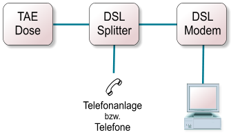Verkabelung mit einem externen Modem
Mithilfe des folgenden Kommandos kann man überprüfen, ob die Verkabelung richtig vorgenommen wurde: root@linux ~# pppoe -I eth1 -A
Wenn alles funktioniert sollte die Ausgabe wie folgt aussehen: Access-Concentrator: OSNC13-nrp3 Got a cookie: 50 64 87 59 6d bf 73 00 1d 67 98 7d c2 d3 a5 32 AC-Ethernet-Address: 00:01:96:99:50:b7
Die Konfiguration¶
pap-secrets¶
Um den Anschluss zu konfigurieren, wird die Datei /etc/ppp/pap-secrets mit einem beliebigen Editor geöffnet: root@linux ~# vi /etc/ppp/pap-secrets
In dieser Datei müssen nun die Einwahldaten eingetragen werden.
Achtung: Das hier aufgeführte Beispiel gilt für T-Online Anschlüsse. Bei anderen Providern können die Einwahldaten anders aussehen. Anschlusskennung: 11111111111 T-Onlinenummer: 222222222222 Mitbenutzer: 0001 Passwort: passwort
Bei der Mitbenutzernummer muss darauf geachtet werden, nur die 0001 zu verwenden, da eine Einwahl mit z.B. 0002 zusätzliche Kosten verursachen kann. Am Anfang steht die Anschlusskennung gefolgt von der T-Onlinenummer, die durch ein # von der Anschlusskennung getrennt wird. Dann wird wieder durch ein # getrennt die Mitbenutzernummer und “@t-online.de” angehängt, so dass sich folgende Zeichenkette ergibt:
11111111111#222222222222#0001@t-online.de
Diese muss zusammen mit dem Passwort in die Datei geschrieben werden: Auszug der Datei pap-secrets
# Secrets for authentication using PAP # client server secret IP adresses
“111111111111#222222222222#0001@t-online.de” * “passwort”
dsl-provider¶
In der Datei /etc/ppp/peers/dsl-provider müssen nun die für den ppp nötigen Optionen eingestellt werden.
Die Option user muss mit den Einwahldaten, wie sie auch in der pap-secrets stehen, gefüttert werden (ohne das Passwort natürlich). Ausserdem muss das Device (z.B. eth0) entsprechend angepasst werden. Mit dem Befehl man pppd kann eine nähere Beschreibung der einzelnen Optionen aufgerufen werden. Auszug der Datei dsl-provider
# Configuration file for PPP, using PPP over Ethernet # to connect to a DSL provider. # # See the manual page pppd(8) for information on all the options.
## # Section 1 # # Stuff to configure...
# MUST CHANGE: Uncomment the following line, replacing the user@provider.net # by the DSL user name given to your by your DSL provider. # (There should be a matching entry in /etc/ppp/pap-secrets with the password.) #user myusername@myprovider.net
# Use the pppoe program to send the ppp packets over the Ethernet link # This line should work fine if this computer is the only one accessing # the Internet through this DSL connection. This is the right line to use # for most people. pty “/usr/sbin/pppoe -I eth0 -T 80 -m 1452”
# If the computer connected to the Internet using pppoe is not being used # by other computers as a gateway to the Internet, you can try the following # line instead, for a small gain in speed: #pty “/usr/sbin/pppoe -I eth0 -T 80”
# An even more conservative version of the previous line, if things # don’t work using -m 1452... #pty “/usr/sbin/pppoe -I eth0 -T 80 -m 1412”
# The following two options should work fine for most DSL users.
# Assumes that your IP address is allocated dynamically # by your DSL provider... noipdefault # Comment out if you already have the correct default route installed defaultroute
## # Section 2 # # Uncomment if your DSL provider charges by minute connected # and you want to use demand-dialing. # # Disconnect after 300 seconds (5 minutes) of idle time.
#demand #idle 300
## # Section 3 # # You shouldn’t need to change these options...
hide-password lcp-echo-interval 20 lcp-echo-failure 3 # Override any connect script that may have been set in /etc/ppp/options. connect /bin/true noauth persist mtu 1492
Dial-on-demand¶
Für all diejenigen die einen zeitabhängigen Tarif haben, ist die Section 2 in der Datei dsl-provider interresant. Hier kann durch Auskommentieren von demand die automatische Einwahl und idle xxx das automatische Trennen der Verbindung aktiviert werden. Die xxx muss durch die Idle Zeit in Sekunden ersetzt werden.
Der erste Start¶
Bevor wir zum ersten Mal die Verbindung testen, sollte noch in der dsl-provider die Option nodetach angefügt werden, so dass der pppd beim Start nicht in den Hintergrund rutscht und wir die Ausgaben verfolgen können. Um alle Ausgaben verfolgen zu können, geben wir in einer extra Konsole, als root, noch folgenden Befehl ein: root@linux ~# tail -f /var/log/messages
Nun können wir die Verbindung zum erstenmal testen: root@linux ~# pppd call dsl-provider
Die Ausgabe des pppd sollte in etwa so aussehen: pppd[1578]: pppd 2.4.1 started by root, uid 0 pppd[1578]: Serial connection established. pppd[1578]: Using interface ppp0 pppd[1578]: Connect: ppp0 <–> /dev/pts/2 pppoe[1579]: PADS: Service-Name: ‘’ pppoe[1579]: PPP session is 31959 pppd[1578]: local IP address 62.226.75.9 pppd[1578]: remote IP address 62.225.254.169
Um zu testen, ob die Verbindung funktioniert, muss ein ping auf eine ip abgesetzt werden: user@linux ~$ ping 134.100.212.78
War der Ping erfolgreich, so steht auch unsere Verbindung. Nun können wir noch testen, ob der Nameserver richtig übernommen wurde: user@linux ~$ ping www.selflinux.de
Sollte die Namensauflösung fehlschlagen, kann man alternativ auch einen DNS-Server per Hand eintragen. Dies muss in der Datei /etc/resolv.conf geschehen: Auszug der Datei resolv.conf
search nameserver 212.185.253.9 nameserver 194.25.2.129
Normalerweise sollte dies aber nicht nötig sein, da die Adresse des Nameservers automatisch bezogen wird.
Manuelle Einwahl¶
Die manuelle Einwahl ist für all diejenigen interresant, die einen zeitabhängigen Tarif haben und die Kosten gerne unter Kontrolle haben (was bei Dial-on-Demand nicht der Fall ist).
Um eine manuelle Einwahl durchführen zu können, muss ein Script in /usr/local/bin/ angelegt werden. Das Script kann man nennen wie man will, sinnvoll ist z.B. connectadsl o.ä. Connectadsl
#! /bin/sh # # Connectadsl: Skript zur Erstellung einer Verbindung zum Provider # via ADSL/T-DSL fuer Debian GNU/Linux # # Verbindung starten: connectadsl start # Verbindung stoppen: connectadsl stop # # written by: Michael Schlenstedt # Michael@adsl4linux.de # http://www.adsl4linux.de # # Version: 0.2a # # # Einstellungen: # # # # Pfad zu pppd # PPPD=”/usr/sbin/pppd” # # Pfad zu sudo # SUDO=”/usr/bin/sudo” # # # # Ende der Einstellungen # # # # Wenn UID ungleich “0” (root), dann führe Skript mit sudo aus # # if test -x $SUDO; then
- if test $UID -ne 0; then
- exec $SUDO $0 $*
fi
fi # # Mit welchem Parameter wurde das Skript gestartet: Start oder Stop # case “$1” in # # Bei Stop wird aufgelegt # stop)
echo Verbindung beenden killall pppd ;;
# # Beim Parameter (Start) wird die Verbindung aufgebaut # start)
echo Verbindung starten $PPPD call dsl-provider ;;
- *)
- echo Falscher oder garkein Parameter angegeben! echo Bitte starten sie $0 mit dem Parameter start oder stop ;;
esac
Der große Vorteil bei der Verwendung dieses Scriptes ist, dass auch ein non-root user eine Internetverbindung herstellen kann. Diese Funktion wird über das Programm sudo realisiert.
Soll nur root die Möglichkeit des Einwählens haben, so reichen die folgenden Befehle aus, und das Script wird nicht benötigt: root@linux ~# pon dsl-provider
Verbindungs Abbau: root@linux ~# poff
Um nun als normaler user die frisch eingerichtete Internetverbindung nutzen zu können, muss noch das Programm sudo installiert werden. Normalerweise sollte jede Distribution ein entsprechendes Paket bereitstellen. Sollte dies nicht der Fall sein, kann man es hier en http://www.sudo.ws/sudo/ herunterladen.
Ist die Installation abgeschlossen, muss sudo nur noch konfiguriert werden. Hierzu ruft man visudo auf: root@linux ~# visudo
Visudo lässt sich wie der Editor vi benutzen.
Nun trägt man wie im unteren Beispiel die User ein, die das Internet nutzen können sollen. sudoers file
# sudoers file. # # This file MUST be edited with the ‘visudo’ command as root. # # See the man page for the details on how to write a sudoers file. #
# Host alias specification
# User alias specification
# Cmnd alias specification
# User privilege specification root ALL=(ALL) ALL Peter ALL=NOPASSWD:/usr/local/bin/connectadsl
Loggt man sich nun mit dem Benutzer Peter ein, kann er mit den folgenden zwei Befehlen die eingerichtete Verbindung nutzen: user@linux ~$ connectadsl start user@linux ~$ connectadsl stop
Damit ist die Einrichtung des A-DSL Anschlusses abgeschlossen.
Viel Spaß im WWW (Welt Weites Warten g)
Danksagung¶
Viele Informationen und Texte für diesen Artikel stammen von de http://www.adsl4linux.de
Autor
Simon Schwarz s.sch-@gmx.de
Formatierung
Axel Gross axelgross@web.de
World Wide Web¶
Server¶
Linux als WWW-Server¶
Beschreibung
Linux bietet sich als Betriebssystem zum Betreiben eines Webservers geradezu an. Die am weitesten verbreitete Webserver-Software, der Apache, ist ebenso wie Linux frei verfügbar.
Deshalb erfolgt hier eine kurze Einführung in dessen Konfiguration mit Beschreibung der wichtigsten Konfigurationdateien.
Was ist eigentliche der Apache?
Der bekannteste Dienst des Internet ist zweifelsohne das WWW oder World Wide Web (Welt Weites Warten ;-) ). Es ist eine klassische Client-Server-Anwendung, bei welcher der Client passiv Informationen vom Server bezieht und diese in der Regel nicht verändern kann. Grundlage sind ein zustandsloses Protokoll (HTTP=Hypertext Transfer Protocol) und die Seitenbeschreibungssprache HTML (Hypertext Markup Language).
Der Server hat die Aufgabe, die Anfragen der Form Dienst://server.in.domäne/Pfad_zur_Seite zu beantworten und die gewünschte Seite auszuliefern. Ferner können dynamische Seiten generiert werden, z.B. durch eine Datenbankanwendung, welche vom WWW-Server abgefragt wird. Um besondere Dienste zu realisieren, können auch komplette Programme auf dem Webserver gestartet werden, in der Regel über das CGI (Common Gateway Interface). Dies erlaubt es, vom Client aus bestimmte Prozesse auf einem Server anzustoßen.
Seit der Erfindung des WWW Ende der 80iger Jahre am en CERN in der Schweiz, hat sich der Dienst vom reinen Userinterface für Informationssysteme zu einer globalen und plattformübergreifenden Benutzeroberfläche gewandelt. Damit wurden die Inhalte und Aufgaben der Web-Server immer weiter ausgedehnt, und es entstanden verschiedene Lösungsansätze und Programme.
Der am weitesten verbreitete Server im Internet ist mit über 60% der Apache. Er ist als GNU-Software frei verfügbar und hat sich als “A patchy Server” aus dem NCSA-Server entwickelt, der auch die Basis für andere Entwicklungen darstellt. Zwischenzeitlich ist er auf nahezu alle Plattformen portiert worden, auch eine NT-Variante ist verfügbar.
Der Apache stellt in der SuSE-Distribution den Standard-Webserver dar und wird in der Serie n installiert.
Grundkonfiguration
Die Konfigurationsdateien des Apache befinden sich im Verzeichnis “/etc/httpd” Dort liegt nach der Installation die Datei httpd.conf.
Bei älteren Installationen gibt es darüber hinaus noch weitere Dateien:
access.conf magic mime.types srm.conf
Übersicht der Konfigurationsdateien
Der Apache verwendet eine Konfigurationsdatei httpd.conf. Hier werden die Grundeinstellungen für den Server vorgenommen.
Manchmal, besonders in älteren Installationen, sieht man noch weitere Dateien:
access.conf Wie der Name es erahnen läßt, werden hier die Zugriffsrechte auf den Server vergeben. httpd.conf Hier werden die Grundeinstellungen für den Server vorgenommen. magic Diese Datei wird vom Apache benutzt, um den Typ einer auszuliefernden Datei zu ermitteln. mime.type Hier stehen die MIME-Typen (Multipurpose Internet Media Extensions). srm.conf Ergänzungen zur Grundkonfiguration (Server Ressource Management).
Nach der Installation mittels YaST, rpm oder einem anderen Verfahren ist der Server bereits einsatzbereit. Er wird beim Starten des Rechners automatisch in Runlevel 2 gestartet und kann per Hand über das Script /etc/rc.d/apache beeinflußt werden. Dieses wertet die Variable START_HTTPD aus, welche in rc.config auf YES gesetzt werden muß (ist standardmäßig der Fall). Danach benutzt der Apache das Verzeichnis /usr/local/httpd/htdocs als Basisverzeichnis für die HTML-Dateien. Der Aufruf vom Browser aus sollte dann bereits folgendes Ergebnis liefern:
Um den Server herunterzufahren geben sie “/etc/rc.d/apache stop” ein. Wenn Sie ihn wieder starten wollen, so geht dies analog mit “/etc/rc.d/apache start”. Um im laufenden Betrieb Änderungen an den Konfigurationsdateien wirksam werden zu lassen, können Sie mit “/etc/rc.d/apache restart” einen Neustart des Servers veranlassen. Entgegen älteren Versionen des Apache wird hierbei lediglich der Vaterprozeß von der Änderung informiert (mittels kill -HUP PID-des-Vater-httpd) und nicht die gesamte Prozeßgruppe gekillt und neu gestartet.
Wichtige globale Parameter in der httpd.conf
Wie Sie bereits gesehen haben, ist der Apache bereits direkt nach der Installation funktionsbereit. Um ihn in das lokale Netz einzubinden und auf die zu erwartende Last einzustellen, sollten aber einige Änderungen erfolgen. Folgende Parameter in der Datei httpd.conf sind interessant:
LoadModule, modulname Pfad zum Modul
Wie eingangs erwähnt, zeichnet sich der Apache durch Modularität und leichte Erweiterbarkeit aus. Über diese Parameter in httpd.conf kann der Leistungsumfang des Apache bestimmt werden, indem einzelne Module ein- oder ausgeblendet werden. Dies kann in sensiblen Bereichen (Internet-Server) besonders interessant werden, wenn sich z.B. ein Modul als potentielle Sicherheitslücke erwiesen hat. Anstatt den gesamten Server vom Netz zu nehmen (was einem Verlust der Web-Präsenz und damit geschäftlichen Verlusten gleichkommt) muß lediglich das betroffene Modul deaktiviert und der Apache neu gestartet werden. Damit fehlt zwar ein Teil der Funktionalität, aber nicht das gesamte System.
ServerType standalone
Standardmäßig läuft der httpd bei SuSE als Standalone-Server, d.h. er wird über die rc-Skripte gestartet und bleibt bis zum Beenden durch Aufruf des Shutdown-Skriptes im Speicher. Alternativ hierzu kann auf Servern, welche lediglich für besondere Zwecke und nur zeitweise als Webserver laufen, auch ein Start über den inetd erreicht werden. Neben der entsprechenden Einrichtung in der Datei /etc/inetd.conf muß in der httpd.conf der Wert standalone durch inetd ersetzt werden.
Port 80
Der Standard-Port für das HTTP ist 80. Ist es aus besonderen Gründen erforderlich, hiervon abzuweichen, kann hier ein alternativer Port angegeben werden. Beachten Sie dabei, daß diese Änderung den Clients bekannt gemacht wird (Browser-Konfiguration) und das der gewünschte Port auf der Servermaschine auch frei ist.
User wwwrun Group nogroup
Der httpd-Prozeß sollte aus Sicherheitsgründen nicht unter root-Kennung laufen. Da aber für die Benutzung von Ports unterhalb von 1023 eben dieses notwendig ist, startet lediglich der Vaterprozeß als root und wechselt anschließend nach User und Group. Der Standarduser wwwrun ist bei SuSE bereits eingerichtet, der Wert -2 führt in die Gruppe nogroup, welche ebenfalls auf Ihrem System vorhanden sein sollte.
ServerAdmin you@your.address
Fehler und Probleme sendet der httpd per Mail an diese Adresse. Sie taucht auch in den automatisch generierten Fehlerseiten für den Benutzer auf und sagt ihm, an wen er sich wenden soll, falls Probleme auftauchen. Im Internet hat sich die Konvention webmaster@ihre.domain durchgesetzt, wobei webmaster in der Datei /etc/aliases auf einen realen Benutzer verweist.
ServerName www@ihre.domain
Hier tragen Sie den qualifizierten Namen Ihres Servers ein. Beachten Sie dabei, daß dieser aufgelöst werden können muß, d.h., entweder über DNS oder in der Datei /etc/hosts zugeordnet wird.
ServerRoot “/usr/local/httpd”
Dies ist das Basisverzeichnis der httpd-Installation. Wenn nicht anders angegeben (s.u.) werden Logdateien u.ä. abwärts von diesem Verzeichnis gesucht.
ErrorLog /var/log/httpd/error_log
Der Pfad zu der Fehler-Logdatei des Apache.
LogLevel warn
LogFormat: UNIX-Programme können sehr gesprächig sein, was ihren Zustand und eventuelle Fehler betrifft. Hierfür existiert seit BSD-UNIX der Mechanismus des SYSLOG-Schreibers, der diese Meldungen protokolliert. Daneben erzeugen wichtige Serverprozesse aber auch eigene Log-Dateien und geben diesen ein entsprechendes Format. Mittels LogLevel kann die “Gesprächigkeit” des httpd von wenig (emerg = emergency; nur “Lebensbedrohliche” Meldungen werden generiert), bis viel (debug = debugging; jede Kleinigkeit wird protokolliert) beeinflußt werden. Standard ist warn, was im Normalbetrieb ausreichend ist. Hinsichtlich des Formates der Log-Dateien hat sich das Common Log Format (CLF) durchgesetzt, welches von vielen Auswertungsprogrammen unterstützt wird. Änderungen an den Standardwerten sind nicht ratsam, es sei den, man ist sich der Auswirkungen bewußt.
CustomLog /var/log/httpd.access_log common
Diese Log-Datei hat eine Sondestellung, da in ihr sämtliche Zugriffe auf den Server protokolliert werden.
StartServers 5 MinSpareServers 5
Gibt die Anzahl der anfangs zu startenden und danach mindestens verfügbaren Child-Prozesse an. Der Apache erzeugt nach dem Start die hier angegebene Anzahl von Subprozessen und teilt die Anfragen danach dynamisch auf diese auf, so daß eine entsprechende Lastverteilung erfolgt.
MaxSpareServers 10
Wenn die vorhandenen Childprozesse nicht mehr ausreichen, erzeugt der Vaterprozeß weitere Kinder. Geht die Last dann wieder zurück, können die nunmehr leerlaufenden Prozesse wieder beendet werden. Wenn mehr als die hier angegebenen Child-Prozesse im Leerlauf sind, werden sie bis zu diesem Wert hin wieder beendet.
Die Datei httpd.conf bietet noch weitere Einstellungsmöglichkeiten. Zu Details sei hier auf die entsprechende Literatur und die mitgelieferte Dokumentation unter /usr/doc/packages/apache, sowie die HTML-Online-Hilfe verwiesen.
Wichtige Webserverparameter
Bei älteren Installationen sind diese Parameter in der Datei srm.conf zu finden, normalerweise stehen diese jedoch auch in der httpd.conf.
DocumentRoot “/usr/local/httpd/htdocs”
Hier wird das Wurzelverzeichnis für die HTML-Dokumente festgelegt (Document Root). Alle Anfragen der Clients werden relativ zu diesem Verzeichnis beantwortet (http://www.your.domain/path_to_file/file.html). Bei eine Anfrage der Form http://www.your.domain wird in diesem Verzeichnis die Index-Datei (s.u.) gesucht.
UserDir public_html
Auf öffentlichen Webservern, aber auch in Unternehmen, wird die Möglichkeit angeboten, Benutzerseiten von Anwendern in das Netz zu stellen. Dazu wird in deren Home-Verzeichnis ein Unterverzeichnis public_html angelegt und mit der URL http://www.server.name/~username/ kann dann auf dieses Verzeichnis zugegriffen werden. Wenn uns der Eintrag public_html nicht gefällt, so können wir ihn hier ändern.
DirectoryIndex index.html
Mit dieser Einstellung legen Sie fest, welche Dateien als sog. Indexdateien betrachtet werden. Bei Aufruf einer URL, die nur einen Pfad als Ziel enthält (z.B. http://www.my.domain/verzeichnis/) sucht der Apache in <verzeichnis> nach einer Datei, die einen der unter DirectoryIndex aufgeführten Namen hat. Mehrere Möglichkeiten können durch Leerzeichen getrennt angegeben werden, z.B. index.html Index.html index.htm anfang.html.
AddIcon [Pfad_zum_Icon]
Diese Einstellungen betreffen die Zuordnung von Icons zu einzelnen Dateien/MIME-Typen. Wenn vom Client auf ein Verzeichnis zugegriffen wird, in dem keine Datei index.html (s.o.) liegt, so bekommt er ein Inhaltsverzeichnis angezeigt. Mit den genannten Einträgen können die auszuliefernden Symbole beeinflußt oder geändert werden. Im Normalfall sind die voreingestellten Werte aber ausreichend und aufgrund der weiten Verbreitung des Apache eine Art Quasi-Standard. Man kann aber Symbole für eigene Dateitypen nach belieben hinzufügen.
HeaderName HEADER
Um dem Anwender eine kurze Erläuterung des Verzeichnisinhaltes zu geben, kann dort eine README-Datei angelegt werden. Apache stellt diese dann dem eigentlichen Verzeichnisinhalt voran.
Mit diesen einfachen Hilfsmitteln kann z.B. eine einfache Erklärung für die Verzeichnisstruktur eines FTP-Servers aufgebaut werden.
AccessFileName .htaccess
Der Name der bereits erwähnten .htaccess-Datei ist ebenfalls frei wählbar. Inhaltlich entsprechen diese Dateien den Directory-Anweisungen aus der Datei httpd.conf und dürfen demnach die gleichen Inhalte besitzen. Um zu verhindern, daß Anwender eigenmächtig riskante Einstellungen für ihr public_html vornehmen ist die Auswertung dieser Dateien aber in httpd.conf in der Regel gesperrt (s. AllowOverride). Ist die Benutzung von .htaccess-Dateien erlaubt, so könnten diese folgenden Inhalt haben:
.htaccess
order deny,allow deny from all allow from localhost
Damit erlauben wir nur dem Rechner localhost den Zugriff auf unser Verzeichnis NSG.
Wichtige Zugriffsberechtigungsparameter
Bei älteren Installationen sind diese Parameter in der Datei access.conf zu finden, normalerweise stehen diese jedoch auch in der httpd.conf.
Es wird der Zugriff auf Dateien und Verzeichnisse geregelt. Sie korreliert dabei mit den .htaccess-Dateien in den Verzeichnissen, welche einen User-bezogenen Zugriff gewähren.
Jede der nun folgenden Anweisungen kann für einzelne Unterverzeichnisse (ab DocumentRoot) gesetzt werden. Hierfür ist das betroffene Verzeichnis jeweils mit <Directory “Pfad”> einzuleiten und die Beschreibung mittels </Directory> als Block zu beenden. Die Datei access.conf beginnt mit einem Abschnitt für die Grundeinstellungen ab DocumentRoot und setzt dabei restriktive Werte: Auszug httpd.conf
<Directory> Options None AllowOverride None </Directory>
Hierfür wird die Wirkung von .htaccess-Dateien für DocumentRoot festgelegt. Default (des Apache, nicht SuSE!) ist All, d.h., die .htaccess-Dateien werden gelesen und der komplette Inhalt wird interpretiert. Wenn auf dem Server das Erstellen privater Benutzerseiten gewünscht ist, dann ist dieser Wert aber nicht zu empfehlen, da die Anwender sonst z.B. die Nutzung von eigenen CGI-Scripten einschalten könnten. Daher ist bei SuSE diese Einstellung auf None gesetzt, d.h., .htaccess-Dateien werden ignoriert.
Jetzt werden mit<Directory “/usr/local/httpd/htdocs”> die Einstellungen für /usr/local/httpd/htdocs (also wieder unser DocumentRoot)genauer bestimmt.
Options Indexes FollowSymLinks
Mit der Options-Anweisung werden verschiedene Einstellungen eingeleitet. In diesem Beispiel bedeutet Indexes, daß der Server bei Aufruf einer URL mit einem Directory als Ziel (z.B. http://www.my.domain/Verzeichnis/) in <DocumentRoot/Verzeichnis> eine Datei index.html sucht und diese zurückliefert, ist diese nicht vorhanden, aber mit einer Fehlermeldung (Document not found) antwortet. Die Option FollowSymLinks erlaubt es, aus dem DocumentRoot mittels symbolischer Links auszubrechen, sofern die Zugriffsrechte entsprechend gesetzt sind. Damit können Sie bei Platzproblemen einen Teilbaum Ihres Webservers auf eine andere Partition oder gar ein über NFS/SAMBA gemountes Verzeichnis legen.
Auszug httpd.conf
order allow,deny allow from all
Hiermit legen Sie fest, wer alles auf Ihren Server zugreifen darf. Zuerst wird die Reihenfolge bestimmt, in der die folgenden Regeln ausgewertet werden. Bei order allow,deny werden zuerst die unter allow aufgeführten Regeln und danach erst die unter deny stehenden angewendet. Der Eintrag order deny,allow dreht diese Reihenfolge um.
Die einzelnen Regeln besitzen die Grundsyntax allow|deny from domain|all Wollen wir z.B. nur den Rechnern aus unserer eigenen Domain den Zugriff erlauben, so schreibe man:
.htaccess
order deny,allow deny from all allow from my.domain
Um nur bestimmten Domains den Zugriff zu verweigern schreibe man:
Auszug httpd.conf
order allow,deny allow from all deny from bad.domain other.domain 123.123.40
Wie man sieht ist neben der Angabe des symbolischen Namens auch die Netzadresse des (un)erwünschten Netzes möglich.
Zugriffsschutz für Verzeichnisse
Aus der Kombination von httpd.conf (beziehungsweise access.conf) und .htaccess-Dateien ergibt sich der Zugriffsschutz für die Verzeichnisstruktur. Um nur einer bestimmten Benutzergruppe oder einzelnen Anwendern den Zugriff auf Verzeichnisse zu gewähren, sind folgenden Einstellungen notwendig:
In der Datei access.conf wird das Verzeichnis aus den allgemeingültigen Einstellungen herausgelöst. Eintrag in access.conf:
<Directory /usr/local/httpd/htdocs/NSG> AllowOverride All AuthName NSG AuthType Basic AuthUserFile /etc/httpd/passwd AuthGroupFile /etc/httpd/group Require user hebi;nsg </Directory>
AllowOverride
All ermöglicht es, mittels .htacces weitere Einstellungen innerhalb des Verzeichnisses anzulegen.
AuthName NSG
legt einen Namen für das Login-Feld an.
AuthType
Basic stellt den Authorisierungsmechanismus ein (s.u.).
AuthUserFile
sagt, wo die Paßwortdatei zu suchen ist.
AuthGroupFile
legt fest, in welcher Datei die Usergruppen zu suchen sind.
Require user
legt fest, welche Benutzer (aus AuthUserFile) Zugriff haben sollen. Der Apache setzt bei der Authorisierung auf verschiedene Mechanismen. Bereits in der Standardausführung enthält er die Verfahren
Basic (mod_auth) dbm (mod_auth_dbm) db (mod_auth_db)
Weitere Möglichkeiten können über Module eingebunden werden. Die verbreiteste ist wohl der Weg über eine Datenbank, wobei die für nicht-kommerzielle Zwecke freie Implementierung mSQL bereits als Module mod_auth_msql zum Standardumfang des Apache gehört.
Um die für das Verfahren Basic notwendigen Dateien anzulegen benötigt man das Programm htpasswd und einen beliebigen Editor. Das Anlegen einer Paßwortdatei erfolgt mit
root@linux # htpasswd -c [Pfad_zur_Datei] Username
Danach kann ohne den Schalter -c ein neuer Benutzer angelegt werden. Hierbei wird der bei UNIX standardmäßig implementierte crypt(3)-Mechanismus verwendet. Das Ergebnis sieht dann wie folgt aus:
[Pfad_zur_Datei]
nobody:8Y0H8cYsTFzNw hhebi:wN95S.UxOOZH6 hhe:.NQ/RSk5MnfvQ
Für eine Gruppendatei benötigt man lediglich einen Editor wie z.B. den vi:
Gruppendatei
admin:hebi he other:he nobody
Im Verzeichnis (hier: /usr/local/httpd/htdocs/NSG) kann mit der Datei .htaccess der Zugriff weiter kontrolliert werden:
Satisfy All
Order deny,allow
deny from all
allow from my.domain
Damit können jetzt nur noch Clients aus der Domain my.domain auf das Verzeichnis zugreifen. Ersetzt man bei Satisfy den Wert All durch Any ist aus der Domain my.domain der Zugriff ohne Einschränkung erlaubt, alle anderen Rechner benötigen eine gültige Kombination aus Username und Password.
Aufgaben
Installieren Sie den Apache von der CD, indem Sie YaST benutzen. Kontrollieren Sie, ob sich alle Dateien an den richtigen Orten befinden.
Starten Sie den Apache über das Script /etc/rc.d/apache. Was müssen Sie beachten? Wie können Sie verhindern, daß der Apache beim Hochfahren des Rechners gestartet wird?
Ändern Sie folgende Einstellungen in der Datei httpd.conf: Änderungen in httpd.conf
- ServerName = wwwXY.nsg.edu
- (Wobei XY Ihrer Platznummer entspricht)
ServerAdmin = webmaster@wwwYX.nsg.edu
Was müssen Sie beachten, damit diese Einstellungen auch funktionieren?
Ändern Sie folgenden Einstellungen: Änderungen in httpd.conf
StartServer = 10 MinSpareServers = 15
Stoppen Sie den Apache und starten Sie ihn erneut. Wie können Sie die Auswirkungen Ihrer Änderungen kontrollieren und wie sehen diese aus?
Erzeugen Sie im “DocumentRoot” ein Verzeichnis Eigene_Dateien und erstellen Sie darin eine Datei index.html. Benutzen Sie hierfür die Vorlage /home/ablagen/ZENTRAL/html_body.html. Arbeiten Sie dabei als root.
Versuchen Sie, mittels Netscape die eben erstellte Datei aufzurufen. Benutzen Sie dabei sowohl eine absolute URL (http://localhost/Eigene_Dateien/index.html) als auch den einfachen Verzeichnisaufruf (http://localhost/Eigene_Dateien/). Erfolg?
Ergänzen Sie die Voreinstellungen für Indexdateien um die Einträge index.htm und anfang.html. Erzeugen Sie durch Kopieren diese Dateien in Eigene_Dateien und verändern Sie diese, so daß man einen Unterschied erkennt. Versuchen Sie auf http://localhost/Eigene_Dateien/ mit dem Netscape zuzugreifen und stellen Sie fest, welche Datei angezeigt wird. Verändern Sie die Reihenfolge der Indexdateien in httpd.conf und versuchen Sie es erneut. Was stellen Sie fest?
Legen Sie einen Benutzer “Peter Maier” (Username: pmaier, Homeverzeichnis: /home/pmaier) an und erzeugen Sie ein Unterverzeichnis /home/pmaier/public_html. Erzeugen Sie eine Datei index.html in diesem Unterverzeichnis (benutzen Sie hierfür wieder die Vorlage html_body.html) und versuchen Sie, mit Netscape auf diese zuzugreifen.
Ergänzen Sie die Datei httpd.conf um folgende Zeilen: Ergänzung in httpd.conf
- <Directory /usr/local/httpd/htdocs/NSG>
- AllowOverride All AuthName NSG AuthType Basic AuthUserFile /etc/httpd/passwd AuthGroupFile /etc/httpd/group Require user hebi nsg
</Directory>
Legen Sie die darin beschriebenen Paßwort- und Gruppendateien mit den entsprechenden Benutzern an. Starten Sie den Apache neu und versuchen Sie, auf das Verzeichnis zuzugreifen.
Autor
Dirk Hebenstreit dirk.hebenstreit@epost.de
Formatierung
Matthias Nuessler m.nuessler@web.de
Proxies¶
Der Web-Proxy Squid¶
Der Web-Proxy Squid
Sollen sich mehrere Surfer einen Web-Zugang teilen, der sicher, schnell und zudem flexibel ist, bietet sich ein Caching-Web-Proxy wie Squid an.
Squid steht unter der GNU GPL. Er ist sehr ausgereift, schnell und flexibel. Deshalb ist er von den Web-Proxies am weitesten verbreitet und wird gerade in sehr großen Umgebungen, wie Universitäten und großen, verzweigten Unternehmen, verwendet.
Warum sollten wir seine Vorteile nicht auch in kleineren Netzwerken nutzen?
Was macht ein Web-Proxy?
Zunächst die Vorteile eines Web-Proxies im allgemeinen:
Proxy heißt übersetzt Stellvertreter, und als solcher holt er für die Nutzer die Web-Seiten aus dem Netz. Nach außen ist netzwerktechnisch nur der Proxy zu sehen, der Zugreifende ist hinter ihm versteckt und dadurch geschützt. Als weitere Fähigkeit kann ein Proxy meist statische Web-Inhalte zwischenspeichern, was Caching genannt wird. Ein erneuter Zugriff auf die gleichen Inhalte wird dadurch erheblich beschleunigt, und das bei gleichzeitig geringerer Netzlast!
Warum gerade den Squid als Web-Proxy verwenden?
Der Einsatz des Squid bringt mehrere Vorteile mit sich:
Freie Lizenz
Squid ist eine Open-Source-Entwicklung unter der GNU GPL. Somit fallen keine Lizenz-Kosten an, der Quelltext ist frei verfügbar und an eigene Bedürfnisse anpassbar.
Squid ist sehr stabil und ausgereift
Der Squid wird seit vielen Jahren entwickelt und hat sich auch gerade in größeren Umgebungen, wie Universitäten und großen Firmen, bewährt. Im Laufe der Entwicklung ist er schneller und vielseitiger geworden, so dass er sich hinter keinem kommerziellen Proxy verstecken muss.
Ein Blick in die gut dokumentierte /etc/squid.conf zeigt, wie viele Optionen mit dem Squid offen stehen. Und es gibt eine sehr aktive Gemeinde, die diesen Proxy immer weiter entwicket.
Beschleunigung und Entlastung des Internet-Zugangs
Statische Inhalte, welche einmal abgerufen wurden, können zwischengespeichert werden. Dazu gehören auch Grafiken von dynamisch generierten Seiten. Ein erneutes Abrufen solcher Inhalte, auch von einem anderen Benutzer, kann aus dem Zwischenspeicher bedient werden. Die Anfrage ist dadurch erheblich schneller beantwortet, der Internetzugang wird entlastet. Die Aktualität der Seiten wird durch sehr ausgeklügelte Methoden sichergestellt.
Die am häufigsten genutzten Seiten werden im Arbeitsspeicher gehalten (hot object). Die nicht so schnelle Festplatte wird für länger zurückliegende Zugriffe genutzt.
Eine zusätzliche Beschleunigung bewirkt das Zwischenspeichern der Zuordnung Name zu IP-Adresse ( DNS-Caching).
Kontrolle der Zugriffe
Soll der Zugriff eingeschränkt werden, ist dies über die Rechtevergabe mit den Zugriffs-Kontroll-Listen (Access Control Lists, ACL) von Squid flexibel möglich. Sinnvoll kann dies sein, um die Ablenkung durch die Angebots-Flut des Internets einzuschränken, juristische Probleme zu vermeiden (z. B. durch pornografische Inhalte in Schulen) oder um die Online-Kosten im Griff zu halten.
Bereits getätigte Zugriffe können übersichtlich ausgewertet werden. So ist nachvollziehbar, wer welche Seiten aufgesucht und wer wie viel Daten übertragen hat. Ebenso kann ermittelt werden, welche URLs am häufigsten aufgesucht wurden oder auch wieviele Daten insgesamt übertragen wurden. Zusätzliche Tools, wie en webalizer und cachemanager, helfen die Logfiles auszuwerten. So kann rechtzeitig ermittelt werden, wann die Proxy-Hardware nicht mehr ausreicht. Oder es können bestimmte Seiten gesperrt werden, die den Internet-Zugang überstrapazieren.
In diesen Kontrollmöglichkeiten liegt natürlich auch die Gefahr, in die Privatsphäre anderer einzugreifen. Deshalb ist die Informationsflut in die Logfiles abgestuft deaktivierbar (z. B. mit dem Parameter client_netmask).
Erhöhte Sicherheit
Eine Firewall kann ein lokales Netz effektiver absichern, wenn sie einen Proxy wie den Squid verwendet, anstatt nur auf Paketfilterung zu vertrauen. Der Grund dafür liegt darin, dass Paketfilter auf TCP/IP-Ebene, nicht aber den Inhalt von HTTP- und FTP-Verbindungen analysieren können. Proxies können aber genau diese Inhalte erkennen.
Zusätzlich können Proxies die Clients des lokalen Netzes erheblich besser verbergen, als es durch Network Adress Translation (NAT) möglich wäre. Mit Hilfe des Squid kann genau definiert werden, was an den Webserver übertragen werden soll und was nicht (z. B. mit dem Parameter forwarded_for).
Es können einige Viren geblockt werden (z. B. Nimda).
Namensauflösung vereinfacht
Praktisch ist auch, dass ein Proxy die Namensauflösung zu den IP-Adressen übernimmt. Es muss im internen Netz kein öffentlicher Name auflösbar sein, was die DNS-Konfiguration erleichtert.
Große Flexibilität
Insbesondere in komplexeren Netzwerken ist der Squid-Proxy sehr flexibel.
So kann z. B. genau definiert werden, welche Seiten aus dem Internet, welche von einem anderen Proxy und welche direkt aus dem lokalen Netz geholt werden sollen.
Es kann über mehrere Standorte ein so genannter Cache-Verbund aufgebaut werden, was die Netzlast deutlich vermindern kann und die Ausfallsicherheit erhöht.
Des weiteren sind zusätzliche Module verfügbar, welche die Funktionalität des Squid erweitern können. Hierzu zählen z. B. en SquidGuard oder auch Module für die Nutzung einer Windows-Benutzerverwaltung im Squid.
Squid-Konfiguration auf die Schnelle
Nach der Installation ist der Squid nicht ohne Anpassungen lauffähig, er muss zunächst über die Datei /etc/squid.conf an die vorhandene Netzwerk-Situation angepasst werden. Diese Datei ist sehr gut kommentiert, aber aufgrund der vielen Einstelloptionen auch sehr umfangreich. Zum Glück können fast alle Optionen unverändert übernommen werden.
Um den Proxy erst einmal zum Laufen zu bringen, müssen die hier vorgestellten Parameter angepasst werden. Ergänzend kann auch in die QUICKSTART-Datei der Squid-Doku geschaut werden (meist unter /usr/share/doc/squid).
Zugriffs-Rechte
Die Voreinstellung des Squid ist aus Sicherheitsgründen so, dass keiner surfen darf. Die Rechtevergabe ist sehr flexibel und damit leider auch kompliziert. Es soll der Einfachheit halber zunächst allen Nutzern im eigenen lokalen Netz Vollzugriff auf das Internet gewährt werden.
Für die Rechtevergabe muss zunächst die Zugriffs-Kontroll-Liste (Access Control List, ACL) definiert werden. Anschließend wird über den Namen dieser ACL das Recht mit dem Schlüsselwort http_access zugewiesen. Weitere Details sind zu finden unter: Rechtevergabe unter Squid im Detail
Die Syntax der ACL:
acl <frei_definierbarer_Name> <acl_Typ> <Werte>
Angenommen, die PCs des eigenen Netzes verwenden alle IPs aus dem Bereich 192.168.10.*, könnte die Konfiguration für Vollzugriff des eigenen lokalen Netzes wie folgt aussehen:
acl allowed_hosts src 192.168.10.0/255.255.255.0
http_access allow allowed_hosts http_access deny all
Die letzte Zeile ist schon vorhanden, die beiden darüber liegenden müssen neu angelegt werden. Die Reihenfolge der http_access-Zeilen ist wichtig! Für die eigene Nutzung muss natürlich die IP-Netz-Adresse 192.168.10.0/255.255.255.0 angepasst werden.
Größe des Festplatten-Zwischenspeichers
Dieser Parameter ist nicht zwingend zu verändern, damit Squid lauffähig wird, aber so wichtig, dass er hier aufgeführt wird.
Soll der Zwischenspeicher (Cache) viele Objekte enthalten können, muss die knappe Voreinstellung von 100 MB vergrößert werden.
Doch Vorsicht: Es kann leider nicht der gesamte verfügbare Platz einer Partition genutzt werden, da zusätzlich noch Verwaltungsdaten Platz benötigen. Steht dem Squid nicht genügend Platz zur Verfügung, kann er nicht arbeiten. Die Angabe der Zwischenspeicher-Größe sollte deshalb immer mindestens 10% unter dem Wert des freien Platzes liegen.
Die Syntax ist:
cache_dir <Pfad zum Zwischenspeicher> <Größe> <nicht zu verändernde Parameter>
Soll die Größe z.B. auf 10000MB eingestellt werden, kann folgendes eingetragen werden:
cache_dir /usr/local/squid/var/cache 10000 16 256
Squid hinter einer Firewall
Kann der Squid direkt auf das Internet zugreifen, sollten die beiden genannten Einstellungen genügen, um erst mal loslegen zu können. Direkt zugreifen bedeutet hier, dass der Proxy über das Default Gateway auf die Ports 80, 443 und 21 im Internet zugreifen kann.
Wenn das nicht möglich ist, wird die vorgelagerte Firewall einen Web-Proxy haben, von dem sich der Squid die Daten holen kann. In diesem Fall ist zunächst folgendes einzutragen:
cache_peer <firewall> parent <Proxy-Port> <Optionen>
Zum Beispiel:
cache_peer 192.168.10.1 parent 8080 no-query
Um sicherzustellen, dass Squid für alle unbekannten, nicht im eigenen Netz vorkommenden Web-Server auf das Internet zugreift, die eigenen Web-Server jedoch direkt anspricht, sollte folgendes ergänzt werden:
acl localnet srcdom .selflinux.org
always_direct allow localnet always_direct allow allowed_hosts never_direct allow all
Die eigene Domain, hier selflinux.org, muss natürlich angepasst werden. Die ACL für die allowed_hosts ist schon weiter oben definiert.
Squid-Daemon starten
Die Installation von Squid über RPM oder DEB ermöglicht eine relativ einfache Inbetriebnahme des Dienstes. In diesen Fällen ist bereits einiges vorkonfiguriert, was ansonsten von Hand gemacht werden muss (etwa das Anpassen von Dateisystemrechten oder das Erstellen eines Init-Skripts).
Bevor Squid das erste Mal gestartet wird, muss die Cache-Verzeichnisstruktur angelegt werden mit: root@linux # squid -z
Wer will, kann nun den Squid zunächst im Debug-Modus auf der Konsole starten. Fehler werden so auf dem Terminal ausgeben, da Squid nicht in den Hintergrund geschickt wird: root@linux # squid -NCd1
Ist alles in Ordnung, sollte folgende Zeile erscheinen: Ready to serve requests.
Läuft alles zur Zufriedenheit, kann Squid in Zukunft über das von der jeweiligen Linux-Distribution vorgesehene Startskript gestartet werden, meist durch: root@linux # /etc/init.d/squid start
Bei Problemen sollten die Logfiles /var/log/messages und cache.log untersucht werden.
Wo die cache.log abgelegt ist, kann ermittelt werden mit: root@linux # grep cache_log /etc/squid.conf
Rechtevergabe unter Squid im Detail
Warum Zugriffsrechte für den Internet-Zugriff?
Werden die Rechte lediglich so gesetzt wie im Abschnitt Squid-Konfiguration auf die Schnelle beschrieben, können alle Nutzer auf sämtliche Inhalte des Internet zugreifen.
Das mag als Konfiguration häufig reichen, es können sich daraus jedoch folgende Nachteile ergeben:
Der Internetzugang ist schnell überlastet und damit langsam. Erhöhte Kosten können entstehen. Die Nutzer können sich in der Informationsflut des Internets verlieren (wichtig bei Schulungen/Schülern). Es können sich juristische Probleme ergeben, wenn sich z. B. Schüler pornografische Inhalte anschauen
Umsetzung
Das Setzen der Rechte unter Squid ist sehr flexibel, aber leider nicht selbsterklärend.
Mit einer ACL wird zunächst festlegt, auf was (Ziel) oder von was (Quelle) zugegriffen wird. Über http_access wird dieser ACL anschließend ein Verbot oder eine Erlaubnis zugewiesen.
ACL-Elemente - Ziel oder Quelle definieren
Die Syntax einer ACL sieht folgendermaßen aus:
acl <frei_definierbarer_acl_Name> <acl-Typ> <Wert ...>
Über den frei definierten ACL-Namen kann mit Hilfe des unten erläuterten http_access das gewünschte Recht vergeben werden. Diese ACL-Namen dürfen natürlich nicht doppelt vergeben werden.
Es können verschiedene Arten von Quellen und Zielen zur ACL-Definition verwendet werden. Hier die für die Zugriffsverwaltung genutzten ACL-Typen:
src: Absender-IP-Adressen der Client-PCs, die über Squid auf Web-Inhalte zugreifen wollen. dst: Ziel-IP-Adressen, auf die zugegriffen werden soll. dstdomain: Name der Ziel-Domain, auf deren Server im Internet zugegriffen werden soll. Hier kann auch direkt ein Server angegeben werden! dstdom_regex: Wie dstdomain, zusätzlich können Reguläre Ausdrücke verwendet werden, um die Liste der Server zu erweitern. time: Zur Festlegung bestimmter Zeitbereiche, in denen gesurft werden darf. url_regex: URLs können über Reguläre Ausdrücke definiert werden. urlpath_regex: Der Pfad, also alles, außer dem Protokoll (wie http://) und dem Rechnernamen (wie www.selflinux.org), wird mit dem angegebenen Regulären Ausdruck verglichen. ident: Vergleich der Namen, die von den Unix-Clients mit dem identd übertragen werden, mit denen in der Liste. So kann eine einfache Benutzerverwaltung genutzt werden. Den identd gibt es auch für Windows als Programm oder als Dienst. external: Einbinden eines externen Hilfsprogramms, das z. B. ermöglicht, zur Benutzerverwaltung einen NT-Domänen-Kontroller zu nutzen.
Weitere ACL-Typen stehen für spezielle Anwendungen des Squid zur Verfügung, die nicht für die Benutzerverwaltung wichtig sind.
Werden mehrere Werte hinter dem ACL-Typ aufgelistet, braucht nur einer der Werte zu passen, um das zugehörige http_access zu aktivieren (OR-Logik, siehe Logik der Rechtevergabe).
Zur besseren Übersicht können die aufzulistenden Werte auch in eine eigene Datei ausgelagert werden. Dort wird für jeden Eintrag eine eigene Zeile angelegt. Die Datei muss Squid wie folgt bekanntgegeben werden:
acl <frei_definierbarer_Name> <acl-Typ> “<Pfad_zur_Datei>”
Zugriffsrechte für die ACLs definieren
Mit http_access wird in Kombination mit allow bzw. deny ein Recht für die definierten ACL-Elemente festgelegt.
Die Syntax:
http_access allow|deny <acl-Name ...>
Das sieht zunächst sehr simpel aus. Einer definierten ACL wird über deny oder allow” ein gewünschtes Recht zugewiesen, so wie im Beispiel des Abschnittes Squid-Konfiguration auf die Schnelle gezeigt:
acl allowed_hosts src 192.168.10.0/255.255.255.0 http_access allow allowed_hosts
Komplexer wird es, wenn mehrere ACL-Namen in einer Zeile aufgelistet sind. Dies bewirkt, dass alle aufgelisteten ACLs zutreffen müssen, damit das allow oder deny” in Kraft treten kann.
Beispiel:
acl all src 0/0 acl selflin dstdom .selflinux.org acl pcRestr src 192.168.20.0/255.255.255.0 acl allowed_hosts src 192.168.10.0/255.255.255.0
http_access allow selflin pcRestr http_access allow allowed_hosts http_access deny all
Die Angabe der zwei ACL-Namen selflin und pcRestr nach dem ersten http_access bewirkt, dass Rechner mit der IP 192.168.20.* nur auf SelfLinux-Seiten surfen dürfen. Die allowed_hosts dürfen alles sehen, da diese nicht mit einer zusätzlichen ACL in der http_access-Zeile eingeschränkt werden.
Hier ist gleich eine wichtige Eigenart des ACL-Typs dstdom zu erkennen: Der ‘.’ vor dem Domainnamen sagt Squid, dass auch Subdomains in diese ACL fallen, wie z. B. www.selflinux.org oder srv.sub.selflinux.org.
Logik der Rechtevergabe
Es ist sehr wichtig für das Berechtigungsmodell von Squid, die OR/AND-Logik zu verstehen:
Alle Elemente eines ACL-Eintrags werden mit OR verknüpft. Alle Elemente eines Access-Eintrags dagegen werden mit einem AND verknüpft.
Noch ein Beispiel, das fatalerweise überhaupt keinen Zugriff ermöglicht:
acl wir src 192.168.10.0 acl ihr src 192.168.20.0 http_access allow wir ihr
Hier würden Zugriffe dann erlaubt werden, wenn sich der Surfende zugleich mit den beiden Quell-IPs an den Proxy wendet, was nicht möglich ist. Somit werden keine Zugriffe mehr erlaubt.
Sollen dagegen beide IP-Adressen Zugriff erhalten, muss folgendes eingetragen werden:
acl wir src 192.168.10.0 192.168.20.0 http_access allow wir
Ein weiterer wichtiger Punkt ist die Reihenfolge der access-Listen.
Ist erst einmal ein Zugriff erlaubt worden, kann er durch darunter liegende Zeilen nicht wieder zurückgenommen werden.
Beispiel:
acl selflin dstdom .selflinux.org acl verboten src 10.0.0.23 http_access allow selflin http_access deny verboten
Obwohl 10.0.0.23 in der letzen Zeile alles verboten wird, kann dieser PC die Seiten von SelfLinux sehen, da die Erlaubnis über dem kompletten Verbot vergeben wurde.
Squid aus Quellen kompilieren
Selbst kompilieren hat mehrere Vorteile:
Es können zusätzliche Funktionen aktiviert oder zur Stabilitätserhöhung ungenutzte Funktionen deaktiviert werden Die aktuellsten Versionen sind meist nur als Quellen verfügbar Das kompilierte Programm ist optimal an die Umgebung angepasst, wie z.B. Prozessortyp und Bibliotheken.
Der Nachteil ist, dass die Installation erheblich aufwendiger ist.
Kompilieren und Installation
Zunächst sollten die neuesten Squid-Quellen geholt werden unter en www.squid-cache.org (am besten die jeweils aktuellste STABLE-Version wählen).
Anschließend sind diese auszupacken mit: root@linux # cd /usr/local/src root@linux /usr/local/src# tar xvjf squid-<Version>.tar.bz2
Mit dem configure-Kommando können Parameter übergeben werden, um Squid den eigenen Anforderungen anzupassen. Die möglichen Parameter sind zu erfahren mit: root@linux # cd squid-<Version> root@linux # ./configure –help
Anschließend kann kompiliert und installiert werden.
Soll Squid beispielsweise mit Zugriffsmöglichkeiten auf eine Windows-NT-Domäne installiert werden, kann der Aufruf von configure z. B. folgendermaßen aussehen: root@linux # ./configure –enable-auth=”ntlm,basic” –enable-external-acl-helpers=”wbinfo_group” root@linux # make all root@linux # make install
Konfiguration
Die Konfigurationsdatei squid.conf liegt standardmäßig nach dem Kompilieren unter /usr/local/squid/etc/squid.conf. Der Übersicht und Einheitlichkeit halber sollte folgender Link erzeugt werden: root@linux # ln -s /usr/local/squid/etc/squid.conf /etc/squid.conf
Vor dem ersten Start ist die Cache-Verzeichnisstruktur und deren Rechte anzulegen mit: root@linux # mkdir -p /usr/local/squid/var/cache root@linux # mkdir -p /usr/local/squid/var/logs root@linux # chown -R nobody /usr/local/squid/var/cache root@linux # chown -R nobody /usr/local/squid/var/logs root@linux # /usr/local/squid/sbin/squid -z
Die Konfiguration über die Datei squid.conf ist identisch mit der von RPM- oder DEB-Paket-Installationen.
Installation kontrollieren
Der Squid kann im Debug-Modus gestartet werden, um mögliche Fehler gleich auf dem Terminal zu sehen (siehe Squid-Daemon starten).
Squid starten mit Startskript
Läuft der Squid im Testlauf ohne Probleme, sollte ein Startskript erstellt werden. Über dieses kann der Squid bei einem Neustart des Systems automatisch hochgefahren werden.
Zu beachten ist, dass der Squid bei noch aktiven Verbindungen längere Zeit braucht, bis er gestoppt ist. Deshalb ist hier für den Stop-Fall eine Schleife einzubauen, die das Skript erst dann beendet, wenn der Daemon wirklich gestorben ist, da ansonsten ein erneuter Start mit Fehlern abgebrochen wird.
#!/bin/bash
squid=/usr/local/squid/sbin/squid test -x $squid || exit 0
case “$1” in start)
echo “Starting squid” $squid -D -sYC sleep 1 $0 status
;; stop)
echo “Stopping squid” $squid -k shutdown n=0 while $squid -k check && [ $n -lt 120 ]; do
sleep 1 echo -n . n=`/usr/bin/expr $n + 1`done $0 status
;; status)
$squid -k check /bin/ps aux | /bin/grep squid | /bin/grep -v -e “status” -e “grep”
;; reload)
$squid -k reconfigure
;; restart)
$0 stop && $0 start
;; *)
echo “Usage: $0 {start|stop|reload|restart|status|}” >&2
;; esac
Dieses Skript ist als /etc/init.d/squid anzulegen und ausführbar zu machen.
Um einen automatischen Start des Squid nach einem Neustart zu erreichen, müssen die entsprechenden Links in den rc-Verzeichnissen auf /etc/init.d/squid gesetzt werden. Da sich die einzelnen Linux-Distributionen hier leider sehr unterscheiden, ist hierfür kein einfaches Beispiel möglich.
Squid in Windows-NT-Netz integrieren
Funktionen für die Windows-NT-Benutzerverwaltung
Der Squid ist flexibel, ausgereift und kostenlos, doch innerhalb eines Windows-Netzes hatte er bis zur Version 2.4 zwei gravierende Nachteile:
Doppelte Benutzerverwaltung: Sollen User unterschiedliche Web-Zugriffsrechte bekommen, müssen diese Nutzer dem Squid natürlich bekannt sein, d. h. es ist eine Benutzerverwaltung notwendig. Diese musste bislang zusätzlich, neben der Windows-Domänen-Benutzerverwaltung, betreut werden, was einen erheblichen administrativen Mehraufwand bedeutete. Verminderte Benutzerfreundlichkeit beim Surfen: Eine transparente Authentifizierung durch den Internet Explorer (IE) war nicht möglich, d.h. es musste für den Zugang Name und Passwort in ein Browser-Fenster eingeben werden, das auch noch unabhängig von dem der Windows-NT-Domäne ist.
Diese Nachteile sind mit der Squid-Version 2.5 bei entsprechender Konfiguration behoben.
Das Squid- und das Samba-Team schufen gemeinsam die Möglichkeit, die Benutzerverwaltung einer Windows-NT-Domäne für Squid nutzen zu können. Der Zugriff auf die Windows-Domäne wird dem Squid-Proxy mit Hilfe neuer Helper-Module in Ergänzung zu Samba-Winbind ermöglicht.
Auch die Benutzerfreundlichkeit für den Surfenden ist mit der MS-Konkurrenz gleichgezogen. Dabei nutzt der Squid die gleichen Mechanismen (NTLM) wie ein MS-Proxy. Es ist mit dem IE keine zusätzliche Authentifizierung mehr notwendig. Mit allen anderen Browsern muss man sich authentifizieren, und zwar mit dem Nutzernamen und Passwort des NT-Benutzers.
Die Arbeitserleichterung für Administratoren eines Windows-Netzes ist enorm. Der neu angelegte User hat sofort die für ihn bestimmten Rechte, wenn er nur der entsprechenden Windows-Gruppe hinzugefügt wird. Da die User im Usermanager für NT normalerweise mit F8 von einer Vorlage kopiert werden, ist dies kein Mehraufwand.
Gibt es Probleme mit fehlenden Rechten, reicht nun meist ein Blick in den Usermanager, um diese zu kontrollieren.
Die Installation und Einrichtung mit der genannten Zielsetzung ist nicht trivial, sollte aber mit geringen Unix-Grundkenntnissen und dieser Anleitung möglich sein. Leider ist es meist unumgänglich, die Programme samba und squid selbst zu kompilieren. Vorhandene Binaries der Linux-Distributionen sind nicht mit den nötigen Parametern übersetzt und oft nicht aktuell genug.
Samba mit Winbind
Installation
Es müssen Entwicklertools wie make und gcc installiert sein. Die folgenden Ausführungen beziehen sich auf die Samba-Version 3.0.*.
Nach dem Download der Quellen sollten diese unter /usr/local/src/ ausgepackt werden. Samba ist zu übersetzen und zu installieren mit: root@linux # cd /usr/local/src/samba-<Version>/source root@linux # ./configure –with-winbind root@linux # make root@linux # make install
Konfiguration von Samba/winbind
Als erstes ist eine smb.conf aus dem Quelltest in das richtige Verzeichnis zu kopieren: root@linux # cp /usr/local/src/samba-<Version>/examples/smb.conf.default
Um die Konfigurationsdatei leichter zu finden, sollte ein Link in das Verzeichnis /etc/ erstellt werden mit: root@linux # ln -s /usr/local/samba/lib/smb.conf /etc/smb.conf
Nun sollte diese Datei folgendermaßen angepasst werden:
workgroup = <NT-Domänen-Name> security = domain # hier die Domain Controller des Standortes eintragen password server = <dc1> <dc2> wins support = no # Hier die WINS-Server der Standorte eintragen wins server = <IP_des_WINS-Servers> max log size = 10000 local master = no winbind enum users = yes winbind enum groups = yes winbind use default domain = yes idmap uid = 10000-20000 idmap gid = 10000-20000 template shell = /bin/false
Unter workgroup ist der eigene NT-Domänen-Name einzusetzen. Als password server muss mindestens ein Domänen-Controller angegeben werden.
Nun kann der Samba-Rechner in die Windows-NT-Domäne aufgenommen werden mit: root@linux # /usr/local/samba/bin/net rpc join -S <PDC> -U <Administrator>
Installation testen
Nun können die Dienste von Samba gestartet werden: root@linux # /usr/local/samba/bin/nmbd -D root@linux # /usr/local/samba/bin/smbd -D root@linux # /usr/local/samba/bin/winbindd -B
Um zu sehen, ob diese auch laufen, listet folgendes Kommando die gestarteten Services auf: root@linux # ps aux | egrep “(mbd|winbind)”
Die Anbindung des Samba-Servers an die Windows-Domänen-Benutzerverwaltung kann getestet werden mit: root@linux # wbinfo -u
Wenn Winbind korrekt arbeitet, sollten alle User der NT-Domänen ausgegeben werden.
Squid
Kompilierung, Installation und Konfiguration
Die Kompilierung und Installation ist im Abschnitt Squid aus Quellen kompilieren abgehandelt und mit einem passenden Beispiel erklärt worden.
Zur Nutzung von NT-Gruppen muss des Weiteren sichergestellt werden, dass ein perl ab der Version 5.8 installiert ist.
Die spezifischen Einträge in der /etc/squid.conf sind:
# Einbindung der neuen ACL-Helper Schnittstelle, hier NT-Domänen external_acl_type NT_global_group children=10 ttl=900 %LOGIN /usr/local/squid/libexec/wbinfo_group.pl
auth_param ntlm program /usr/local/samba/bin/ntlm_auth –helper-protocol=squid-2.5-ntlmssp auth_param ntlm children 80 auth_param ntlm max_challenge_reuses 1 auth_param ntlm max_challenge_lifetime 5 minutes auth_param basic program /usr/local/samba/bin/ntlm_auth –helper-protocol=squid-2.5-basic auth_param basic children 50 auth_param basic realm squid proxy-caching web server auth_param basic credentialsttl 2 hours # acl <FreiDefinierbarerName> <aclTyp> <Definition> acl ProxyUsers external NT_global_group <NT-Gruppen-Name> acl AuthorizedUsers proxy_auth REQUIRED # Beispiel für die Rechtevergabe: acl selflinux dstdomain .selflinux.org # Vollzugriff für diese Gruppe http_access allow AuthorizedUsers ProxyUsers # Dies hätte nur Zugriff auf die Selflinux-Seiten erlaubt: #http_access allow AuthorizedUsers ProxyUsers selflinux
In der Squid-Dokumentation zu NTLM wird eine Anzahl von 5 Kind-Prozessen vorgeschlagen. Dies bewirkte in der vom Autor betreuten Umgebung aufpoppende Anmelde-Fenster. Deshalb scheint es empfehlenswert zu sein, reichlich Kind-Prozesse starten zu lassen. Zur Beschleunigung können zusätzlich die beiden challenge-Werte höher gesetzt werden als vorgegeben. Diese legen zusammen die Gültigkeitsdauer einer Anfrage an die Windows-Domänen-Controller fest.
Wer Hilfe zu den Funktionen der weiteren Parameter sucht, findet diese ausführlich in der /etc/squid.conf beschrieben.
Nun muss noch der Squid-Daemon folgende Berechtigung bekommen: root@linux # chgrp -R nogroup /usr/local/samba/var/locks/winbindd_privileged/
Um einen gültigen Computeraccount in der Domain zu halten, sollte folgender Cronjob hinzugefügt werden:
0 2 * * * /usr/local/samba/bin/net rpc changetrustpw
Installation prüfen
Zunächst sollte die Anbindung an die NT-Domäne getestet werden. Nach der Eingabe von root@linux # /usr/local/samba/bin/ntlm_auth –helper-protocol=squid-2.5-basic
wartet das Programm wb_auth auf die Eingabe eines gültigen NT-Accounts in Form von <NT-Domänen-Name><Accout> <Password>
wie z.B.: Domainjoern geheim
Die Ausgabe muss mit einem OK abschließen.
Nach dem Anlegen der Cache-Verzeichnisstruktur kann der Squid Debug-Modus gestartet und mögliche Fehler behoben werden, siehe dazu Squid-Daemon starten.
Squid starten
Nun muss ein Startskript erstellt und mit dem gewünschten Runlevel verlinkt werden. Siehe hierzu Squid starten mit Startskript
Zugriffsrechte auf Internet-Seiten setzen
Für die User-Verwaltung bleiben folgende Aufgaben:
Squid-Rechte
Für jede globale Windows-NT-Gruppe muss eine ACL in der /etc/squid.conf erstellt werden. Dort wird das externe Programm, definiert über den oben angegebenen external_acl_type”, eingebunden und damit eine Verknüpfung von NT-Gruppen mit Squid-ACL-Namen erreicht:
acl <Frei_definierbarer_Name> external NT_global_group <WinNT-GruppenName>
Beispiel:
acl verwaltung external NT_global_group verwaltung
Eine weitere ACL ist für die Seiten zu erstellen, die von der Gruppe gesehen werden sollen:
acl <GruppenName> dstdomain <.Dns-Domäne1> <.Dns-Domäne2> ...
Beispiel:
acl verwaltung_dstdom dstdomain .selflinux.org .intranet.de
Als letztes sind für die ACLs die Rechte festzusetzen:
http_access allow AuthorizedUsers <ACL-GruppenName> <ACL-Zieldomänen-Name>
Beispiel:
http_access allow AuthorizedUsers verwaltung verwaltung_dstdom
Weitere Informationen zur Rechtevergabe siehe unter Rechtevergabe unter Squid im Detail.
NT-Domänen-Rechte
Die Surfer müssen hier nur in die globalen Gruppen aufgenommen werden, die auf dem Squid mit den entsprechenden Gruppen verknüpft sind.
Browser-Proxy-Einstellungen automatisieren und optimieren
Netscape hat für seinen Browser eine Möglichkeit entwickelt, über Javascript die Proxy-Einstellungen des Browsers zu konfigurieren. Inzwischen haben alle bekannten Browser diese Fähigkeit integriert.
Über ein solches Skript kann festgelegt werden, auf welcher Adresse und über welchen Port der Proxy seinen Dienst zur Verfügung stellt. Zusätzlich kann definiert werden, welche IPs und URLs über den Proxy zu gehen haben und welche dagegen direkt an einen Web- oder FTP-Server weitergeleitet werden.
Worin besteht nun der Vorteil, ein derartiges Skript zu nutzen, gegenüber dem direkten Eintragen des Proxies in der Browser-Konfiguration?
Erhöhte Flexibilität: Wenn der Proxy die IP oder den Port wechselt, sich die Einträge für direkten Zugriff ändern, reicht ein Eintrag in dem zentralen Skript. Ansonsten müssten zur Änderung alle Client-PCs angefasst werden. Erhöhte Ausfall-Sicherheit: Sind mehrere Proxies vorhanden, können alle eingetragen werden. Ist der erste in der Liste nicht erreichbar, wird der zweite genommen u. s. w. Es kann sogar eingetragen werden, dass, wenn kein Proxy zur Verfügung steht, der Browser direkt ins Internet geht (wenn dies netzwerktechnisch erlaubt sein sollte). Soll der Proxy dagegen direkt in die Browser-Konfiguration eingetragen werden, ist nur ein einziger Proxy-Eintrag möglich. Steuerung des Traffic: Sind die Internet-Nutzer über mehrere Standorte verteilt, kann über die Feststellung, aus welchem Netz er zugreift, der optimale Proxy für ihn zugewiesen werden. Erleichterung bei Wartung: Schnelle Reaktion bei Ausfall eines Proxys ist durch einfache Konfiguration des Proxy-Skriptes möglich. Bei Wartungsarbeiten kann vorübergehend einfach ein anderer Proxy zugewiesen werden.
Der Pfad zu dem Skript ist in der Browser-Konfiguration einzutragen. Dies kann manuell oder zentral und automatisiert über zu kopierende Konfigurations-Dateien oder unter Windows NT/2000/XP über die Systemrichtlinien/Policy erfolgen.
Automatische Proxy-Konfiguration
Es ist nicht nötig, Javascript programmieren zu können, um die Möglichkeiten der Auto-Konfiguration zu nutzen. Es sollte reichen, die hier vorgestellten Beispiele den eigenen Netzen anzupassen, d.h. die Domains und IPs mit den eigenen zu ersetzen.
Eigene Server direkt ansprechen
Sollen sich die Clients direkt, ohne Proxy als Bindeglied dazwischen, an die eigenen Web-Server wenden, kann dies über den eigenen Domain-Namen wie im folgenden Skript umgesetzt werden:
function FindProxyForURL(url, host) {
- if (dnsDomainIs(host, ”.selflinux.org”))
- return “DIRECT”;
- else
- return “PROXY wwwproxy.selflinux.org:3128”;
}
Die Zahl hinter dem Proxy-Namen legt den Port des Proxies fest.
Eine andere Möglichkeit besteht in der Angabe der Netzadresse, welche direkt, ohne Proxy, angesprochen werden soll:
function FindProxyForURL(url, host) {
- if (isInNet(host, “192.168.10.0”, “255.255.255.0”))
- return “DIRECT”;
- else
- return “PROXY wwwproxy.selflinux.org:3128”;
}
Proxy-Auswahl für verschiedene Standorte automatisieren
Sind mehrere Standorte mit relativ langsamen Standleitungen verbunden, ist der Aufbau eines Cache-Verbundes sinnvoll. Dafür werden mehrere Squid-Proxies aufgesetzt und sinnvoll miteinander gekoppelt.
Für einen derartigen Proxy-Verbund ist es wichtig, den Internet-Nutzern immer den Proxy vor Ort zuzuweisen, um die in dem Standort zwischengespeicherten Seiten nutzen zu können. Dadurch wird eine Standleitung oder auch ein VPN entlastet.
Die URL, unter welcher das Skript abgelegt ist, gilt für alle Standorte. Besonders Mitarbeiter, welche oft die Standorte wechseln, werden dies sehr begrüßen.
Das Konfigurations-Skript muss nun feststellen können, an welchem Standort sich der Internet-Nutzer befindet. Da Netze verschiedener Standorte jeweils eigene IP-Bereiche haben sollten, kann dies über die Abfrage der Quell-IP erfolgen. Netscape hatte leider nicht vorgesehen, in der Konfigurationsdatei nach der Quell-IP fragen zu können. Deshalb hier eine Lösung über PHP, die diese Funktion hinzufügt. Der Webserver, der das Auto-Skript beherbergt, muss PHP installiert haben.
<?php header(“Content-type: application/x-ns-proxy-autoconfig”); if (preg_match(“/192.168.85/”, $REMOTE_ADDR)) {
$adrr = “PROXY wwwproxy.selflinux.org:3128; PROXY wwwproxy2.selflinux.org:3128”;
} if (preg_match(“/192.168.75./”, $REMOTE_ADDR)) {
$adrr = “PROXY 10.20.20.1:3128; PROXY wwwproxy.selflinux.org:3128”;
} ?>
function FindProxyForURL(url, host) { if (isPlainHostName(host) ||
dnsDomainIs(host, ”.selflinux.org”) || dnsDomainIs(host, ”.partnernetz.de”) || isInNet(host, “192.168.85.0”, “255.255.255.0”) || isInNet(host, “172.20.20.80”, “255.255.255.255”) || isInNet(host, “192.168.75.0”, “255.255.255.0”)
return “DIRECT”;else return “”;
}
Wird also z.B. von einem 192.168.75.* Netz zugegriffen, wird der Proxy 10.20.20.1 zugewiesen. Wenn der nicht verfügbar ist, wird wwwproxy.selflinux.org genutzt. Und das, ohne dass es der Anwender bemerkt.
Lizenz
GPL
Autor
Jörn Bruns joern_bruns@gmx.de
Formatierung
Florian Frank florian.frank@pingos.org
Tools¶
wget¶
Beschreibung
GNU wget ist ein praktisches Tool, um Dateien aus dem Web zu laden. Über zahlreiche Optionen kann man genau das erreichen. Sogar abgebrochene Downloads können wieder aufgenommen werden. Es werden Dateien und Seiten sowohl per http, als auch per ftp geladen werden.
Der erste Einsatz von wget
wget wird mit jeder halbwegs aktuellen Distribution mitgeliefert. Sollte es tatsächlich nicht installiert sein, findet man es auf en http://www.gnu.org/software/wget/
Der Aufruf von wget lautet user@linux ~$ wget [Optionen] URL
Will man sich das Basisrelease von Selflinux besorgen, lautet der Aufruf user@linux ~$ wget http://mesh.dl.sourceforge.net/sourceforge/selflinux/SelfLinux-0.10.0-html.tar.gz
Sollte der Download ausirgend einem Grund abbrechen, kann er mit der Option -c wieder aufgenommen werden: user@linux ~$ wget -c http://mesh.dl.sourceforge.net/sourceforge/selflinux/SelfLinux-0.10.0-html.tar.gz –21:41:52– http://mesh.dl.sourceforge.net/sourceforge/selflinux/SelfLinux-0.10.0-html.tar.gz
=> `SelfLinux-0.10.0-html.tar.gz’
Auflösen des Hostnamen »mesh.dl.sourceforge.net«.... 213.203.218.122 Verbindungsaufbau zu mesh.dl.sourceforge.net[213.203.218.122]:80... verbunden. HTTP Anforderung gesendet, warte auf Antwort... 206 Partial Content Länge: 4,039,004 (noch 3,963,516) [application/x-tar]
100%[+++==========================================================>] 4,039,004 112.39K/s ETA 00:00
21:42:25 (120.79 KB/s) - »SelfLinux-0.10.0-html.tar.gz« gespeichert [4039004/4039004]
wget zeigt einem alle wichtigen Optionen auf einen Blick an. Der Statusbalken zeigt, wie weit man schon vorangeschritten ist, danach folgt die Angabe der aktuellen Geschwindigkeit und hinter ETA steht die verbleibende Zeit.
+-Zeichen im Statusbalken zeigen Dateifragmente, die durch Wiederaufnahme des Downloads fortgesetzt wurden.
Die Option -c ist gerade bei großen Dateien wie ISO-Images sehr angenehm. Bricht der Download über einen Webbrowser bei 600 von 650 MB ab, ist die Datei verloren. Mit wget genügt das -c und es werden nur noch die fehlenden Teile heruntergeladen.
Spiegeln von Webseiten
Mit wget können nicht nur einzelne Dateien gespeichert, sondern auch ganze Seiten gespiegelt werden. Die dafür zu verwendende Option ist -r. Damit wird bei der angegebenen Seite rekursiv den Links gefolgt. Die Standardeinstellung für -r folgt fünf Ebenen von Links. Dabei wird nicht unterschieden, ob die Seiten vom gleichen Server stammen, oder nicht.
Bei FTP-Adressen werden demensprechend fünf Unterverzeichnisebenen heruntergeladen.
Ebenen heißen an dieser Stelle einfach verschachtelte Links. Man muss sich dies wie eine gewöhnliche Sitzung mit einem Browser vorstellen. Jeder Link, den man anklickt, öffnet eine neue Ebene. Ein -r bedeutet also, daß man von der Startseite fünf tiefer gelegene Seiten aufrufen kann. Fünf Ebenen sind eine ganze Menge, da die Link-Anzahl der gefolgt wird, in dieser Einstellung nicht begrenzt ist. Wenn z.B. die erste Seite 20 Links enthält, diese 20 jeweils weitere 10, dann werden bereit 1 + 20 + 10 * 20 = 121 Seiten heruntergeladen. Das wären also drei Ebenen.
Weist ein Link auf der 2. Seite zu de www.linux.org, wird auch dort wiederum den Links gefolgt und die Dateien auf dem eigenen Rechner abgelegt. Dabei sollte man immer bedenken, daß alle verlinkten Dokumente geladen werden und das können schnell mehrere hundert Megabyte sein.
Die Option -l num steht für level und passt die Tiefe von -r an. num muss durch eine beliebige positive Zahl ersetzt werden. user@linux ~$ wget -r -l 2 www.selflinux.org
Speichert alle Dateien, die über eine andere Datei verlinkt sind, im Verzeichnis www.selflinux.org Die gefundene Verzeichnisstruktur wird dabei übernommen. Allerdings wird nur 2 Ebenen tief gesucht, was bei großen Kapiteln dazu führt, daß nicht alle Dateien heruntergeladen werden.
wget ist gut um sich schnell einige Seiten zu holen. Für ein effektives Spiegeln eines Servers sollte man sich ein anderes Tool suchen.
Das Verhalten von wget anpassen
Unterdrücken und Erzwingen von Ordnern
Bei dem Aufruf von wget -r wird immer ein Ordner mit dem Namen der Webseite erstellt. Will man dies verhindern, lautet der Aufruf wget -r -nd. Aber Vorsicht mit gleich lautenden Dateinamen: Sollte ein Name schon vorhanden sein, überschreibt wget den Inhalt ohne zu fragen.
Will man das Anlegen der Ordner aus irgendeinem Grund erzwingen, lautet die Option -x oder in der langen Version –force-directories. Die Verzeichnisstruktur wird nun komplett übernommen.
Neben diesen beiden bietet wget noch eine dritte Möglichkeit. Hierbei wird die Verzeichnisstruktur übernommen, doch wird der Ordner mit dem Domainnamen weggelassen. Dies erreicht man mit -nH (–no-host-directories).
Nur bestimmte Dateitypen herunterladen
Wildcards können bei wget nicht verwendet werden, wenn die Dateien per http geladen werden. Es gibt aber dennoch eine Möglichkeit, nur spezielle Dateitypen zu bekommen. Dafür muss man eine Liste mit -A (–accept) erstellen. FTP kennt wildcards! user@linux ~$ wget -r -A jpg,png http://www.selflinux.org
Bei diesem Aufruf werden rekursiv die Dokumente nach *.jpg und *.png durchsucht und abgespeichert. Da HTTP keinen List-Befehl kennt, muss wget zuerst alle HTML-Dateien herunterladen, um an die Links zu kommen. Sobald die Bilder gefunden sind, werden die HTML-Dateien gelöscht.
Der Umkehrbefehl von -A ist -R (–reject). Sollen alle Dateien, ausser *.jpg und *.png geholt werden, lautet der Aufruf user@linux ~$ wget -r -R jpg,png http://www.selflinux.org
Grössenbegrenzung des Downloads
Auf die Größe des Downloads kann aber nicht nur über -A und -R Einfluss genommen werden, sondern auch mittels -Q (–quota). Die Größenangabe erfolgt in Bytes und legt den Wert für den ganzen Download fest. Da die Angabe großer Werte in Bytes mühsam ist, kann man auch andere Einheiten verwenden. Für Megabytes wird an die Zahl ein m angehängt, für Kilobytes dient ein k. user@linux ~$ wget -r -nH -Q5m http://www.selflinux.org
Damit werden maximal 5 Megabyte Daten von de www.selflinux.org geholt und im aktuellen Verzeichnis abgelegt. Sind weniger als 5 MB Daten vorhanden, kann wget ja nicht das ganze Quota ausnutzen.
Dateien vor Download auf Datum prüfen
Holt man sich öfters Daten vom gleichen Server, möchte man ja nur die neuesten Dateien herunterladen. Mit -N (–timestamping) veranlasst man wget, vor dem Download das Datum der Datei auf dem Server mit dem der lokalen Kopie zu vergleichen. Nur wenn die lokale Datei veraltet ist, beginnt wget mit dem Download. user@linux ~$ wget -N http://www.selflinux.org
Verwenden eines Proxy-Servers
Will man einen Proxy-Server verwenden, genügt die Option -Y on/off. Dabei wird auf die Umgebungsvariablen $http_proxy und $FTP_PROXY ausgelesen. Diese müssen natürlich gesetzt werden: user@linux ~$ export http_proxy=”http://meinproxy.provider.de:3128/” user@linux ~$ export FTP_PROXY=”http://meinproxy.provider.de:3128/“
Die Dateien /etc/wgetrc und .wgetrc
Eine große Anzahl der Startoptionen können in diese Konfigurationsdateien eingetragen werden. Die Datei /etc/wgetrc gilt für alle User, die ~/.wgetrc nur für den jeweiligen Benutzer.
Hier ein kleines Beispiel des Aufbaus einer solchen Datei: .wgetrc
### ### Sample Wget initialization file .wgetrc ###
# You can set retrieve quota for beginners by specifying a value # optionally followed by ‘K’ (kilobytes) or ‘M’ (megabytes). The # default quota is unlimited. #quota = inf
# The “wait” command below makes Wget wait between every connection. # If, instead, you want Wget to wait only between retries of failed # downloads, set waitretry to maximum number of seconds to wait (Wget # will use “linear backoff”, waiting 1 second after the first failure # on a file, 2 seconds after the second failure, etc. up to this max). waitretry = 10
# You can lower (or raise) the default number of retries when # downloading a file (default is 20). #tries = 20
Übersicht der wichtigsten Optionen -V –version Gibt die Version an -h –help Zeigt die Hilfe an -c –continue Nimmt den Download wieder auf -N –timestamping Besorgt nur neuere Dateien, als lokal vorhanden sind -r –recursive Lädt Dateien rekursiv herunter -o –output-file=datei Speicher die Ausgabe in datei -i –input-file=datei Liest URLs aus datei -q –quiet Unterdrückt die Ausgabe -v –verbose Zeigt ausführlicher an, was wget macht -Y on/off –proxy=on/off Proxy ein- oder ausschalten -Q2m –quota=2m Beschränkt den Download auf 2 MB -nd –no-directories Erstellt keine Verzeichnisse -nH –no-host-directories Erstellt Ordner, lässt aber das Hostverzeichnis weg
Für die ganze Liste siehe man wget
Grafische Frontends
Bei all seinen Optionen ist wget ein idealer Kandidat für ein Frontend. Mit gtm und kwebget gibt es zwei bekanntere Programme. Da die Bedienung mit grundlegenden Kenntnissen von wget problemlos möglich ist, wird hier auf eine detaillierte Einführung verzichtet. Für programmspezifische Infos schaut man sich am besten die den Tools beigelegte Hilfe an.
gtm: en http://gtm.sourceforge.net/ kwebget: de http://www.kpage.de/de/
Autor
Johnny Graber linux@jgraber.ch
Formatierung
Torsten Hemm T.Hemm@gmx.de
Grundlagen WWW¶
Beschreibung
Dieser Artikel beschreibt kurz die Geschichte des Internets und erläutert ganz allgemein, was das Internet ist. Es werden das World Wide Web, Browser und Suchmaschinen sowie die Gefahren des Internets vorgestellt.
Einleitung¶
Was ist das Internet?
Das Internet ist kein eigenständiges, großes Rechnernetzwerk, sondern die Verbindung verschiedener privater oder öffentlicher Rechner(-netze) mittels einer gemeinsamen Netzwerksprache, dem Protokoll TCP/IP.
Die lateinische Vorsilbe inter bedeutet zwischen, und somit deutet schon der Name “Internet” an, dass es sich hier um ein Netz zwischen verschiedenen Netzen handelt.
Daraus folgt, dass das Internet auch keiner einzelnen Institution, Firma oder Person gehört, sondern nur lebt, solange Firmen und/oder Personen verschiedene Rechner miteinander verbinden und anderen Institutionen und/oder Personen den Zugriff auf diese Rechner gestatten. Allerdings gibt es eine ordnende Instanz (en Internet Engineering Task Force), die die technischen Regeln der Netzkommunikation (und damit die Funktionsfähigkeit) verwaltet und die Regeln veröffentlicht.
Ähnlich wie im normalen Leben gibt es auch im Internet Arbeitsteilung. Diese ist (z. T.) hierarchisch, also in einer Baumstruktur organisiert, und teilt das Netz in überschaubare Segmente auf. Diese Aufteilung ist die Voraussetzung für die Handhabbarkeit eines so gigantischen Netzes, an das inzwischen Millionen von Rechnern angeschlossen sind.
Dank dieser verteilten Architektur kann es praktisch nur dann zu einem Totalausfall des Internets kommen, wenn weltweit alle Stromnetze gleichzeitig versagen. Selbstverständlich kann die verteilte Struktur auch nur durch eine verteilte Administration verwaltet werden. Dafür müssen die Administratoren kommunizieren und kooperieren. Da dies, unter anderem wegen divergierender Interessen, nicht immer perfekt klappt, hat das Internet eine anarchisch anmutende, häufig als chaotisch empfundene Struktur und ist auch Spielwiese für alle nur denkbaren Interessengruppen.
Geschichte des Internets
Als Urheber des Internets wird immer wieder das amerikanische Militär genannt. Unter anderem, weil für die Entwicklung des Internets Mittel aus dem US-Militärhaushalt zur Verfügung gestellt wurden. Relativ sicher scheint allerdings, obwohl es dazu widersprüchliche Aussagen gibt, dass der Nutzen der universitären Entwicklung des Internets zuerst vom Militär erkannt wurde.
Später nahm das Department of Defense der USA, das amerikanische Verteidigungsministerium (DoD), sicherlich Einfluss auf die Entwicklungsrichtung und finanzierte auch das erste größere Netz.
Die Entwicklung führte zu einer Netzwerktechnik, die sich insbesondere durch die folgenden Merkmale auszeichnet:
Hohe Ausfallsicherheit des Gesamtnetzwerkes Verteilung von Rechenleistung, Last, Daten und Datenübertragung Hierarchisches Kommunikations- und Datenverteilungssystem Einfache, rechnerunabhängige Kommunikationsstrukturen Keine feste Bindung an ein Übertragungsmedium Systemunabhängiges Benennungs- und Adressierungsschema
Die folgende Tabelle gibt einen groben Überblick über die Meilensteine der Geschichte des Internets.
1961 Die erste Veröffentlichung zur paketorientierten Datenübertragung wird ausgearbeitet.
1969 Die Advanced Research Projects Agency (ARPA) erteilt einen Forschungsauftrag zum Aufbau eines dezentralen Netzwerkes. Dieses Netz wird ARPANET genannt. Es soll eine robuste, zuverlässige und herstellerunabhängige Datenkommunikation ermöglichen.
1975 Aus dem experimentellen de ARPANET wird ein normal einsetzbares Netz. Die Verantwortung für die Administration wird der Defence Communictions Agency (DCA) übertragen. In dieser Zeit wird auch das TCP/IP-Protokoll entwickelt.
1983 Das Verbindungsprotokoll wird zum militärischen Standard erklärt, sodass sich jeder Hersteller, der dem Militär Netztechnologie verkaufen will, an diesen Standard halten muss.
Im Laufe der Zeit werden immer mehr Subnetze aufgebaut und an das Internet angeschlossen. Daraus leitet sich auch der Name “Internet” ab. Diese Technologie verbindet Netze, wirkt also zwischen den Netzen (inter = zwischen).
Das Internet ist also die Verbindung und gleichzeitig die Verbindungsmethode zwischen vielen - heute zig Millionen - Netzwerken, die über die Erde verteilt sind.
1993 Erste öffentliche Web-Seite. Davor gab es ausschließlich Seiten von Universitäten bzw. wissenschaftliche Veröffentlichungen. (Hier finden Sie eine Kopie der ersten en Site von de Tim Berners Lee aus dem Jahre 1992. Er ist einer der Väter des World Wide Web.)
Anschluss an das Internet¶
Der Anschluss an das Internet stellt heute für niemanden in der westlichen Welt ein großes Problem dar. Die Diensteanbieter - Provider genannt - stellen in aller Regel die benötigte Software sowie Installationsunterstützung zur Verfügung.
Die Verbindung wird meist über eine Wählverbindung (Analog- oder ISDN-Technik) hergestellt. Es gibt aber auch permanente Verbindungen mit Standleitung oder über DSL.
Voraussetzungen
Hardware
Selbstverständlich benötigt man als erstes einen Rechner. Es muss nicht das allerneueste Modell sein (abhängig vom verwendeten Betriebssystem).
An diesen Rechner muss ein Modem (auch ISDN-Modem) oder eine ISDN- bzw. Netzwerkkarte angeschlossen sein (sofern diese nicht eingebaut sind). Beim Anschluss über DSL oder in Firmennetzen wird eine (Ethernet-) Netzwerkkarte benötigt.
Software
Netzwerksoftware
Als erstes muss nun die Treibersoftware für das Modem oder die ISDN- bzw. Ethernetkarte installiert werden. Dafür sollten Sie die beigelegten Treiber verwenden, falls es keine automatische Unterstützung durch das Betriebssystem gibt.
Nun wird noch die TCP/IP-Netzwerksoftware benötigt. (Falls der Rechner im Firmennetz läuft, sollte man überprüfen, ob dieses sog. Netzwerkprotokoll eingerichtet ist.) Diese Software ist heute in aller Regel Bestandteil des Betriebssystems bzw. wird mit diesem ausgeliefert.
Netzprogramme
Um die angebotenen Internetdienste tatsächlich nutzen zu können, benötigen Sie noch Software in Form von sogenannten Client-Programmen für die entsprechenden Dienste.
Bei der Verbreitung von Client-Programmen steht heute der sog. Browser für den WWW-Dienst an erster Stelle. Außerdem kann ein separater FTP-Client nützlich sein, obwohl in die meisten Browser bereits ein FTP-Client integriert ist.
Wahrscheinlich wollen Sie auch E-Mails senden und empfangen, sodass Sie auch dafür eine entsprechende Software benötigen. Diese kann ebenfalls im Browser eingebaut oder eine separate Software sein.
Dienstanbieter
Wenn Sie nicht mit Call-by-Call auf das Internet zugreifen möchten, benötigen Sie noch einen Vertrag mit einem Dienstanbieter (Provider) wie z. B. de T-Online, de Arcor, de 1&1. Dieser Dienstanbieter stellt Ihnen gegen Bezahlung eine Telefonnummer, einen Benutzernamen (Account), ein Passwort und meist auch eine E-Mail-Adresse zur Verfügung. Über die angegebene Telefonnummer können Sie sich dann in das Netzwerk des Providers einwählen und mit dem Benutzernamen und dem Passwort bei diesem Netzwerk anmelden. Nun erst können Sie auf das Internet zugreifen.
Beim Abschluss eines entsprechenden Vertrages sollte man darauf achten, wie die Kosten berechnet werden. Entweder wird die Verbindungsdauer in Rechnung gestellt oder die übertragene Datenmenge, wobei beide Übertragungsrichtungen angerechnet werden. Hinzu kommen normalerweise noch die Telefongebühren.
Anbindung über einen Proxyserver
Ein Proxyserverist eine Software die als Stellvertreter, an Stelle des Browsers, die Web-Seiten im Internet abholt und an den Browser weiterleitet. Anders ausgedrückt: Man versteckt das eigene Netz hinter dem Proxy, da keine Datenpakete aus diesem Netz im Internet auftauchen. Außerdem können Proxyserver häufig aufgerufene Seiten zwischenspeichern, sodass für diese Seiten nicht jedes Mal eine Internetverbindung aufgebaut werden muss und der Zugriff beschleunigt wird.
In vielen Firmen ist der Zugriff auf das Internet nur über einen Proxy möglich. Falls Sie ihren Browser selbst konfigurieren wollen, benötigen Sie die IP-Adresse und Portnummer des Proxyservers Ihrer Firma oder Ihres Providers.
Hier wird die Einrichtung des Proxys am Beispiel des Browsers en Konqueror erklärt. Wählen Sie im Konqueror-Hauptmenü Einstellungen und dann Einrichten.
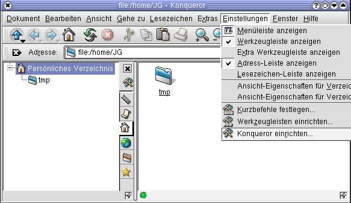Proxy einrichten beim Konqueror (Hauptmenü)
Aus dem sich öffnenden Menü wählen Sie nun
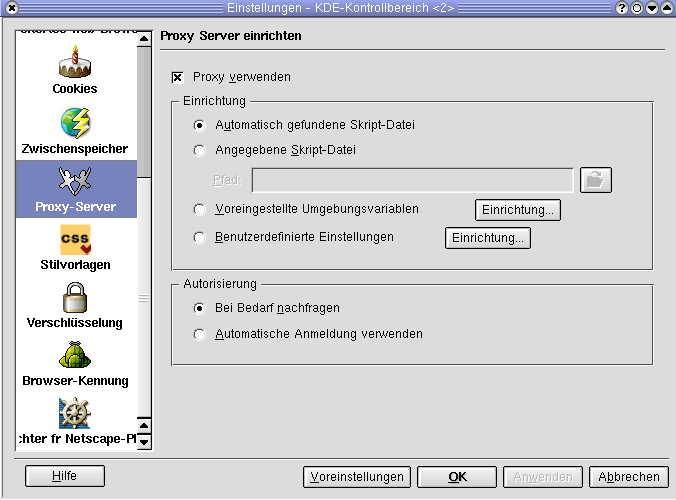den Punkt Proxies. Nun öffnet sich ein weiteres Fenster,
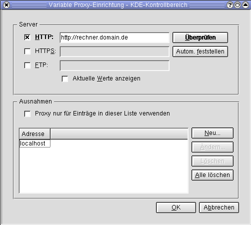in dem Sie individuelle Einstellungen vornehmen können.
Auch der Navigator der Firma en Netscape ermöglicht den Zugriff über einen Proxy. Die entsprechenden Einstellungen werden im Menü Bearbeiten unter Einstellungen vorgenommen. In dem sich dann öffnenden Fenster findet man in der Kategorie Erweitert den Eintrag für die Konfiguration des Proxys. Zu detaillierteren Einstellungen gelangt man über die Schaltfläche Anschauen. Hier kann man zum Beispiel die Rechner angeben, die ohne Proxy erreicht werden können.
Dienste, die im Internet angeboten werden
Praktisch alles, was auf Computern machbar ist, kann auch im Internet gemacht werden. Allerdings ist nicht alles sinnvoll, und so haben erst wenige Dienste eine weite Verbreitung gefunden.
Dazu gehört an erster Stelle der älteste Dienst, nämlich die elektronische Post, kurz E-Mail. Diese unterscheidet sich lediglich durch das Übertragungsmedium von der herkömmlichen physischen Post (snailmail). Über E-Mail ist der Zugang zu Mailinglisten möglich, einer Möglichkeit für Gruppendiskussionen im Internet. Den zweithäufigsten Dienst stellt die Übertragung von Daten in Form von Dateien dar. Dazu wird das File Transfer Protocol (FTP) verwendet. Für die Suche nach Dateien auf FTP-Servern sind die Dienste Gopher, Archie und Veronica entwickelt worden. Erst an dritter Stelle folgt die Übertragung bzw. Darstellung komplexer Dokumente mit Text, Bild, Ton usw. Dies ist das so genannte World Wide Web, das zwar nicht der am meisten genutzte, wohl aber der populärste Dienst ist und dem Internet zu seinem aktuellen Boom verholfen hat. Weitere Dienste sind der News-Dienst für Diskussionsforen, das Sound- und Video-Streaming, Telnet für das Anmelden und Arbeiten auf entfernten Rechner, Internet Relay Chat (IRC) für die Online-Kommunikation, diverse online Multiplayer-Spiele und viele andere. Mit dem Whois-Dienst kann man feststellen, wem eine bestimmte Internetadresse gehört oder ob eine gesuchte Adresse noch frei ist.
Das World Wide Web¶
Web Browser und das WWW
Das World Wide Web wird heute häufig mit dem Internet gleichgesetzt. Das zentrale Werkzeug für diesen Dienst ist der Browser. Browser werden von unterschiedlichen Firmen und Organisationen angeboten - z. B. de Microsoft, en Netscape, en Opera, en Mozilla, en Firefox, en WWW-Consortium - und stehen in verschiedenen Varianten zur Verfügung, z. B. als reiner Text-Browser, der keine Bilder darstellt und deshalb wesentlich schneller ist (ein Beispiel ist en Lynx). Der Browser öffnet das Internet gewissermaßen für die massenhafte Nutzung.
Neben der ansprechenden Darstellung der Dokumente wird mit dem Browser der Zugriff auf andere Rechner und die dort liegenden Dokumente über Links erheblich vereinfacht. In diesem Zusammenhang wurden verschiedene Möglichkeiten entwickelt, Dienste, Rechner und Elemente auf einzelnen Rechnern zu adressieren. Diese Dienste haben die Handhabung vernetzter Rechner erheblich erleichtert.
Eine solche Adressangabe wird als URL (Uniform Resource Locator) bezeichnet. Dabei werden sowohl der Dienst als auch der Rechner angegeben, mit dem man eine Verbindung herstellen möchte. Optional kann noch eine Portnummer angegeben werden, unter der ein Dienst angesprochen werden kann (zum Beispiel Port 80 für den WWW-Dienst mit http://rechnername:80). Die folgende Tabelle listet die möglichen URL- Dienste bzw. Verlinkungsmöglichkeiten auf. Verlinken von Aufruf in einer URL Webseiten http://rechnername/Seite verschlüsselte Webseiten https://rechnername/Seite EMail mailto:emailadresse Newsgruppe news:newsgruppe FTP ftp://rechnername/Datei Gopher gopher://rechnername/ Telnet telnet://rechnername/
Was ist ein Browser?
Ursprünglich war das Word Wide Web eine en Präsentationsplattform für wissenschaftliche Forschungsergebnisse. Dabei lag der Schwerpunkt zunächst auf den Texten, die auf jedem Rechner lesbar und recherchierbar sein sollten. Hierfür wurde eine Markierungsmöglichkeit entwickelt, die die wichtigen inhaltlichen Elemente der Dokumente mit bestimmten (Text-) Auszeichnungen versah. Wie diese Elemente auf den verschiedenen Computern dargestellt werden, sollte diesen überlassen bleiben, da die Umsetzung von den Fähigkeiten des jeweiligen Ausgabegeräts abhängig ist.
Später kamen Möglichkeiten zur Einbindung von Grafiken, Bildern und Formularen hinzu.
Als Darstellungsprogramm (Client) für diesen Dienst wurde der Browser entwickelt. Er soll das Material auf dem Computerbildschirm optimal darstellen. Deshalb muss sich der Browser um den Zeilenumbruch in dem darzustellenden Texten kümmern, der von der Anzahl der Zeichen abhängt, die in einer Zeile dargestellt werden können. Somit sind zwar die Browser naturgemäß rechnerabhängig, nicht aber die Dokumente. (Die einzige Ausnahme von dieser Regel ist, dass auf reinen Textbildschirmen, z.B. bei Großrechnern, keine Bilder dargestellt werden können.)
Hypertext Markup Language
Für die rechnerunabhängige Darstellung von Texten wurde die Hypertext Markup Language (HTML) entwickelt. Mit dieser Auszeichnungssprache werden die Überschriften, der Autor, die verschiedenen Absätze, Tabellenreihen, Tabellenfelder, Bildelemente usw. im Dokument gekennzeichnet. Anders ausgedrückt: Mit HTML wird der Inhalt ausgezeichnet, nicht die äußere Form.
Das Wort de “Hypertext” bedeutet in dieser Auszeichnungssprache, dass einzelne Elemente verknüpft sind und ein direkter Wechsel zu diesen Elementen möglich ist. Man nennt diese Elemente in einem HTML-Dokument Links oder Hyperlinks.
HTML ist eine Sprache mit sehr engen Grenzen, denn ihr Wortvorrat und die Benutzungsregeln (Syntax) sind stark begrenzt und können natürlich nur auf internationaler Ebene (bzw. durch Marktmacht) geändert werden. Mit Hilfe der HTML-Auszeichnung erstellt man einen leeren Dokumentrahmen, der erst durch das Hinzufügen von Daten zu einem Dokument wird.
Der Standard der Sprache en HTML wird vom en World Wide Web Konsortium (W3C) gepflegt und erweitert, wie auch andere standardisierte Sprachen, die sich mit der Zeit rund um das Netz entwickelt haben (z.B. en XML oder en Cascading Stylesheets).
Wer selbst eine Internet-Site realisieren möchte, dem sei als Informationsquelle zur Programmierung von Web-Seiten das de SelfHTML-Tutorial von Stefan Münz empfohlen. Als Anleitung für den Betrieb eines eigenen Webservers empfiehlt sich das Selflinux Kapitel zum Apache Webserver.
Welche Browser gibt es?
Eigentlich sind der Aufbau und die Elemente, die in einer Web-Seite verwendet werden, vom en WWW Konsortium (W3C) festgelegt. Die meisten Hersteller haben jedoch eigene Erweiterungen hinzugefügt. An erster Stelle sind hier de Microsoft und der Internet Explorer zu nennen. (Im Extremfall können HTML-Dokumentationen nicht mit anderen Browsern dargestellt werden!) Aber auch der Netscape-Browser hat bis zur Version 4.XX eigene nicht standardisierte Erweiterungen eingeführt. Neuere Netscape-Versionen (ab Version 6) sind nun standardkonform, da die Rendering-Engine von Netscape auf dem Mozilla Projekt basiert.
Alle anderen Browser versuchen den einen oder anderen (privaten) Standard zu unterstützen. Im Einzelnen stehen die folgenden Browser zur Verfügung:
en Opera versucht sich als dritte Kraft unter den Browsern zu etablieren. Dies ist ein kleiner und flinker Browser, der zudem kostenlos ist, im Gegensatz zu früheren Versionen seit 8.5 sogar ohne Werbebanner. en Mozilla, ursprünglich eine Weiterentwicklung aus dem Quellcode des Netscape-Browsers. en Firefox, ein schlanger Ableger des Mozilla-Browsers, der mit vielen en XUL-Anwendungen erweitert werden kann. en Lynx und en Links sind Browser, die nur Text darstellen. Das W3C stellt den Referenz-Browser en Amaya zur Verfügung. en Konqueror ist der Browser des en KDE Projekts en Galeon ist der Browser zur en GNOME Oberfläche
Erweiterungen der Browser
Neben den Erweiterungen einzelner Hersteller zum HTML-Sprachstandard in Form zusätzlicher Elemente, stellen Script-Sprachen eine wesentliche Browser-Erweiterung dar. Diese Scripte werden auf dem Rechner des Benutzers ausgeführt. Sie haben also prinzipiell Zugriff auf den Rechner des Internetbenutzers und können Informationen gewinnen und weiterleiten.
PlugIns sind hingegen Softwareprogramme, die den Browser um die Fähigkeit erweitern, bestimmte Datenformate darzustellen. Wie der Name suggeriert, werden PlugIns über eine vordefinierte Schnittstelle des Browsers eingeklinkt.
Script-Sprachen
HTML Seiten sind eigentlich statisch und zur Laufzeit unveränderbar. Scriptsprachen erweitern die Möglichkeiten von Webseiten um interaktive Inhalte. Script-Sprachen erfüllen verschiedene Aufgaben: Sie sorgen dafür, dass eine Seite abhängig von den Einstellungen des Anwenders optimal dargestellt wird. Es können aber auch Rückmeldungen an den Server generiert werden, z. B. um den Browser des Anwenders zu steuern. Außerdem kann man mit diesen Sprachen den Inhalt von Formularen auf Plausibilität hin überprüfen, bevor diese an den Server übertragen werden.
Die beiden wichtigsten Sprachen die in Browsern implementiert sind:
JavaScript Java
Obwohl beide Script-Sprachen den Namensbestandteil Java führen, haben sie nichts gemeinsam, außer dass beide vom Browser ausgeführt werden, Auch wenn beide den Namensbestandteil Java haben, haben sie nichts gemeinsam, außer dass sie vom Browser ausgeführt werden.
en Java ist eine von der Firma en SUN entwickelte plattformunabhängige Programmiersprache. Bei der Entwicklung wurde großen Wert darauf gelegt, dass Java in einer geschützten Umgebung läuft und, wenn möglich, keinen Zugriff auf den Gastrechner hat, insbesondere keinen Schreibzugriff. Dieser als Sandbox bezeichnete, geschützte Raum stellt eine wichtige Sicherheitsfunktion dar.
PlugIns
PlugIns stellen Erweiterungen für neu entwickelte Datenformate dar. Damit können z. B. animierte Grafiken oder kontinuierliche Video- oder Soundstreams dargestellt werden. Hier einige Beispiele häufig verwendeter PlugIns:
Flash wird häufig für animierte Grafiken verwendet und stammt von der Firma en Macromedia.
Sound und Video (Real Audio) Für das kontinuierliche Abspielen so genannter Streams werden häufig en Real Audio PlugIns verwendet. Im Gegensatz zu anderen Grafiken und Sounds, die vor dem Abspielen vollständig auf den Rechner übertragen werden müssen, können Streams sofort, also direkt während der Übertragung, abgespielt werden. Alternativ lässt sich für das Streaming von Sound-Daten auch das MP3 Format einsetzen.
Word/Excel/PDF Viewer Mit entsprechenden Hilfsprogrammen für die Browser können diese Daten direkt im Browser-Fenster dargestellt werden. Sie müssen dazu nicht in HTML-Dokumente umgewandelt werden.
ActiveX-Controls und VBA-Makros (nur im Internet Explorer) Hierbei handelt es sich um Elemente von Microsofts Programmiersprache Visual Basic. Diese können dynamisch eingebunden werden und haben im Prinzip alle Möglichkeiten, die auch die zugrunde liegende Programmiersprache hat. Darüber hinaus ermöglichen sie den problemlosen Zugriff auf andere Programme des Office-Paketes. Im Rahmen der Viren- und E-Mail-Attacken der letzten Jahre haben diese Elemente eine (traurige) Berühmtheit erlangt.
Verschlüsselung
Die meisten Web Browser erlauben eine sichere Datenübertragung. Dabei werden die ausgetauschten Daten nicht mehr als Klartext, sondern in verschlüsselter Form übertragen.
Hierfür wird ein so genanntes Public-Key-Verfahren benutzt. Dabei hat jeder Rechner einen privaten und einen öffentlichen Schlüssel. Die öffentlichen Schlüssel werden zwischen Server und Browser ausgetauscht. Um zu gewährleisten, dass der Schlüssel des Servers tatsächlich von diesem Server stammt, muss er von einer anerkannten Zertifizierungsfirma signiert sein. Dann gilt die alte Regel, dass “meines Freundes Freund auch mein Freund ist”: Vertraut der Anwender der Zertifizierungsfirma, so vertraut er auch dem Server. Bei der aktuellen Übertragung werden die Daten dann mit einem Schlüssel verschlüsselt, der mit dem privaten und dem öffentlichen Schlüssel des anderen Rechners verschlüsselt wurde.
Die verschlüsselte Übertragung ist natürlich bei Geschäften über das Internet (E-Commerce) unumgänglich. Nur damit können die für das zu tätigende Geschäft notwendigen Daten, z. B. Adresse und Kontonummer, vor den Augen Dritter verborgen übertragen werden.
Cookies
Normalerweise ist die Beziehung zwischen Web Browser und Client (relativ) anonym. Dies bedeutet, dass sich jeder Anwender ausgeben kann, wofür er möchte. Beim normalen Surfen ist dagegen auch nichts einzuwenden.
Allerdings lassen sich auf diese Art keine Geschäftsbeziehungen aufbauen, bei denen der Empfänger nur genau das erhalten will, was er bestellt, und der Lieferant einen identifizierbaren Kunden braucht, an den er die Ware schickt und der diese auch bezahlt.
Um eine eindeutige Beziehung zwischen Web Server und Client zu gewährleisten, werden Cookies (engl. für “Plätzchen”) verwendet. Ein Cookie besteht aus einer Kennung sowie einer Verfallszeit, die der Server generiert und an den Browser sendet. Dieser wiederum speichert die Cookie-Daten und den Namen des sendenden Servers und überträgt den Inhalt des Cookies bei jedem erneuten Kontakt wieder an den Server. Nun kann der Server in einer Datenbank nachsehen, welche Daten er über diese Beziehung bereits gespeichert hat und sich auf diese Daten beziehen.
Leider werden Cookies nicht nur im Rahmen von E-Commerce eingesetzt. Es versuchen alle möglichen Server, den Anwendern einen solchen “Keks” unterzuschieben. Über diese Vorgänge sollte man sich als Internetnutzer im Klaren sein, denn wenn jemand gezielt und langfristig Daten über einen (zwar noch anonymen) Surfer sammelt, kann er damit doch einiges über dessen Gewohnheiten erfahren.
Sinnvoller Schutzmechanismus gegen Cookies
TIPP: Möchten Sie die Annahme von Cookies generell verweigern, ohne dies in jedem Einzelfall im Browser bestätigen zu müssen, aktivieren Sie den Schreibschutz für die entsprechende Datei (z.B. ~/.netscape/cookies). Damit entfernen Sie alle Schreibrechte und können nun in Ihrem Browser einstellen, dass alle Cookies angenommen werden dürfen. Der Browser nimmt die Cookies dann an, kann sie aber durch den Schreibschutz nicht in die entsprechende Datei schreiben.
Suchen und Finden
Informationsbeschaffung im Internet
Das Internet bietet auch Zugang zu Informationen, deren Beschaffung sonst sehr teuer, umständlich oder sogar unmöglich ist. Praktisch zu allen Themen stehen im Internet Informationen kostenlos zur Verfügung.
Hier einige Beispiele:
Patentrecherchen in Deutschland, ganz Europa oder weltweit Diskussionsforen zu allen denkbaren Themen Handelsregisterauszüge, andere Firmeninformationen, Konkurrenzanalysen deutsche Gesetze, Gerichtsurteile und Grundsatzentscheidungen Telefonnummernsuche, z.B. nach Name oder Branche Wörterbücher, Lexika Fahrplanauskunft inklusive Umsteigen, Fahrtdauer, Preis und Reservierung aktuelles Fernsehprogramm Musikinformationen von Abba bis Zappa einschließlich Video oder Hörprobe de Diskussionsgruppen zu fast allen vorstellbaren Themen (z.B. “Sammler von Blechspielzeug”, “Direct Marketing”, “Tariferhöhung Telekom”, “Body Painting” u. v. a.) alles, was mit Computern zu tun hat Forschungsergebnisse aus praktisch allen Wissenschaftsgebieten
Diese Informationen liegen natürlich nicht “auf der Straße”, sondern man muss nach ihnen suchen. Dafür gibt es verschiedene Möglichkeiten.
Man kennt eine Internetadresse (oder liest sie z. B. in einer Zeitung/Zeitschrift) zu einem bestimmten Thema und kommt über Links auf dieser Seite an die gewünschten Informationen. Man kennt eine Firma/Hochschule/Institution, die das Thema bearbeitet. Unter der Internetadresse dieser Organisation findet man einen Link zu den gesuchten Informationen. (Mittlerweile bieten viele dieser Web-Seiten Suchfunktionen.) Man befragt einen Auskunftsdienst im Internet.
Man unterscheidet zwei Arten von Auskunftsdiensten:
Kataloge, die redaktionell bearbeitete Informationen anbieten Suchmaschinen, die die Informationen unbewertet (und oft auch unstrukturiert) weitergeben.
Kataloge
In den de Katalogen werden die Web-Seiten von Redakteuren geprüft, bewertet und katalogisiert. Der Vorteil dieses Verfahrens besteht darin, dass es eine nachvollziehbare Struktur ergibt. Allerdings ist der Aufwand dafür nicht unerheblich, sodass der Umfang dieser Kataloge beschränkt ist.
Bekannte Kataloge sind u. a.: de www.dmoz.de, en www.dmoz.org de www.yahoo.de, en www.yahoo.com de www.web.de de www.lycos.de, en www.lycos.com
Suchmaschinen
Unter de Suchmaschinen versteht man Programme (Crawler), die in regelmäßigen Abständen (etwa alle 2 Monate) ihnen bekannte Web-Seiten und darauf gefundene Links durchsuchen und die auf diese Art ermittelten Informationen in Datenbanken für öffentliche Recherchen zur Verfügung stellen.
Man bezeichnet auch die Web-Seiten, auf denen diese Programm bereitgestellt werden, sowie die Organisationen, die diese Seiten betreiben, als Suchmaschinen.
Naturgemäß kann es keine Suchmaschine geben, die alle Seiten des Internets enthält, schon allein deshalb, weil die Erfassung aller Seiten mehrere Jahre in Anspruch nähme und wegen der ständigen Veränderungen trotzdem nie abgeschlossen werden könnte. Man sollte also durchaus verschiedene Suchmaschinen zu einem Thema befragen, denn jedes dieser Suchprogramme kennt andere Seiten und wertet deren Inhalt mit anderen Methoden aus.
Stellt man einer Suchmaschine mittels Web-Formular eine Frage, so ist dies letztlich eine Datenbankabfrage: Kennt diese Datenbank Seiten, die das gesuchte Stichwort enthalten? Alle Datenbanken, auch die der Suchmaschinen, erlauben auch komplexere Abfragen. Die Regeln zur Formulierung solcher Anfragen werden in der Regel auf den Hilfeseiten der Suchmaschinen erklärt.
Bekannte Suchmaschinen sind u. a.: de www.google.de, en www.google.com en www.hotbot.com de www.excite.de, en www.excite.com de www.fireball.de de www.altavista.de, en www.altavista.com
Diese Suchmaschinen sind thematisch nur grob oder überhaupt nicht sortiert und haben den Nachteil, dass sie nicht absolut aktuell sein können. Deshalb gibt es spezielle Kataloge und Suchmaschinen, die bestimmte Web-Seiten häufiger indizieren oder speziellen Themen gewidmet sind.
Metasuchmaschinen
Neben den oben beschriebenen Suchmaschinen gibt es noch die de Metasuchmaschinen. Dabei handelt es sich um Suchmaschinen, die Suchmaschinen abfragen, also Suchanfragen gleichzeitig an mehrere andere Suchmaschinen weiterleiten. Meistens werden die Ergebnisse bereinigt, also von doppelten Fundstellen befreit.
Einige Metasuchmaschinen: de www.metacrawler.de, en www.metacrawler.com de www.metager.de en www.metaspinner.com en www.vivisimo.com en www.suchen.com
Soll ihre Firmen- oder private Webseite von Suchmaschinen erfasst werden, so müssen Sie die Internetadresse der Webseite bei der/den Suchmaschinen anmelden. Dies geschieht in einem WEB-Formular auf eine weiteren Seite der Suchmaschine.
Website bei Suchmaschinen anmelden
Soll Ihre Firmen- oder private Web-Seite von Suchmaschinen erfasst werden, so müssen Sie die Internet-Adresse der Web-Seite bei den gewünschten Suchmaschinen anmelden. Dies geschieht in der Regel über ein Web-Formular auf einer gesonderten Seite der Suchmaschinen-Website. Eine solche Anmeldung ist für jede einzelne Suchmaschine erforderlich.
Mehr detaillierte Informationen zum Thema Suchmaschinen finden Sie auf der Website de www.suchfibel.de.
Sicherheit im Internet
Gefahren des Internets
Das Internet ist kein reiner Segen, sondern hat auch seine Schattenseiten. Hierzu gehört zum Beispiel die unermessliche Informationsvielfalt (“Information Overkill”), in der man sich nicht immer leicht zurechtfindet. Ein weiteres Problem besteht darin, dass der Wahrheitsgehalt der angebotenen Informationen häufig nicht erkennbar oder überprüfbar ist.
Im Zusammenhang mit der Informationsvielfalt besteht auch die Gefahr, dass der Anwender sein eigentliches Suchziel aus den Augen verliert, während er sich von Link zu Link hangelt. Dieses Phänomen wird häufig mit “verloren im Internet” (lost in cyberspace) beschrieben.
Die de Internet-Sucht ist mittlerweile eine anerkannte de Krankheit. Dabei verlieren die Süchtigen ihr Geld an die Telefongesellschaften, weil sie ihre gesamte Freizeit mit Chatten, Spielen oder Surfen im Internet verbringen.
Auf andere Art gefährlich sind die Möglichkeiten, das Internet dafür zu missbrauchen, die Gewohnheiten der Anwender auszuspionieren. Dafür werden Cookies (vgl. oben) zwischen Web Server und Browser ausgetauscht. Selbst der Industriespionage dient das Internet bereits als Hilfsmittel.
Aus dem Internet stammen derzeit die meisten Computerviren. Traurige Berühmtheit haben die Viren, Trojanischen Pferde, de Hoaxes usw. erlangt, die per E-Mail über das Internet verbreitet werden.
Viren, auch Makroviren, sind unter Linux zurzeit noch kein de Problem. Allerdings wurden bereits Viren entwickelt, die auch unter Linux funktionieren. Da diese jedoch die Grenzen der Benutzerrechte in der Regel nicht überspringen können, sollte man zum Surfen im Internet nie als Superuser mit dem Benutzernamen root angemeldet sein. Das Bundesamt für Sicherheit in der Informationstechnik bietet online eine de Broschüre zum Thema Viren.
In letzter Zeit haben sich die so genannten 0190-Dialer unter Windows als Gefahrenquelle erwiesen. Dabei werden Programme zur Installation angeboten, die einen schnelleren und besseren Zugang zu einem bestimmten Web-Angebot versprechen. Genehmigt der Anwender das Herunterladen dieser Software, so wird auf seinem Rechner ein Programm gespeichert und ausgeführt, welches das Einwahlprogramm von Windows so umkonfiguriert, dass der Internet-Zugang über eine 0190-Nummer erfolgt. Auf die meist sehr hohen Gebühren für die Nutzung dieser Nummern wird in der Regel nicht hingewiesen, und die Anwender merken häufig erst zu spät, dass ihnen Online-Gebühren in Höhe von mehreren Tausend Euro entstehen. Erfolgt der Internet-Zugang nicht über eine Modem-/ISDN-Verbindung, sondern über eine Ethernet-, DSL- oder Linux-Anbindung, so hat dieser Wahlmechanismus normalerweise keine Chance.
Die deutsche de Bundesregierung plante 2003 wegen der anhaltenden Probleme mit 0190-Dialern die entstehenden Kosten bei 0190-Nummern auf einen bestimmten Betrag pro Minute, sowie die Dauer einer solchen Verbindung auf maximal eine Stunde zu begrenzen. Seit dem 01.01.2006 sind 0190-Nummern für Mehrwertdienste durch 0900-Nummern ersetzt worden. Sie bieten eine kostenfreie Ansage, wie viel die angewählte Verbindung kostet, sowie eine Kostenbegrenzung: Eine 0900-Verbindung darf maximal zwei Euro pro Minute oder 30 Euro pro Verbindung kosten.
Wie kann man sich schützen?
Generell
Lokale Script-Sprachen deaktivieren. Schutz vor Cookies einrichten ( siehe Anleitung). Möglichst mit einem Rechner surfen, der nicht in ein Netzwerk eingebunden ist. Zum Surfen nach Möglichkeit keine Windows-Plattform verwenden, da praktisch alle Viren nur unter Windows bzw. Microsoft Office funktionieren. Regelmäßig manuell oder automatisch einen Virenscan durchführen. Möglichst über einen Proxyserver auf das Internet zugreifen. Einsatz einer Firewall
E-Mail-Verkehr
Mails von unbekannten Absendern nicht öffnen, ansehen oder lesen. Mails mit dubiosem, nichts sagendem Betreff löschen. Mails, in denen Sie nicht direkt als Adressat genannt sind, löschen. Mails nach Möglichkeit verschlüsseln, z.B. mittels GnuPG. Ein- und ausgehende Mails auf Viren prüfen.
Download aus dem Internet
Lesen Sie alle Meldungen, bevor Sie sie bestätigen. Damit schützen Sie sich besonders vor Dialern. Lassen Sie nicht zu, dass ein Programm eine Installation eigenständig ausführt, sondern geben Sie immer selbst an, was und wo gespeichert werden soll (“als Datei speichern”). Probieren Sie dies eventuell auf einem separaten Rechner aus.
Anmelden auf Rechnern
Verwenden Sie bei einer Anmeldung über das Internet nicht telnet, sondern unbedingt ein verschlüsselndes Programm wie z.B. ssh oder en putty.
Firewall
Die Einrichtung einer Firewall ist in einer Firmenumgebung unerlässlich. Aber auch private Surfer sollten sich mit dieser Technik vertraut machen.
Eine Firewall (“Brandschutzmauer”) kann den Datenstrom mit Hilfe eines Regelwerkes kontrollieren. So kann der Anwender z. B. festlegen, dass Daten über bestimmte Ports nicht angenommen oder versendet werden dürfen, Pakete mit Protokollfehlern verworfen werden müssen oder keine Verbindung von außen nach innen hergestellt werden darf. Die Einrichtung und Pflege eines solchen Programms ist nicht unbedingt einfach, insbesondere wegen der durch die Firewall erzwungenen Einschränkungen. So sind unter Umständen bestimmte Web-Seiten nicht mehr erreichbar, wenn der Web-Server auf einem anderen Port läuft.
Hier sei noch einmal darauf hingewiesen, dass Daten im Internet normalerweise im Klartext übertragen werden. Insbesondere bei E-Mails sollte man diese Tatsache nicht vergessen. Da es keine Person/Institution gibt, die für alle Vorgänge im Internet verantwortlich ist, und die Daten in der Regel über Rechner in verschiedenen Ländern laufen, ist ein umfassender Datenschutz weder machbar noch durchzusetzen. Daher ist die Verschlüsselung wichtiger Informationen unverzichtbar. Für die Verschlüsselung stehen verschiedene Programme zur Verfügung, z. B. en Pretty Good Privacy (pgp bzw das freie GnuPG) oder auch das vom de Bundesamt für Sicherheit in der Informationstechnik bereitgestellte Programmpaket.
Vorsicht ist geboten. Sie sind nun gewarnt!
Für weitere Informationen zum Thema Sicherheit von Computern empfiehlt sich das Kapitel Grundlagen Sicherheit im SelfLinux Tutorial.
Autor
Rolf Schmidt rolf.frogs@t-online.de
Formatierung
Alexander Fischer Selflinux@tbanus.org
File Transfer Protocol¶
Server¶
Very Secure FTP Daemon¶
Beschreibung
Dieser Artikel soll eine grundlegende Einführung zum Very Secure FTP Daemon darstellen. Beginnen möchte ich mit einer allgemeinen Beschreibung von FTP und vsftpd. Danach sehen wir uns die Installation, Konfiguration und Startmöglichkeiten des vsftp-Daemons genauer an. Abschließend wird noch ein kurzer Funktionstest durchgeführt werden.
Einleitung
Das File Transfer Protocol (FTP) dient zur plattformunabhängigen Dateiübertragung im Internet und basiert auf einer Server-Client-Architektur. en RFC 959 schreibt vor, dass FTP in zwei unterschiedliche Kanäle getrennt wird, wobei ein Kanal für die Daten (TCP-Port 20) und der andere zur Steuerung (TCP-Port 21) dient. Über den Steuerkanal tauschen die beiden Seiten (Server und Client) Kommandos aus, welche dann den Datentransfer einleiten. Eine FTP-Verbindung verläuft in vier Schritten:
Benutzerauthentifizierung Aufbau des Steuerungskanals Aufbau des Datenkanals Beenden der Verbindung
FTP benutzt als Transportprotokoll das verbindungsorientierte TCP (Transmission Control Protocol), welches sicherstellt, dass die Daten auch wirklich beim Empfänger ankommen. Somit braucht sich FTP nicht um einen möglichen Paketverlust bzw. eine Fehlerkontrolle bei der Dateiübertragung kümmern. Grob formuliert sorgt TCP also dafür, dass jedes einzelne Datenpaket nur einmal ankommt - fehlerfrei bei der Übertragung und in der richtigen Reihenfolge.
Bei der Dateiübertragung unterscheidet man drei Transferarten, wobei der Abschluß des Transfers im Stream-Modus durch ein End-of-File (EOF), bei den beiden anderen Übertragungsarten durch ein End-of-Record (EOR) gekennzeichnet wird.
Stream Block Compressed
Des Weiteren gibt es zwei verschiedene Transfermodi:
ASCII Binary
Der ASCII-Modus dient zur Übertragung von Textdateien, wohingegen der Binary-Modus beispielsweise zum Transfer von Programmen oder dergleichen dient. Der Benutzer muß den Transfermodus für gewöhnlich nicht explizit auswählen, da mittlerweile alle FTP-Clients die zu übertragende Datei erkennen und automatisch umschalten.
Da die Übermittlung der Benutzerkennung und des Passwortes zur Authentifizierung nicht verschlüsselt wird, ist es sehr wichtig, ausdrücklich auf dieses potentielle Sicherheitsrisiko hinzuweisen. Aus diesem Grund machte man sich Gedanken über die Sicherheit von FTP. Im Oktober 1997 wurde schließlich das en RFC 2228 veröffentlicht, welches sicherheitsspezifische Erweiterungen für das File Transfer Protocol definiert.
vsftpd
vsftpd stellt einen FTP-Server für unixoide Betriebssysteme dar und läuft somit auf Plattformen wie Linux, *BSD, Solaris, HP-UX und IRIX. Dabei unterstützt vsftpd viele Merkmale, die man bei anderen FTP-Servern unter Umständen schmerzlich vermisst. Einige davon sind beispielsweise:
sehr hohe Sicherheitsansprüche Bandbreitenbegrenzung gute Skalierbarkeit Möglichkeit, virtuelle User zu erstellen IPnG-Unterstützung überdurchschnittliche Performance Möglichkeit, virtuelle IPs zu vergeben hohe Geschwindigkeit
Der Name vsftpd steht für Very Secure FTP Daemon, welcher auch gleich eines der Hauptanliegen des Entwicklers Chris Evans wiederspiegelt. Bei der Entwicklung und dem Design des FTP-Servers wurde von Anfang an sehr viel Wert auf Sicherheit gelegt.
Als Beispiel hierfür kann die Tatsache genannt werden, dass vsftpd im chroot-Modus betrieben wird. chroot bedeutet, dass einem Programm (in diesem Fall vsftpd) ein neues Wurzelverzeichnis (/) zugewiesen wird und es somit nicht mehr auf Programme oder Dateien außerhalb dieses Verzeichnisses zugreifen darf - es wird sozusagen in einem Gefängnis eingesperrt. Sollte nun ein potentieller Angreifer den FTP-Server kompromittieren, ist er vom übrigen System abgeschottet und kann dadurch keinen größeren Schaden anrichten. Wer sich jedoch besonders für die Implementierung und das Design der diversen Sicherheitsmechanismen von vsftpd interessiert, dem sei en http://vsftpd.beasts.org/DESIGN empfohlen.
Durch diese umfangreichen Merkmale - wobei der Anspruch an die Sicherheit des FTP-Dienstes höchste Priorität genießen sollte - hebt sich vsftpd deutlich von anderen FTP-Servern ab. Als Negativbeispiel sei hier der WU-FTPD genannt, welcher in den vergangenen Jahren ständig durch diverse Sicherheitslücken auffiel.
Installation
Die Installation des vsftp-Daemons verläuft recht einfach, da jede größere Distribution fertige RPM-Pakete zu vsftpd bereitstellt, welche in den meisten Fällen sogar schon installiert sind. Alternativ besorgt man sich von en http://www.vsftpd.beasts.org/ die Quellen und übersetzt das Programm manuell.
Hat man sich die Quellen beschafft, entpackt man den Tarball, wechselt in das soeben enstandene Verzeichnis und führt make aus. Nachfolgend werden die dazu benötigten Befehle demonstriert: root@linux # tar xzvf vsftpd-x.x.x.tar.gz root@linux # cd vsftpd-x.x.x root@linux # make
Zuvor sollte man jedoch überprüfen, ob der Benutzer nobody und das Verzeichnis /usr/share/empty existiert und gegebenenfalls neu anlegen. Plant man Zugriffsmöglichkeiten für anonyme Benutzer, muss der User ftp mitsamt Homeverzeichnis /var/ftp angelegt werden. Letzteres erreicht man durch die Eingabe der folgenden beiden Befehle: root@linux # mkdir /var/ftp root@linux # useradd -d /var/ftp ftp
Aus Sicherheitsgründen sollte das Verzeichnis /var/ftp dem Benutzer ftp weder gehören, noch sollte dieser darin Schreibrechte besitzen. Wenn der Benutzer bereits existiert, genügen die nächsten beiden Kommandos, um den Besitzer zu ändern und anderen Benutzern die Schreibrechte zu entziehen: root@linux # chown root.root /var/ftp root@linux # chmod og-w /var/ftp
Sofern alle Voraussetzungen erfüllt sind, kann man den vsftp-Daemon installieren: root@linux # make install
Jetzt werden normalerweise die Manpages und das Programm an den richtigen Ort im Dateisystem kopiert. Wenn es wider Erwarten zu Komplikationen kommt, hilft jedoch auch ein manuelles Kopieren der Dateien. root@linux # cp vsftpd /usr/sbin/vsftpd root@linux # cp vsftpd.conf.5 /usr/share/man/man5 root@linux # cp vsftpd.8 /usr/share/man/man8
Da die Beispiel-Konfigurationsdatei nicht mit kopiert wird, diese aber den Einstieg erleichtert, muss man auch hier noch einmal Hand anlegen: root@linux # cp vsftpd.conf /etc
Konfiguration
Die Konfigurationsdatei zu vsftpd lässt sich unter /etc/vsftpd.conf finden. Wie bei den meisten Konfigurationsdateien werden auch bei vsftpd Kommentare mit einer einleitenden Raute gekennzeichnet.
# Kommentarzeile Eine beispielhafte Konfiguration könnte so aussehen:
# Anonymen FTP-Zugriff erlauben? YES/NO anonymous_enable=NO
# Anonymen Upload erlauben? YES/NO anon_upload_enable=NO
# Dürfen anonyme User Verzeichnisse erstellen? YES/NO anon_mkdir_write_enable=NO
# Dürfen anonyme User andere Schreiboperationen wie Umbenennen oder Löschen durchführen? YES/NO anon_other_write_enable=NO
# Anmeldung von lokalen Usern erlauben? YES/NO local_enable=YES
# Sollen lokale Benutzer in ihrem Homeverzeichnis eingesperrt werden? YES/NO chroot_local_user=YES
# Die maximal erlaubte Datentransferrate in Bytes/Sekunde für lokal angemeldete User. Vorgabe = 0 (unbegrenzt) local_max_rate=7200
# Schreibrechte prinzipiell erlauben? YES/NO write_enable=YES
# Nachrichten bei Verzeichniswechsel anzeigen? YES/NO dirmessage_enable=YES
# Bannermeldung, welche der sich anmeldende User sieht. ftpd_banner=”Welcome to neo5k’s FTP service.”
# Protokollierung aktivieren? YES/NO xferlog_enable=YES
# Sämtliche FTP-Aktivitäten protokollieren? YES/NO # Achtung! Durch diesen Eintrag können sehr große Datenmengen entstehen. log_ftp_protocol=NO
# Versichern, daß Verbindungen nur an Port 20 (ftp-data) zustande kommen. YES/NO connect_from_port_20=YES
# Unterbrechung (time out) bei Leerlaufzeiten (idle sessions) idle_session_timeout=600
# Zeit, nach der eine Datenverbindung unterbrochen wird. data_connection_timeout=120
# Zugriff wird über Pluggable Authentication Modules (PAM) geregelt. pam_service_name=vsftpd
# Standalone-Betrieb? YES/NO - abhängig vom Betriebsmodus (inetd, xinetd, Standalone) # Des Autors FTP-Dienst wird per xinetd gestartet, deswegen lautet der Wert hier NO. listen=NO
Starten des FTP-Dienstes
vsftpd läßt sich auf drei verschiedene Arten betreiben. Zum einen über inetd oder xinetd, zum anderen im Standalone-Betrieb.
inetd
Soll der FTP-Dienst via inetd betrieben werden, öffnet man die Konfigurationsdatei /etc/inetd.conf mit einem Editor: root@linux # vi /etc/inetd.conf
Dann sucht man sich die entsprechenden Zeilen zu den FTP-Diensten und entfernt nur noch das Kommentarzeichen vor dem vsftpd-Eintrag. Sollte kein entsprechender Eintrag vorhanden sein, kann man ihn auch manuell erstellen. Dabei ist zu beachten, dass nach den durchgeführten Änderungen der inetd zwingend neu gestartet werden muss. Der Eintrag sollte dann so aussehen:
# ftp stream tcp nowait root /usr/sbin/tcpd in.ftpd ftp stream tcp nowait root /usr/sbin/tcpd vsftpd
xinetd
Empfehlenswert ist es jedoch, den vsftp-Daemon per xinetd starten zu lassen, da dieser zahlreiche Erweiterungen gegenüber inetd besitzt. Einige davon sind bspw. Protokollierung von Anfragen, Zugriffssteuerung, Bindung des Dienstes an bestimmte Netzwerkschnittstellen, et cetera. Eine sehr gute Einführung zum Thema xinetd findet man in diesem Kapitel. Auch hier ist nach erfolgter Modifikation ein Neustart des xinetd nötig. Die Konfiguration des xinetd könnte folgendermassen aussehen:
# vsftp daemon. service ftp {
disable = no socket_type = stream wait = no user = root server = /usr/sbin/vsftpd per_source = 5 instances = 200 no_access = 192.168.1.3 banner_fail = /etc/vsftpd.busy_banner log_on_success += PID HOST DURATION log_on_failure += HOST nice = 10
}
Standalone-Betrieb
Zusätzlich besteht die Möglichkeit, den vsftp-Daemon im Standalone-Modus zu betreiben. Dazu öffnet man wieder die Datei /etc/vsftpd.conf und führt die folgende Änderung durch:
# Soll der vsftp-Daemon im Standalone-Betrieb laufen? YES/NO listen=YES
Nach erfolgtem Eintrag kann man den Daemon dann durch die nachfolgend genannte Eingabe starten. root@linux # /usr/sbin/vsftpd &
Sofern die Einstiegspfade richtig gesetzt sind, genügt zum Starten auch ein schlichtes root@linux # vsftpd &
Durch die nächste Eingabe kann geprüft werden, ob die Einstiegspfade richtig gesetzt wurden: root@linux # echo $PATH /usr/sbin:/bin:/usr/bin:/sbin:/usr/X11R6/bin
Natürlich sollte man beim Betrieb im Standalone-Modus darauf achten, dass der vsftp-Daemon weder per inetd noch xinetd gestartet wird.
Funktionstest
Hat man die Installation und Konfiguration erfolgreich hinter sich gelassen, kann man das erste Mal auf seinen FTP-Server zugreifen. root@linux # ftp phobos Connected to phobos 220 “Welcome to neo5k’s FTP service.” Name (phobos:neo5k): testuser 331 Please specify the password. Password: 230 Login successful Remote system type is UNIX. Using binary mode to transfer files. ftp> ls -l 229 Entering Extended Passive Mode 150 Here comes the directory listing drwxr-xr-x 11 500 100 400 May 07 16:22 docs drwxr-xr-x 9 500 100 464 Feb 01 23:05 hlds drwxr-xr-x 39 500 100 4168 May 10 09:15 projects 226 Directory send OK.
Fazit
Wie man sehen konnte, ist der vsftp-Daemon weder schwer aufzusetzen noch schwierig zu konfigurieren. Trotzdem bietet er zahlreiche Funktionsmerkmale und ein hohes Maß an Sicherheit.
Es versteht sich von selbst, dass diese Einführung nur einen kleinen Ausschnitt aus der Welt von vsftpd bieten kann, da der FTP-Server äußerst umfangreiche Konfigurationsmöglichkeiten zur Verfügung stellt. Wer sich nach diesem Artikel eingehender mit vsftpd beschäftigen möchte, sollte die Projektseite unter en http://www.vsftpd.beasts.org/ besuchen und sich dort die umfangreiche Dokumentation zu Gemüte führen.
Autoren
Mario M. Knopf netzmeister@neo5k.org Florian Frank florian.frank@pingos.org
Formatierung
Florian Frank florian.frank@pingos.org
E-Mail¶
Server¶
Linux als Mailserver¶
Beschreibung
Im INTERNET wie auch im INTRANET ist die elektronische Post inzwischen einer der wichtigsten Dienste geworden.
Hier werden die grundsätzlichen Verfahren des Mailaustausches sowie zwei typische Unix Mailer Server vorgestellt
Grundlagen
Im INTERNET wie auch im INTRANET ist die elektronische Post inzwischen einer der wichtigsten Dienste geworden. Mit der zunehmenden Vernetzung von Arbeitsgruppen in den Unternehmen entstanden neben den INTERNET-Standards aber gleichzeitig diverse proprietäre Maildienste (MS-Mail, cc:Mail oder Notes), welche erst in der letzten Zeit wieder zusammenwachsen und sich hin zu den Standards des INTERNET bewegen. So kann mittlerweile jeder moderne Mailclient mit INTERNET-Nachrichten umgehen und die Mailserver der großen Softwareanbieter wie MS-Exchange oder Lotus Notes/Domino bieten die Möglichkeit, Daten auch zwischen INTRANET und INTERNET auszutauschen. Stellen wir also zuerst einmal fest, welche Standards im Zusammenhang mit elektronischer Post zu sehen sind:
SMTP (Simple Message Transfer Protocol) Es ist das Übertragungsprotokoll der Server untereinander und wird von den Clients zun Einliefern der Post benutzt. POP (Post Office Protocol; derzeit aktuell in der Version 3) Die Clients benutzen es, um ihre Post vom Server abzuholen. Entgegen dem SMTP besteht dabei die Möglichkeit, die Mail auch teilweise auf dem Server zu verwalten (allerdings nur in beschränktem Maße). IMAP (Internet Mail Access Protocol; derzeit aktuell in der Version 4) IMAP wird wie POP 3 von den Clients benutzt, um Mail vom Server abzuholen. Es bietet aber gegenüber POP wesentlich mehr Flexibilität bei der Verwaltung der Post, so z.B. die Möglichkeit, Eingangskörbe auf dem Server zu verwalten und Roaming Users, also Anwender, die von verschieden Orten aus auf den Server zugreifen wollen. X.400 Dieses Protokoll ist ein OSI-Standard und häufig im Behördenumfeld anzutreffen. Es ist, OSI üblich, sehr umfangreich und mächtig, aber es gibt kaum Anwendungen. Häufig werden POP/SMTP für den Zugriff durch die Clients benutzt und danach eine Umsetzung auf X.400 durch den Mailserver durchgeführt. X.500 Ebenfalls ein OSI-Protokoll. Es beschreibt den Aufbau eines Verzeichnisdienstes der u.a. auch Mailadressen verwalten kann. X.400 nutzt in einer reinen OSI-Umgebung X.500 als Adressbuch. LDAP (Lightweight Directory Access Protocol) Eine ``leichte’’ Variante des DAP (Directory Access Protocol), welches von X.500 für den Zugriff auf die Datenbasis benutzt wird. LDAP wird derzeit von den neueren Mailclients (Outlook, Netscape) unterstützt, um auf globale Verzeichnisdienste zuzugreifen (Netcenter, VeriSign, Bigfoot etc.)
Aufbau einer Mail-Umgebung
Das INTERNET stellt sich mit seiner Mail-Struktur vereinfacht folgendermaßen dar: In den Domains der bei der IANA registrierten Netze stehen die Mail Transfer Agents (MTA), welche die Nachrichten annehmen und untereinander verteilen. Dabei wird in der Regel der direkte Austausch von MTA zu MTA bevorzugt, d.h., bevor eine Nachricht von A nach B geleitet wird, erfolgt ein Namensauflösung des Zielsystems B. Danach stellt der MTA A die Nachricht direkt an den MTA B zu. Von dieser Verfahrenweise kann abgewichen werden, wenn die Konfiguration der MTAs dies festlegt, man spricht dann vom Mail-Routing. MTAs die nur als Zwischenstationen benutzt werden heißen Mail-Relay. Um dem Anwender die Nachricht zustellen zu können, muß sich dieser mit einem User Agent (UA) an den MTA wenden. Er kann dann die Nachricht auf sein Zielsystem übertragen oder aber auf dem Server belassen und dort in einem Postfach verwalten. Hier kommen POP und IMAP ins Spiel.
Mail im INTRANET
Für das INTRANET gilt im Wesentlichen dasselbe wie für das INTERNET. Bleibt es bei einem lokalen Netz, so agiert der Mailserver als MTA und ggf. sogar als UA probieren Sie es aus: Melden Sie sich an Ihrem Server an und starten Sie das Programm elm. Sie benutzen damit einen UA (elm) auf dem MTA). Wenn mehrere Standorte miteinander über ein WAN vernetzt sind, kommen häufig mehrere MTAs ins Spiel, welche die Nachrichten untereinander synchronisieren müssen. Die Art der darunterliegenden Netzverbindung ist dabei egal, Hauptsache, eine gleich wie geartete Datenübertragung ist möglich. Im INTERNET erfolgte dies am Anfang ausschließlich über das Protokoll/Verfahren UUCP (UNIX to UNIX copy), welches auf der Basis von Modem-Verbindungen die Nachrichten en Block austauschte. Heutzutage ist SMTP das Verfahren der Zeit, weshalb wir in diesem Kurs auf UUCP nicht weiter eingehen wollen. Was benötige ich, um aus LINUX einen Mailserver zu machen? Nun, ich benötige einen MTA, also eine Software die Nachrichten entgegennimmt, weiterleitet und an die UAs zustellt, ferner Dämonen, welche die Protokolle POP und/oder IMAP zur Verfügung stellen.
Der MTA
Wie UNIX-üblich existieren verschiedene MTAs, so dass wir den uns genehmen auswählen können. Zur Disposition stehen an erster Stelle die Pakete
Sendmail qmail
Sendmail
Das Paket sendmail ist eines der ältesten INTERNET-Programme und wohl auch das mit dem schlechtesten Ruf. Am Anfang war es aufgrund diverser Sicherheitslücken ein beliebtes Einfalltor für Hacker und Co., und bei den Administratoren ist es wegen seiner schwierigen Konfiguration gefürchtet. Dennoch hat es sich zum Standard für UNIX/LINUX-MTAs erhoben und verdient auf jeden Fall eine genauere Betrachtung. Mit den Jahren ist sendmail, was die Sicherheit anbelangt, wesentlich besser geworden. Da es als OpenSource zur Verfügung steht, hatten Gott und die Welt Zeit und Muße, den Quellcode auf Fehler abzuklopfen und diese auszumerzen. Sendmail ist daher bei anständiger Konfiguration nicht unsicherer als andere Dienste auf einem UNIX-Server. Was die Konfiguration angeht, so haben sich die Programmierer die Kritik zu Herzen genommen und ein Tool entwickelt, welches die Arbeit erleichtert. Dieses Tool namens IDA ist bei SuSE im sendmail-Paket bereits enthalten und wird intern von YaST aufgerufen.
Qmail
Das Paket qmail entstand aus dem Frust heraus, einen sendmail-MTA administrieren zu müssen. Anfangs suchte der Autor einen einfachen Ersatz, doch mittlerweile ist qmail zu einem vollständigen MTA gewachsen, der in seiner Komplexität sendmail nicht mehr nachsteht. Wir verzichten in diesem Kurs auf die nähere Beschreibung, legen dem Leser aber nahe, sich mit dieser Software als Alternative auseinanderzusetzen. Die aktuelle Version findet sich unter en www.qmail.org.
Installation von sendmail
In der SuSE-Distribution ist sendmail in der Serie n enthalten, es wird daher am einfachsten über YaST installiert:
Installation festlegen/starten -> Konfiguration ändern/erstellen -> Netzwerk-Support
Nach der Installation kann sendmail dann wieder über YaST mit seiner Konfigurationsdatei (sendmail.cf) versehen werden. Hierfür ruft man in YaST das Menü
Administration des Systems -> Netzwerk konfigurieren -> Sendmail konfigurieren
auf.
Wählen Sie Konfiguration mit Zugriff über einen Nameserver, um sendmail über eine ppp-Verbindung auf den Provider zugreifen zu lassen. Wenn der Server ausschließlich lokal betrieben wird ist die Auswahl beliebig, kann bei einem späteren INTERNET-Anschluß aber jederzeit geändert werden. Im Verzeichnis /etc wird jetzt die Konfigurationsdatei angelegt. Ferner schreibt die Installation in das Verzeichnis /sbin/init.d das Start-/Stopscript sendmail und legt in /etc/rc.d/rc2.d die symbolischen Verweise S20sendmail und K20sendmail an. Um sendmail jetzt zu starten geben Sie an der Kommandozeile den Befehl root@linux ~# sh /etc/rc.d/sendmail start
ein. Das Kommando ps sollte uns jetzt folgende Ausgabe liefern: root@linux ~# ps ax| grep sendmail
22432 ? S 0:00 sendmail: accepting connections on port 25
Wie man erkennen kann, benutzt sendmail jetzt den Port 25 (SMTP) für ein- und ausgehende Verbindungen. Um im laufenden Betrieb einen Neustart des Dienstes zu erreichen genügt ein sh /etc/rc.d/sendmail reload
Einträge in /etc/rc.config
Das Verhalten von sendmailkann UNIX-üblich über Kommandozeilenparameter beeinflußt werden. SuSE hat hierfür in das Start-/Stopscript Variable aufgenommen, welche in der Datei /etc/rc.config gesetzt werden. Diese sind:
-SENDMAIL_TYPE=”yes”
bestimmt, dass die Konfiguration von sendmail.cf über rc.config und YaST erfolgen soll. Bei ``no’’ müssen wir diese selber editieren.
-SENDMAIL_SMARTHOST=”“
Bei Verbindung über UUCP wird hier der sog. ``smarthost’’ (der Kommunikationspartner) eingetragen.
-SENDMAIL_LOCALHOST=”localhost”
Die hier aufgeführten Namen werden als Aliasnamen für den eigenen Rechner betrachtet. Es unterbleibt die DNS-Anfrage!
-SENDMAIL_RELAY=”“
Sendmail liefert keine Nachrichten lokal aus, sondern übergibt diese an das Relay. Damit kann ein Relay-Verbund aufgebaut werden.
-SENDMAIL_ARGS=”-bd -q30m -om”
Hier werden sendmail seine Startparameter übergeben. Die komplette Liste erhält man mit man sendmail, die hier aufgeführten Werte bedeuten: -bd: sendmail startet als Daemon und geht in den Hintergrund -q30m: die Nachrichten in der Warteschlange werden alle 30 Minuten abgearbeitet -om: die Option ``m’’ wird gesetzt (s. Installations- und Betriebshandbuch ;-))
SENDMAIL_EXPENSIVE=”yes”
Mit dieser Einstellung schreibt sendmail die Nachrichten nur in seine Messagequeue und stellt sie erst beim Aufruf sendmail -q zu. Dies wird benötigt, wenn man den Server mittels ISDN-Wählverbindung an das INTERNET gehängt hat und nicht will, dass jede ausgehende Mail eine Verbindung zum Provider aufbaut. Stattdessen ruft man sendmail -q per crontab z.B. in den Nachtstunden auf und holt bzw. sendet die Mail in einem Rutsch (Polling). Alternativ kann der Eintrag auch in das PPP-Startscript aufgenommen werden, so dass bei jedem Verbindungsaufbau auch ein Mailaustausch stattfindet.1.1
SENDMAIL_NOCANONIFY=”no”
Sendmail versucht nicht mehr, bei jeder Mail den vollen Namen der Mailadresse per DNS aufzulösen. Diese Einstellung ist ebenfalls bei ISDN-Dialup-Verbindungen wichtig um zu verhindern, dass auch lokale Adressen über den DNS des Providers aufgelöst werden. Alternativ kann auch ein lokaler DNS dies unterbinden (s. Aufbau eines DNS-Servers)
Ein kurzer Blick in sendmail.cf
Um zu verstehen, warum sendmail als ``Konfigurationsmonster’’ gilt, hier ein kleiner Ausschnitt aus der Datei sendmail.cf: sendmail.cf
Cwlocalhost # my official domain name
# ... define this only if sendmail cannot automatically determine your domain
#Dj$w.Foo.COM CP.
# “Smart” relay host (may be null) DS
# place to which unknown users should be forwarded
#Kuser user -m -a<>
#DLname_of_luser_relay
# operators that cannot be in local usernames (i.e., network indicators)
CO @ % !
# a class with just dot (for identifying canonical names)
C..
# a class with just a left bracket (for identifying domain literals)
C[[
# Mailer table (overriding domains)
Kmailertable hash -o /etc/mail/mailertable.db
# Domain table (adding domains)
#Kdomaintable dbm /etc/domaintable
# Generics table (mapping outgoing addresses)
Kgenerics hash -o /etc/mail/genericstable.db
mailertable
Die Datei mailertable legt fest, auf welchem Wege die Mail für bestimmte Zielsysteme zugestellt werden soll. Sie wird standardmäßig bei SuSE nicht angelegt, was zu Problemen führen kann, wenn man nicht das von SuSE gelieferte rpm-Paket installiert, sondern sendmail aus den Sourcen heraus selbst übersetzt. Am besten, man legt die Datei mit dem Befehl root@linux ~# touch /etc/mailertable
an und läßt sie leer. Wenn man sie jedoch einsetzten will hat sie folgenden Aufbau: /etc/mailertable
# /etc/mailertable # Legt fest, wie ein Host zu erreichen ist
# Zuerst die Zustellung in der eigenen Domain über smtp. # %1 wird dabei durch die eMail-Adresse des Empfängers ersetzt # Hinweis: Der Domainname muß aufgelöst werden können!
.my.domain smtp:%1
my.domain smtp:%1
# Der Rechner somebody ist über relay.my.domain erreichbar somebody smtp:[relay.my.domain]
- # Für den Rechner number soll kein DNS genutzt werden
- number smtp:[192.168.1.56]
Um diese mailertable dem Programm sendmail bekannt zu machen muß sie mit dem Befehl makemap in ein DBM-Format übersetzt werden. Neustarten des sendmail nicht vergessen!
aliases
Die Datei /etc/aliases ermöglicht es, einer realen Mailadresse verschiedene Pseudonyme zuzuordnen. So existiert auf Webservern in der Regel dein Aliasname für den Systemverantwortlichen als webmaster@my.domain, das NetNews-System benutzt das Synonym news@my.domain um Fehlermeldungen zuzustellen. Um nicht für jede dieser Kennungen echte Accounts anlegen zu müssen, können diese einem oder mehreren User-Accounts zugeordnet werden. /etc/aliases
# /etc/aliases # Zuordnung von Aliasnamen zu realen Accounts # Erst die Systemkennungen:
news: pmeier, news
newsadmin: pmeier
newsadm: pmeier
webmaster: rschulz
postmaster: sschmidt
mail: sschmidt
root: nkrueger, root
# ``sprechende’’ Aliasnamen für die Accounts
pmeier: peter.meier
rschulz: robert.schulz
sschmidt: stefan.schmidt
nkrueger: norbert.krueger
Die Syntax ist damit recht einleuchtend, interessant sind die Einträge news: pmeier, news und root: nkrueger, root. Damit wird sichergestellt, dass die an die Kennungen news und root adressierten Nachrichten nicht nur an den realen Benutzer pmeier, sondern auch an die Systemkennungen news bzw. root zugestellt werden. Damit erzeugt man quasi ein Mailarchiv für diese Kennungen und kann darin auch noch nach Meldungen suchen, wenn nkrueger sie bereits in seinem Eingangskorb gelöscht hat.
In der zweiten Hälfte der Datei werden die heute recht gebräuchlichen eMail-Adressen der Form mein.name@my.domain erzeugt. Dieser Abschnitt will allerdings auf einem Produktivsystem mit häufig wechselnden Accounts gepflegt sein! Bevor die Aliasnamen eingesetzt werden können, muß mit dem Befehl newaliases erst wieder eine DBM-Datei erzeugt werden. Auch hier schadet es nichts, sendmail neu zu starten!
POP3-Server
Für das Abholen der Mail auf dem Server wird in der Regel das Protokol POP (Post Office Protocol) in der Version 3 verwendet. Bei SuSE ist der hierfür notwendige Daemon leicht installiert, er findet sich in der Serie n als pop. Nach der Installation über YaST ist in der Datei /etc/inetd.conf der Eintrag /etc/inetd.conf
pop3 stream tcp nowait root /usr/sbin/tcpd /usr/sbin/popper -s
durch Entfernen des Kommentarzeichens # zu aktivieren. Damit wird das Programm /usr/sbin/popper mit dem Parameter -s über das Programm tcpd (dem tcp-Wrapper) gestartet. Dieser doppelte Aufruf ist notwendig, um Zugriffsbeschränkungen für die zu startenden Dämonen zu realisieren und den Zugriff selber mittels syslog zu protokollieren. Näheres zum tcp-Wrapper s. man tcpd. Nach den Änderungen in inetd.conf ist dies dem inetd-Prozeß mitzuteilen: root@linux /root# killall -HUP inetd
Um sich davon zu überzeugen, dass unser POP-Dämon jetzt aufrufbereit ist gebe man ein: root@linux /root# netstat -a | grep pop tcp 0 0 :pop3 *: LISTEN
Der Eintrag LISTEN zeigt, dass unser POP-Server erfolgreich registriert wurde.
IMAP-Server
Der IMAP-Dämon wird nach demselben Schema eingerichtet wie POP3. Zuerst sucht man in der Datei /etc/inetd.conf den Eintrag /etc/inetd.conf
imap2 stream tcp nowait root /usr/sbin/tcpd imapd
und entfernt das Kommentarzeichen (#). Danach folgt wieder root@linux /root# killall -HUP inetd
und die Kontrolle mit root@linux /root# netstat -a | grep imap tcp 0 0 :imap2 *: LISTEN
Jetzt können wird die Clients für den Zugriff über POP oder IMAP auf unseren Server einrichten.
Konfiguration von Netscape als Mailclient
Die Einstellungen für den Mailzugriff erfolgen bei Netscape unter dem Punkt
Edit -> Preferences
Für das Versenden der Mail ist der SMTP-Server und der Benutzername einzutragen. Der Server für den Maileingang ist im Feld ``Mail Server’’ zu konfigurieren, nachdem man ihn mit ``Add’’ angelegt hat. In der folgenden Registerkarten können wir unseren POP-Zugriff definieren:
Der IMAP-Zugriff ermöglicht eine wesentlich vielfältigere Konfiguration:
Die Verwaltung anderer Mailclients (z.B. Outlook) erfolgt ähnlich.
Autor
Dirk Hebenstreit Dirk.Hebenstreit@epost.de
Formatierung
Johnny Graber selflinux@jgraber.ch
Clients¶
Pine - Ein konsolenbasierter E-Mail - Client¶
Allgemeines
Wer Pine das erste Mal startet, mag sich in längst vergessene Zeiten zurückversetzt sehen: Pine läuft im Konsolenmodus und kommt völlig ohne grafische Benutzeroberfläche oder Maus aus. Aber für die, die der Meinung sind, dass die Maus das überflüssigste Geldbeschaffungsinstrument aller Zeiten ist, wird Pine die Königslösung sein. Allen anderen sei geraten, Pine einfach mal auszuprobieren - die Zeitersparnis beim Managen der elektronischen Post im Vergleich zu GUI-basierten Programmen ist enorm. Persönliche Schätzungen gehen vom Faktor 2 aus.
Pine ist am Anfang sehr gewöhnungsbedürftig. Aber nach der Eingewöhnungszeit ist Pine über die Tastatur sehr einfach zu bedienen. Wenn Sie jeden Tag große Mengen Emails verwalten müssen, werden Sie diesen Vorteil sehr schnell zu schätzen wissen.
Der größte Vorteil ist jedoch, dass Sie Pine wegen des Konsolenmodus auch auf einem entfernten Server direkt starten können: Sie loggen sich einfach mit SSH auf dem Server ein (z.B. der Universitäts-Unix-Account), starten Pine und verwalten Ihre E-Mails. Dadurch können Sie zum einen von jedem vernetzten Rechner der Welt an Ihre E-Mails, zum anderen haben potenziell gefährliche oder auch nur nervende Dateien zunächst einmal keinen Zugriff auf den eigenen Dateibaum. Gut, unter Linux ist das kein großes Problem, wenn Sie allerdings einmal mit der Kombination Windows/Putty auf Ihre Mails zugreifen, wissen Sie diesen Vorteil zu schätzen.
Konfiguration
Pine bietet Ihnen eine Fülle von Konfigurationsmöglichkeiten, die hier nicht alle vorgestellt werden können. Deshalb werden an dieser Stelle nur die wichtigsten Einstellungen beschrieben, für alles weitere sei auf die offizielle Pine-Dokumentation verwiesen.
Das wichtigste vorweg: Pine ist kein Standalone-Programm, kann also nicht selbständig eine Verbindung ins Internet aufbauen und dort auf einem POP3-Server die neuen E-Mails abholen. Pine kann lediglich einen lokalen Ordner bzw. ein getunneltes Verzeichnis auf einem entfernten Server überwachen. Wenn Sie Pine verwenden wollen, müssen Sie dafür sorgen, dass Sendmail und Fetchmail Ihnen Ihre neuen E-Mails in Ihrem Mail-Folder ablegen.
Ich verweise hier auf die entsprechenden Dokumentationen (z.B. man pine, Pine User-Guide unter en http://www.washington.edu/pine/user-guide/ oder auch die sehr gute Online-Hilfe in Pine selbst) und merke nur kurz an, dass Sie mit dem Programm Fetchmail die Emails von Ihrem Mail-Account holen können. Fetchmail übergibt dann die gefundenen E-Mails an das lokale Sendmail, das die Emails dann auf die entsprechenden Folder verteilt (meist /var/mail/username). Sie sollten also vor allem darauf achten, dass Sendmail seine Arbeit mit einer gewissen Regelmäßigkeit verrichtet. Hier können Sie ruhig einen kurzen Zeitrahmen einstellen, ohne Ihren Computer einzubremsen: Eine automatische Mailzustellung alle 60 Sekunden ist für Sendmail Leerlauf. 60 Sekunden sind also eine gute Wahl.
Alle Konfigurations-Dateien werden in der lokalen Datei ~/.pinerc gespeichert. Wenn Sie Einstellungen an Pine vornehmen wollen, können Sie diese Datei direkt ändern. Sie können aber auch den bequemeren und effektiveren Weg über die Setup-Funktion gehen.
Bedienung
Wenn Sie Pine das erste Mal starten, werden Sie mit einem kurzen Text begrüßt. Dieser Text erscheint nur einmal, lesen Sie Ihn also, wenn Sie Interesse am Programm haben. Nach dem Drücken von Enter sehen Sie das erste Mal den Pine-Begrüßungsbildschirm, der Ihnen die Funktionen zur Auswahl anbietet. ? HELP - Get help using Pine C COMPOSE MESSAGE - Compose and send a message I MESSAGE INDEX - View messages in current folder L FOLDER LIST - Select a folder to view A ADDRESS BOOK - Update address book S SETUP - Configure Pine Options Q QUIT - Leave the Pine program
Grundsätzlich gilt: Sie können Pine entweder durch Drücken der entsprechenden Taste steuern oder durch den Gebrauch der Cursor-Tasten und der Enter-Taste.
Außerdem: Alle möglichen Befehle und deren Abkürzung sind in den untersten zwei Zeilen des Pine-Bildschirms aufgelistet. Meistens können Sie durch das Drücken von O sogar noch eine zweite Auswahl relevanter Befehle, die seltener benötigt werden, auflisten. Hierbei steht das ^-Zeichen für die Strg-Taste. Sehr wichtig ist auch das <, das Sie in fast jedem Bildschirm wieder eine Hierarchiestufe nach oben bringt. Wenn Sie also einmal nicht wissen, wo Sie sind, drücken Sie einfach so lange die <, bis Sie wieder am Startbildschirm sind.
Probieren Sie es ruhig gleich mal aus und besuchen vom Startbildschirm aus durch das Drücken des ? die Online-Hilfe.
Setup
Eine Ihrer ersten Aktionen in Pine sollte sein, das Programm auf Ihre Bedürfnisse einzurichten. Hierzu drücken Sie auf dem Startbildschirm das S. Unter den vielen Möglichkeiten wählen Sie dann zunächst einmal C für die Konfiguration. Im Konfigurationsmenü gibt es ca. 200 Einstellungsmöglichkeiten, die wirklich keinen Wunsch mehr offen lassen. Im Folgenden nun die wichtigsten Einstellungen:
Basiseinstellungen
personal-name: Ihr Name. Wenn Sie keinen Namen angeben, wird der Name aus der .passwd-Datei verwendet.
user-domain: Die Domain Ihres Providers (z.B. t-online.de). Diese Angabe sollten Sie nur machen, wenn Ihre SMTP-Domain sich von Ihrem Internet-Service-Provider unterscheidet.
smtp-server: Diese Angabe brauchen Sie nicht zu machen, da Sendmail die E-Mails im Allgemeinen problemlos weiterleitet.
inbox-path: Hier legen Sie Ihren Ordner für die eingehende Mail fest (z.B. /var/mail/username)
signature-file: Hier geben Sie an, wo Ihre Signatur-Datei liegt
Einige interessante zusätzliche Einstellungen:
character-set: Hier sollten Sie ISO-8859-1 einstellen.
editor: /usr/bin/vim, was sonst ;-) (Hier bestimmen Sie, welchen Editor Sie verwenden möchten, wenn Ihnen der Pine-eigene Editor Pico nicht genügt. Aktivieren Sie hierfür auch enable-alternate-editor-cmd)
mail-check-interval: Wann überprüft Pine den eingestellten Ordner auf Veränderung? 60 ist hier ein guter Wert (Der Wert wird in Sekunden angegeben).
Eine interessante Setup-Komponente bietet auch die K (Kolor)-Funktion. Hier können Sie die einzelnen Pine-Komponenten verschiedene Farben zuweisen, die Ihnen bei der Orientierung gute Dienste leisten.
Mit diesen Einstellungen sollten Sie es nun bewenden lassen. Nun ist Pine fertig für die ersten Schritte. Für die weiteren Einstellungen sollten Sie sich mal ein Stündchen Zeit nehmen, wenn Sie wissen, das Sie Pine behalten wollen. Doch beim ersten Mal wollen Sie sicher erst mal was anderes machen als Pine zu konfigurieren.
Compose
E-Mails verfassen
Das erste, was Sie höchstwahrscheinlich tun wollen ist, eine E-Mail zu verfassen. Rufen Sie dafür mit C die Compose-Funktion auf (Compose = Verfassen). Sie können in dem Compose-Bildschirm sofort mit dem E-Mail-Schreiben beginnen. Die Bedeutung der verschiedenen Zeilen ist:
To: Die Adresse(n) des/der Empfänger (Mehrere Adressen werden durch Komma voneinander getrennt)
CC (Carbon Copy - Durchschlag): Die Adresse(n) der Empfänger einer Kopie dieser E-Mail (Mehrere Adressen werden durch Komma voneinander getrennt)
Attachment: Dateien, die an die E-Mail angehängt (attached) werden sollen. Drücken Sie hierfür Strg+J , um in den Attach-Dialog zu gelangen, danach können Sie mit Strg+T in den Verzeichnisbaum wechseln, wo Sie die Datei auswählen können. Nach dem Auswählen fragt Pine Sie noch nach einem kurzen Kommentar zu dieser Datei, den Sie mit Enter abschließen. Danach ist die Datei angehängt.
Subject: Die Betreff-Zeile
Mit Strg-R können Sie den E-Mail Header um einige, nur selten benutzte Elemente erweitern. Besonders hervorzuheben ist hier die BCC (Blind Carbon-Copy) - Funktion, die man allerdings wirklich nur in Notfällen braucht. Wir wollen doch nicht Spammen...
Sie können durch die einzelnen Zeilen mit Hilfe der Cursor-Tasten navigieren. Im Message-Text können Sie nun den E-Mail-Text editieren. Hierfür werden Sie in den allermeisten Fällen den Pine-eigenen Editor Pico verwenden. Wenn Sie es wünschen, können Sie auch durch Strg-_ in Ihren Lieblingseditor wechseln (z.B. Vim).
Die E-Mail versenden Sie mit Strg+X. Mit Strg+C brechen Sie das Editieren ab, dies müssen Sie allerdings durch Y (Yes) bestätigen.
Der Editor Pico
Der Editor Pico ist nach kurzer Eingewöhnungszeit problemlos zu bedienen. Wenn Sie nicht mehr weiterwissen, bietet Ihnen Pine in den unteren zwei Zeilen des Bildschirms wie gewohnt die wichtigsten Kommandos als Orientierungshilfe.
Sie können durch den editierten Text mit Hilfe der Cursor-Tasten navigieren. Auch die Backspace-Taste funktioniert wie gewünscht. Leider gilt das nicht für die Entf-Taste. Das Zeichen vor dem Cursor löschen Sie vielmehr mit Strg+D. Mit Strg+A gelangen Sie an den Anfang der Zeile, mit Strg+E an deren Ende. Strg+YJ Bringt Sie an den Anfang der Message, Strg+V an das Ende. Da Sie in Pico auf die Maus vollständig verzichten, müssen Sie das Kopieren und Einfügen auf andere Weise bewerkstelligen. Gehen Sie also an den Beginn der Stelle, die Sie markieren möchten und drücken Sie dann Strg+^. Gehen Sie nun bis zum Ende des zu kopierenden Textes und drücken Sie dann Strg+K. Der markierte Text verschwindet darauf hin in die Zwischenablage und kann von dort aus mit der Strg+U - auch mehrmals - wieder eingefügt werden. Wenn nach zu vielen Überarbeitungen der Text wie Kraut und Rüben aussieht, kann man ihn mit Strg+J wieder ausrichten (Die einzelnen Zeilen wieder möglichst nahe an die 72 Zeichen bringen).
Hier nochmal kurz alle Pico-Befehle zusammengefasst: Strg+A An den Anfang der Zeile Strg+E An das Ende der Zeile Strg+Y An den Anfang des Textes Strg+V An das Ende des Textes Strg+D Löscht das Zeichen unter dem Cursor Strg+H Löscht das Zeichen links neben dem Cursor Strg+^ Setzt einen Markierungspunkt Strg+K Verschiebt markierten Text in die Zwischenablage Strg+U Fügt den Text aus der Zwischenablage ab der Cursorposition ein Strg+J Richtet den Text absatzweise aus
Address Book
Das Adressbuch in Pine gehört zu den effektivsten aller E-Mail-Programme, wenn man sich ein Schema überlegt und dieses durchhält.
In das Address Book gelangt man durch den Druck von A. Im Address Book kann man sich einzelne Adressen und Verteilerlisten einrichten. Hierzu drückt man im Address Book das @ und richtet im Folgenden die neue Adresse ein. Hierzu befüllt man die Zeilen:
Nickname: Der Nickname definiert die Abkürzung, mittels der man im To: der E-Mail-Funktion die Adresse schnell einfügen kann. Hier sollte man sich von Anfang an ein Schema überlegen, mit Hilfe dessen man Nickname und voller Name verknüpft. Im To:-Feld braucht man nämlich dann nur noch den Nickname eingeben, nach dem Zeilenwechsel setzt Pine dann die Adresse selbständig ein. Ich persönlich verwende als Nickname den ersten Buchstaben des Vornamens und die ersten zwei Buchstaben des Nachnamens. Das reicht ziemlich lange.
Fullname: Der volle Name des Adressaten.
Address: Die E-Mail-Adresse
Mit Strg+X speichert man die neue Adresse. Im Adressbuch kann man auf einer Auswahl mit C dem entsprechenden Empfänger direkt eine E-Mail schreiben. In einer E-Mail kann man mit Hilfe von T alle Adressen einer E-Mail ins Adressbuch übernehmen.
Message Index / Folder List
Nun zu den eingehenden E-Mails. Wenn man Fetchmail und Sendmail richtig konfiguriert hat, wird man bald die ersten E-Mails im Ordner inbox begrüßen dürfen. Sie können diesen Ordner aufrufen, indem Sie im Hauptmenü das I drücken. In jedem E-Mail-Ordner sehen Sie die dort gespeicherten E-Mails in der gewünschten Reihenfolge angeordnet. Ungelesene E-Mails sind links neben dem Absender mit einem N gekennzeichnet. Sie können eine E-Mail mit R direkt beantworten. Alle Schritte bei der Beantwortung sind danach identisch mit dem Schreiben einer E-Mail.
Wenn Sie die E-Mail speichern wollen, drücken Sie S. Pine fragt Sie daraufhin nach dem Ordner, in dem Sie speichern wollen. Geben Sie den Ordnernamen an (Gibt es diesen Ordner noch nicht, wird Pine Sie fragen, ob es ihn erstellen soll. Im Gegenzug bietet Pine ab dem zweitem Mal eine Vervollständigung des Ordnernamens mit der Tab-Taste an. Nennen Sie also Ihre Ordner möglichst unterschiedlich, dann können Sie schneller vervollständigen.)
Wenn Sie die E-Mail direkt in einem Ihrer Verzeichnisse speichern möchten, drücken Sie das E (Export). Pine wird Sie daraufhin nach dem Ziel fragen, dann können Sie die E-Mail exportieren.
Hat die neue E-Mail ein Attachment, dann können Sie mit Hilfe von V sehen, welche Teile an Ihrer E-Mail angehängt sind. Wenn Sie für die entsprechende Datei eien Viewer konfiguriert haben, dann können Sie den Anhang direkt durch Auswahl und die Enter-Taste ansehen. Sollten Sie für diesen Typ keine Möglichkeit haben oder wünschen, die Datei aus Pine heraus zu öffnen, dann speichern Sie die ausgewählte Datei mit S und der anschließenden Angabe des Ziels auf Ihrer Festplatte. E-Mails die Sie nicht speichern oder exportieren wollen, können Sie löschen, wenn Sie in der E-Mail-Übersicht die entsprechende E-Mail mit Hilfe der Cursor-Tasten auswählen und mit D zum Löschen vormerken. Im Normalfall werden die E-Mails gelöscht, wenn Sie Pine verlassen. Sie können aber auch alle ausgewählten Mails direkt mit X löschen.
Hier nochmal alle Folder-Befehle in der Übersicht:
E-Mail-Übersicht <ENTER> Öffnet die Mail, über der die Cursorzeile liegt (= Aktive Mail) D Markiert die aktive E-Mail zum Löschen U Hebt die Löschmarkierung wieder auf S Speichert die aktive Mail in einem Folder (muss noch angegeben werden) E Exportiert die aktive Mail in ein Verzeichnis R Beantwortet die E-Mail F Leitet die aktive Mail weiter
E-Mail Ansicht D Markiert die aktive E-Mail zum Löschen S Speichert die aktive Mail in einem Folder (muss noch angegeben werden) E Exportiert die aktive Mail in ein Verzeichnis R Beantwortet die E-Mail F Leitet die aktive Mail weiter V Zeigt eine Übersicht aller Elemente dieser E-Mail
Im Übersichtsfenster aller E-Mail-Elemente V Zeigt den aktiven Teil der E-Mail mit Hilfe des eingestellten Viewers S Speichert den aktiven Teil der E-Mail in ein Verzeichnis
Die wichtigste Frage zum Schluss
Jeder Mensch schickt mir diese komischen Dateien, die mit dieser komischen Textverarbeitungssoftware erstellt wurden. Wie kann ich diese nervensparend angucken?
Adri van Os’ Antiword (en http://www.winfield.demon.nl/) extrahiert den Text aus einer Word-Datei und gibt ihn als Plain-Text oder als PS aus. Sie können also die Datei danach direkt mit vi weiterbearbeiten oder zurückschicken. (Und wenn Sie das ein paar mal machen, hat dies sogar einen sehr heilsamen Erziehungseffekt auf die anderen ;-) )
Copyright (c) 2002 Thomas Lerche ( thomas.lerche@paedagogik.uni-regensburg.de)
Permission is granted to copy, distribute and/or modify this document under the terms of the GNU Free Documentation License, Version 1.1 or any later version published by the Free Software Foundation; with no Invariant Sections, with no Front-Cover Texts, and with no Back-Cover Texts. A copy of the license is included in the section entitled “GNU Free Documentation License”.
Autor
Thomas Lerche thomas.lerche@paedagogik.uni-regensburg.de
Formatierung
Johnny Graber linux@jgraber.ch
Mutt¶
Einleitung
Mutt ist ein Programm zum Lesen, Verwalten und Versenden von E-Mail. Es verfügt über keine vollgrafikfähige Oberfläche; es ist eine Konsole-basierte Anwendung und läuft im Textmodus. Insbesondere gibt es überhaupt keine Mausunterstützung. Auch “Pull-Down” Menüs sucht man vergeblich.
Vermutlich ist Mutt weniger geeignet, wenn man einfach nur ein paar E-Mails pro Woche liest und schreibt, da die Einarbeitungszeit im Vergleich zu anderen Programmen größer ist. Die Stärke von Mutt liegt in den tiefgreifenden Anpassungsmöglichkeiten, die eine effiziente Verwaltung von größeren Mengen an E-Mail ermöglichen. In einem geschickt konfigurierten System arbeitet Mutt beispielsweise problemlos mit fetchmail und procmail zusammen.
Mutt ermöglicht es, Teilaufgaben zu automatisieren. Dabei können automatisierte Abläufe oder Einstellungsänderung an bestimmte Ereignisse (beispielsweise das Öffnen einer bestimmten Mailbox) geknüpft werden. Im Zusammenspiel mit einem leistungsfähigen Editor kann das Verfahren so optimiert und auf die persönlichen Bedürfnisse angepaßt werden, dass man bei jeder E-Mail einige Sekunden spart. Verarbeitet man viele E-Mails, wird der Konfigurationsaufwand schnell mehr als ausgeglichen.
Über dieses Dokument
Dieses Dokument kann nur einen kleinen Überblick über Mutt geben. Viele Themen werden nur angerissen oder überhaupt nicht erwähnt. Da Mutt sehr komplex ist, und ständig weiterentwickelt wird, kann es ebenfalls sein, dass etliche der hier genannte Informationen nicht mehr aktuell sind und trotz aller Sorgfalt kann es dennoch sein, dass einige der Informationen aus diesem Dokument fehlerhaft sind.
Der Autor Steffen Dettmer ( steffen@dett.de) freut sich natürlich über Kommentare und Anregungen zu diesem Text.
Funktionsüberblick
Mutt bietet eine Vielzahl von Funktionen, die das Leben erleichtern. Einige der Funktionen werden nur von wenigen anderen E-Mail-Programmen geboten.
Neben umfangreichen Einstellungsmöglichkeiten der Ausgabefarben (sogar spezielle Wörter in den Mailtexten können farblich hervorgehoben werden!) erlaubt es Mutt, die Nachrichten einer Mailbox so darzustellen, dass erkennbar ist, ob die Nachricht eine Antwort auf eine andere ist. So werden Diskussionsfäden dargestellt, eine Funktion, die von vielen Newsprogrammen, jedoch kaum von E-Mail-Programmen geboten wird. Im Zusammenspiel mit speziellen Funktionen für die Arbeit mit mailling-Listen zeigt sich hier eine deutliche Stärke.
Mutt implementiert viele MIME Funktionalitäten standardkonform. Es bietet IMAP und POP3 Unterstützung neben der Möglichkeit, viele Mailboxformate direkt lesen zu können. Durch die Möglichkeit E-Mail Header zu bearbeiten, erhält man sogar hierrüber Kontrolle. Das Programm ist schnell und effizient.
Mutt ist sehr weitgehend konfigurierbar. So kann man Einstellungen ändern, wenn man E-Mail an bestimmte Empfänger verschickt und Makros (das sind Kommandoabfolgen) können definiert werden. Die Tastenbelegung kann komplett eingestellt werden. Auch die Verwendung regulärer Ausdrücke ist möglich.
Innerhalb von Mailboxen und Foldern können Funktionen auf mehrere Nachrichten gleichzeitig angewendet werden. Es ist sogar möglich, gespeicherte E-Mails zu bearbeiten.
Mutt ermöglicht es, E-Mail auf vielfältige Weise zu bearbeiten. Allerdings mag man auf den ersten Blick einige Funktionen vermissen, die man von anderen E-Mail-Programmen gewohnt ist. Mutt hat beispielsweise keinen eingebauten Nachrichteneditor und verfügt über keine E-Mail Filter- und Einsortierfunktionen. Der Grund dafür ist, dass es für diese Funktionen bereits eine Vielzahl leistungsfähiger Programme gibt, die hierfür in Verbindung mit Mutt verwendet werden können. Die großen Editoren vim und Emacs beispielsweise arbeiten sehr gut mit Mutt zusammen, E-Mail kann man mit procmail filtern und sortieren. Mutt wartet dann mit weiteren Funktionen auf, beispielsweise das “Scoring” von Mails (sortieren nach Prioritäten) und Ansichten-Filter (beispielsweise: nur E-Mails anzeigen, die im Text “mutt” enthalten).
Man kann auch LDAP als Adressbucherweiterung verwenden, da auch Adressanforderungen über Kommandos durchgeführt werden. Hier gibt es fertige Skripte im Internet, beispielsweise mutt_ldap_query2.pl (siehe de http://www.google.de oder de http://www.pmnet.uni-oldenburg.de/mutt_ldap.html).
Im Zusammenspiel mit externen Werkzeugen ergibt sich so eine Funktionsvielfalt, die kaum von integrierten Mailumgebungen geboten werden kann.
Installation
Dieser Text erklärt nicht ausführlich, wie man Mutt installiert, da es in den großen Distributionen verfügbar ist und hier auf die gleiche Weise wie andere Softwarepakete einfach installiert werden kann. Hier verwendet man den Paketmanager oder das Distributionsspezifische Installationswerkzeug, um das Mutt-Paket zu installieren.
Natürlich ist es möglich, den Mutt Quellcode downzuladen und selbst zu kompilieren. Diese Prozedur basiert auf GNU autoconf und ist daher sehr ähnlich zu anderen Softwarepaketen, die GNU autoconf verwenden.
Grundkonfiguration
Startet man Mutt direkt nach der Installation, so wird eine Voreinstellungskonfiguration verwendet. Diese paßt vermutlich nicht zu den persönlichen Bedürfnissen, daher sind wahrscheinlich etliche Benutzer beim ersten Start von Mutt verwirrt oder gar abgeschreckt.
Dieser Abschnitt beschreibt einige elementare Konfigurationsoptionen. In diesem Abschnitt erstellen wir eine Grundkonfigurationsdatei mit den wichtigsten Einstellungen, um mit Mutt loslegen zu können.
Einleitung
Mutt wird über eine Konfigurationsdatei konfiguriert. Zur Konfiguration passt man in der Regel die Datei ~/.muttrc an seine Bedürfnisse an. Auf Mehrbenutzersystemen kann es zusätzlich eine systemweite muttrc geben, die etliche lokale Grundeinstellungen vorgibt.
In der Konfigurationsdatei trägt man eine Reihe von sogenannten Kommandos ein. Meistens schreibt man eines je Zeile, mehrere kann man aber auch durch Semikolon trennen.
Kommandodefinitionen sind sehr mächtig, man kann sogar andere Programme aufrufen und so beliebige Dynamik in die Konfiguration stecken. Man kann auch andere Konfigurationsdateien je nach bestimmten Ereignissen “nachladen”, beispielsweise, um spezial-Einstellungen für einzelne Folder (das sind meist Dateien, in denen die ganzen Mails liegen) zu aktivieren.
Es gibt das Kommando set, das eine Mutt-Variable auf einen Wert setzt. Das schreibt man dann so:
set variable=wert
Manche Variablen setzt man aber einfach nur (zum Beispile set fast_reply). Mit unset kann man diese ausschalten. Dies entspricht den Werten “ja” (gesetzt) und “nein” (nicht gesetzt).
Hier findet man viele Konzepte, die man von Shells her kennt. In den folgenden Abschnitten folgen noch viele Beispiele dazu. Kommentare stehen hinter dem Rautezeichen #.
Einkommende Mail finden
In den meisten Fällen muß man einige Basisoptionen auf jeden Fall setzen. Zunächst muß Mutt natürlich die eingegangenen Mails finden. Oft werden einkommende Mails in einem sogenannten spoolfile nach $MAIL abgelegt, bei Verwendung von sendmail ist das üblicherweise eine Datei in /var/mail oder /var/spool/mail, die so heißt, wie der Benutzername. Dies ist bei Mutt Voreinstellung. Man kann diese Einstellung mit dem set Kommando ändern, indem man ein anderes spoolfile setzt. Das Kommando wäre beispielsweise: ~/.muttrc
set spoolfile=/var/mail/steffen
Diese Zeile schreibt man einfach so in die Datei ~/.muttrc. Die Möglichkeiten der Konfiguration sind sehr mächtig. So kann man hier auch auf Shellvariablen zugreifen: ~/.muttrc
set spoolfile=$MAIL
oder sogar Kommandosubsitution verwenden: ~/.muttrc
set spoolfile=/var/mail/whoami
E-Mail Informationen einstellen
Wenn man Mails verschickt, so sollten diese im Absender den richtigen Namen des Absenders (realname) enthalten, um nicht als unhöflich zu gelten. Mutt verwendet automatisch das GCOS Feld des Benutzers, was leider oft nicht korrekt eingestellt ist. Der Administrator root kann diese Informationen für beliebige Benutzer mit dem Dienstprogramm chfn einstellen, ein Benutzer darf meistens seine eigenen Einstellungen setzen. Mutt ist jedoch nicht zwingend auf diese Einstellungen angewiesen.
Den Namen kann man beispielsweise über die Variable realname einstellen: ~/.muttrc
set realname=”Steffen Dettmer”
Mutt baut nun aus dem Realnamen, dem Benutzernamen und Namen des Hosts die Absenderadresse zusammen. Heute ist das oft nicht mehr erwünscht, da viele Dailup-Systeme Hostnamen verwenden, die im Internet gar nicht bekannt sind - würde man an ein solches System eine Antwort-Mail schicken, so könnte diese nicht ausgeliefert werden. Daher kann man mit mutt auch die komplette Absenderadresse einstellen: ~/.muttrc
set from=”“Steffen Dettmer” <steffen@dett.de>” set envelope_from=yes
Das from sollte immer auf eine erreichbare Adresse zeigen. In diesem Beispiel sieht man auch gleich, dass man Sonderzeichen, wie Anführungszeichen, mit einem Backslash escapen kann. Dies funktioniert im Prinzip wie bei einer Shell. Die Option envelope_from stellt ein, dass die from Adresse an sendmail über -f weitergereicht wird. Ob diese Option funktioniert, hängt natürlich von dem verwendeten sendmail ab.
Möchte man weitere Felder im Header einer Mail einstellen, so kann man das Kommando my_hdr verwenden. Beispielsweise kann man folgende drei Kommandos eintragen: ~/.muttrc
my_hdr Reply-To: “Steffen Dettmer” <steffen@dett.de> my_hdr X-Editor: Vim http://www.vim.org/ my_hdr X-Mailer: Mutt http://www.mutt.org/
Die setzen dann eine Reply-To Adresse (sollte man natürlich nur machen, wenn diese vom “from” abweicht). Weiterhin verraten wir der Welt meinen Lieblingseditor und welch tolles E-Mail-Programm wir gerade verwenden.
Weitere Optionen
Es folgen ein paar Optionen, die wichtige persönliche Vorlieben einstellen.
Mutt fragt, ob gelesene Mails in einen extra Folder gespeichert werden soll. Wenn man dies nicht möchte, schaltet man diese Funktion einfach mit dem Kommando set move=no ab.
Möchte man Mails speichern, legt mutt diese in Foldern ab. Per Voreinstellung werden diese im Verzeichnis ~/Mail/ erzeugt. Die verwendete Variable heißt folder und kann natürlich auf einen anderen Wert gesetzt werden. Diese Variable kann bei Dateinamen kurz als + oder = geschrieben werden. Dies ist nützlich, um beispielsweise die Datei einzustellen, in der versendete Mails gespeichert werden: ~/.muttrc
set folder=~/Mail/ set record=+sent-mail set postponed=+postponed-msgs
postponed ist englisch für “aufgeschoben” oder “vertagt”: Hier werden Mailentwürfe gespeichert, die man später verschicken möchte (dazu später mehr).
Große Flexiblität gewinnt man, wenn man sich die Mailheader auch vom Editor anzeigen läßt: so kann man nach Belieben Felder hinzufügen oder ändern. Normalerweise fragt mutt beim Antworten beispielsweise nach Zieladresse und Subject (Betreff). Dabei werden passende Werte aus der alten Mail übernommen. Möchte man die Felder aber lieber im Editor ändern, kann man schreiben: ~/.muttrc
set fast_reply set edit_headers set include
Die letzte Anweisung sorgt dafür, dass mutt nicht fragt, ob zitiert werden soll, sondern dies immer automatisch macht.
Viele finden es ungewöhnlich, beim Betrachten von Mails mit der Leertaste scrollen zu müssen. Per Voreinstellung wählt Cursor-Unten und Cursor-Hoch die nächste beziehungsweise vorherige Mail aus. Das finden viele sehr verwirrend, aber natürlich kann man das ändern: ~/.muttrc
bind pager <up> previous-line bind pager <down> next-line
Das Kommando bind ändert eine Tastenbelegung, hier für den Pager. Der Pager ist die Anzeige einer Mail. Man sieht, dass die Cursor-Taste Hoch (<up>) ab jetzt eine Zeile zurück und die Taste Runter (<down>) eine Zeile weiterspringt. Zum Navigieren durch die einzelnen Mails stehen jetzt im Pager noch die Tasten Rechts und Links (nächste und vorherige Mail) zur Verfügung. Die Indexansicht, in der die Nachrichten zur Auswahl angezeigt wird, verwendet weiterhin diese Tasten wie vorher.
Editor Einstellungen
Setzt man keine speiziellen Editoreinstellungen, so wird automatisch der $EDITOR verwendet, wie man das von anderen Unix-Programmen gewohnt ist.
Man kann aber die Variable editor setzen, und dabei auch Optionen angeben. In diesem Abschnitt wird erklärt, wie man den Editor vim verwenden kann. Benutzer anderer Editoren müssen hier natürlich die Einstellung anpassen.
Beispielsweise möchte man sicherlich eine farbige, syntaxabhängige Darstellung, die man mit dem vim-Kommandos “set t_Co=8” und syntax on erreichen kann. Stehen diese nicht in der ~/.vimrc, so kann man diese jetzt setzen. Verwendet man beispielsweise edit_headers, so ist es störend, dass man erst einige Zeilen nach unten gehen muss, um den Anfang der eigentlichen Nachricht zu erreichen. Man kann den vim aber auch anweisen, gleich auf die erste Leerzeile zu springen. So kann man schreiben: ~/.muttrc
set editor=’vim -c “set t_Co=8” -c “syntax on” -c “/^$”’
Adressbuch
Mutt ermöglicht es, E-Mail-Adressen in einer sogenannten “Aliasdatei” zu speichern. Dies ist per Voreinstellung die normale Konfigurationsdatei ~/.muttrc. Übersichtlichkeit erhält man, speichert man die Adressdaten in einer eigenen Datei, beispielsweise ~/.mutt_alias. Dies erreicht man mit den folgenden Einstellungen: ~/.muttrc
#eigene Aliasdatei verwenden: set alias_file=~/.mutt_alias
#Aliasdatei einlesen, damit die Adressen gleich bekannt sind: source ~/.mutt_alias
#Namen zu Adressen über die Aliasliste suchen und anzeigen set reverse_alias
Die letzte Option ist sehr interessant. Hat man eine E-Mail-Adresse mit vollständigem Namen in der Aliasdatei eingetragen, so wird dieser anzeigt, auch wenn er in der E-Mail selbst nicht enthalten war. Das ist hilfreich, wenn man E-Mail von Adressen ohne Realnamen erhält, die man sich nur schwer merken kann.
PGP oder GnuPG verwenden
Es gibt sehr viele Einstellungen, die das Verhalten von PGP oder GnuPG steuern. Glücklicherweise werden mit mutt sinnvolle Voreinstellungspakete mitgeliefert. Diese Einstellungen muß man nur laden. Die Einstellungen für GnuPG sind in der Datei gpg.rc zusammengefasst. Um herauszufinden, wo die Distribution diese Datei abgelegt hat, kann man das Kommando locate verwenden: user@linux $ locate gpg.rc /usr/share/doc/packages/mutt/gpg.rc
Hier wurde die Datei also in /usr/share/doc/packages/mutt/gpg.rc abgelegt (es handelt sich in diesem Fall um eine ältere SuSE-Version). Diese Datei lädt man nun in der .muttrc: ~/.muttrc
source /usr/share/doc/packages/mutt/gpg.rc
Der genaue Pfad wird natürlich abweichen.
Farben einstellen
Für etwas Übersicht sorgen Farben. Hier gibt es vielfältige Einstellungsmöglichkeiten.
Farben stellt man mit dem Kommando color ein. Dahinter stehen mindestens drei Angaben. Die erste zusätzliche Angabe zeigt, was gefärbt werden soll (beispielsweise die Nachricht, englisch: message). Es folgt die Vorder- und dann die Hintergrundfarbe. Beispiele sind white (weiss), black (schwarz) und default (Voreinstellung). Verwendet man ein Terminalfenster mit transparentem Hintergrund oder einem Hintergrundbild, so bedeutet die Voreinstellung “durchsichtig”.
Alle bisher genannten Optionen zusammen mit ein paar Farbeinstellungen bilden eine Grundkonfiguration. Der Übersichtlichkeit halber hier ein vollständiges Beispiel einer Konfiguration gegeben, um mit Mutt beginnen zu können. Kurze Erklärungen sind als Kommentare vorhanden. ~/.muttrc
#Das spoolfile /var/mail/$USER bzw. $MAIL ist Voreinstellung: set spoolfile=/var/mail/$USER
#Realnamen und Absenderadresse einstellen set from=”“Steffen Dettmer” <steffen@dett.de>” set envelope_from=yes
#Editor und Mailer im Header einstellen: my_hdr X-Editor: Vim http://www.vim.org/ my_hdr X-Mailer: Mutt http://www.mutt.org/
#Dorthin mit gespeicherter Mail set folder=~/Mail/ #Dorthin mit verschickter Mail set record=+sent-mail #Dorthin angefangenen Nachrichten set postponed=+postponed-msgs
#Gelesene Mail nicht in einen Extrafolder verschieben set move=no
#Nicht fragen, antworten :-) set fast_reply #Header mit Editor bearbeiten können set edit_headers #immer zitieren set include
#Editor vim, bunt, und gleich auf erste Leerzeile springen: set editor=’vim -c “set t_Co=8” -c “syntax on” -c “/^$”’
#GnuPG verwenden. Achtung: Pfad anpassen! #source /usr/share/doc/packages/mutt/gpg.rc
#eigene Aliasdatei verwenen: set alias_file=~/.mutt_alias #Aliasdatei einlesen, damit die Adressen gleich bekannt sind: source ~/.mutt_alias #Namen/Adressen über die Aliasliste suchen und anzeigen set reverse_alias
#Im Pager auch einen Teil Index anzeigen: set pager_index_lines=5
#Im Pager mit Cursortasten scrollen können bind pager <up> previous-line bind pager <down> next-line
#Attachments lila color attachment magenta default #Fehler rot color error red default
#Der Header Gelb, Subject (Betreff) leuchtend, das To in weiß color header brightyellow default “^Subject: ” color header white default “^To:” color hdrdefault yellow default
#Der “Leuchtbalken” color indicator black white color markers brightblue default
#Die Nachricht selbst auch bunt machen; dabei je Quotingebene #eine andere Farbe –> bringt Übersicht color message white default color normal white default color quoted yellow default color quoted1 green default color quoted2 cyan default color quoted3 red default
#die Signatur nicht so hell anzeigen color signature brightblack default #Statuszeile in blau-gelb color status brightyellow blue
Diese Datei kann man nun seinen Bedürfnissen anpassen und hat eine Anfangskonfiguration. Mit der Zeit kann man diese dann weiterentwickeln und Mutt mehr und mehr auf seine Bedürfnisse anpassen.
Benutzung
Dieser Abschnitt beschreibt, wie man Mutt startet, beendet und bedient.
Starten
Fast immer startet man Mutt einfach durch diese Eingabe: user@linux $ mutt
und verwendet dann die Menüfunktionen. Mutt versteht zusätzlich jedoch viele Parameter, die man beispielsweise von Skripten aus verwenden kann. So kann man mit Mutt eine Datei als Anhang zu einer Mail verschicken (eine Funktion, die das Unix-Standard Kommando mail leider nicht bietet).
Wichtige Kommandozeilenparameter: -h (help: Hilfe) Hilfe über Kommandozeilenoptionen anzeigen -e <Kommando> (execute: ausführen) Das angegebene Kommando wird ausgeführt. -a <Datei> (attach: anhängen) Angegebene Datei anhängen. -s <Betreff> (subject: Betreff) Betreff der neuen E-Mail einstellen. <Adresse> Diese Adresse verwenden. Wird hier eine angeben, arbeitet Mutt nicht im interaktiven Modus, sondern beendet sich nach Bearbeitung dieser Mail.
Wie bereits angedeutet, ist es mit Kommandozeilenoptionen möglich, eine Mail mit Dateianhängen automatisch und skriptgesteuert zu versenden. So könnte man schreiben: user@linux $ echo “siehe Dateianhang für die Beispielkonfiguration” | mutt -s “test datei” -a .muttrc empfaenger@domain.de
um die Datei .muttrc mit einer kurzen Nachricht an empfaenger@domain.de zu schicken.
Bedienung
Wie bereits einleitend erwähnt, verfügt Mutt über keine vollgrafikfähige Oberfläche. Es ist eine Konsolen-Anwendung, die also im Textmodus arbeitet. Insbesondere gibt es überhaupt keine Mausunterstützung. Auch “Pull-Down” Menüs oder Dialogboxen sucht man vergeblich.
Man bedient das Programm über Tasten, die man sich frei belegen kann. Dabei kann eine Taste unterschiedliche Bedeutung besitzen, je nach dem, wo man sich gerade befindet.
Ansichten
Mutt kennt verschiedene Ansichten, die auch Menüs genannt werden. Alle Ansichten haben in der ersten Zeile eine kleine Hilfe mit den wichtigsten Tastenbelegungen, und eine Statuszeile ganz unten. Die Taste ? gibt als Hilfe eine vollständige Liste aller Tastenbelegungen aus. Die meisten Tasten beziehungsweise Funktionen sind in vielen Menüs verfügbar, also gleich oder ähnlich belegt. So kann man mit der Taste / nach Wörtern oder regulären Ausdrücken suchen.
Startet man Mutt, so befindet man sich normalerweise in der Index-Ansicht der empfangenen Mails. Hier kann man mit den Cursortasten eine Mail auswählen und mit Enter auswählen. Diese Mail wird dann angezeigt. Diese Mail-Ansicht nennt sich Pager.
Mit den Tasten q oder i gelangt man zurück zur Index-Ansicht und kann eine andere Mail auswählen. Es ist möglich, in der Pageransicht den oberen Teil des Bildschirmes für den Index verwenden zu lassen, so dass man auch in der Pageransicht (also beim Lesen einer E-Mail) immer genau weiß, wo man ist. Ein Beispiel gibt die Abbildung:
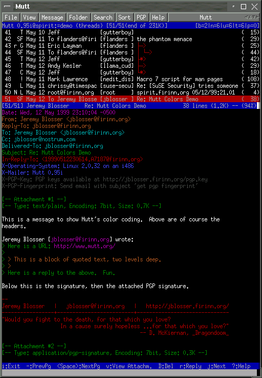mutt_pager.png
Im Index und im Pager kann man mit m eine neue Mail schreiben oder mit r auf eine Mail antworten. Es öffnet sich der Editor. Nach dem Schreiben der Nachricht speichert und beendet man (mit Vim mittel <Esc> :wq). Man gelangt in die “compose” Ansicht. Hier besteht die Möglichkeitn, die Mail-Einstellungen zu ändern, Dateien anzuhängen oder PGP Verschlüsselung auszuwählen. Dies wird später noch genauer ausgeführt.
Es gibt noch weitere Ansichten beziehungsweise Menüs, darunter die Ansicht des Adressbuches und der Browser, den man öffnen kann, wenn man beispielsweise eine Datei anhängen möchte.
Der Index
Im Index werden die Mails eines Folders als Liste dargestellt. Es werden Absendedatum, Absender und Subject (Betreff) angezeigt. Natürlich ist es auch möglich, ganz andere Informationen anzeigen zu lassen, Mutt ist hier sehr flexibel.
Mit den Cursortasten bewegt man den Leuchtbalken und kann dann eine Mail auswählen. Mit der Enter-Taste öffnet sich der Pager, und man kann die Mail betrachten. Pager und Index können viele Funktionen auf die ausgewählte Mail anwenden: mit der Taste d kann man sie löschen und mit s speichern. Mit m kann man eine neue Mail schreiben. Antworten kann man mit r oder g, wobei g an alle Empfänger der Mail antwortet. Mit der Taste o stellt man die Sortierreihenfolge ein.
Sehr interessant ist die Sortierreihenfolge “Faden”: Hier werden Antwort-Mails automatisch korrekt den Ursprungs-Mails zugeordnet. Diese sogenannte Threadingfunktion ist von Newsreadern her bekannt, bei E-Mail-Programmen aber leider selten zu finden.
Es stehen natürlich viele weitere Funktionen unter verschiedenen Tasten zur Verfügung. Wie erwartet, funktionieren hier insbesondere ? als Hilfe und / zum Suchen.
Der Pager
Der Pager öffnet sich, wenn im Index eine Mail ausgewählt wird. In dieser Ansicht kann man die Mail lesen und beantworten. Die Funktionen und Tastenbelegung des Pagers sind sehr ähnlich zu denen des Index (jedenfalls per Voreinstellung).
Der Browser
Den Datei-Browser erreicht man, wenn man einen Dateinamen eingeben soll, aber die Tabulatortaste zur automatischen Vervollständigung drückt. Den Browser erreicht mal also sowohl beim Abspeichern von Mails als auch beim Hinzufügen von Dateianhängen.
In der Auswahl kann man mit dem Leuchtbalken die Datei suchen und mit der Enter-Taste übernehmen. Wählt man ein Verzeichnis aus, so wird dieses geöffnet. Einige Browser können auch mehrere Dateien auswählen, beispielsweise beim Anhängen von Dateien an eine Mail. In diesen Fällen kann man mehrere Dateien mit t markieren und dann mit Enter übernehmen. Über die Space-Taste kann man die aktuelle Datei betrachten.
Das Adressbuch
Das Adressbuch (Aliasliste) erreicht man, wenn man eine E-Mail-Adresse eingeben soll, aber die Tabulatortaste zur automatischen Vervollständigung drückt. Hier kann eine Adresse mit dem Leuchtbalken auswählen und mit Enter übernehmen. Man kann auch mehrere Adressen mit t oder der Leertaste markieren und mit Enter übernehmen.
Voreingestellte Tasten
Die Tastenbelegung kann man natürlich beliebig verändern. Es folgt eine Übersicht der wichtigsten Tastenvoreinstellungen. In Klammern steht ein Kürzel, das es erleichtern soll, sich die Bedeutung zu merken. ? (?: Fragen) Zeigt eine Liste aller Tastenbelegungen an, die momentan verfügbar sind. Funktioniert so ziemlich überall. F1 (Hilfetaste) Die Taste F1 öffnet das Handbuch, leider in englischer Sprache. m (mail) Neue Mail schreiben beziehungsweise erstellen. r (reply: antworten) Auf die aktuell markierte Mail antworten. g (group-reply: an Gruppe antworten) Die aktuelle markierte Mail beantworten, dabei alle ursprünglichen Empfänger in Kopie setzen. s (save: speichern) Die ausgewählte Nachricht in einen anderen Folder verschieben (abspeichern). d (delete: löschen) Die ausgewählte Nachricht löschen. D (DELETE pattern: nach muster löschen) Löscht viele Mails, die einem bestimmten Muster genügen. Hier kann man alle neuen (ungelesenen) Mails löschen oder alle von einem bestimmten Absender. u (undelete: nicht löschen) Als gelöscht markierte Mails doch nicht löschen. o (order: Reihenfolge) Sortierreihenfolge der Nachrichten im Index auswählen. Folgende Optionen stehen danach zur Auswahl: (D)atum, (A)bsender, Ei(n)gang, (B)etreff, (E)mpfänger, (F)aden, (u)nsortiert, (G)röße, Be(w)ertung (Scoring/Punkte). O (reverseOrder: Rückwärts) Sortiert wie “o” (order), nur in umgekehrter Reihenfolge. l (limit: Begrenzung) Es werden nur Nachtichten angezeigt, die ein bestimmtes Muster beinhalten. t (tag: Markierung) Markiert die ausgewählte Nachricht. Es können viele Nachrichten auf diese Art markiert werden. T (TAG pattern: Markierung nach Muster) Markiert Nachrichten, die auf ein bestimmtes Muster passen. ; Das folgende Kommando bezieht sich nicht auf die Nachricht, die mit dem Leuchtbalken markiert ist, sondern auf alle momentan markierten Nachrichen. So kann man beispielsweise viele Mails mit einem Mal abspeichern oder löschen. Tabulator (automatische Vervollständigung, wie in einer Shell) Mit der Tabulatortaste wird auf der Eingabeaufforderungen eine automatische Vervollständigung durchgeführt, wie man das von Shells gewohnt ist. In der Index und der Pager Ansicht springt man mit der Tabulatortaste zur nächsten neuen (noch nicht gelesenen) Mail. Diese Taste funktioniert sogar bei der Abfrage nach E-Mail-Empfängern (und benutzt hier die Aliasliste). c (change: wechseln) In eine andere Mailbox (Folder) wechseln. Man wird nach dem Pfad gefragt. Mit ”?” bekommt man eine Liste angezeigt. a (add: hinzufügen) Absenderadresse der E-Mail zum Adressbuch (Aliasdatei) hinzufügen. Die Werte kann man vor dem Speichern noch bearbeiten. STRG+g Die aktuelle Funktion wird abgebrochen. Anschließend kann man eine neue Funktion per Knopfdruck ausführen. q (quit: Beenden) Beendet das Programm
Eine neue Mail schreiben
Zunächst drückt man im Index oder Pager die Taste m. Man wird nach dem Empfänger gefragt. Hier kann man die E-Mail-Adresse oder einen Kurznamen aus dem Adressbuch verwenden. Die Tabulatortaste dient der automatischen Vervollständigung. Drückt man diese sofort, so öffenen sich alle Einträge des Adressbuches. Hier kann man mit den Cursortasten eine Adresse auswählen und mit Enter übernehmen. Es ist auch möglich, mit der Taste t mehrere Adressen auszuwählen. Anschließend wird man nach dem Betreff gefragt.
Nun öffnet sich der Editor. Man bearbeitet die Nachricht. Hier kann man die volle Leistungsfähigkeit seines Editors verwenden. Letztendlich speichert man die Datei und beendet den Editor.
Es öffnet sich jetzt eine Ansicht, in der man die wichtigesten Einstellungen noch einmal betrachten und gegebenfalls ändern kann. Diese Ansicht nennt sich compose Ansicht.
Vielleicht möchte man mit c oder b jemand in das Cc: (Kopie) oder Bcc: (“blinde” Kopie) setzen. Mit a kann man Dateien anhängen. Man wird nach dem Dateinamen gefragt. Auch hier kann man selbstverständlich die Tabulatortaste verwenden. Drückt man diese sofort oder doppelt, öffnet sich ein Dateibrowser, in dem man bequem die zu versendende Datei auswählen kann. Unter Fcc: steht, in welchen Folder eine Kopie der Nachricht gespeichert werden soll (beispielsweise “sent-mail” oder “gesendetemails”. Dies kann man natürlich auch ändern, in dem man die f Taste verwendet.
Die Taste p ändert die Verschlüsselungseinstellungen. Man kann beispielsweise PGP oder GnuPG verwenden. Man wird gefragt, ob man die Mail verschlüsseln und/oder signieren möchte. Dies setzt natürlich eine funktionierende PGP/GnuPG Konfiguration voraus. Hierzu muß nicht nur Mutt korrekt eingerichtet sein, sondern man muß natürlich auch über die benötigten Schlüssel verfügen. Details können beispielsweise dem GnuPG Handbuch entnommen werden.
Mit der Taste P (also ein grosses P, Shift+P ) kann man die Nachricht zurückstellen, um sie später weiterzubearbeiten. Die Mail wird beispielsweise in den Folder postponed-msgs verschoben.
Drückt man später m, um eine neue Mail zu schreiben, wird man in diesem Fall gefragt, ob man die zurückgestellte Nachricht weiterbearbeiten möchte. Gibt es mehrere, kann man eine davon auswählen.
Mit der Taste y (yes: Ja!) wird die Mail dann gesendet.
Zusammenfassung und Ausblick
Es erfordert etwas Zeit und Geschick, sich eine auf die eigenen Bedürfnisse zugeschnittene Konfiguration zu erstellen und sich in die vielfältigen Funktionen von mutt einzuarbeiten. Danach jedoch wird man mit sehr effizienter Arbeitsweise belohnt.
Weitere Informationen findet man auf der mutt Homepage:
Sven Guckes pflegt eine Homepage über mutt:
Hier findet man eine vielzahl nützlicher Hinweise und Hilfen, beispielsweise eine sehr ausführliche mutt Konfigurationsdatei.
Autor
Steffen Dettmer steffen@dett.de
Formatierung
Matthias Hagedorn matthias.hagedorn@selflinux.org
News¶
Server¶
Leafnode - ein Newsserver unter Linux¶
Beschreibung
Der folgende Text soll zeigen, wie man mit einfachen Mitteln einen eigenen, lokalen Newsserver aufsetzen kann. Wie dies geht, und wozu man sich überhaupt die Arbeit macht, wird hier erklärt.
Einleitung
Was ist News?
News ist ein alter Dienst des Internets. Schon lange vor dem WWW wurden kleine Textbotschaften ausgetauscht. Über das Usenet wurden und werden auch heute noch diese Nachrichten einer grossen Masse von Leuten zugänglich gemacht.
Das Usenet ist streng hierarchisch aufgebaut, was erst ein Zurechtfinden darin ermöglicht. Damit man nicht von der Menge der Nachrichten erschlagen wird, ist das Usenet in Gruppen unterteilt. Eine Gruppe in Deutsch wird meistens mit de.* beginnen. Eine deutsche Linuxgruppe findet man z.B. unter de.comp.os.unix.linux.misc. Dabei steht de für deutsch, comp für Computer, os.unix weil es um Betriebssysteme auf Unixbasis geht und linux.misc, also Verschiedenes zum Thema Linux, ist schließlich unser Ziel. Durch diese feine Gliederung kann der Newsfluss einigermassen gebändigt werden.
Da so viele Leute im Usenet unterwegs sind, wird sehr viel Wert auf das Einhalten von Regeln gelegt. Da diese Regeln den Umfang dieses Dokumentes sprengen würden, erfolgt hier nur ein Verweis auf entsprechende Webseiten oder Gruppen:
de http://www.kirchwitz.de/~amk/dni/usenet-einfuehrung de http://www.kirchwitz.de/~amk/dni/erste-schritte de http://www.kirchwitz.de/~amk/dni/erst-lesen-dann-schreiben de.newusers.infos de.newusers.questions
Warum einen eigenen Server?
Es gibt viele Gründe, die für einen eigenen Server, und auch etliche, dagegen sprechen. In der heutigen Zeit spielt die Grösse des Datentransfers oft keine wichtige Rolle mehr. Da außerdem immer mehr Newsreader unter Linux ohne lokalen Newsserver zurecht kommen, könnte man darauf verzichten.
Ein lokaler Newsserver bietet aber Vorteile. Benutzen mehrere Leute einen Computer und lesen in den gleichen Gruppen, müssen die Daten nur einmal übertragen werden. Wenn man ganze Gruppen längere Zeit verfügbar haben will, kann man dies nur bei einem eigenen Server einstellen (jeder Provider löscht nach gewisser Zeit die News). Ein weiterer Pluspunkt für einen eigenen Server ist natürlich der Lernfaktor. Man erfährt nicht nur etwas mehr über das Usenet, sondern kommt auch Linux näher.
Wieso gerade Leafnode?
Leafnode ist ein relativ einfach zu bedienender Newsserver. Leafnode verhält sich gegenüber dem Newsserver des Providers wie ein Newsreader. Dadurch fallen viele komplexe Kommandos und Einstellungen weg. Dies fordert aber auch Kompromisse. So kann man z.B. keine eigenen Newsgroups erstellen. Da dies von den meisten Benutzern aber eh nicht angestrebt wird, stört es auch nicht. Wenn man dennoch darauf angewiesen ist, empfiehlt sich der Newsserver INN.
Vorarbeiten
Aus Gründen der Sicherheit sollte leafnode nicht als root sondern als Benutzer news laufen. Wenn news noch nicht existiert, muss dieser angelegt werden. Dies geschieht am Besten über das entsprechende Tool der gewählten Distribution.
Installation und Konfiguration
Download
Bevor man mit der Installation beginnen kann, muss man sich leafnode natürlich zuerst einmal besorgen. Wenn keine aktuelle Version mit der Distributions-CD mitgekommen ist, kann man Leafnode von en http://www.leafnode.org herunterladen.
Wenn man leafnode nicht über das distributionsspezifische Installationstool installieren kann, muss man dies halt von Hand machen. Es empfiehlt sich dabei die Verwendung eines RPM-Paketes. Es ist wichtig, dass ein zur Distribution gehörendes RPM heruntergeladen wird. Wenn RPMs gemischt werden, kann dies zu grösseren Problemen führen. Ein RPM für Mandrake wird kaum auf SuSE laufen. Dies ist darin begründet, dass die Pfade zu Programmen und Diensten nicht gleich sind.
Installieren
Je nach grafischer Oberfläche für RPM erfolgt die Installation unterschiedlich. Da dies keine Probleme bereitet, beschreibe ich hier den Weg über die Konsole.
Als erstes wechselt man mit cd in das Verzeichnis, indem das Leafnode RPM liegt. Da rpm nur als root funktioniert, wechselt man mit Hilfe von su den Benutzer. Über den Befehl rpm -ihv leafnode.rpm wird das Paket installiert. leafnode.rpm muss natürlich vorher durch den entsprechenden Namen ersetzt werden.
Hier währe ein ausführliches Beispiel. Es wird davon ausgegangen, das sich das RPM-Paket im Verzeichnis download liegt: user@linux ~$ cd download user@linux ~/download$ su <passwort> root@linux ~/download# rpm -ihv leafnode.rpm
Wenn dies ohne Fehlermeldung funktioniert hat, ist Leafnode nun installiert. Damit ist es aber noch nicht getan. Leafnode ist ein Netzwerkdienst und muss daher über ein Netzwerk - und sei es nur ein lokales - erreichbar sein. Da alles, was mit Netzwerk zu tun hat, vom inetd (Internet Daemon) oder xinetd (Weiterentwicklung von inetd) gestartet werden kann, muss leafnode noch dort eingetragen werden.
Je nach Verwendung von inetd oder xinetd muss für die weitere Installation die entsprechende Anleitung verwendet werden.
Nach der entsprechenden Konfiguration kann zur Kontrolle über telnet eine Verbindung zu leafnode aufgebaut werden. user@linux ~$ telnet localhost nntp Trying 127.0.0.1... Connected to localhost.localdomain (127.0.0.1). Escape character is ‘^]’. 200 Leafnode NNTP Daemon, version 1.9.19 running at jgraber.ch
Wenn eine solche Meldung kommt, hat es geklappt. Bei Fehlermeldungen sollte man als erstes nachsehen, ob alle genannten Dateien news gehören.
inetd
Wenn die Distribution inetd verwendet, müssen wir die Datei /etc/inetd.conf bearbeiten. In dieser Datei sollte es bereits einen auskommentierten Eintrag für nntp geben. Diese Zeile muss gesucht und das # am Zeilenanfang entfernt werden. Die entsprechende Zeile sollte danach so aussehen (Pfade sind natürlich wieder anzupassen): /etc/inetd.conf
nntp stream tcp nowait news /usr/sbin/tcpd /usr/local/sbin/leafnode
Nachdem diese Änderung gespeichert wurde, hat inetd diese aber noch nicht übernommen. Erst mit der Eingabe von root@linux ~# killall -HUP inetd
als root wird das Konfigurationsfile neu eingelesen.
xinetd
xinetd ist, wie wir gleich bemerken werden, komplett anders aufgebaut als inetd. Wir wechseln ins Verzeichnis /etc/xinetd.d und finden dort je nach RPM-Paket bereits eine Datei mit Namen leafnode. Diese Datei sollte so aussehen: /etc/xinetd.d/leafnode
service nntp {
flags = REUSE socket_type = stream wait = no user = news server = /usr/sbin/leafnode log_on_failure += USERID
} # End of nntp
Ist diese Datei nicht vorhanden, muss sie manuell erstellt werden.
Damit die Konfigurationsdatei neu eingelesen wird, muss nachher dieses Kommando ausgeführt werden: root@linux ~# /etc/init.d/xinetd reload
Konfiguration Leafnode
Konfiguriert wird Leafnode über die Datei /etc/leafnode/config. /etc/leafnode/config
## This is the NNTP server leafnode fetches its news from. ## You need read and post access to it. Mandatory. server = <servername>
## Unread discussion threads will be deleted after this many days if ## you don’t define special expire times. Mandatory. expire = 20
## ## All the following parameters are optional ##
## I have free access to my news server. If you don’t have, comment out ## the following two lines and change them accordingly. #username = <benutzername> #password = <passwort>
Wie wir sehen, ist das Config-File sehr gut dokumentiert. Für Leafnode sind eigentlich nur die ersten 2 Parameter notwendig: server und expire.
Bei server muss <servername> durch den entsprechenden Server ausgetauscht werden. expire definiert die Aufbewahrungszeit der Newsartikel. Vorgegeben sind 20 Tage, was aber beliebig geändert werden kann. Man sollte aber beachten, dass mehr Tage mehr Postings bedeuten und diese wiederum mehr Platz beanspruchen.
Falls der Newsserver eine Identifizierung durchführen will, muss das # vor username und passwort entfernt und die entsprechenden Werte eingetragen werden.
Da das Passwort im Klartext vorliegt, muss nach dem Ändern die Datei auf den Benutzer news übertragen werden. root@linux /etc/leafnode/# chmod 600 config root@linux /etc/leafnode/# chown news config root@linux /etc/leafnode/# chgrp news config root@linux /etc/leafnode/# ll -rw——— 1 news news 4468 Dez 26 17:34 config
Feinabstimmung von Leafnode
Wer mit Leafnode in der Standardkonfiguration nicht zufrieden ist, kann bei der Feinabstimmung noch viel erreichen. Dazu öffnet man wieder die Datei /etc/leafnode/config.
Wenn man ein wenig tiefer nachschaut als wir es oben getan haben, findet man noch eine grosse Anzahl von Variablen. Auf die wichtigsten gehe ich hier nun ein:
hostname = <Domain in der MID, die von leafnode angehängt wird>
maxfetch = n Maximal n Postings pro Group auf einmal abholen
initialfetch = n Beim abonnieren einer Newsgroup nur n Postings abholen
maxcrosspost = n Nur Postings abholen, die in max. n Groups gepostet werden
maxage = n Nur Postings die nicht älter als n Tage sind abholen
maxlines = n Nur Postings mit max. n Zeilen Länge abholen
maxbytes = n Nur Postings bis zu einer Größe von n Bytes abholen
timeoutshort = n Wenn versehentlich eine Group geöffnet wurde, nur n Tage diese Gruppe abholen. Default sind 2 Tage
timeoutlong = n wenn eine Gruppe n Tage nicht mehr gelesen wurde, werden keine News aus dieser Gruppe mehr abgeholt Wie oben schon erwähnt muss an diesen Variablen nichts geändert werden. Sie dienen nur zur Feinabstimmung und die Default-Werte sind für die meisten Benutzer in Ordnung.
fetchnews und texpire
fetchnews und texpire sind zwei Programme für den Unterhalt von leafnode. Ohne die beiden ist leafnode relativ nutzlos.
fetchnews dient, wie der Name verrät, zum Herunterladen der News. Der erstmalige Aufruf von fetchnews lädt die Liste der Newsgroups vom Server herunter. Ist dies getan, besorgt er die Newsartikel. Da diese Arbeit je nach Server und Gruppe länger dauern kann, bietet fetchnews die Option -v zur Anzeige der aktuellen Arbeit. -v steht für verbose (ausführlich) und kann durch die Anzahl -vs gesteigert werden. root@linux /etc/leafnode/# fetchnews -vvv
liefert eine angenehm ausführliche Liste.
texpire dient zum Löschen veralteter News. Die News werden von leafnode solange aufbewahrt, wie in /etc/leafnode/config unter expire eingestellt ist. Ist diese Zeit überschritten, werden die News von leafnode intern entsprechend markiert und beim nächsten ausführen von texpire gelöscht.
Der Datenmenge in den Newsgroups entsprechend häufig muss texpire ausgeführt werden. Wenn nur wenig gepostet wird, nutzt das tägliche texpire nicht sehr viel. Bei einer grossen Flut von Nachrichten wird man aber mit einem wöchentlichen texpire auch nicht glücklich. Nach einigen Versuchen wird man aber einen für sich passenden Rhythmus finden.
Einrichten des Newsreaders
Wenn leafnode richtig konfiguriert wurde und fetchnews die Liste mit Gruppen geholt hat, kann man zum Einrichten des Newsreaders übergehen. Da es unzählige Newsreader gibt, beschränke ich mich hier nur auf die grundlegenden Einstellungen. Für detaillierte Informationen zum selber benutzten Reader empfiehlt sich ein Blick in die dazugehörende Hilfe.
Meist wird der Newsreader unter Einstellungen die Newsserver verwalten. Dort fügt man einen neuen Server hinzu. Ins Feld für die Serveradresse kann man localhost oder 127.0.0.1 eingeben (beide Angaben führen zum gleichen Ergebnis). Als Port sollte man 119 verwenden, da inedt/xinetd darauf auf Verbindungen zu leafnode warten.
Nach dem erfolgreichen Erfassen des Servers muss man die Gruppenliste holen. Diese kommt nun nicht vom Newsserver des Providers, sondern von leafnode (der diese mit fetchnews vom Provider geholt hatte). Da so eine Liste mehrere MB gross sein kann, ist man sehr froh, wenn diese nur einmal übertragen werden muss.
Der Newsreader liest diese Liste ein, und man kann mit dem Abonnieren der Gruppen beginnen. Nun weiss der Reader was wir lesen wollen, allerdings hat leafnode davon noch nichts mitbekommen. Wenn man eine der gerade abonnierten Gruppen öffnet, sieht man einen Beitrag mit Titel “Leafnode placeholder for group <gruppenname>”. Nun muss man diesen Beitrag öffnen und findet eine kurze Erklärung über den Sinn dieses Postings. Durch das lesen dieses Postings hat leafnode erfahren, dass wir uns für diese Gruppe interessieren. Beim nächsten Aufruf von fetchnews wird er uns die dazugehörigen Postings holen.
Wenn man sich eine Übersicht über die von leafnode betreuten Gruppen holen will, sollte in den meisten Fällen folgender Befehl genügen: user@linux ~$ $ ls -l /var/spool/news/interesting.groups/ -rw-rw-r– 1 news news 0 Dez 27 16:53 de.comp.os.unix.apps.gnome -rw-rw-r– 1 news news 0 Dez 27 16:53 de.comp.os.unix.apps.kde -rw-rw-r– 1 news news 0 Dez 27 16:53 de.comp.os.unix.apps.misc -rw-rw-r– 1 news news 0 Dez 26 17:54 de.comp.os.unix.linux.infos -rw-rw-r– 1 news news 0 Dez 26 17:54 de.comp.os.unix.linux.misc -rw-rw-r– 1 news news 0 Dez 27 13:24 de.comp.os.unix.linux.moderated
Die darin aufgelisteten Gruppen hat man abonniert, und leafnode kümmert sich darum.
Automatisieren von Aufgaben
Alte News löschen
Man kann texpire zwar manuell aufrufen, doch ist dies auf die Dauer mühsam. Da Linux viele Dinge für einen automatisch machen kann, soll es doch auch die alten News löschen.
Mit Hilfe von Cron müssen wir uns nur einmal ein paar Minuten Zeit nehmen und dann klappt dies automatisch. Da bisher immer news alles machen sollte, soll er nun auch wieder zum Zuge kommen. Als root führen wir folgenden Befehl aus: root@linux ~# crontab -u news -e
Dieser Befehl öffnet die bestehende crontab von news zum Editieren. Darin fügen wir auf der nächsten freien Zeile folgendes hinzu: crontab von news
0 20 * * * /usr/sbin/texpire
Damit wird jeden Tag um 20 Uhr der Befehl /usr/sbin/texpire ausgeführt. Da wir uns in der Crontab von news befinden, müssen wir den Benutzer nicht noch explizit angeben. Hinweis zu vi: Standardmässig wird der Editor VI verwendet. Wer sich damit nicht auskennt, bekommt hier eine kleine Erklärung: Um zu editieren, müssen wir über Insert in den Schreibmodus wechseln. Nach dem Editieren wechseln wir mit ESC in den Kommandomodus. Der Befehl :wq speichert die Änderung und schließt vi. Weitere Informationen findet man im Kapitel Editoren hier bei SelfLinux. Weitere Informationen findet man im Kapitel Editoren hier bei SelfLinux.
Automatisch News holen
Um fetchnews automatisch ausführen zu lassen, empfiehlt sich die Datei /etc/ppp/ip-up. ip-up wird jedes Mal nach dem Aufbau einer Dial-up Verbindung ausgeführt.
Dieser Datei müssen nur die folgenden 2 Zeile hinzugefügt werden, und schon sollte es funktionieren: /etc/ppp/ip-up
# neue News von Newsserver holen /usr/sbin/fetchnews
Leafnode und Standleitungen
Wenn man über eine Standleitung oder eine Flatrate permanent eine Verbindung zum Internet hat, so wird man nur wenig Freude an ip-up haben. Da macht Cron schon mehr Sinn. Also editieren wir nochmals als root die crontab von news: root@linux ~# crontab -u news -e
Nun können wir dort eintragen, wann fetchnews ausgeführt werden soll. Durch crontab von news
15 * * * * /usr/sbin/fetchnews
wird fetchnews jeweils um x:15 ausgeführt.(Also 12:15, 13:15, 14:15 usw). Wenn dies nicht genügt, können natürlich noch weitere Einträge gemacht werden.
Autor
Johnny Graber selflinux@jgraber.ch
Formatierung
Johnny Graber selflinux@jgraber.ch
INN¶
Einleitung
Dieses Dokument beschreibt den Betrieb eines echten Newsservers mit der Software INN. Es richtet sich an angehende News-Administratoren, nicht jedoch an Heimanwendungen. Für Heimanwendungen verwendet man am besten einen bereits bestehenden Newsserver oder das Programm leafnode. Der Betrieb eines echten Newsservers ist sehr aufwendig, kompliziert und erfordert bei größeren, sinnvollen Installationen, dass mindestens ein Newsserver angepaßt wird, damit der eigene Server News zugeschickt bekommt (das ist ein grundlegender Unterschied zum eMail-Versand, wo ja jeder einfach einen eigenen Server betreiben kann).
Der Betrieb eines echten Newsserver lohnt sich, wenn man viele Clienten bedienen möchte (das heißt, weit mehr als 10), oder viele Artikel verwalten muß (das heißt, weit mehr als 10.000). Für kleinere Installationen sollte entweder ein fremder Newsserver verwendet werden, oder das Programm leafnode verwendet werden. Nur, wenn wirklich Bedarf besteht, sollte man sich einen echten Newsserver leisten, denn Einrichtung und richtiger Betrieb sind aufwendig.
News
Mit News bezeichnet man kurze Textdateien, von denen ständig welche geschrieben werden (in einigen Fällen sind das auch binäre Dateien). Diese werden an viele Benutzer verteilt. Diese können dann auch darauf antworten. Da es sehr viele solcher Artikel gibt, hat man diese sogenannten Gruppen zugeordnet. So gibt es eine Gruppe comp.os.linux, die sich mit Linux beschäftigt und viele andere, bis hin zu de.alt.freieliebe.
Um der Flut von Artikeln Herr zu werden, werden diese nach einiger Zeit, zum Beispiel nach einem Monat, gelöscht. Es handelt sich schließlich um News - also Neuigkeiten.
Genereller Überblick
Ein Benutzer schreibt einen solchen Artikel mit einem Programm, zum Beispiel mit Netscape. Das Programm sendet (postet) den Artikel dann zu einem bestimmten Server. Dieser verteilt den Artikel dann an weitere Server und diese verteilen den Artikel dann auch wieder weiter. Über irgendwelche Wege kennt jeder Server indirekt jeden anderen (sonst würde es Inseln geben). Es kann somit auch einige Zeit dauern, bis der Artikel überall zur Verfügung steht, von allen gelesen und beantwortet werden kann. Heutzutage sind jedoch die Verbindungen so schnell, dass ein Artikel in Sekunden fast alle Teile der Welt erreicht hat. Jedoch gibt es auch Server, die zum Beispiel aus Kostengründen Artikel nur nachts übertragen.
Usenet
Mit Usenet bezeichnet man alle Server, die News-Artikel untereinander austauschen. Das Usenet ist eine dezentrale Anordnung von Newsservern. Das Usenet enthält Artikel, die einer Gruppe zugehören. Die Gruppen sind dabei in (mehrere) Hierarchien gegliedert, eine davon heißt z.B. de und beinhaltet u.a. de.answers, de.test und (Sub-) Hierarchien wie z.B. de.comp (mit de.comp.os usw.). Ein Newsserver hat eine bestimmte Menge von Newsgroups, die er verwaltet/kennt.
Ein Client, auch Newsreader genannt (z.B. tin, Netscape), kann nun über den NNTP Port auf den Newsserver connecten, sich eine Liste der Newsgroups geben lassen, sich einzelne Artikel herunterladen oder senden (posten). Diese Clienten werden hier als Newsreader (oder kurz Reader) bezeichnet, mit Server wird im folgenden ein Newsserver bezeichnet.
Verteilung von News
Verteilung vieler Artikel
Um die Verteilung zu ermöglichen, stehen die Newsserver untereinander in Verbindung. Da in der Regel viele Artikel übertragen werden und aus Effizienzgründen keine doppelt übertragen werden sollen, wird ein spezielles Verfahren verwendet. Die Server pflegen Listen, in denen die zu übertragenden Artikel stehen, wird eine Übertragung durchgeführt, wird die Liste abgearbeitet, so dass mit einer Verbindung alle Artikel übertragen werden können. Diese Listen nennt man Feedlisten. Hat ein Newsserver einen neuen Artikel empfangen, so trägt er die Nummer des Artikels in die Feedlisten ein. Ein Artikel trägt in seinem Header Steuerinformationen, wie z.B. eine Pfadliste, in der die Newsserver stehen, die diesen Artikel übertragen haben (jeder Server fügt seinen Namen am Anfang der Liste ein, das Verfahren ist analog zur Pfadadresse einer eMail aus UUCP-Zeiten).
Feeden und Posten
Artikel, die in der Feedliste stehen, sollen also später gefeeded werden. Dies darf man nicht mit dem posten verwechseln. Clients posten, Newsserver feeden. Feeden ist auf den ersten Blick zwar sehr ähnlich, jedoch auf Protokollebene anders. Feeden ist für große Mengen an Artikeln optimiert. Posten funktioniert einfacher. Beim Posten geht der Newsserver davon aus, dass der Artikel neu ist. Gepostete Artikel werden gegebenenfalls um eine ID ergänzt. Gefeedete Artikel müssen immer bereits eine ID besitzen.
Feedlisten
Soll ein Artikel in die Feedliste für einen Zielserver eingetragen werden, ist das natürlich nur nötig, wenn der Name des Zielservers noch nicht in der Pfadliste steht (denn anderenfalls hat er den Artikel ja bereits gesehen und gespeichert). Der Artikel wird also nur in die Feedlisten der Server eingetragen, die den Artikel noch nicht weitergeleitet haben. Nun kann aber ein Zielserver diesen Artikel von einem anderen Server erhalten haben. Um sinnlosen Datenverkehr zu unterbinden, hat deshalb jeder Artikel eine weltweit eindeutige ID (genauer gesagt, muß die ID eindeutig im gesammten Usenet sein, also eindeutig in allen bekannten Universen). Connected ein Server einen anderen, um ihm Artikel zu schicken, sendet er erst einmal eine Liste von IDs, die er hat. Diese Liste wird aus den Feedlisten erstellt. Der andere Server vergleicht diese mit seinem Datenbestand. Artikel mit unbekannten IDs werden nun übertragen. Dieser Vorgang läuft ebenfalls oft über den NNTP Port ab (deswegen kann es Schwierigkeiten geben, wenn vom Feeder aus versucht wird, eine Client-Verbindung aufzubauen, da der Server häufig hier nur einen Server erwartet, und sich entsprechend [falsch] verhält).
Die eigentliche Übertragung
In regelmäßigen Zeitabständen wird ein cron-job gestartet, der die Feedlisten überträgt. Alternativ dazu kann man das auch über ein Programm erledigen, was sich wie ein Client verhält und diese Artikel postet (also nicht feeded!), dabei müssen die Artikel allerdings etwas modifiziert werden, da ein Client einige Headerfelder nicht setzen darf (z.B. NNTP-Posting-Host, Xref, X-Trace, X-Complaints-To, NNTP-Posting-Date), da diese vom Newsserver gesetzt werden (dazu kann man ein Filterscript verwenden).
Um nicht in der Datenflut zu ersticken, akzeptiert ein Newsserver nur einige Gruppen (das können auch einige hundert sein). Das sollte bereits beim Erstellen der Feedlisten berücksichtigt werden, man muß schließlich keine Artikel in die Listen eintragen, die sowieso nicht akzeptiert werden. Auch möchte man evtl. einige private Gruppen führen, die ebenfalls nicht gefeeded werden sollen.
Neue Gruppe einrichten
Überblick
Eine neue Gruppe wird in drei Schritten eingerichtet. Zum Einen muß der Feeder (i.d.R. der ISP) die neue Gruppe in seine Feedliste aufnehmen, damit der Feeder neue Artikel in die Feedliste einträgt (das macht er nur, wenn der Empfänger die Gruppe überhaupt haben will). Dazu ist es natürlich notwendig, dass der Feeder der Gruppe selbst gefeeded bekommt und neue Artikel entsprechend zurückfeeden kann, sonst erhält man natürlich keine Artikel. Einfacher gesagt, man kann keine Gruppen bekommen, die er selbst nicht hat.
Zum Anderen muß der lokale Newsserver diese Gruppe bedienen, d.h. diese Gruppe muß active sein, ansonsten würde der lokale Newsserver die gefeedeten Artikel als unwanted - ungewollt - ablehnen und in der Pseudo-Gruppe junk - Müll ablegen (diese Gruppe hat nur einen geringe Lebensdauer, oft werden die Artikel nach einem Tag bereits gelöscht).
Dann muß als drittes der lokale Newsserver diese Gruppe auch an den Feeder feeden, damit eventuelle Antworten ins Usenet gelangen. Ansonsten würde man ja keine Antwort auf die Artikel bekommen.
Vorgehen
Man beginnt sicherheitshalber immer mit dem zweiten Schritt (damit keinesfalls Artikel in junk landen und verloren gehen, denn ein manuelles Übertragen von junk in eine Gruppe ist mindestens mühsam!). Dazu richtet man mit dem Dienstprogramm ctlinnd(1m) eine neue Gruppe ein. Dabei sorgt ctlinnd hier nur für eine ordnungsgemäße Eintragung in active (und macht diese Änderung dem innd bekannt). Der Aufruf lautet dabei z.B.: root@linux ~# ctlinnd newgroup de.talk.jokes
Dabei können noch weitere Argumente angegeben werden, dass ist hier ein minimalistisches Beispiel. Dann richtet man am besten erstmal gleich den eigenen Feed ein, damit Postings dann auch zurückgehen können (bzw. an weitere Server verteilt werden). Dazu muß man dann die Datei newsfeeds (meist /etc/news/newsfeeds) anpassen, wenn nötig (es kann z.B. sein, das alle Gruppen, evtl. bis auf Ausnahmen, gefeeded werden).
Nun muß der Feeder den newsfeed für unseren Newsserver anpassen.
Normalerweise bekommt man vom Feeder keine alten Artikel. Das heißt, es kann eine Weile dauern, bis neue Gruppen auch wirklich Artikel beinhalten!
Gruppen entfernen
Eine Gruppe loszuwerden, läuft entsprechend rückwärts. Um die Benutzer nicht zu ärgern, sollte sowas immer angekündigt und abgesprochen werden. Zu diesem Zwecke kann man z.B. eine Gruppe local.users oder so verwenden. Zuerst sollte dann der Feeder die Gruppe nicht mehr feeden. Es kommen damit keine neuen Artikel, aber es kann noch gepostet werden. Dann kann man die Gruppe einfach expiren lassen - irgendwann ist sie leer. Spätestens dann sollte man dann die Gruppe aus dem feed nehmen, und dann auch entfernen.
Newsserver ohne Feeder
Wenn man keinen Newsserver zur Verfügung hat, der den eigenen Newsserver feedet, also man keinen Newsadministrator überreden kann, für seinen eigenen Server Feedlisten zu pflegen, kann man auch einen Newsserver betreiben, der sich wie ein Client verhält.
Das bedeutet, er holt die Artikel wie ein Client ab und verteilt Artikel nicht über Feeds, sondern postet diese selbst auch wieder. Mischformen sind natürlich auch möglich.
Man kann hier suck und rpost verwenden.
Artikel einspeisen
Suck verwendet man wie folgt: Suck
#!/bin/sh
- suck <newsserver> -c -bi /var/spool/news/batch -dt /var/spool/news
- -dm /var/spool/news/Msgs -dd /var/spool/news
/usr/lib/news/bin/innxmit localhost /var/spool/news/batch
Die Pfade müssen natürlich den Gegebenheiten angepaßt werden.
Artikel weiterschicken
Beim Posten müssen noch einige Infos aus dem Header gefiltert werden, da der andere Server keine Newsserver Einträge in den Artikeln sehen möchte (viele Newsserver werfen solche Artikel gleich in junk).
Hier ein Beispiel für die Verwendung von Post: Beispiel für die Verwendung von Post
#!/bin/bash mv /var/spool/news/out.going/newssrv3
/var/spool/news/out.going/newssrv3.new
/usr/lib/news/bin/ctlinnd flush newssrv3 /usr/bin/rpost newssrv3.bedi.net -d -b
/var/spool/news/out.going/newssrv3.new -p /var/spool/news -f /etc/news/post.filter $$o=/tmp/filtered_msg $$i /tmp/filtered_msg
Das ist hier quick-and-dirty (für Testumgebungen z.B.). Hier wird out.going sicherheitshalber für die Dauer des rpost Aufrufes umbenannt, damit keine Artikel übergangen oder doppelt gepostet werden.
Artikel zum Versand aufbereiten
Ein Beispiel-Filter für das Entfernen der Header und Newsservereinträge (/etc/news/post.filter) könnte so aussehen: Beispiel-Filter für das Entfernen der Header und Newsservereinträge
#!/bin/sh
PATH=/usr/local/bin:/usr/bin:/bin:/usr/lib/news/bin
PERLCMD=’/^(NNTP-Posting-Host|Xref|X-Trace|X-Complaints-To|NNTP-Posting-Date)/ or print’
INFILE=$1 OUTFILE=$2
- if [ -f ${INFILE} ]; then
cat ${INFILE} | perl -ne “${PERLCMD}” > ${OUTFILE}
- if [ $? -ne 0 ]; then
- echo “Error” exit -1
fi
- else
- echo “$1 does not exist” exit -1
fi
Automatisierung
Beide Scripte kann man über einen Wrapper (News eXchanger) starten: Wrapper (News eXchanger)
#!/usr/bin/bash
/etc/news/post.sh >> /var/log/news/post_log 2>&1 /etc/news/suck.sh >> /var/log/news/suck_log 2>&1
Hier werden noch Logdateien geschrieben.
Das kann man dann per Cron alle 5 Minuten ausführen lassen: per Cron alle 5 Minuten ausführen lassen
*/5 * * * * /etc/news/NX.sh
Erweiterungen
Das ist ein kleines Grundgerüst, auf dem man aufbauen kann. Es ist damit zu rechnen, dass weitere Dinge angepaßt werden müssen; leider verhalten sich Newsserver nicht einheitlich. Das ist meistens neben dem Verwalten der Datenmengen die größte Schwierigkeit beim Administrieren von richtigen Newsservern.
Echte Feeds
Feeds für andere Server konfigurieren
Hier nun ein paar Infos, wie man INN verrät, wie die Feedlisten auszusehen haben. Als erstes muß INN natürlich wissen, für welchen Newsserver überhaupt Feedlisten erstellt werden müssen und welche Gruppen enthalten sein sollen. Das erledigt man in der Datei newsfeeds. Das Format sieht wie folgt aus:
Mit # beginnende Zeilen sind Kommentare. Ein Eintrag ist eine Zeile lang, kann sich über mehrere erstrecken, wenn als letztes Zeichen ein kommt. Die Felder eines Eintrags werden durch : getrennt und bedeuten: Datei newsfeeds
- Newsserver/Alias
- :Gruppenpattern/Distribution :flag,flag :param
Jeder Eintrag entspricht einer Feedliste und damit einem Server, dem man Artikel feeden möchte.
Ist Newsserver bereits im Pfad, so wird ein Artikel nicht gefeeded. Unter Umständen stimmen Newsserver FQDN und dessen Pfadeintrag nicht überein (ein Server kann ja mehrere [Alias-] Namen haben). Diese kann (und sollte) man dann alle bei Alias aufführen.
Einen Feed konfigurieren
Was genau der Server gefeeded bekommen soll, wird über die Optionen des Feedlisten-Eintragen eingestellt.
Gruppenpattern bestimmt die Gruppen, die gefeeded werden sollen. Dabei ist als Wildcard * erlaubt (was eine beliebige Anzahl von ebenfalls beliebigen Zeichen darstellt). Gruppen, die ausgeschlossen werden sollen, kann man hinter ! definieren. Zusätzlich kann man eine Distributionsliste angeben (incl. Ausnahmen).
Die beiden wichtigesten Flags sind:
T<type> mit <type> <f|p|...>
f: file p: programm
(hier wird nur Tf erklärt: die Feedliste ist eine normale Datei)
W<items> mit <items> {m,n,H...}
m: Message-ID n: Pfadname H: Alle Header
Zum späteren Senden via NNTP mittels nntpsend wird die Message-ID und der Pfad benötigt (der Rest steht ja im Artikel unter Pfad), also Wnm
Feedlisten zusammenstellen
Aus technischen Gründen muß erst ein spezieller Feed für den Server selbst eingerichtet werden. Dieser enthält in der Regel alles. Ein entsprechende Eintrag sieht so aus:
- ME
- :*,!control,!junk
(control und junk interessieren nicht)
Ein Beispiel für einen Feed zum ISP könnte so aussehen:
- newsfeed
- :,!control,!junk,!local.:Tf,Wnm:
Das bedeutet: Es soll NNTP zum Feeden verwendet werden [UUCP ist so gut wie tot]. Dabei sollen alle Gruppen, außer control, junk, und local.* übertragen werden. nntpsend erwartet ein File (Tf) mit dem Format Message-ID und Pfad (Wnm).
Overview- und Crosspostsdata kann so erzeugt werden: Overview- und Crosspostsdata
overview!::Tc,WO:/usr/bin/overchan crosspost::Tc,Ap,WR:/usr/bin/crosspost
Diese Datei newsfeed gehört ins Verzeichnis /etc/news.
Feeds durchführen
Um diese Feeds auch durchzuführen, muß ein entsprechender cronjob laufen. Man kann ihn nachts laufen lassen, nur dann erhält man frühestens einen Tag später eine Antwort, laufen beide Feeds (also Server zum ISP und ISP zum Server) einmalig nachts, kann eine Antwort frühestens zwei Tage später erscheinen. Für ein schnelleres Verhalten sollte man nntpsend z.B. alle 10 Minuten starten. Dazu dient unter Linux z.B. folgender Eintrag: alle 10 Minuten starten
*/10 * * * * /usr/lib/news/bin/nntpsend
Feeds testen
Zu Testzwecken kann man nntpsend natürlich auch manuell starten. Ein (leider selten nützliches) logfile liegt unter /var/log/news/nntpsend.log. Das sieht z.B. so aus: /var/log/news/nntpsend.log
nntpsend: [5694] start nntpsend: [5694] stop nntpsend: [5694:5715] begin newssrv2 Wed Dec 15 20:06:03 MET 1999 nntpsend: [5694:5715] innxmit -a newssrv2 ... nntpsend: [5694:5715] end newssrv2 Wed Dec 15 20:06:04 MET 1999
Im Falle, dass Artikel gesendet wurden (nntpsend verwendet innxmit nur in diesem Fall). Ansonsten besteht es nur aus start/stop Zeilen (keine Artikel übertragen).
Der innd auf der anderen Seite, also der Empfänger, loggt diese Vorgänge auch (das wird dabei indirekt von nntpsend gesteuert), das sieht so aus: /var/log/news/nntpsend.log
Dec 15 20:05:00 newssrv1 innd: newssrv3 flush Dec 15 20:05:00 newssrv1 innd: newssrv3 opened newssrv3:15:file Dec 15 20:05:00 newssrv1 innd: newssrv3 closed Dec 15 20:05:02 newssrv1 innd: localhost connected 18 streaming allowed Dec 15 20:05:02 newssrv1 innd: localhost:18 NCmode “mode stream” received Dec 15 20:05:04 newssrv1 innxmit[5692]: localhost stats offered 737 accepted 1 refused 736 rejected 0 Dec 15 20:05:04 newssrv1 innxmit[5692]: localhost times user 0.070 system 0.110 elapsed 2.337 Dec 15 20:05:04 newssrv1 innd: localhost:18 closed seconds 2 accepted 1 refused 736 rejected 0
Hier sieht man eine nette Fehlkonfiguration: der Newsserver hat von 737 Artikeln 736 abgelehnt (vermutlich hat er diese Gruppe nicht, bzw. möchte sie nicht, weil er sie nicht bedient). Einen hat er jedoch akzeptiert (und keinen rejected. Rejected wird, wenn er ihn eigentlich möchte, aber er z.B. meint, es handle sich um Spam, oder der Artikel hat falsche Struktur oder sowas, beispielsweise die oben erwähnten Newsserverheader). Das ganze hat zwei Sekunden gedauert.
Beliebte Fehlersituationen bei Feeds
Es gibt weitere häufige Fehlermeldungen, die nicht immer klar verständlich sind. Hier einige wichtige Beispiele.
Der eigene Server läuft nicht
Situation: Der eigene Server ist down, nntpsend bekommt keine Daten zum versenden. Das sieht dann so aus: /var/log/news/nntpsend.log
nntpsend: [2681] start Can’t send “flush” command (dead server failure) No such process. nntpsend: file /var/news/storage/out.going/newsfeed for newsfeed not found nntpsend: skipping newsfeed via newsfeed
Der fremde Server läuft nicht
Situation: Der fremde Server ist down, innxmit kann ihn nicht erreichen: /var/log/news/nntpsend.log
nntpsend: [3888:3909] innxmit -a newsfeed ... Can’t connect to newsfeed, Connection refused
Probleme mit den Gruppen
In der Praxis kommt es immer wieder mal vor, dass der Server plötzlich hunderte von Artikel ablehnt.
Ungewollte newsgroups werden in unwanted.log erfaßt: unwanted.log
130 newsgroup de.comp.lang.delphi.datenbanken 3 newsgroup de.comp.datenbanken.misc
Dies kann kommen, wenn uns Datenbanken nicht mehr interessieren und die Gruppe nicht mehr geführt wird. Der Feeder sollte seine Feedlisten anpassen; in der Praxis kann sowas leider oft lange dauern, da die Administratoren selten Zeit haben.
Selektion von Gruppen
Bei der Auswahl der erwünschten Newsgroups, die vom ISP gefeeded werden sollen, ist sehr selektiv auszuwählen. Keinesfalls darf der Fehler gemacht werden, z.B. de.* oder alt.* haben zu wollen (es sei denn, Sie sind glücklicher Besitzer einer gelangweilten E3 Anbindung - das sind 34 Mbit Bandbreite - und haben einen Kleiderschrank voller Geld für die Trafficgebühren). Lektüre entsprechender Selbstzweck-Newsgroups (news.admin.technical z.B.) ist hilfreich, daher auch das folgende Zitat: Zitat
> curt@kcwc.com (Curt Welch) wrote: > thebyte@san.rr.com (Daniel Trewella) wrote: > > Our news server currently hogs about 2mb/s on our 6mb/s backbone. > > (Can > > you say “ouch”?) Is there a way to limit the bandwith that our news > > server is using? > > > > The system is running FreeBSD 3.0-RELEASE and INN 2.1. > > Are you talking about your incoming feeds? You’re lucky it’s only > 2mb/s. > A full feed is more like 8mb/s these days. > > The only good way to deal with the size of your incomming feed is to > change what your feeds are sending you.
Überschlagen wir mal ganz grob: 8mb/s sind 1Mbyte/s. Der Tag hat 60*60*24 Sekunden, macht etwa 84 GB am Tag, und 2,5 TB (TeraByte) im Monat. Nehmen wir mal an, 1 GB würde EUR 10,- kosten (das ist ein in etwa realistischer Preis), dann kämen wir auf etwa 25.000 Euro im Monat!! Dies setzt natürlich voraus, das die Bandbreite im Tagesdurchschnitt bei 8Mbit liegt...
Cron Jobs
Für Feeds
Hier ein Cronjob zum Durchführen der Feeds:
nntpsend z.B. alle 10 Minuten starten. Dazu dient unter Linux z.B.: alle 10 Minuten starten
*/10 * * * * /usr/lib/news/bin/nntpsend
Nächtliches Aufräumen
Diese Jobs können viel Rechen- und Plattenleistung verbrauchen und sollten daher nachts ausgeführt werden. Cronjob
0 * * * * /usr/lib/news/bin/news.daily expireover lowmark 24 3 * * 0 /usr/lib/news/bin/expireover -a -v 24 1 1 * * /usr/lib/news/bin/makehistory -buv
Löschen alter Artikel
Meist reicht es aus, news.daily regelmäßig auszuführen. Beispielsweise könnte man es dreimal täglich starten (bei großen Servern vielleicht auch nur einmal täglich, daher der Name des Scriptes; einmal nachts beim Aufräumen reicht meistens): news.daily
5 9,15,21 * * * /usr/bin/news.daily delayrm expireover norenumber nomail nologs >/dev/null 26gt;&1
Debugging, Inbetriebnahme, Probleme
Informationsquellen
Die beiden wichtigsten Quellen für Informationen bzw. Fehlerbeschreibungen sind eMails, die an news bzw. root gemailt werden, und die Logfiles. Die wichtigesten logfiles werden dabei meistens via syslog verwaltet. Der Standard-Pfad ist /var/log/* (einschließlích /var/log/news/*) unter Linux. Diese lassen sich natürlich anpassen, wenn man möchte. Eine kleine Inkonsistenz tritt hierbei auf: Linux-Syslog legt manchmal alle news Meldungen in news.notice ab. Diese beiden Dateien sind immer die erste Anlaufstelle bei Problemen.
Startprobleme
Wenn innd überhaupt nicht startet, kann es z.B. an einem Syntaxfehler in der Konfiguration liegen. Das Programm inncheck hilft, derartige Fehler zu finden. Im Normalfall sollte es keine Ausgabe machen. Ausgewiesene Fehler sind entsprechend zu korrigieren, klar. Wenn es gar nicht klappt, kann man evtl. durch ein System trace (mit strace -f /pfad/innd - Pfade ergänzen!) Hinweise bekommen. Die Interpretation erfordert allerdings recht intensive Systemkenntnisse.
Zugriffsprobleme
Wenn innd läuft, kann man prüfen, ob ein Client Zugriff bekommt: root@linux ~# telnet newshost 119
Wenn man einen connect bekommt, kann man z.B. das Kommando LIST probieren (danach dann QUIT). Man sollte die Gruppenliste erhalten. Ein Feedtest macht man z.B. mit dem Kommando root@linux ~# ihave <xxx@test.de>
Einem Clienten sollte dann geantwortet werden 480 Transfer permission denied, einem Feeder 335 und dem Warten auf Eingaben (Ende mit <CR>”.”<CR> (also einem Punkt als einziges Zeichen auf einer Zeile, wie auch bei SMTP). Die zu erwartende Fehlermeldung: 437 No colon-space in header. Je nach Version und Typ werden Abweichungen vorhanden sein.
Probleme mit Feedern
Wird ein Feed nicht als Feed erkannt, sollte als erstes geprüft werden, ob der FQDN (Systemname des Servers) übereinstimmt. Dazu kann man z.B. eine Verbindung aufbauen und dann mit root@linux ~# netstat -a|grep nntp
schauen, wie der Name ist, bzw. root@linux ~# netstat -an|grep 119
mit nachfolgendem nslookup. Ist der Name bestimmt, können die Einträge in hosts.nntp überprüft werden.
Abgelehnte Artikel
Gründe für rejects oder refuses zu finden, kann aufwendig werden. Es ist zu beachten, dass auch bereits gespoolte Artikel abgelehnt werden können. Unerwünschte Gruppen werden sowieso abgelehnt. Ein Blick ins active-File ist jedenfalls immer ratsam.
Probleme mit Clienten
Falls sich Clienten beschweren, nicht mehr connecten zu können, sollten als erstes die Prozesse des Newsservers neu gestartet werden: root@linux ~# /etc/init.d/inn stop root@linux ~# /etc/init.d/inn start
Dann kann z.B. mit: root@linux ~# telnet <newsserver> 119
ein Test gemacht werden. In jedem Falle sind die Logfiles zu analysieren. Das sollte von Zeit zu Zeit auch gemacht werden, wenn augenscheinlich alles funktioniert, um evtl. Fehler früh zu erkennen.
Vollaufen eines Dateisystems
Einer der schlimmsten anzunehmenden Fehler ist ein Vollaufen eines Dateisystems, insbesondere des root-Dateisystems. In einem solchen Fall wird nicht nur der Newsbetrieb gestört, sondern fast alle Serverfunktionen. Außerdem können dadurch undefinierte Zustände auftreten, die sich nur schwer erkennen und beheben lassen (z.B. existierende, aber leere Dateien). Dateien, die regelmäßig überarbeitet und neuangelegt werden, verschwinden dabei unter Umständen. Deshalb ist die freie Kapazität streng zu beobachten. Dabei ist es eine Hilfe, dass bei normalen Konfigurationen per Cronjob eine eMail generiert wird, die auch diese Information liefert. Man kann das Problem entschärfen, in dem man Quotas verwendet oder eine eigene Partition für News bereitstellt. Newsserver neigen im Betrieb dazu, riesige Datenmengen zu produzieren.
Autor
Steffen Dettmer steffen@dett.de
Formatierung
Matthias Hagedorn matthias.hagedorn@selflinux.org
Tools¶
glitter¶
Beschreibung
glitter ist ein Programm mit grafischer Oberfläche zum gezielten Download von binären Dateien wie Videos, Bilder und Musikstücken aus Newspostings.
Der Text hier zeigt nach einem Vorwort zum Sinn und Unsinn von Binär-Postings, wie man glitter soweit einrichtet, dass er seine Arbeit sinnvoll ausführt.
Binär-Dateien in News?
In jeder Erklärung zu News und dem Usenet steht, das binäre Postings in diesem Medium nichts zu suchen haben. Warum braucht es dann aber glitter?
Vorsätze und Regeln sind zwar gut, doch gibt es auch Ausnahmen. Die Regel, das nur Text in den News gepostet werden sollen, wäre an sich sehr gut. In den meisten Newsgroups ist daher der Austausch binärer Dateien strengstens verboten und löst jeweils riesige Flamewars aus.
Es gibt aber auch Newsgroups, die nur von binär-Postings leben. Deren Namen beginnen meistens mit alt.binaries.* und haben häufig ein Transfervolumen von mehreren MB pro Tag. Der riesige Datentransfer ist auch der Hauptgrund, warum die meisten Newsserver diese Gruppen nicht führen.
Bietet der eigene Provider keine entsprechenden Gruppen auf seinem Newsserver an, kann man sich auf en http://www.google.com einen entsprechenden Anbieter suchen. Mit den Suchbegriffen “news server binary” findet man sehr schnell die ersten Treffer.
Wo gibt es glitter?
Wie im Vorwort erwähnt, ist glitter zum Download von Dateien aus Newspostings da. Mit glitter kann man solche Inhalte empfangen, nicht aber versenden.
glitter selbst findet man auf seiner Homepage en http://www.news.org.uk/glitter/download.hmtl als *.rpm oder als *.tar.gz. Der gewöhnliche User wird sich wohl mit dem *.rpm am Besten auskennen. Der Aufruf von user@linux ~$ rpm -ihv glitter-1.0-2.i386.rpm
als User root genügt, und glitter wird installiert. Möchte man selber den Compiler anwerfen, nimmt man das *.tar.gz. Es empfiehlt sich ein Blick in die Datei INSTALL, um sich über das weitere Vorgehen zu informieren.
Die Konfiguration von glitter
Sobald die Installation beendet ist, genügt ein user@linux ~$ glitter
zum Start des Programms. Beim ersten Start hilft einem ein Dialog bei der Konfiguration. Dieser fragt nach dem Server und falls nötig nach dem Benutzernamen und Passwort. Sobald diese Daten eingegeben sind, holt sich glitter die Liste aller verfügbaren Newsgroups. Je nach Netzanbindung kann dies ein wenig dauern, da eine solche Liste mehrere tausend Einträge umfasst.
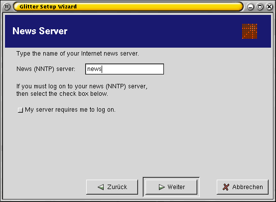Der Konfigurationsdialog von glitter
glitter verwenden und optimieren
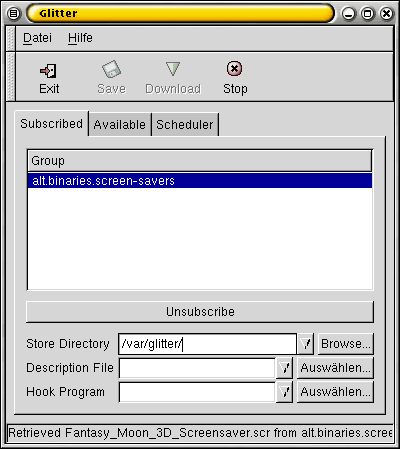So präsentiert sich glitter nach dem ersten Start.
Wenn glitter die Gruppenliste geholt hat, geht es an das Abonnieren. Dazu wählt man den Tab Available und gibt seinen Suchtext in das entsprechende Feld ein. Nach einem Klick auf den Knopf Search Now werden alle gefundenen Gruppen aufgelistet. Abonnieren kann man diese durch einen Doppelklick auf den Namen. Die ausgewählten Gruppen stehen danach beim Tab Subscribed.
Wählt man eine dieser Gruppen aus, wird im Feld Store Directory der Ablageort angezeigt. Dieser wird standardmässig auf das Heimatverzeichnis des Benutzers gelegt. Man kann den Ablageort für jede Gruppe einzeln in dem Feld ändern. Will man aber alle Gruppen in einem anderen Verzeichnis ablegen, Kann man unter Datei / Einstellungen das Verzeichnis global ändern.
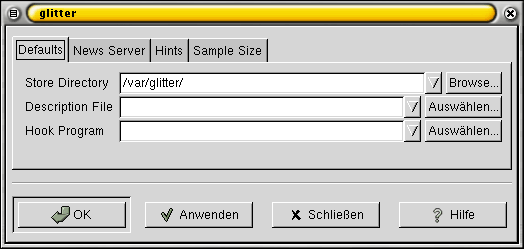Das Einstellungsfenster bietet zahlreiche Möglichkeiten
Im Tab News Server gibt es die praktische Option, mehrere Verbindungen gleichzeitig aufzubauen. So kann man die ganze Bandbreite seiner Leitung ausnutzen und verbraucht weniger Online-Zeit.
Wenn man zusätzliche Dateien herunterladen will, kann man deren Endung unter Hints eingeben. glitter wird fortan auch diesen Dateityp auf die Platte speichern.
Beachtenswerte Punkte
Speicherplatz
Leider prüft glitter vor einem Download nicht nach, ob auf dem Datenträger genügend Platz vorhanden ist. Daher muss man selber dafür sorgen, dass die Platte nicht überfüllt wird.
Behandlung doppelter Dateinamen
Bei unzähligen Postings der unterschiedlichsten Leute wird man über kurz oder lang etliche Dateien mit dem gleichen Namen haben. glitter überschreibt schon vorhandene Dateien aber nicht, sondern ergänzt deren Namen um ein +. Gibt es ein ein bild.jpg schon, macht glitter aus dem neuen Bild ein bild.jpg+. Mit dieser Ergänzung wird immer weitergemacht. Daher kann es vorkommen, dass eine Datei den Namen bild.jpg++++++++++ bekommt.
Dateien prüfen
Die durch glitter heruntergeladenen Dateien sollte man immer überprüfen. Es werden ja alle gefundenen Dateien gespeichert, doch wird nicht automatisch vom Programm geprüft, ob in der Datei auch das gewünschte enthalten ist.
Hat man die Absicht, die Dateien unter Windows zu öffnen, sollte man eine Prüfung auf Viren durchführen. Unter Linux ist die Virengefahr noch nicht derart akut, dass mit einer Gefahr gerechnet werden muss. Dies bedeutet aber nicht, dass es immer so bleibt.
Autor
Johnny Graber selflinux@jgraber.ch
Formatierung
Alexander Fischer Selflinux@tbanus.org
Grundlagen zur Arbeit mit Newsgroups¶
Historisches¶
Es gibt verschiedene Services im Internet. Neben E-Mails und WWW gehört das Usenet wohl zu den wichtigsten. Es ist eine Sammlung verschiedener Diskussionsgruppen zu allen möglichen Themen auf verschiedenen Servern, die dezentral diese Informationen untereinander austauschen. Dabei benutzen sie das NNTP-Protokoll (Network News Transport Protocoll). Genaueres findet man in der en RFC 977.
Im Jahre 1979 erfanden die beiden Studenten Tom Truscott und Jim Ellis, seinerzeit eingeschrieben an der Duke University in North Carolina das Unix User Network. Dieses stellte einen Verbund von Rechnern dar, die über Dialup-Verbindungen (sprich Modems) miteinander verbunden waren. Sie nutzten dabei das UUCP (Unix to Unix Copy). Da Standleitungen zur damaligen Zeit selten (weil teuer) waren, konnten die verschiedenen Rechner nur gelegentlich die jeweiligen Themen untereinander austauschen. Bis eine Nachricht auf allen Servern angekommen war, konnte einige Zeit verstreichen.
1986 wurde aufgrund des wachsenden Bekanntheitsgrades eine Neuorganisation des Usenet fällig. Die Big Acht wurden eingeführt, Oberkategorien zu verschiedenen Themen (wie z.B. Kunst). Neue Gruppen wurden in langwierigen Diskussionen diesen Oberthemen zugeordnet (brauchen wir diese Gruppe?). 1987 entwickelte sich aus diesen Diskussionen die Alt-Hierarchie, in denen jeder seine eigene Gruppe erzeugen kann. Je nach Bekannheitsgrad bzw. Relevanz des Themengebietes nehmen die anderen Server dann diese in ihre Sammlung mit auf. Mittlerweile hat sich das Usenet als unerlässliche Informationsquelle herauskristallisiert. Zu jedem sinnigen wie unsinnigen Themenbereich findet man Informationen. Sogar die Warez-Szene nutzt das Usenet zum Tauschen. Probleme ergeben sich allerdings, wenn man nach speziellen Themen recherchiert. Aus diesem Grund hat die Suchmaschine de Google einen Großteil der katalogisierten Beiträge in ihr Suchverzeichnis aufgenommen.
Client und Server¶
Wie bei den E-Mails, beruht das Usenet auf einer Client-Server-Architektur. Die Clients werden zum Lesen der Beiträge genutzt, die Server kümmern sich um die interne Verwaltung sowie den Datenaustausch untereinander. Anders als bei Web-Servern tauschen die Usenet-Server untereinander auch die Inhalte aus. Es gibt keinen zentralen Server, auf den die Clients zugreifen. Vielmehr tauschen die Server untereinander die Beiträge, wie schon erwähnt, über das NNTP-Protokol aus. Auf diese Weise gelangen geschriebene Beiträge mit der Zeit auf jeden Server, der diese Gruppe in seinem Sortiment hat. Allerdings können zeitliche Verzögerungen in der Verfügbarkeit dieser Beiträge entstehen (teilweise kann dieser Vorgang Tage dauern).
Der Nutzer braucht nun einen News-Client bzw. einen Server, um diese Beiträge lesen zu können. Aber dazu mehr in den nächsten Kapiteln.
Beiträge werden von den Servern mit der Zeit gelöscht. Findet man einen interessanten Beitrag, macht es Sinn, diesen lokoal zu speichern, da er sonst irgendwann gelöscht werden könnte.
Abonnieren von Newsgruppen¶
Auf den jeweiligen Newsservern wird eine Vielzahl von Newsgruppen verwaltet. Um schnell nur die Beiräge zu finden, die von Interesse sind, kann man einzelne Gruppen abonnieren. Dann werden im Newsreader nur die Gruppen dargestellt, die den werten Leser interessieren. Komfortables Arbeiten sollte nun möglich sein.
Threading¶
Entsteht eine Diskussion, d. h. jemand findet eine Lösung, bzw. vertritt eine ganz andere Meinung, so muss die Zugehörigkeit des Beitrags möglich sein. Diese wird durch eine hierachische Darstellung kenntlich gemacht: Beispiel hierachische Darstellung
- Susanne: Warum geht das nicht????
- Bob: Darum!!!!!!!!!!!!!!!!!
- Susanne: Vielen Dank, geht mir gleich viel besser!
- Kimmi: Stimmt!!!!!!!!!!
- Susanne: Wichtiges grosses Posting!
- Kimmi: Ich weiss!
In diesem Fall fragt die Person unter dem Nick Susanne etwas, die beiden anderen Personen mit den Nicks Bob und Kimmi antworten mehr oder minder hilfreich. Diese Darstellung kennen viele sicherlich bereits aus den verschiedenen Online-Foren (zum Beispiel unter de www.linuxforen.de). Die meisten News-Clients zeigen vor dem jeweiligen Posting ein + an, um darauf hinzuweisen, dass bereits eine Diskussion zustande gekommen ist. Um die Übersicht zu behalten, kann man mit diesem Plus den Beitrag aufklappen, um den Verlauf der Unterhaltungen verfolgen zu können.
Online- und Offline-Betrieb¶
Online-Betrieb
Um News im Usenet lesen zu können, gibt es im Prinzip zwei Möglichkeiten. Der einfachere Weg ist es, einfach online zu gehen, um dann die jeweilig interessanten News vom Server zu holen. Es werden dabei zunächst nur die Kopfzeilen der Beiträge vom Server geholt. Wenn man sich einen Beitrag näher ansehen möchte, wird dieser vom Server heruntergeladen. Da das Studium der einzelnen Themen durchaus einige Zeit in Anspruch nehmen kann, kann dies für Call-by-Call Nutzer teuer werden. Aus diesem Grund kann der Offline-Betrieb eine sinnvolle Alternative bieten.
Offline-Betrieb
Um den Offline-Betrieb zu ermöglichen, muss ein lokaler Newsserver auf dem Rechner installiert werden. Dieser lädt die neuesten Posts vom entsprechenden Server herunter. Nun können die jeweiligen Beiträge ohne die tickende Preisbombe im Rücken studiert werden. Die selbst verfassten Beiträge werden dann beim nächsten Onlinegang auf den Newsserver übertragen. Der On- bzw. Offlinebetrieb wird später noch näher erläutert.
Regeln zum Verfassen von Beiträgen¶
Will man im On- oder Offline- Betrieb eigene Beiträge verfassen, sollte man auf einige Verhaltensregeln achten:
Posting in die richtige Gruppe: Wenn man eine Linux-Frage in einer Microsoft-Gruppe postet, können Flamings aufkommen (andere Leser, die den Verfasser des Postings meist recht unhöflich auf den gemachten Fehler hinweisen). Testen der Einstellungen: Meistens gibt es Test-Newsgroups, in denen man seine Signatur und das Aussehen seiner Postings testen kann. Die eigene E-Mail und der Name sollten immer in der Nachricht enthalten sein. Vermeidung von Reposts: Es macht Sinn, den FAQ einer Gruppe zu studieren, bevor man eine Frage oder einen Beitrag postet. Wurde diese Frage schon sehr sehr oft gepostet, kann sogar der geistig stabilste Leser zum Flamer werden. Höflich bleiben: Man sollte immer höflich bleiben. Dabei sollte man die anderen Poster immer so behandeln, wie man auch selbst behandelt werden möchte. Auch wenn man das Gefühl hat, anonym zu sein, ist das noch lange kein Freibrief zum Pöbeln. Auch sollte man nicht jedes Flaming persönlich nehmen. Macht man das, hat man in der Regel nicht besonders viel Freude. Kleine Signaturen: Man kann standardmässig jedem Posting eine Signatur (kurzer Text, Spruch, etc., ähnlich einer Unterschrift) anhängen. Diese sollte möglichst kurz bleiben. Die Leser interessieren sich in der Regel nicht für irgendwelche persönlichen Ergüsse, die man jedem Beitrag anhängt. Ein Posting mit 3 Seiten Signatur und 1 Zeile Frage sind einfach nur unhöflich und vor allem für Modembesitzer sehr lästig. Richtigs Zitieren: Will man zu einer Zeile eines alten Postings Stellung nehmen, so wächst das Verständnis von Drittlesern, wenn sie die Frage noch einmal im Posting vorfinden. Meistens werden diese Zitate durch ein > eingeleitet. Allerdings macht es keinen Sinn, alles (einschließlich der Signatur) zu zitieren, wenn man nur auf eine Zeile antworten will.
Namen von Newsgruppen¶
Einige Beispiele für die normale Namensgebung (definitiv nicht vollständig):
comp.lang: Diskussionen rund um Programmiersprachen comp.os.linux: Gespräche rund um Linux und die auftretenden Probleme gnu: Alles rund um GNU-Software de.*: Diskussionen auf Deutsch
Da viele Fragen bereits beantwortet wurden, die Newsserver diese allerdings nicht ewig speichern, lohnt sich ein Abstecher zu:
Oft findet man bereits dort alles, was man benötigt.
Für viele User gehört das morgendliche Studium der verschiedenen Newsgroups zum alltäglichen Ritus. Zwar findet man viel Unnützes, oft allerdings auch den gesuchten Hinweis, der einem das Leben leichter macht.
Autor
Kim Kulling sir_kimmi@gmx.de
Formatierung
Matthias Hagedorn herbert-kw@t-online.de
IRC¶
Die Geschichte des IRC¶
Beschreibung
Ein kurzer Überblick über die Geschichte des IRC (Internet Relay Chat)
Die Geburt von dem TCP/IP Protokoll¶
Das IRC (Internet Relay Chat) stammt noch aus den Anfängen des heutigen Internets. Um 1988 wurde das ARPAnet außer Betrieb genommen und das NSFnet übernahm die Funktionen. Hierdurch wurde das TCP/IP Protokoll erschaffen und auseinander liegende Institutionen konnten miteinander kommunizieren. Für den User jedoch hatte dies keine merklichen Auswirkungen. Durch diese Möglichkeit bildeten sich völlig neue Gruppen die auf E-Mail, News (Usenet), IRC und MUDs basierten.
Das IRC war geboren¶
Entwickelt wurde das IRC 1988 von Jarkko Oikarinen an der Universität von Oulu (Finnland). Jarrkos Intention war es, die BBS Software (Bulletin Board System) zu erweitern, die er bei tolsun.oulu.fi administrierte. Er wollte eine Echtzeit-Diskussionsplattform schaffen. Der erste Teil den er entwickelte war der Chat. Dies gelang ihm im August 1988 mit Hilfe seiner Freunde Jukka Pihl und Jyrki Kuoppala. Die Software wurde nur auf einem einzelnen Rechner getestet - was wohl auch einige Programmfehler erklärt, wenn auch nicht entschuldigt. Der erste IRC Server war tolsun.oulu.fi.
Über Kontakte zu den Universitäten in Tampere und Helsinki erreichte Jarkko, dass mehrere neue IRC-Server gegründet wurden und die Userzahl ständig weiter anstieg. Dies war wohl auch der Zeitpunkt an dem er merkte, dass die meisten Features von BBS nicht zum Konzept des IRCs passten.
Der Ausbruch aus Finnland¶
Durch den ersten nicht finnischen IRC User, Jarkkos Freund Vijay Subramaniam, erfuhren die Universitäten von Denver und Oregon von IRC und bauten sich IRC-Server auf. Sie nahmen mit Jarkko persönlich Kontakt auf und baten um eine Anbindung ans finnische IRC Netzwerk. Dies waren die ersten Schritte des IRC über Finnland hinaus. Immer schneller wuchs das IRC und wurde zunächst im gesamten finnischen Netz (Funet) und anschließend sogar im Nordunet (der Skandinavischen Internet-Branche) eingesetzt. Schon im November 1988 breitete sich der IRC über das gesamte Internet aus.
Neues Jahr, neuer Server: IRC II¶
Im Jahr 1989 gab es weltweit bereits 40 IRC Server mit durchschnittlich zwölf Usern Online. Michael Sandrof brachte gleichzeitig IRC II heraus.
Die Spaltung in A-net und EF-net¶
Im August 1990 begann das IRC sich erstmals zu spalten. Es gründete sich das sogenannte A-net (Anarchy Net), das keine Passwörter benötigte und keine Userbeschränkung vorsah. Leider hatte dies zur Folge, dass sich einige Nutzer darauf spezialisierten, mittels der erlaubten Wildcards, Nickname-Kollisionen zu verursachen. Was natürlich über kurz oder lang zur Überlastung der Server führen musste. Als Gegenbewegung bildete sich das EF-net (Eris Free Network). Das EF-net nutzte als erstes die sogenannten Q-Lines (Q steht für quarantine), was das Netz komplett von den Eris Servern abschottete. Die meisten User wechselten nun zum EFnet und das A-Net verkümmerte, wodurch es wieder nur ein großes IRC Netz gab. Viele weitere Abspaltungsversuche folgten, aber fast alle waren auf kurz oder lang erfolglos.
Einzig die Gründung des “Undernets” hatte größere Auswirkungen. Zuerst war es nur als “Bot-Testgelände” gedacht, aber es entwickelte sich immer mehr zur Basis für Menschen, die den IRC daemon (ircd) weiter entwickeln wollten, weil sie die ständigen Netsplits des EFnet nicht mehr ertragen konnten. Die wohl wichtigste Entwicklung war der ChanServ - im Prinzip ein globaler Bot, der es erlaubte, Channels zu registrieren. 1993 beinhaltete das Undernet Server aus den USA, Kanada, Frankreich, Kroatien und Japan und hatte einen Benutzerrekord von 53 Usern zu verzeichnen.
Herausgabe des RFC 1459¶
Großen Einfluss hatte auch die Herausgabe des RFC 1459 “Internet Relay Chat Protocol” im Mai 1993 welches das IRC-Protokoll erstmals der Öffentlichkeit zugänglich machte. Dies erwies sich aber auch als großer Nachteil, denn immer häufiger wurden die Lücken des Protokolls aufgedeckt und ausgenutzt, um Server zu schädigen.
Die Einführung von Lines und weiterer Features¶
Die nächste nennenswerte Weiterentwicklung war wieder das Ergebnis einer Abspaltung von Servern. Aus dem “Undernet” kam das “Dalnet” hervor. Wieder waren einige Nutzer unzufrieden mit der Sicherheit des alten IRC-Netzes und so entschlossen sie sich, diese Mängel selbst zu beheben. Basierend auf dem ircd des Undernets entwickelten die “Dalnetter” neue Features wie: Längere Namen (vorher gab es eine Beschränkung auf 9 Zeichen), WallOps (User mit dem Mode +w können IRCop Nachrichten lesen), Qlined Namen (was Namen wie ChanServ, NickServ, Oper oder IRCop für normale User sperrte), K-Lines (Bannen von Usern oder User Gruppen auf allen Servern) oder den Mode +H für Helpops. Die meisten Erneuerungen haben wir Brian Smith zu verdanken, welcher dadurch einen großen Einfluss auf die IRC- Szene ausübte.
The Great Split¶
Im Jahre 1996 kam dann “The Great Split”. Die Amerikanischen und Europäischen Oper des großen EFnet waren sich uneinig als es um eine Weiterentwicklung des ircd ging. Letztendlich spalteten sich die europäischen Server vom Efnet ab und bildeten das IRCnet. (Heute hat das IRCnet seinen “großen Bruder”, was die Userzahl betrifft, weit überholt. Im Jahr 2000 waren am IRCnet 70.000, am Efnet aber “nur” 50.000 User beteiligt.)
Wie ging es weiter?¶
Nach 1998 gab es kaum noch Neuerungen im IRC und es kam leider nie zu einer Überarbeitung der Protokolle oder des RFCs. Auch die Entwicklung eines neuen Client To Client Protocol (CTCP2) wurde eingestellt. Arbeiten am fehlerhaften DCC Konzept wurden ebenfalls nicht weitergeführt.
Autor
Sandra Fischer maychara@gmx.de
Formatierung
Alexander Fischer tbanus@tbanus.de
IRC Verhaltensregeln¶
Beschreibung
Eine Zusammenfassung über die wichtigsten Verhaltensregeln im IRC-Netzwerk (Inter Relay Chat)
Einleitung¶
Wie auch im richtigen Leben, wo Menschen aufeinander treffen sind sogenannte Verhaltensregeln notwendig: Denn jeder hat ein anderes “Spassverständnis”. Schade ist es das man solche Regeln niederlegen bzw. andauernd darauf verweisen muss. Jeder sollte von Haus aus ein paar Regeln kennen! Daher ist es pure Absicht wenn sich ein User daneben benimmt. Hier trotzdem einige Punkte. Sollte etwas nicht in der Liste aufgeführt werden, heißt das aber noch lange nicht das es erlaubt ist!
Der Panzer und die Kinderstube¶
Begegnen Sie anderen Chattern immer mit Höflichkeit und Respekt, dann werden auch Sie respektiert und höflich behandelt. Es sollte eigentlich klar sein, was hiermit gemeint ist; jeder sollte sich so benehmen, wie er es auch bei einem Besuch einer Kneipe oder der Feier eines Freundes machen würde. Behandeln Sie andere so, wie Sie selber behandelt werden möchten.
Die Leute und die Stimmung¶
Schauen Sie lieber erst, was für Leute da sind und welche Stimmung herrscht. In eine Kneipe rennen Sie ja auch nicht hinein, springen auf einen Tisch und brüllen: “Hey Leute, da bin ich - unterhaltet mich!” Vielleicht liegen Ihnen Stimmung und Leute in diesem Raum gar nicht, dann können Sie einfach den Raum wechseln.
Die Netiquette¶
Verwenden Sie die Höflichkeitsregel der Netiquette, wie sie im formellen Internet-Meme RFC 1855 niedergelegt wurden.
Beleidigungen und Beschimpfungen¶
“No hated speech”. Keine Beleidigungen oder Beschimpfungen. Damit ziehen Sie nur den Ärger der anderen auf sich, die in Ruhe chatten wollen. Bedenken Sie: Gewalt- und Drogenverherrlichung, pornographische Darstellungen und rassistische Äußerungen führen nicht nur zu einem Rauswurf aus dem Chat, sondern werden auch sehr oft strafrechtlich geahndet.
Flirten, aber richtig!¶
Sie flirten gerne? Aber vielleicht Ihr Gegenüber nicht. Wenn sich jemand abweisend verhält, dann lassen Sie ihn / sie in Ruhe, anstatt weiter zu bohren. Manchen nervt schon die Frage: “Bist Du m oder w?”
Neulinge helfen, oder nicht?¶
Helfen Sie den Newbies! Auch Sie haben einmal angefangen. Wenn ein “Neuling” hereinkommt, erinnern Sie sich an Ihren ersten Chat. Hat Ihnen damals jemand geholfen? Dann tun Sie es ihm gleich. Hat Ihnen keiner geholfen? Dann machen Sie es besser als die anderen damals, die Ihnen hätten helfen sollen. Vielleicht wird aus dem Newbie ein Stammchatter und ein Freund.
Schlechte Laune - und damit umgehen¶
Jeder hat mal schlechte Laune. Aber lassen Sie diese Gefühle nicht an den anderen Chattern aus! Sie müssen den anderen Chattern das leben nicht schwer machen, wenn es Ihnen einmal schlecht geht; schließlich bedeutet chatten Spaß. Es lässt sich bestimmt jemand finden der Ihnen in einem ruhigen Chatchannal oder einem Separee` zuhört, wenn Sie über ihre Probleme sprechen möchten.
Jemanden bestimmten ansprechen¶
Wenn Sie jemanden ansprechen möchten, dann adressieren Sie ihren Satz. Beispiel: “Hi Tamtam. Welche Musik hörst Du gerne?” Sonst weiß derjenige unter Umständen nicht, dass Ihre Frage an ihn gerichtet war - und wird daher auch nicht antworten. Außerdem wird dann Ihr Text für den gewünschten Partner “gehighlighted” und er/sie sieht es sofort.
Die Suche nach dem Telefonat¶
Bedrängen Sie niemanden, dass er/sie Ihnen seine/ihre Telefonnummer gibt. Wenn derjenige mit Ihnen am Telefon sprechen möchte, wird er Ihnen freiwillig die Nummer geben. Aber den Zeitpunkt bestimmt derjenige selbst. Vielleicht ist es auch nie soweit. Damit müssen Sie leben.
Klemmende Shift-Tasten und Betonungen¶
GROSSBUCHSTABEN und sonstige Sonderbefehle sind nur als Betonung zu verwenden. Zum Beispiel wenn Sie jemanden ansprechen und seinen Namen hervorheben, oder Sie ihre Stimmung ausdrücken wollen. Wenn Sie diese Mittel ständig verwenden, werden die anderen genervt reagieren. Ständiges Großschreiben wird oft als Schreien und damit als Störung angesehen.
Der Spaß und der Humor¶
Chatten ist Spaß und Humor gehört dazu. Aber jeder hat einen anderen Humor. Was Sie total witzig finden, kann bei einem anderen Magenschmerzen verursachen. Ganz davon abgesehen, dass Geschriebenes häufig ganz anders wirkt als Gesprochenes.
Die Störenfriede¶
Benimmt sich jemand im Chat daneben, dann lassen Sie ihn einfach in Ruhe. Verärgern Sie nicht die anderen Chatter, indem Sie mit ihm diskutieren. Wenn ihn keiner beachtet wird er sich nach kurzer Zeit langweilen und verschwinden. Ist es ein besonders hartnäckiger, dann benachrichtigen Sie den Raumadmin oder einen anwesenden Operator. Den Raumadmin sollten Sie in jedem Fall benachrichtigen, wenn sich jemand mit seinen Äußerungen strafbar macht (siehe weiter oben). Schreiben Sie dem Raumadmin, wann genau der Störenfried online war und unter welchem Nicknamen er gechattet hat (Am besten dient hierbei das optionale Log-File)
Die Pseudonyme - Nicknames¶
Wählen Sie ihren Chatnamen (Nick) mit bedacht aus. SPIN bietet ihnen die Möglichkeit, selbst einen “Nick” auszuwählen. Wählen Sie keinen Nick, der das Ziel hat, andere Chatter zu ärgern (z.B. Nick-Fakes), oder sie beleidigt. Selbstverständlich sind auch rassistische oder Gewalt verherrlichende Nicks verboten.
Die Anonymität¶
Geben Sie sich nicht dem Irrglauben hin, Sie seinen im Chat anonym. Das sind Sie nicht. Chat-Server schneiden Ihre Rechner-Adresse (IP) mit und speichern sie. Über die IP-Adresse kommt der Chat-Betreiber zu Ihrem Provider/Anbieter. Dieser speichert wiederum Ihre Telefonnummer, mit der Sie sich eingewählt haben. So hat SPIN die Möglichkeit, Personen, die besonders unangenehm auffallen, zur Rechenschaft zu ziehen. SPIN protokolliert die Chats mit, um Straftaten nachträglich beweisen zu können.
Abwerben¶
Werben Sie niemals Chatter für einen anderen Chat ab! Wenn Ihnen der Chat nicht gefällt, brauchen Sie das nicht ständig verkünden. Wenn Ihnen ein anderer Chat besser gefällt, dann gehen Sie in den anderen Chat. Ganz einfach.
Früher und Jetzt¶
“Früher war es hier besser.” Dies ist einer der wichtigsten Sätze, die Sie in ihren ersten Stunden im Chat hören werden. Das bedeutet nicht, das Sie schlechter sind. Wenn Sie das trotzdem nicht nett finden, dann erinnern Sie sich Monate später daran. Denn irgendwann werden auch Sie diesen Satz sagen wollen. Das ist der Lauf des Lebens. Früher war es besser. Immer. gg
Flooding oder Massenposting¶
Kein Flooding/Massenposting Unter “Flooden” versteht man das permanente Wiederholen einer oder mehrerer Textzeilen, so dass dadurch die Lesbarkeit des Chats massiv gestört wird.
Autor
Sandra Fischer maychara@gmx.de
Formatierung
Alexander Fischer tbanus@tbanus.de
Abkürzungen / Akronyme¶
Beschreibung
Eine knappe Erklärung über die Akronyme, sowie eine Tabelle der wichtigsten genutzten Akronyme und die entsprechende Übersetzung erwarten Sie in diesem Kapitel von SelfLinux.
Einleitung¶
Durch die Schreibfaulheit und der Zwang nach Platzsparen bildeten sich sogenannte Akronyme bzw. Abkürzungen. Die Abkürzungen (einige davon) führen teilweise bis zu unseren Urahnen wie Telex zurück.
Beispiele hierfür sind: Eine ‘8’ mitten in einem Wort bedeutet die Silbe “acht” oder “eight”. Verbreiteter dürfte das ‘cu’ sein und heisst ausgesprochen “See You”. ‘cu L8er’ würde demnach “See You Later” bedeuten.
Es kann bei der grossen Reise durch Internet des öffteren vorkommen, dass man über Akronyme stolpert, dessen sinn sich so gar nicht erschliessen will. Es gibt bei der Freien Universität Berlin eine Abkürzungs-Suchmaschine. Darin stecken mehr als 12.000 Akronyme.
Die wichtisten Abkürzungen¶
In der folgenden Tabelle sind die wichtisten Abkürzungen samt Übersetzung aufgeführt, da die Abkürzungen aus dem Englischen stammen. Akronym Englische Bedeutung Deutsche Übersetzung AAMOF As A Matter Of Fact Tatsache ist... ACK ACKnowledge Zustimmung ADN Any Day Now irgendwann in den naechsten Tagen... AFAIK As Far As I Know soviel ich weiss... AFAIR As Far As I Remember Soweit ich mich erinnern kann ASAP As Soon As Possible so schnell wie möglich BFN Bye For Now erstmal Tschuess BTA But Then Again dann allerdings wieder BTW By The Way übrigens BYKT But You Knew That aber das weisst du ja... CMIIW Correct Me If I’m Wrong korrigiert mich, falls ich mich irre CU See (C) You (U) man sieht sich CYA See (C) You (Y) Again (A) Man sieht sich CYL See (C) You Later bis spaeter EOD End Of Discussion Ende der Diskussion ESOSL Endless Snorts Of Stupid Laughter endlose Ausbrueche dummen Gelaechters FAQ Frequently Asked Questions häufig gestellte Fragen (und Antworten) FOAD Fuck Off And Die Geh sterben! fup2 followup to (2) folge mir nach... FYI For Your Information Zu Deiner Information GD&R Grinning, Ducking, and Running grinsen, ducken und rennen GD&RVF Grinning, Ducking, and Running Very Fast grinsen, ducken und schnell (weg)rennen GOK God Only Knows das weiß nur Gott HAND Have A Nice Day Einen schönen Tag HTH Hope That Helps hoffe das hilft HSIK How Should I Know woher soll ich das wissen HP HomePage Homepage IAC In Any Case in jedem Fall IAE In Any Event unter allen Umständen IANAL I Am Not A Lawyer ich bin kein Anwalt IIRC If I Remember Correctly wenn ich mich richtig erinnere IMHO In My Humble Opinion meiner unbedeutenden Meinung nach IMCO In My Considered Opinion meiner wohlüberlegten Meinung nach IMO In My Opinion meiner Meinung nach INPO In No Particular Order In keiner speziellen Reihenfolge IOW In Other Words mit anderen Worten JFTR Just For The Records nur für’s Protokoll LMAO Laughing My Ass Off lache mir den Arsch ab LOL Laughing Out Loud lache laut NAK Not AcKnowledged keine Zustimmung NBD No Big Deal keine große Ursache NRN No Reply Necessary keine Antwort noetig OIC Oh! I See oh, verstehe OT Off Topic am Gruppenthema vorbei OTL Out To Lunch bin beim Essen OTOH On The Other Hand andererseits PMETC Pardon Me ETC Entschuldigung u.s.w. PMFJI Pardon Me For Jumping In Entschuldige, daß ich mich einmische RfC Request for Comment technische Regeln im Internet RfD Request for Discussion Antrag auf Diskussion ROTFL Rolling On The Floor Laughing ich könnt’ mich kugeln vor Lachen RSN Reel Soon Now wirklich schon bald? RTFM Read The Fucking Manual lies das verdammte Handbuch RYFM Read Your Fine Manual Lies Dein schönes Handbuch SCNR Sorry, Could Not Resist Verzeihung, konnte nicht widerstehen SITD Still In The Dark immer noch im dunkeln (unklar) SNAFU Situation Normal, All F****d Up Situation normal, alles am Ar*** SYT Sweet Young Thing süßes junges Ding TANJ There Ain’t No Justice Es gibt keine Gerechtigkeit TIA Thanks In Advance Danke im voraus TINAR There Is Not A Recommendation Das ist keine Empfehlung TRDMC Tears Running Down My Cheeks Tränen laufen mir die Wangen runter TTYL Talk To You Later Komme später darauf zurück TYVM Thank You Very Much vielen Dank WTH What The Hell was zum Teufel
Deutsche Akronyme¶
Kürzel Bedeutung vergl. dem engl. Akronym MUMN Meiner Unmaßgeblichen Meinung Nach IMHO mMn meiner Meinung nach IMO WIMRE Wenn Ich Mich Recht Erinnere IIRC ENGE Einer Notdurft Gehorchend, Entschuldigung SCNR MUSEN Meinem Unmaßgeblichen Sprachempfinden Nach — TOFU Text Oben Fullquote Unten — PAL Problem Anderer Leute — DAU Dümmster Anzunehmender User —
Autor
Alexander Fischer tbanus@tbanus.de
Formatierung
Alexander Fischer tbanus@tbanus.de
Point to Point¶
Gnutella Filesharing Clients¶
Beschreibung
In diesem Kapitel werden zwei Gnutella Clients vorgestellt. Die Grundlagen verschiedener Peer-To-Peer sind in einem eigenständigen Kapitel ausführlich erläutert.
Peer-to-Peer Filesharing bei Gnutella¶
Gnutella funktioniert wie ein eigenes, separates Netzwerk. Nur die Benutzer, die in diesem Netzwerk verbunden sind, können Dateien tauschen. Deshalb muss man sich ein Filesharingprogramm installieren.
Dieses Programm ist ein so genannter Filesharingclient, der normalerweise zuerst die freigegebenen Unterverzeichnisse durchsucht und eine Fileliste erstellt. Verbindet man sich mit dem Netzwerk, wird der so genannte Host-Cache Server abgefragt, der nicht mehr ist, als eine Sammlung gerade verbundener Rechner. Ist man mit einem dieser Rechner verbunden, steht einem das ganze Netzwerk zur Verfügung. Die Anzahl der Rechner, mit denen man fest verbunden ist, kann man einstellen. Man ist selbst auch als Teil des Netzwerkes als Verbindungspunkt nutzbar.
Stellt man nun eine Suchanfrage, wird diese an jeden Rechner, mit dem man verbunden ist, weitergeleitet. Jeder dieser Rechner gibt die Suchanfrage an die mit ihm verbundenen Rechner weiter und so fort. Um nicht endlos zu suchen gibt es die so genannte TTL (Time To Live), ein Zähler der bei jedem Verbindungsrechner um eins reduziert wird bis er auf Null steht. Ist Null erreicht, wird die Suchanfrage nicht mehr ausgeführt. Bei einer erfolgreichen Suche geht die Meldung den gleichen Weg zurück. Der eigentliche Austausch der Daten wird auf dem direkten Weg ausgeführt und erfolgt nicht über das Peer-2-Peer Netzwerk.
Der Gnutella-Client LimeWire¶
LimeWire finden sie unter auf der en LimeWire Homepage.
LimeWire ist ein Filesharingprogramm das unter der GPL steht, in Java geschrieben ist und deshalb unter jedem Betriebssystem ablaufen kann. Die Linuxversion gibt es in drei Varianten. Einmal als tar.gz Version (Quellcode), einem gepackten Unterverzeichnis mit einer nach dem Entpacken lauffähigen englischen Menüführung. Zweitens einer binären Version mit Installationsmenü, die es ermöglicht, LimeWire in verschiedenen Sprachen zu installieren. Die dritte Version, pro genannt, ist die kommerzielle Version ohne Werbebanner.
LimeWire Installation
Grundlage der Installation ist eine lauffähige Javaumgebung ab der Version 1.3.1 en , eine bestehende Internetverbindung und XFree86.
Tar.gz Version
Man entpackt den Quellcode mit tar -xvzf LimeWireLinux.tgz an geeigneter Stelle und kompiliert ihn wie gewohnt.
Pro-Version mit Installationsmenü
Die Installation mit Menüführung startet mit der Sprachauswahl,
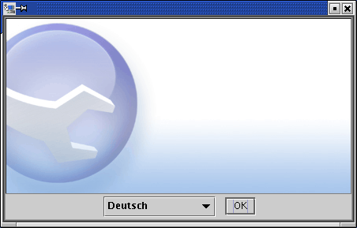LimeWire Startbildschirm
in der sie aus mehreren Sprachen, auch Deutsch, auswählen können, gefolgt von einem Hinweisfenster
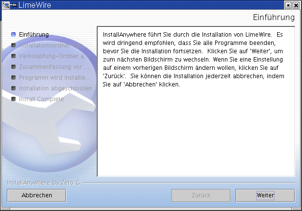Hinweisfenster
Der nächste Schritt legt das Zielverzeichnis fest.
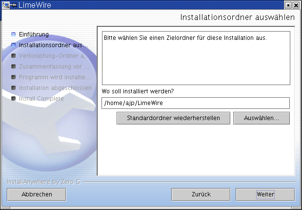drittes Installationsfenster
Vor der eigentlichen Installation bekommen Sie eine Zusammenfassung angezeigt, wo und wie LimeWire sich in Ihrem System eingerichten wird.
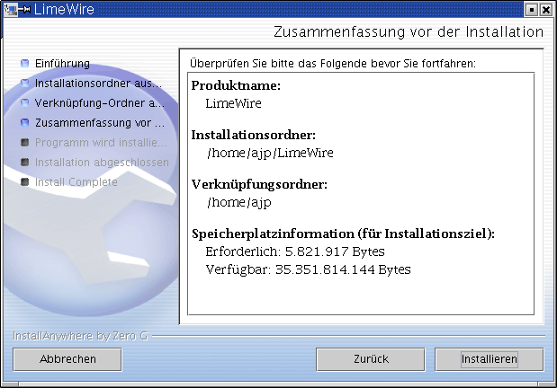Hinweisfenster
Sie haben nun LimeWire erfolgreich installiert
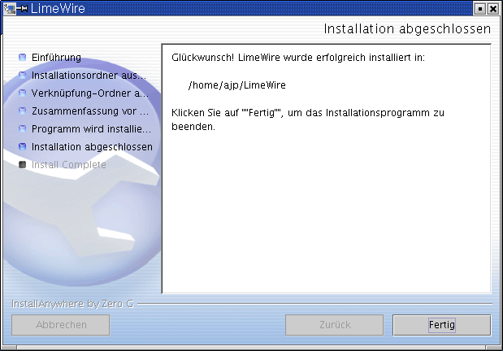Hinweisfenster
und nun ist es an der Zeit, LimeWire zu starten. Dazu dient das Script runLime.sh, das sich im Installationsverzeichnis befindet. Beim ersten Start werden noch einige Einstellungen abgefragt, einmal das Verzeichnis, das geteilt werden soll
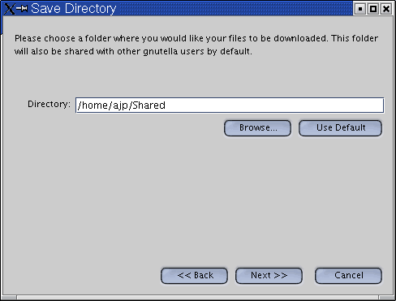Setupfenster
Hier sollten sie ein Verzeichnis angeben auf das nur sie Zugriff haben, keinesfalls jedoch der User root oder andere User mit einem hohem Zugriffsrecht. Als nächstes wird noch die Geschwindigkeit der Verbindung angegeben.
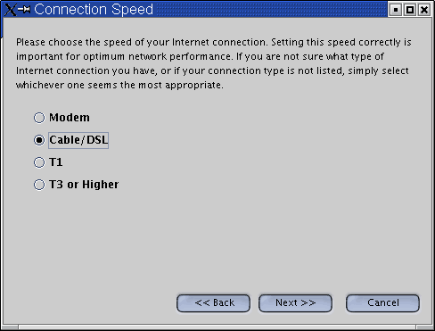Setupfenster
das wars dann auch schon. Nun sollten sie ein lauffähiges LimeWire ihr Eigen nennen können.
Verwendung des Programms LimeWire
Über ein X-Terminal wechselt man in das Unterverzeichnis und startet LimeWire mit: sh runLime.sh . Um die grundlegenden Einstellungen machen zu können, wählt man im Menü Hilfsmittel den Punkt Optionen an.
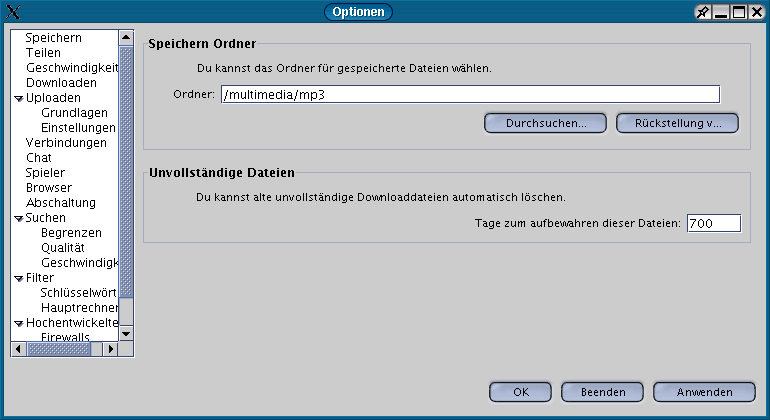Pfad Einstellungen
Dort kann man dann alle Optionen, die einem sinnvoll erscheinen, einstellen. Die wichtigsten Einstellungen sind die geteilten Ordner
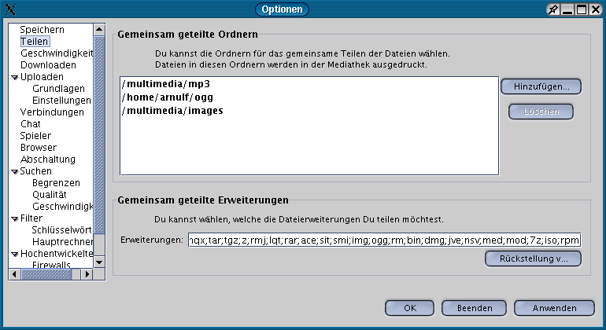Einstellung der geteilten Ordner
und die Einstellungen der Geschwindigkeit.
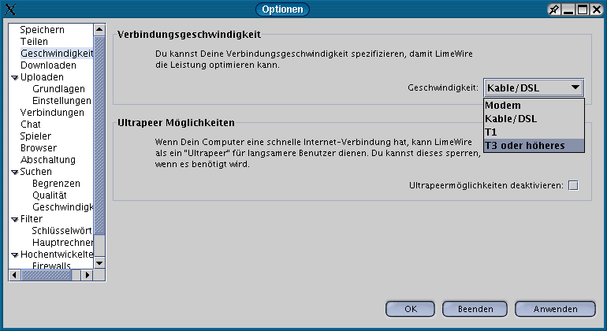Einstellungen der Geschwindigkeit
Wenn dann die Einstellungen alle beendet sind, kann man sein LimeWire in Aktion bewundern.
GTK-Gnutella¶
GTK-Gnutella finden sie unter en http://gtk-gnutella.sourceforge.net . GTK-Gnutella ist ein Gnutella Klon, der unter der GPL steht und auf jedem Unix lauffähig ist. Die Linuxversion gibt es als RPM, DEB, und als TAR.GZ.
GTK-Gnutella Installation
Grundlage der Installation ist GTK+ (en http://www.gtk.org) ab Version 1.2, libxml en http://www.libxml.org , eine bestehende Internetverbindung und XFree86.
RPM Version
rpm -i gtk-gnutella-0.91.0.rpm
DEB Version
dpkg -i gtk-gnutella_0.91.0-0
TAR.GZ Version
Kopiere die Datei gtk-gnutella-0.91.tar.gz an eine geeignete Stelle. Entpacke es mit tar -xvzf gtk-gnutella-0.91.tar.gz , wechsle in das entstandene Unterverzeichnis und führe ./configure aus, anschließend make, su und make install. Das Programm wird nach /usr/local/bin kopiert.
Verwendung des Programms GTK-Gnutella
Über ein X-Terminal wechselt man in das Unterverzeichnis und startet ./gtk-gnutella. Nach dem Start wird Verbindung mit dem Netzwerk aufgenommen. Im Menü config muss ein Verzeichnis für nicht komplette und ein Verzeichnis für komplett empfangende Dateien angegeben werden,
Pfadangaben
desweiteren natürlich ein Unterverzeichnis mit Ihren zum Filesharing vorgesehenden Dateien.
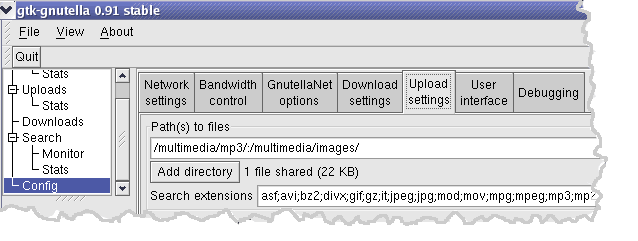Geteilte Ordner
So jetzt können Sie in der Suchmaske nach den gewünschten Dateien suchen.
Nutzung der Clients¶
Welche Dateien kann man bekommen? Wo es unter Napster nur möglich war, mp3 Dateien zu bekommen, ist es mit den moderneren Programmen, wie den hier vorgestellten, möglich, alle Dateien zu teilen. Darum sei hier auch gewarnt! Viren, Würmer und anderes Getier treibt sich genauso herum wie manipulierte Dateien der Musikbranche oder Videos mit falschen Titeln. Es ist bekannt, dass proprietäre Programme den eigenen Rechner ausspionieren. Die hier angesprochenen Programme sind Open Source, das heißt, offene Quellen helfen, dies zu verhindern.
Autor
Arnulf Pelzer webmaster@arnulfpelzer.de
Formatierung
Gabriel Welsche ai114@gmx.de
GnuPG-Handbuch¶
Vorwort¶
Vorwort¶
Grundgesetz Artikel 10, Absatz 1: Das Briefgeheimnis sowie das Post- und Fernmeldegeheimnis sind unverletzlich.
Eckpunkte der deutschen Kryptopolitik, verabschiedet vom deutschen Bundeskabinett am 2. Juni 1999: Der Einsatz kryptographischer Verfahren ist von außerordentlicher Bedeutung für eine effiziente technische Kriminalprävention. Dies gilt sowohl für die Gewährleistung der Authentizität und Integrität des Datenverkehrs wie auch für den Schutz der Vertraulichkeit.
Elektronische Daten spielen im Zeitalter des Computers und der weltweiten Vernetzung eine herausragende Rolle. Privatleute, Firmen, Politiker, Organisationen und Behörden machen zunehmend Gebrauch von der bequemen, schnellen und preisgünstigen Möglichkeit, per E-Mail zu kommunizieren, und nutzen elektronische Speichermedien (Festplatten, Disketten, CDROMs), um darauf ihre persönlichen Daten, Forschungsergebnisse, Firmengeheimnisse, Kunden- oder Patienteninformationen, Statisken, Notizen, Entwürfe, Umsatzzahlen usw. zu speichern. Bei der Abwicklung von Geschäftsvorgängen (Bestellung, Bezahlung, Verträge) spielt das Internet eine immer wichtigere Rolle. Den Weg, den Ihre Daten über das Internet zu einer Zieladresse gehen, können Sie weder vorhersagen noch vorherbestimmen. Alle Daten, die unverschlüsselt (oder mit einer unsicheren Methode verschlüsselt) über’s Netz gehen, sind quasi öffentlich. Man muß davon ausgehen, das diese Daten - von wem auch immer - mitgelesen oder manipuliert und - zu welchem Zweck auch immer - mißbraucht werden können. Daten, die Sie auf Ihrem Computer abgespeichert haben, sind meist nicht sicher vor unbefugten Zugriffen. Viele Rechner sind nicht einmal mit einem Paßwortschutz versehen, und selbst bei vorhandenem Paßwortschutz gibt es vielfältige Möglichkeiten, an diese Daten zu gelangen. Noch nie war es so einfach und effektiv möglich, in Ihre Privatsphäre einzudringen oder Zugang zu Ihren vertraulichen Informationen zu erlangen.
Warum Kryptographie?¶
Kryptographie (die Wissenschaft von der Verschlüsselung) gewährleistet
Vertraulichkeit Integrität und Authentizität
Ihrer Daten und Ihrer Kommunikation.
Wenn Sie E-Mails unverschlüsselt verschicken, müssen Sie sich darüber im klaren sein, dass deren Inhalt weniger vertraulich ist als bei einer Postkarte. Die Administratoren sowohl Ihres Mailservers als auch des Empfängers könnten ohne weiteres ihre E-Mails lesen, abfangen oder verändern. Auf ihrem Weg zum Empfänger durchlaufen E-Mails unter Umständen etliche Rechner. Jeder, der Zugang zu einem dieser Rechner hat, auch jeder Cracker, der durch irgendwelche Sicherheitslöcher in diese Rechner eindringt, kann mühelos auf Ihre E-Mails zugreifen. Unter Umständen werden Ihre E-Mails sogar auf der Festplatte eines dieser Zwischenrechner gespeichert. Auch könnte der Carrier, also der, der die Datenleitungen zu Verfügung stellt (in Deutschland meist die Deutsche Telekom oder Colt-Telekom) die Datenpakete, die über seine Leitungen gehen, gezielt filtern. Es ist auch nicht auszuschließen, daß jemand diese Leitungen von außen anzapft.
Es geht aber nicht allein darum, sich gegen Cracker oder korrupte Sytemadministratoren zu schützen, sondern auch gegen das planmäßige Eindringen staatlicher Organisationen (des eigenen oder eines anderen Landes) in Ihre Privatsphäre. Die Geheimdienste vieler Länder filtern heutzutage nicht nur Telefongespräche, sondern zunehmend auch die Daten, die über das Internet transportiert werden, um daraus wirtschaftlich, politisch oder für die Strafverfolgung nutzbare Daten zu gewinnen. Eine Studie der Kommission zur Technikfolgeabschätzung des Europaparlamentes (STOA - Scientific and Technological Options Assessment) über die Entwicklung von Überwachungstechnologie und dem Risiko des Mißbrauchs wirtschaftlicher Informationen zeigt beispielsweise, daß das Belauschen elekronischer Kommunikation bereits systematisch und in großem Stil betrieben wird. Eines der prominentesten Beispiele ist das ECHELON-System, das von den USA, Kanada, Großbritannien, Australien und Neuseeland gemeinsam unterhalten wird. Ursprünglich zum Belauschen des Ostblocks konzipiert, sammeln heute über 120 Stationen mit großem Aufwand Informationen unter anderem durch Abhören von Satellitenverbindungen und Transatlantikkabeln, um Daten über Einzelpersonen, Organisationen, Regierungen, Wirtschaftsunternehmen, Forschungsprojekte und internationale Institutionen zu gewinnen. Auf europäischer Ebene plant die Arbeitsgruppe Polizeiliche Zusammenarbeit des Europa-Rats konkrete Maßnahmen für die Überwachung des Telekommunikations-Verkehrs. Das ENFOPOL 98 genannte Dokument schließt ausdrücklich das Internet und zukünftige Technologien mit ein.
Auch Daten, die unverschlüsselt auf der Festplatte Ihres Rechners oder einem anderen Speichermedium liegen, sind vor unbefugten Zugriffen nicht sicher. Jemand könnte sich über eine Netzwerkverbindung Zugang verschaffen bzw. sich durch Diebstahl oder Einbruch in Besitz Ihrer Daten bringen. Wenn Sie Ihre Daten verschlüsselt haben, kann ein Angreifer - selbst wenn er physisch im Besitz der Daten ist - nicht auf diese zugreifen.
Ein weiteres Problem ist das Authentifizieren von elektronischen Daten. Wie bereits oben erwähnt, ist es möglich, die Absenderadresse und den Inhalt eines E-Mails zu fälschen. Gerade bei offizieller oder geschäftlicher Korrespondenz, dem Austausch von Dokumenten und dem Abwickeln von Geschäftsvorgängen über das Internet ist es wichtig, den Absender eindeutig zu identifizieren und die Integrität der Daten überprüfen zu können.
Die einzige Möglichkeit, um Vertraulichkeit, Integrität und Authentizität von elektronischen Dokumenten zu gewährleisten, ist die Benutzung wirkungsvoller kryptographischer Verfahren, wie sie etwa bei GnuPG Anwendung finden. Durch Verschlüsselung erreichen Sie, dass Ihre Daten nur von den Personen gelesen werden können, für die sie auch bestimmt sind. E-Mails werden quasi in einen Briefumschlag gesteckt, der nur vom Empfänger geöffnet werden kann. Darüberhinaus wird durch digitale Unterschriften eine eindeutige Zuordnung zum Urheber der Signatur möglich, und Manipulationen des Dokumentes oder Vortäuschen eines falschen Urhebers (Absenders) lassen sich feststellen.
In der Elektronischen Datenverarbeitung sollte für Sie die gleiche Sicherheit selbstverständlich sein wie in anderen Bereichen. Wahrscheinlich würden Sie weder ein intimes Liebesgeständnis, noch eine Mitteilung an Ihren Rechtsanwalt, noch Ihre wissenschaftliche oder geschäftliche Korrespondenz per Postkarte schicken. Auch lassen Sie wahrscheinlich keine vertraulichen Dokumente offen in Ihrer Wohnung oder an Ihrem Arbeitsplatz liegen. Ebensowenig würden Sie einen Kaufvertrag ohne rechtsgültige Unterschrift akzeptieren. Verschlüsselung und digitale Signaturen sollten also ein alltäglicher Vorgang für Sie sein. Ob Sie nun berufliches oder privates Interesse am Schutz Ihrer Daten haben: mangelndes Problembewußtsein ist das größte Risiko.
Warum GnuPG?¶
GnuPG (der GNU Privacy Guard) ist ein Programm zum Verschlüsseln und Signieren von digitalen Daten und arbeitet unabhängig von den jeweiligen Datenformaten (E-Mail, Textdateien, Bilddaten, Sourcecode, Datenbanken, komplette Festplatten usw.). Es entspricht der im RFC2440 festgelegten OpenPGP-Spezifikation und ist kompatibel zu PGP 5.x der Firma NAI. GnuPG verwendet dazu hauptsächlich ein hybrides Verfahren mit öffentlichem Schlüssel. Zum Verschlüsseln kann GnuPG aber ebenso ausschließlich symmetrische Verfahren einsetzen.
GnuPG ist derzeit eine der sichersten Anwendungen zum Verschlüsseln und Signieren von Daten. Bei sorgfältiger Anwendung ist eine Verschlüsselung mit GnuPG auch in absehbarer Zukunft nicht zu knacken. Im Gegensatz zu anderen Verschlüsselungsprogrammen wie beispielsweise PGP von der Firma NAI ist GnuPG freie Software. Das bedeutet unter anderem, dass der Programm-Quellcode frei verfügbar, frei von Patenten und frei von einschränkenden Lizenzbedingungen ist [2]. Jeder Anwender kann so das Programm auf seine Integrität hin prüfen. Das heißt beispielsweise, dass sich Hintertüren (Key Recovery) oder ‘Generalschlüssel’ (Key Escrow) nicht versteckt einbauen lassen und jeder Anwender die Möglichkeit hat, Fehler zu beseitigen, das Programm zu verbessern oder nach seinen Vorstellungen zu verändern. Darüberhinaus ist GnuPG nicht - wie beispielsweise amerikanische Verschlüsselungsprogramme - durch Ausfuhrbestimmungen künstlich in seiner Funktionalität und Sicherheit beschränkt.
Aufbau des Buches¶
Die grundlegenden Konzepte und Hintergründe der Verschlüsselung und digitaler Signaturen werden in Kapitel 1 Konzepte behandelt. Kapitel 2 Grundlagen führt in die Arbeit mit GnuPG ein; die wichtigsten Funktionen, Arbeitsschritte und Optionen werden dort am Beispiel erklärt. In Kapitel 3 Schlüsselverwaltung wird ausführlich auf das Editieren, Authentifizieren und Verwalten von Schlüsseln eingegangen. Auf die wichtigsten Aspekte des praktischen Einsatzes und das Web of Trust wird in Kapitel 4 GnuPG im Alltagsgebrauch eingegangen. Kapitel 5 gibt einen kurzen Überblick über die Kryptographie-Gesetzgebung. Im Anhang des Buches finden Sie ein ausführliches Glossar, das die verwendeten Fachausdrücke erklärt, ein Literaturverzeichnis, eine Sammlung von Internet-Ressourcen sowie eine Anleitung zur Installation von GnuPG.
Fußnoten¶
Cracker Eine Person, die vorsätzlich, unbefugterweise und oft mit bösartiger Absicht in fremde Rechnersysteme eindringt, im deutlichen Gegensatz zu Hacker, womit ein gutmeinender Computer-Freak gemeint ist (RFC 1983)
Lizenzbedingungen GnuPG steht unter der sogenannten GNU General Public License (GPL) der Free Software Foundation.
Autor
Mike Ashley
Formatierung
Matthias Hagedorn matthias.hagedorn@selflinux.org
Konzepte¶
Beschreibung
GnuPG verwendet mehrere kryptographische Verfahren wie beispielsweise symmetrische Verschlüsselung, Public-Key-Verschlüsselung und Einweg-Hashing. Natürlich können Sie GnuPG auch ohne tiefere Kenntnis dieser Konzepte benutzen, doch wenn Sie GnuPG effektiv einsetzen möchten, sollten Sie ein wenig Hintergrundwissen haben.
Dieses Kapitel führt in die grundlegenden kryptographischen Konzepte ein, wie sie von GnuPG benutzt werden. Andere Bücher behandeln diese Themen viel detaillierter. Empfehlenswerte Bücher zum tieferen Studium sind beispielsweise en Bruce Schneiers “Angewandte Kryptographie” oder Reinhard Wobsts “Abenteuer Kryptologie”. Weitere Literaturhinweise finden sich im Anhang B.
Symmetrische Verschlüsselung¶
Eine symmetrische Verschlüsselung benutzt zum Ver- und Entschlüsseln denselben Schlüssel. Zwei Korrespondenzpartner, die eine symmetrische Verschlüsselung benutzen, müssen sich vorher über den Schlüssel einigen. Mit diesem Schlüssel verschlüsselt der Absender die Nachricht und schickt sie an den Empfänger, der sie unter Benutzung desselben Schlüssels wiederherstellt. Nach diesem Prinzip funktionierte beispielsweise die deutsche Enigma. Die jeweiligen Tages-Schlüssel wurden als Code-Bücher ausgegeben, und jeden Tag konsultierte dann ein Funker seine Kopie des Code-Buchs, um den aktuellen Tagesschlüssel zu ermitteln, mit dem der Funkverkehr für den betreffenden Tag dann ver- und entschlüsselt wurde. Zu den modernen Beispielen für symmetrische Verschlüsselungen gehören z.B. Blowfish und IDEA.
Ein gutes Verschlüsselungverfahren legt den Schwerpunkt der Sicherheit auf die Geheimhaltung des Schlüssels und nicht auf die Geheimhaltung des verwendeten Algorithmus. Mit anderen Worten, es ist keine Hilfe für einen Angreifer, wenn das Verschlüsselungsverfahren bekannt ist, solange er nicht im Besitz des Schlüssels selbst ist. Die von GnuPG benutzten Verschlüsselungsverfahren beruhen auf diesen Prinzipien.
Da die gesamte Sicherheit auf dem Schlüssel beruht, ist es wichtig, dass der Schlüssel mit verfügbaren Mitteln nicht zu erraten ist. Daraus folgt, dass der Vorrat an möglichen Schlüsseln, der sogenannte key space, möglichst groß sein muß. Während seiner Zeit in Los Alamos war der Nobelpreisträger Richard Feynman berühmt für seine Fähigkeit, Safes zu knacken. Um es noch geheimnisvoller zu machen, schleppte er einen Satz von Werkzeugen mit, zu denen ein altes Stethoskop gehörte. In Wirklichkeit wandte er jedoch eine ganze Reihe von Tricks an, um die Zahl der Kombinationen, die er ausprobieren mußte, zu reduzieren; dann fing er an zu raten, bis er die richtige Kombination fand. Mit anderen Worten, er verringerte die Größe des key space.
Die Briten benutzten im 2. Weltkrieg Maschinen, um Schlüssel zu erraten. Die deutsche Enigma hatte einen sehr großen key space, doch die Briten bauten spezialisierte Rechenmaschinen, Bombes genannt, um systematisch alle Schlüssel auszuprobieren, bis der jeweilige Tagesschlüssel gefunden war. Manchmal fanden sie den Tagesschlüssel innerhalb der Benutzungsdauer des neuen Schlüssels, an manchen Tagen fanden sie den richtigen Schlüssel überhaupt nicht.
Heute können Computer sehr schnell Schlüssel erraten, und eben deshalb ist in modernen Verschlüsselungsverfahren die Schlüsselgröße äußerst wichtig. Die DES-Verschlüsselung zum Beispiel benutzt einen 56-Bit-Schlüssel; das bedeutet, dass es 256, also genau 72.057.594.037.927.936 mögliche Schlüssel gibt (das sind mehr als 72 Billiarden). Obwohl das eine sehr große Zahl ist, kann ein normaler Mehrzweckcomputer den gesamten key space innerhalb von Tagen prüfen. Ein spezialisierter Computer braucht hierfür möglicherweise nur ein paar Stunden. Die moderneren Verschlüsselungsverfahren wie beispielsweise Blowfish und IDEA benutzen sämtlich 128-Bit-Schlüssel, was bedeutet, dass es 2128 (340.282.366.920.938.463.463.374.607.431.768.211.456!!!) mögliche Schlüssel gibt. Dies sind so unglaublich viel mehr Kombinationen als bei einer 56-Bit-Verschlüsselung, dass sogar selbst dann, wenn man alle Computer der Welt zusammen arbeiten ließe, das bisherige Alter des Universums noch eine zu kurze Zeit sein könnte, um den richtigen Schlüssel zu finden.
Public-Key-Verschlüsselung¶
Das Hauptproblem bei symmetrischen Verschlüsselungen ist nicht die Sicherheit der eingesetzten Verfahren, sondern der Austausch der Schlüssel. Wenn zwei Kommunikationspartner einmal die Schlüssel ausgetauscht haben, kann der betreffende Schlüssel für sicheren Datenaustausch benutzt werden. Die Frage ist nur, auf welchem sicheren Wege der Schlüsselaustausch stattgefunden hat. Wahrscheinlich wäre es für einen Angreifer viel leichter, den Schlüssel abzufangen, als alle möglichen Schlüssel im key space auszuprobieren (eine Erfahrung, die die Deutschen mit ihrer Enigma auch machen mußten). Ein weiteres Problem ist die Anzahl der insgesamt benutzten Schlüssel. Wenn die Zahl der Leute, die miteinander kommunizieren wollen, n beträgt, so werden insgesamt n(n-1)/2 Schlüssel (also beispielsweise 45 Schlüssel bei 10 Leuten) benötigt. Dies mag für eine geringe Personenzahl noch angehen, läßt sich aber bei großen Personengruppen nicht mehr handhaben.
Der Sinn von Verschlüsselungsverfahren mit öffentlichem Schlüssel besteht darin, dass das Sicherheitsrisiko beim gegenseitigen Schlüsselaustausch gänzlich vermieden wird. Jeder hat ein Schlüsselpaar mit einem öffentlichen und einem geheimen Schlüssel. Zum Verschlüsseln einer Nachricht benutzt man den öffentlichen Schlüssel des Empfängers, und nur dieser kann sie mit seinem geheimen Schlüssel wieder entschlüsseln.
Dadurch löst man das Problem des Schlüsselaustausches bei symmetrischer Verschlüsselung. Sender und Empfänger brauchen sich nicht auf einen Schlüssel zu einigen. Erforderlich ist nur, daß der Absender eine Kopie des öffentlichen Schlüssels des Empfängers besitzt. Dieser eine öffentliche Schlüssel kann von jedem benutzt werden, der mit dem Empfänger kommunizieren will. Somit sind dann insgesamt nur n Schlüsselpaare notwendig, wenn n Leute verschlüsselt miteinander kommunizieren wollen.
Die Verschlüsselung mit öffentlichem Schlüssel beruht auf sogenannten Falltür-Algorithmen bzw. Einweg-Hashes. Das sind Funktionen, die leicht zu berechnen sind, doch umgekehrt ist es praktisch unmöglich, aus dem Ergebnis dieser Hash-Funktionen wieder den Ausgangswert zu berechnen. So ist es z.B. leicht, zwei Primzahlen miteinander zu multiplizieren, um eine Nichtprimzahl zu erhalten, es ist aber schwer, eine Nichtprimzahl in ihre Primfaktoren zu zerlegen. Falltür-Algorithmen sind ähnlich, haben aber eine Falltür. Das heißt: Wenn ein Stück Information bekannt ist, kann man leicht die Umkehrfunktion berechnen. Wenn Sie z.B. eine aus zwei Primfaktoren bestehende Zahl haben, so macht die Kenntnis eines der Faktoren es leicht, den zweiten zu berechnen.
Angenommen, ein Verfahren beruhe auf der Bildung einer Zahl aus Primfaktoren, dann enthält der öffentliche Schlüssel eine aus zwei großen Primfaktoren zusammengesetzte Zahl, und das Verschlüsselungsverfahren benutzt dann diese Nichtprimzahl zum Verschlüsseln der Nachricht. Das Verfahren zum Wiederherstellen dieser Nachricht erfordert dann die Kenntnis der Primfaktoren. So ist die Entschlüsselung möglich, wenn Sie den privaten Schlüssel haben, der einen der Faktoren enthält, ist aber praktisch unmöglich, wenn Sie ihn nicht haben.
Wie bei guten symmetrischen Verschlüsselungsverfahren beruht die Sicherheit auch bei Public-Key-Verfahren ausschließlich auf dem Schlüssel. Aus diesem Grund kann man die Schlüsselgröße als ein Maß für die Sicherheit des Systems nehmen. Allerdings kann man die Größe eines symmetrischen Schlüssels nicht mit der von Public-Key-Verfahren vergleichen, um Rückschlüsse auf deren relative Sicherheit ziehen zu können. Bei einem Brute-Force-Angriff auf eine symmetrische Verschlüsselung mit einer Schlüsselgröße von 80 Bit muß der Angreifer bis zu 280-1 Schlüssel ausprobieren, um den richtigen Schlüssel zu finden. Bei einem Brute-Force-Angriff auf eine Public-Key-Verschlüsselung muß der Angreifer bei einer Schlüsselgröße von 512 Bit eine in 512 Bit codierte (bis zu 155 Dezimalstellen umfassende) Nichtprimzahl in ihre Primfaktoren zerlegen. Der Rechenaufwand für den Angriff weist je nach der Verschlüsselung gewaltige Unterschiede auf. Während 128 Bit für symmetrische Schlüssel ausreichen, werden angesichts der heutigen Verfahren zur Faktorisierung grosser Zahlen für die meisten Zwecke öffentliche Schlüssel mit 1024 Bits empfohlen.
Hybride Verschlüsselungsverfahren¶
Public-Key-Verschlüsselung ist kein Allheilmittel. Viele symmetrische Verfahren sind vom Sicherheitsstandpunkt aus betrachtet wirksamer, und die Ver- und Entschlüsselung ist bei Public-Key-Verfahren aufwendiger als bei entsprechenden symmetrischen Systemen, sie sind aber nichtsdestoweniger ein wirksames Werkzeug für den sicheren Austausch von symmetrischen Schlüsseln. Das ist die Idee bei hybriden Verschlüsselungssystemen.
Eine hybride Verschlüsselung benutzt sowohl eine symmetrische Verschlüsselung als auch ein asymmetrisches Public-Key-Verfahren. Die eigentliche Nachricht wird mit einem symmetrischen Sitzungsschlüssel verschlüsselt, welcher von einem Zufallsgenerator erzeugt wird. Dieser Sitzungsschlüssel wird dann mit dem öffentlichen Schlüssel des Empfängers verschlüsselt.
Sowohl PGP als auch GnuPG benutzen hybride Verschlüsselungsverfahren. Der mit dem öffentlichen Schlüssel des Empfängers verschlüsselte Sitzungsschlüssel und die symmetrisch verschlüsselte Nachricht werden automatisch zusammengefaßt. Der geheime Schlüssel des Empfängers wird zum Entschlüsseln des Sitzungsschlüssels verwendet, und dieser wird dann zum Entschlüsseln der eigentlichen Nachricht verwendet.
Ein hybrides Verschlüsselungsverfahren ist immer nur so gut wie der unsicherste Teil, egal ob das die Public-Key-Verschlüsselung oder die symmetrische Verschlüsselung ist. Da die symmetrischen Sitzungsschlüssel bei jedem Vorgang neu erzeugt werden, könnte ein Angreifer - selbst wenn er einen Sitzungsschlüssel entschlüsseln könnte - nur die mit dem betreffenden Sitzungsschlüssel verschlüsselte Nachricht entschlüsseln. Er müßte also für jede weitere Nachricht, die er lesen möchte, erneut einen Sitzungsschlüssel entschlüsseln.
Digitale Unterschriften¶
Eine Hash-Funktion [*]ist eine kryptographische Prüfsumme. Durch eine eindeutige Funktion wird aus einer Datei eine wesentlich kürzere Datensequenz erzeugt, die ein eindeutiges Abbild der Ursprungsdatei ist.
Die digitale Unterschrift eines Dokumentes ist das Ergebnis der Anwendung einer Hash-Funktion auf das Dokument. Um für digitale Unterschriften brauchbar zu sein, muß die Hash-Funktion jedoch zwei wichtige Eigenschaften haben:
Erstens sollte es unmöglich sein, zwei Dokumente zu finden, die dasselbe Hash-Ergebnis haben. Zweitens sollte es bei einem gegebenen Hash-Ergebnis schwer sein, das ursprünglich Dokument wiederherzustellen, aus dem dieser Hash erzeugt wurde.
Einige Public-Key-Verfahren könnten auch zum Unterschreiben von Dokumenten benutzt werden. [**] Der Unterzeichner verschlüsselt das Dokument mit seinem privaten Schlüssel. Jeder, der die Unterschrift prüfen und das Dokument sehen will, benutzt einfach den öffentlichen Schlüssel des Unterzeichners, um das Dokument zu entschlüsseln. Dieses Verfahren besitzt in der Tat die beiden Eigenschaften, die eine gute Hash-Funktion braucht, doch ist es in der Praxis zu langsam, um effektiv nutzbar zu sein.
Besser ist es, spezielle Hash-Algorithmen zu benutzen, welche diese beiden wichtigen Eigenschaften aufweisen; wie beispielsweise SHA1 und RIPE-MD160. Bei einem solchen Verfahren wird der Hash-Wert eines Dokumentes als Unterschrift verwendet. Man kann die Unterschrift dadurch prüfen, dass man auf die Kopie des Dokumentes ebenfalls die Hash-Funktion anwendet und den Hash-Wert, den man erhält, mit dem Hash-Wert des Originaldokumentes vergleicht. Wenn beide Werte übereinstimmen, dann sind beide Dokumente identisch.
Das Problem ist jetzt natürlich, Hash-Funktionen für digitale Unterschriften zu benutzen, ohne einem Angreifer das Manipulieren der Unterschrift zu ermöglichen. Wenn das Dokument und die Unterschrift unverschlüsselt geschickt werden, könnte ein Angreifer das Dokument verändern und eine entsprechende neue xxUnterschrift erzeugen, ohne dass der Empfänger es merkt. Wenn nur das Dokument verschlüsselt wird, könnte ein Angreifer die Unterschrift verfälschen und so das Scheitern einer Unterschriftsprüfung verursachen.
Eine dritte Möglichkeit besteht darin, ein hybrides Verfahren zu benutzen, um sowohl die Unterschrift als auch das Dokument zu verschlüsseln. Der Unterzeichner benutzt seinen privaten Schlüssel, und jedermann kann dessen öffentlichen Schlüssel benutzen, um die Unterschrift und das Dokument zu prüfen. Dies klingt zwar gut, ist aber in Wirklichkeit Unsinn. Wenn dieses Verfahren das Dokument wirklich sichern könnte, würde es dieses auch gegen Verfälschung sichern, und dann wäre die Unterschrift gar nicht nötig. Das ernstlichere Problem ist jedoch, dass dies keinen Schutz gegen Verfälschung bietet, weder für die Unterschrift noch für das Dokument. Bei diesem Verfahren wird nur der Sitzungsschlüssel für die symmetrische Verschlüsselung unter Benutzung des privaten Schlüssels des Unterzeichners verschlüsselt. Jeder kann den öffentlichen Schlüssel benutzen, um den Sitzungsschlüssel wiederherzustellen. Deshalb ist es für einen Angreifer einfach, den Sitzungsschlüssel wiederherzustellen und ihn zum Verschlüsseln von Ersatzdokumenten und Ersatzunterschriften zu benutzen, die er dann im Namen des Absenders an andere schickt.
Ein wirklich funktionierendes Verfahren ist es, nur die Unterschrift mit einem Public-Key-Verfahren zu verschlüsseln. Das heißt, es wird der geheime Schlüssel des Unterzeichners benutzt, um die digitale Unterschrift zu erzeugen, die dann jeder mit dem dazugehörigen öffentlichen Schlüssel checken kann. Das unterzeichnete Dokument kann man unverschlüsselt verschicken, wenn es öffentlich ist oder verschlüsselt, wenn es vertraulich ist. Wenn das Dokument nach dem Unterzeichnen verändert wurde, wird die Unterschriftsprüfung negativ ausfallen. Der von GnuPG standardmäßig benutzte Digital Signature Algorithm (DSA) arbeitet nach dieser Methode.
Fußnoten¶
Eine einfache Hash-Funktion ist f(x) = 0 für alle ganzen Zahlen x. Eine interessantere Hash-Funktion ist f(x) = x mod 37, welche x auf den Rest von x dividiert durch 37 abbildet.
Die Verschlüsselung muß die Eigenschaft haben, dass der aktuelle öffentliche oder private Schlüssel vom Verschlüsselungsverfahren als der öffentliche Schlüssel benutzt werden könnte. RSA ist ein Beispiel eines solchen Verfahrens, ElGamal dagegen nicht.
Autor
Mike Ashley
Formatierung
Matthias Hagedorn matthias.hagedorn@selflinux.org
Grundlagen¶
Beschreibung
Dieses Kapitel führt in die wesentlichen Funktionen des GNU Privacy Guard ein. Hier lernen Sie, wie man Schlüsselpaare erzeugt, Schlüssel austauscht und überprüft, Dokumente verschlüsselt, entschlüsselt und durch digitale Unterschriften authentifiziert.
Wie bereits in Kapitel concepts erwähnt, bedient sich GnuPG eines Public-Key-Verfahrens, um eine sichere Kommunikation zu gewährleisten. In einem solchen System hat jeder Benutzer ein Schlüsselpaar, bestehend aus einem geheimen Schlüssel und einem öffentlichen Schlüssel. Der geheime Schlüssel darf unter keinen Umständen jemand anderem zugänglich sein. Den öffentlichen Schlüssel sollte man für jeden, mit dem man kommunizieren möchte, zugänglich machen.
GnuPG benutzt ein erweitertes Schema, bei dem jeder Benutzer jeweils ein primäres Schlüsselpaar hat und optional weitere untergeordnete Schlüsselpaare haben kann. Das primäre und das untergeordnete Schlüsselpaar werden gebündelt, um die Schlüsselverwaltung zu erleichtern; das Bündel kann vereinfacht als ein Schlüsselpaar betrachtet werden.
Erzeugen eines neuen Schlüsselpaares¶
Damit Sie GnuPG zum Verschlüsseln, Entschlüsseln oder Signieren einsetzen können, benötigen Sie ein Schlüsselpaar, das aus einem geheimen und einem öffentlichen Schlüssel besteht. Mit der Kommandozeilen-Option–gen-key können Sie ein neues primäres Schlüsselpaar erzeugen: user@linux ~$ gpg –gen-key gpg (GnuPG) 1.0.1; Copyright (C) 1999 Free Software Foundation, Inc. This program comes with ABSOLUTELY NO WARRANTY. This is free software, and you are welcome to redistribute it under certain conditions. See the file COPYING for details.
- Bitte wählen Sie, welche Art von Schlüssel Sie möchten:
- DSA und ElGamal (voreingestellt)
(2) DSA (nur signieren/beglaubigen) (4) ElGamal (signieren/beglaubigen und verschlüsseln)
Ihre Auswahl?
Mit GnuPG können Sie verschiedene Typen von Schlüsselpaaren erzeugen, doch muß der primäre Schlüssel Unterschriften liefern können. Es gibt daher nur drei Optionen. Option 1 erzeugt wirklich zwei Schlüsselpaare, nämlich ein DSA-Schlüsselpaar, das nur zum Unterschreiben geeignet ist, und außerdem noch ein untergeordnetes ElGamal-Schlüsselpaar für die Verschlüsselung. Option 2 erzeugt nur das DSA-Schlüsselpaar. Option 4 [1] erzeugt ein einzelnes ElGamal-Schlüsselpaar, das sowohl zum Unterzeichnen als auch zum Verschlüsseln verwendbar ist. In allen Fällen ist es möglich, später noch weitere Unterschlüssel für die Verschlüsselung und Unterzeichnung hinzuzufügen. In der Regel sollten Sie hier die Standardoption auswählen.
Als nächstes wählen Sie die Schlüsselgröße. Bei einem DSA-Schlüssel muß diese zwischen 512 und 1024 Bits liegen, ein ElGamal-Schlüssel dagegen kann - zumindest theoretisch - eine beliebige Größe haben. Der GnuPG erfordert es allerdings, dass die Schlüssel nicht kleiner als 768 Bits sind. Wenn Option 1 mit einer Schlüsselgröße von mehr als 1024 Bit gewählt wurde, hat der ElGamal-Schlüssel die verlangte Größe, doch der DSA-Schlüssel wird maximal 1024 Bits haben. Der DSA Schlüssel wird 1024 Bits haben. Es wird ein neues ELG-E Schlüsselpaar erzeugt.
kleinste Schlüssellänge ist 768 Bit standard Schlüssellänge ist 1024 Bitgrößte sinnvolle Schlüssellänge ist 2048 Bit
Welche Schlüssellänge wünschen Sie? (1024)
Je größer der Schlüssel ist, desto sicherer ist er gegen Brute-Force-Angriffe, doch sollte für die meisten Zwecke die Standard-Schlüsselgröße ausreichend sein, da es einfacher wäre, die Verschlüsselung zu umgehen, als sie zu knacken. Außerdem wird mit zunehmender Schlüsselgröße die Ver- und Entschlüsselung langsamer, und auch die Unterschrift wird länger. Einmal festgelegt, kann die Schlüsselgröße nicht nachträglich geändert werden.
Schließlich müssen Sie noch ein Verfallsdatum wählen. Wenn Option 1 gewählt wurde, gilt dieses Verfallsdatum sowohl für die ElGamal- als auch die DSA-Schlüsselpaare. Bitte wählen Sie, wie lange der Schlüssel gültig bleiben soll.
0 = Schlüssel verfällt nie<n> = Schlüssel verfällt nach n Tagen <n>w = Schlüssel verfällt nach n Wochen <n>m = Schlüssel verfällt nach n Monaten <n>y = Schlüssel verfällt nach n Jahren
Der Schlüssel bleibt wie lange gültig? (0)
Für die meisten Fälle reicht ein Schlüssel ohne Verfallsdatum völlig aus. Allerdings sollte man das Verfallsdatum immer sorgfältig auswählen; denn, obwohl es sich auch noch nachträglich ändern läßt, kann es umständlich sein, das geänderte Verfallsdatum allen Ihren Kommunikationspartnern mitzuteilen.
Im nächsten Schritt müssen Sie eine Benutzer-ID (Benutzer-Kennung) angeben. Das dient dazu, den soeben erzeugten Schlüssel einer realen Person zuzuordnen. Sie benötigen eine User-ID, um Ihren Schlüssel eindeutig zu machen; das Programm baut diese User-ID aus Ihrem echten Namen, einem Kommentar und Ihrer E-Mail-Adresse in dieser Form auf: “Heinrich Heine (Der Dichter) <heinrichh@duesseldorf.de>’‘
Ihr Name (“Vorname Nachname”):
Es wird zunächst nur eine Benutzer-ID erzeugt, doch können Sie später weitere Benutzer-IDs hinzufügen, wenn Sie den Schlüssel in verschiedenen Situationen benutzen wollen, also beispielsweise bei der Arbeit in Ihrer Firma oder für Ihre politische Arbeit. Die Benutzer-ID sollten Sie mit aller Sorgfalt wählen, da Sie sie später nicht mehr ändern können.
Damit Ihr geheimer Schlüssel nicht von anderen mißbraucht werden kann, wird er von GnuPG mit einem symmetrischen Verfahren verschlüsselt. Dazu geben Sie ein sogenanntes Mantra (einen Paßwort-Satz) ein, das Sie wiederum jedesmal benötigen, wenn Sie auf Ihren geheimen Schlüssel zugreifen. Sie benötigen ein Mantra, um den geheimen Schlüssel zu schützen.
Geben Sie das Mantra ein:
Die Länge des Mantra ist theoretisch unbegrenzt. Sie sollten es mit Sorgfalt auswählen. Unter dem Gesichtspunkt der Sicherheit ist das Mantra einer der schwächsten Punkte im GnuPG (wie auch in anderen Verschlüsselungssystemen mit öffentlichen Schlüsseln), da es Ihr einziger Schutz ist, falls jemand in den Besitz Ihres privaten Schlüssels kommt.
Man sollte für das Mantra keine Wörter aus einem Wörterbuch oder Lexikon nehmen und nicht nur die Buchstaben des Alphabets, sondern auch Sonderzeichen verwenden. Je länger das Mantra ist, desto sicherer ist es, aber andererseits sollten Sie sich das Mantra auch gut merken können; nichts ist fataler als das Mantra auf einem Zettel oder in einer Datei zu notieren. Ein gut gewähltes Mantra ist entscheidend für Ihre Datensicherheit.
Es ist beispielsweise keine gute Idee, einen bekannten Ausspruch oder ein Zitat einer bekannten Persönlichkeit als Mantra zu nehmen. Das würde die Chance erhöhen, das Mantra zu erraten: ein Angreifer könnte einfach den Computer eine Zitatenliste durchprobieren lassen. Am besten denkt man sich einen unsinnigen Satz wie z.B: Die Currywurst schmeckt nach Zimt und Zucker oder Helmut Kohl ist bekanntermaßen Vegetarier aus. Ihrer Phantasie sind hierbei keine Grenzen gesetzt. Wenn Sie auch noch ein paar Rechtschreibfehler und Sonderzeichen einbauen, ist ein Wörterbuchangriff praktisch unmöglich: Dat Körriwurst schmöckt nach #imt und #ucker. Benutzen Sie auch auf keinen Fall eines der soeben aufgeführten Beispiele!!.
Erzeugen einer Widerrufurkunde
Nach dem Erzeugen Ihres Schlüsselpaars sollten Sie sofort mit der Option–gen-revoke eine Widerrufurkunde für Ihre Schlüssel erzeugen. Wenn Sie Ihr Mantra vergessen oder wenn Ihr privater Schlüssel kompromittiert oder verloren gegangen ist, können Sie mit dieser Widerrufurkunde andere davon in Kenntnis setzen, dass der dazugehörige öffentliche Schlüssel nicht mehr benutzt werden sollte. Ein zurückgerufener öffentlicher Schlüssel kann noch benutzt werden, um Unterschriften zu prüfen, die Sie vor dem Widerruf abgegeben haben, er kann jedoch nicht benutzt werden, um künftige Mitteilungen an Sie zu verschlüsseln. Vorausgesetzt, Sie haben noch Zugang zu Ihrem widerrufenen geheimen Schlüssel, so können Sie selbstverständlich noch Daten entschlüsseln, die vor dem Widerruf für Sie verschlüsselt worden sind. user@linux ~$ gpg –output revoke.asc –gen-revoke mykey
[...]
wobei mykey entweder die Schlüssel-ID Ihres ersten Schlüsselpaares oder irgendein Teil einer dazugehörigen Benutzer-ID ist. Die erzeugte Widerrufurkunde wird in die Datei revoke.asc, bzw., wenn man die Option–output wegläßt, auf die Standard-Ausgabe geschrieben. Da die Widerrufurkunde kurz ist, ist es kein Problem, eine ausgedruckte Kopie der Widerrufurkunde irgendwo sicher aufzubewahren, z.B. in Ihrem Bankschließfach. Die Widerrufurkunde sollten Sie aber auf keinen Fall an Stellen aufbewahren, zu denen andere Personen Zugang haben, da im Prinzip jeder die Widerrufurkunde veröffentlichen und so den entsprechenden Schlüssel nutzlos machen könnte.
Austauschen von Schlüsseln¶
Um mit anderen zu kommunizieren, müssen Sie untereinander Ihre öffentlichen Schlüssel austauschen. Zum Auflisten der Schlüssel in Ihrem öffentlichen Schlüsselbund verwenden Sie die Kommandozeilen-Option –list-keys. user@linux ~$ gpg –list-keys /users/alice/.gnupg/pubring.gpg ————————————— pub 1024D/FB5797A9 2000-06-06 Alice (Rechtsanwältin) <alice@cyb.org> sub 1024g/C8B3998F 2000-06-06
Exportieren eines öffentlichen Schlüssels
Um jemandem Ihren öffentlichen Schlüssel zu schicken, müssen Sie diesen zunächst exportieren. Hierzu benutzt man die Kommandozeilen-Option –export. Zur Indentifikation des zu exportierenden öffentlichen Schlüssels dient entweder die Schlüssel-ID oder irgendein Teil der Benutzer-ID. user@linux ~$ gpg –output alice.gpg –export alice@cyb.org
Der Schlüssel wird in einem binären Format exportiert, doch kann dies unerwünscht sein, wenn Sie den Schlüssel per E-Mail verschicken oder auf einer WWW-Seite veröffentlichen wollen. GnuPG unterstützt daher die Kommandozeilen-Option –armor (**) die bewirkt, dass der Output im ASCII-Format ausgegeben wird. (Im Allgemeinen kann jeder Output von GnuPG - beispielsweise Schlüssel, verschlüsselte Dokumente oder Unterschriften - im ASCII-Format dargestellt werden, indem man die –armor-Option hinzufügt.) user@linux ~$ gpg –armor –export alice@cyb.org —–BEGIN PGP PUBLIC KEY BLOCK—– Version: GnuPG v1.0.1 (GNU/Linux) Comment: For info see http://www.gnupg.org
[...] —–END PGP PUBLIC KEY BLOCK—–
Importieren eines öffentlichen Schlüssels
Ein öffentlicher Schlüssel kann zu Ihrem öffentlichen Schlüsselbund hinzugefügt werden, und zwar mit folgender Option: –import user@linux ~$ gpg –import blake.gpg gpg: Schlüssel B2690E6F: Öffentlicher Schlüssel importiert gpg: Anzahl insgesamt bearbeiteter Schlüssel: 1 gpg: importiert: 1 user@linux ~$ gpg –list-keys ————————————— pub 1024D/FB5797A9 2000-06-06 Alice (Rechtsanwältin) <alice@cyb.org> sub 1024g/C8B3998F 2000-06-06
pub 1024D/B2690E6F 2000-06-06 Blake (Staatsanwalt) <blake@cyb.org> sub 1024g/F251B862 2000-06-06
Wenn ein Schlüssel einmal importiert ist, sollte er auf Authentizität überprüft werden. GnuPG arbeitet mit einem wirksamen und flexiblen Vertrauensmodell, bei dem Sie nicht jeden Schlüssel persönlich zu authentifizieren brauchen, den Sie importieren. Einige Schlüssel können dies jedoch erfordern. Ein Schlüssel wird dadurch authentifiziert, dass Sie den Fingerabdruck des Schlüssels überpüfen und dann den Schlüssel unterschreiben, um seine Gültigkeit zu bestätigen. Der Fingerabdruck eines Schlüssels kann schnell mit der Befehlszeilen-Option –fingerprint geprüft werden, um aber den Schlüssel zu bestätigen, müssen Sie ihn editieren. user@linux ~$ gpg –edit-key blake@cyb.org pub 1024D/B2690E6F created: 2000-06-06 expires: never trust: -/q sub 1024g/F251B862 created: 2000-06-06 expires: never (1) Blake (Staatsanwalt) <blake@cyb.org> user@linux ~$ fpr pub 1024D/B2690E6F 2000-06-06 Blake (Staatsanwalt) <blake@cyb.org>
Fingerprint: 6A51 852C 7491 95B5 C5F0 731C 141F C008 B269 0E6F
Um den Fingerabdruck zu überprüfen, müssen Sie den Eigentümer des Schlüssels kontaktieren und die Fingerabdrücke vergleichen. Sie können persönlich oder per Telefon mit ihm sprechen oder auf beliebigem anderen Wege kommunizieren, solange nur garantiert ist, dass es sich um den rechtmäßigen Eigentümer handelt. Stimmen beide Fingerabdrücke überein, dann können Sie sicher sein, daß Sie eine echte Kopie des öffentlichen Schlüssels haben.
Nach dem Prüfen des Fingerabdrucks können Sie den Schlüssel unterschreiben, um ihn zu authentifizieren. Da die Schlüsselüberprüfung ein Schwachpunkt in der Kryptographie mit öffentlichem Schlüssel ist, sollten Sie äußerste Sorgfalt walten lassen und den Fingerabdruck eines Schlüssels immer gemeinsam mit dem Eigentümer prüfen, bevor Sie den Schlüssel unterschreiben. user@linux ~$ sign pub 1024D/B2690E6F created: 2000-06-06 expires: never trust: -/q
Fingerprint: 6A51 852C 7491 95B5 C5F0 731C 141F C008 B269 0E6FBlake (Staatsanwalt) <blake@cyb.org>
Sind Sie wirklich sicher, dass Sie vorstehenden Schlüssel mit Ihrem Schlüssel beglaubigen wollen: “Alice (Rechtsanwältin) <alice@cyb.org>”
Wirklich unterschreiben?
Sie können sich jederzeit vergewissern, welche Unterschrift Sie hinzugefügt haben. Jede Benutzer-ID auf dem Schlüssel hat dann sowohl eine oder mehrere Eigenbeglaubigungen als auch eine Unterschrift von jedem Benutzer, der den Schlüssel authentifiziert hat. user@linux ~$ check uid Blake (Staatsanwalt) <blake@cyb.org> sig! B2690E6F 2000-06-06 [Eigenbeglaubigung] sig! FB5797A9 2000-06-06 Alice (Rechtsanwältin) <alice@cyb.org>
Ver- und Entschlüsseln von Dokumenten¶
Der öffentliche und der geheime Schlüssel haben jeweils eine spezifische Aufgabe beim Ver- und Entschlüsseln von Dokumenten. Das Public-Key-Verfahren kann man sich wie einen offenen Safe vorstellen. Wenn jemand ein Dokument unter Benutzung eines öffentlichen Schlüssels verschlüsselt, wird dieses Dokument in den Safe gelegt, der Safe geschlossen und das Kombinationsschloß mehrmals verdreht. Der entsprechende geheime Schlüssel ist die Kombination, mit der man den Safe wieder öffnen und das Dokument wieder herausholen kann. Mit anderen Worten, es kann nur die Person, die den geheimen Schlüssel hat, auf ein Dokument zugreifen, das unter Benutzung des dazugehörigen öffentlichen Schlüssels verschlüsselt worden ist.
Das Verfahren für das Ver- und Entschlüsseln von Dokumenten ist bei diesem Modell einfach: eine Nachricht an Alice verschlüsseln Sie unter Verwendung von Alices öffentlichem Schlüssel, und diese entschlüsselt sie mit ihrem geheimen Schlüssel. Umgekehrt geht es genauso: Alice verschlüsselt eine Nachricht an Sie mit Ihrem öffentlichen Schlüssel, welche Sie dann mit Ihrem geheimen Schlüssel entschlüsseln können.
Um ein Dokument zu verschlüsseln, benutzt man die Option –encrypt. Dazu müssen Sie die öffentlichen Schlüssel der vorgesehenen Empfänger haben. Sollten Sie auf der Kommandozeile den Namen der zu verschlüsselnden Datei nicht angeben, werden die zu verschlüsselnden Daten von der Standard-Eingabe gelesen. Das verschlüsselte Resultat wird auf die Standard-Ausgabe oder in die Datei, die durch die Option –output spezifiziert ist, geschrieben. Das Dokument wird darüberhinaus auch noch komprimiert. user@linux ~$ gpg –output doc.gpg –encrypt –recipient blake@cyb.org doc
Mit der Option –recipient wird der öffentliche Schlüssel spezifiziert, mit dem das Dokument verschlüsselt werden soll. Entschlüsseln läßt sich das so verschlüsselte Dokument jedoch nur von jemandem mit dem dazugehörigen geheimen Schlüssel. Das bedeutet konsequenterweise aber auch, dass Sie selbst ein so verschlüsseltes Dokument nur wieder entschlüsseln können, wenn Sie Ihren eigenen öffentlichen Schlüssel in die Empfängerliste aufgenommen haben.
Zum Entschlüsseln einer Nachricht wird die Option –decrypt benutzt. Sie benötigen dazu den geheimen Schlüssel, für den die Nachricht verschlüsselt wurde und das Mantra, mit dem der geheime Schlüssel geschützt ist. user@linux ~$ gpg –output doc –decrypt doc.gpg Sie benötigen ein Mantra, um den geheimen Schlüssel zu entsperren. Benutzer: “Blake (Staatsanwalt) <blake@cyb.org>” 1024-Bit ELG-E Schlüssel, ID F251B862, erzeugt 2000-06-06 (Hauptschlüssel-ID B2 690E6F)
Geben Sie das Mantra ein:
Mit GnuPG können Sie aber auch ohne Anwendung eines Public-Key-Verfahrens Dokumente verschlüsseln und stattdessen ein symmetrisches Verfahren benutzen. Der Schlüssel für die symmetrische Verschlüsselung wird aus einem Paßwort - besser noch, einem Paßwort-Satz - generiert, das auf gar keinen Fall dem Mantra zum Schutz Ihres privaten Schlüssels entsprechen sollte. Je länger das gewählte Paßwort ist, desto sicherer ist der Schlüssel. Wenn Sie diesen symmetrischen Schlüssel an jemanden weitergeben, sollten Sie dazu einen sicheren Weg wählen. Ein Dokument läßt sich so durch Benutzung der Option –symmetric verschlüsseln. user@linux ~$ gpg –output doc.gpg –symmetric doc Geben Sie das Mantra ein:
Symmetrische Verfahren empfehlen sich beispielsweise, wenn Sie die verschlüsselten Daten nicht weiter geben möchten, das Problem der Paßwortübergabe also entfällt. Ein mögliches Anwendungsbeispiel wäre, dass Sie alte E-Mails oder alte Datensätze aus Ihrer Umsatzstatisk auf ihrer Festplatte oder einer CDROM archivieren und vor fremden Zugriffen schützen möchten. Oder Sie können auch ganze Verzeichnisse oder Festplatten verschlüsseln.
Digitale Signaturen¶
Eine digitale Unterschrift oder Signatur ist am ehesten mit einem Siegel zu vergleichen. Mit dem Siegel wird die Integrität eines Dokumentes bestätigt, das sich in einem Umschlag befindet, und ermöglicht, dass sich eine nachträgliche Manipulation feststellen läßt. Wenn das Dokument nachfolgend in irgendeiner Weise verändert wird, ergibt die Prüfung der Signatur ein negatives Ergebnis. Außerdem ermöglicht die Signatur eine zweifelsfreie Zuordnung des Absenders. Eine digitale Unterschrift kann so demselben Zweck wie eine handgeschriebene Unterschrift dienen mit dem zusätzlichen Vorteil, eine Handhabe gegen Verfälschung zu bieten. Die GnuPG-Quelltextdistribution ist [eg] so unterschrieben, dass die Benutzer nachprüfen können, dass der Quelltext nachträglich nicht verändert worden ist und auch wirklich vom GnuPG-Team stammt.
Die rechtliche Verbindlichkeit von digitalen Unterschriften ist von Land zu Land verschieden. In Deutschland ist das Signaturgesetz augenblicklich einer Novellierung unterworfen. Weitere Informationen und Quellenverweise finden Sie in Kapitel 4.
Bei der Erzeugung und Prüfung von Unterschriften benutzt man das öffentlich/geheime Schlüsselpaar anders als bei der Ver- und Entschlüsselung. Die Unterschrift wird hier mit dem geheimen Schlüssel des Unterzeichnenden erzeugt und dann jeweils mit dem entsprechenden öffentlichen Schlüssel geprüft. So würde beispielsweise Alice ihren geheimen Schlüssel benutzen, um ihren letzten Beitrag für eine Zeitschrift zu signieren. Der Redakteur, der Alices Artikel bearbeitet, benutzt dann ihren öffentlichen Schlüssel, um die Unterschrift zu prüfen und so sicherzustellen, daß der Beitrag wirklich von Alice selbst stammt und auch nicht nachträglich verändert worden ist.
Als Konsequenz aus der Verwendung digitaler Signaturen ergibt sich, dass sich kaum abstreiten läßt, dass man eine digitale Unterschrift geleistet hat, da dies ja bedeuten würde, dass der geheime Schlüssel kompromittiert wurde.
Die Kommandozeilen-Option –sign wird zum Erzeugen einer digitalen Unterschrift verwendet. Mit der Option –output legen Sie fest, in welche Datei das signierte Dokument geschrieben wird. user@linux ~$ gpg –output doc.sig –sign doc Sie benötigen ein Mantra, um den geheimen Schlüssel zu entsperren. Benutzer: “Alice (Rechtsanwältin) <alice@cyb.org>” 1024-bit DSA Schlüssel, 1024D/FB5797A9, erzeugt 2000-06-06
Geben Sie das Mantra ein:
Das Dokument wird vor dem Unterschreiben komprimiert und die Ausgabe erfolgt im binären Format.
Haben Sie ein unterschriebenes Dokument erhalten, können Sie die Unterschrift prüfen, und zwar optional ohne oder mit Entnahme des unterschriebenen Originaldokumentes. Zur bloßen Überprüfung der Unterschrift benutzen Sie die Option –verify. Wenn Sie außerdem das unterzeichnete Dokument entnehmen wollen, verwenden Sie die Option –decrypt. user@linux ~$ gpg –output doc –decrypt doc.sig gpg: Unterschrift vom Die 06 Jun 2000 17:19:52 CEST, DSA Schlüssel ID FB5797A9 gpg: Korrekte Unterschrift von “Alice (Rechtsanwältin) <alice@cyb.org>”
Dokumente mit Klartextsignatur
In Fällen, in denen es unerwünscht ist, das Dokument beim Unterschreiben zu komprimieren, benutzt man die Option –clearsign. Das bewirkt, dass eine in ASCII dargestellte Signatur das Dokument wie ein Briefumschlag umgibt, das Dokument an sich aber nicht verändert wird. Der Vorteil dieses Verfahrens ist, dass der Empfänger das Dokument auch ohne Prüfung der Signatur lesen kann. user@linux ~$ gpg –clearsign doc Sie benötigen ein Mantra, um den geheimen Schlüssel zu entsperren. Benutzer: “Alice (Rechtsanwältin) <alice@cyb.org>” 1024-Bit DSA Schlüssel, ID FB5797A9, erzeugt 2000-06-06
Geben Sie das Mantra ein:
GnuPG markiert dann im Klartext den Anfang des signierten Dokuments und hängt am Ende einen Block mit der eigentlichen OpenPGP-Signatur an. —–BEGIN PGP SIGNED MESSAGE—– Hash: SHA1
Hier steht irgend ein von GnuPG signierter Text [...] —–BEGIN PGP SIGNATURE—– Version: GnuPG v1.0.1 (GNU/Linux) Comment: For info see http://www.gnupg.org
iD8DBQE5Pf40WyoKbftXl6kRAsWJAJ4hj7FzPX8M9MWZav9u6yjbHXWGKwCfSiKA wTaJ/lfY1ETv3R/uJrtGTbI= =BDOH —–END PGP SIGNATURE—–
Abgetrennte Signatur
Der Nachteil bei signierten Dokumenten ist, dass der Empfänger das Originaldokument aus der unterschriebenen Version erst wiederherstellen muß bzw. bei einem im Klartext unterschriebenen Dokument dieses gegebenenfalls noch editieren muß. Deshalb gibt es als Drittes noch die Möglichkeit, Dokumente mit abgetrennter Unterschrift zu signieren. Dazu verwendet man die Option –detach-sig. Die Signatur wird dann in einer separaten Datei abgelegt. Das eigentliche Dokument bleibt unverändert. user@linux ~$ gpg –output doc.sig –detach-sig doc Sie benötigen ein Mantra, um den geheimen Schlüssel zu entsperren. Benutzer: “Alice (Rechtsanwältin) <alice@cyb.org>” 1024-Bit DSA Schlüssel, ID FB5797A9, erzeugt 2000-06-06
Geben Sie das Mantra ein:
Um die Signatur zu prüfen, benötigen Sie sowohl das eigentliche Dokument als auch die abgetrennte Unterschrift. Die Option –verify kann zum Prüfen der Signatur benutzt werden. user@linux ~$ gpg –verify doc.sig doc gpg: Unterschrift vom Die 06 Jun 2000 17:34:43 CEST, DSA Schlüssel ID FB5797A9 gpg: Korrekte Unterschrift von “Alice (Rechtsanwältin) <alice@cyb.org>”
Fußnoten¶
Option 4
Mit der Option 3 läßt sich ein ElGamal-Schlüsselpaar erzeugen, mit dem Sie keine Unterschriften leisten können.
Kommandozeilen-Option –armor
Viele Kommandozeilen-Optionen, die häufig benutzt werden, können auch in einer Konfigurationsdatei definiert werden.
Autor
Mike Ashley
Formatierung
Matthias Hagedorn matthias.hagedorn@selflinux.org
Schlüsselverwaltung¶
Beschreibung
Schlüsselverfälschungen sind ein nicht zu unterschätzender Unsicherheitsfaktor bei der Public-Key-Kryptographie. Ein Angreifer kann beispielsweise die Schlüsselbunde eines Benutzers manipulieren oder sich einen öffentlichen Schlüssel mit einer vorgetäuschten Identität erzeugen und ihn an andere zum Herunterladen und Benutzen schicken. Wenn z.B. Chloe unbemerkt die Nachrichten, welche Alice an Blake sendet, lesen will, dann könnte sie folgendermaßen vorgehen: zuerst erzeugt sie ein neues Schlüsselpaar mit einer gefälschten Benutzer-ID. Dann ersetzt sie Alices Kopie von Blakes öffentlichem Schlüssel durch den neuen Schlüssel. Anschließend fängt sie die Nachrichten ab, die Alice an Blake sendet. Diese Nachrichten kann sie dann mit dem neuen geheimen Schlüssel entschlüsseln. Dann verschlüsselt sie die Nachricht wieder, aber diesmal mit dem echten öffentlichen Schlüssel von Blake und schickt sie weiter an Blake. Chloe kann jetzt - ohne dass jemand etwas bemerkt - alle von Alice an Blake geschickten Nachrichten mitlesen.
Eine gute Schlüsselverwaltung ist entscheidend für die Integrität Ihrer eigenen Schlüsselbunde, wie auch der Schlüsselbunde anderer Benutzer. Der Kern der Schlüsselverwaltung von GnuPG ist das Signieren von Schlüsseln und verfolgt zwei Hauptzwecke: es erlaubt Ihnen, Verfälschungen an Ihrem Schlüsselbund zu entdecken, und es ermöglicht Ihnen, die Zugehörigkeit eines Schlüssels zu der von der jeweiligen Benutzer-ID genannten Person zu überprüfen. Schlüsselunterschriften werden in einem Web of Trust genannten Schema benutzt, um die Authentisierung auch auf Schlüssel auszudehnen, die nicht direkt von Ihnen selbst, sondern von anderen Personen, denen Sie zutrauen, Schlüssel nur nach sorgfältiger Prüfung zu signieren, signiert worden sind. Durch eine gewissenhafte Schlüsselverwaltung können Sie Schlüsselverfälschungen als einen praktischen Angriff auf ihre sichere und vertrauliche Kommunikation abwehren.
Verwaltung Ihres Schlüsselpaares¶
Ein Schlüsselpaar besteht aus einem öffentlichen und einem geheimen Schlüssel und einem Satz von Benutzer-IDs, um die Schlüssel einer realen Person zuzuordnen. Jeder dieser Bestandteile enthält Informationen über sich selbst. Bei einem öffentlichen Schlüssel sind dies seine ID sowie Angaben darüber, wann er erzeugt worden ist, wann seine Gültigkeit abläuft usw. Bei der Benutzer-ID sind das der Name der realen Person, die durch die ID identifiziert wird, eine optionale Bemerkung sowie eine E-mail-Adresse. Der geheime Schlüssel enthält dagegen keine Informationen über die Benutzer-ID.
Wenn Sie Informationen über ein Schlüsselpaar sehen möchten, dann rufen Sie am besten mit der Kommandozeilen-Option –edit-key> den Schlüsseleditor auf. Zum Beispiel: user@linux ~$ gpg –edit-key chloe@cyb.org Geheimer Schlüssel ist vorhanden.
pub 1024D/1B087D04 created: 2000-06-07 expires: never trust: -/u sub 2048g/6A3E902A created: 2000-06-07 expires: never sub 1792G/7D5D4DAE created: 2000-06-07 expires: 2002-06-07 sub 960D/C0A27DBE created: 2000-06-07 expires: 2002-06-07 (1) Chloe (Journalistin) <chloe@cyb.org> (2) Chloe (Freie Autorin) <chloe@tel.net> Befehl>
Zusammen mit dem öffentlichen Schlüssel wird angezeigt, ob der geheime Schlüssel verfügbar ist oder nicht. Alle Informationen über die Bestandteile des öffentlichen Schlüssels werden dann aufgelistet. Die erste Spalte gibt den Typ des Schlüssels an. Das Schlüsselwort pub identifiziert den öffentlichen Hauptschlüssel und das Schlüsselwort sub identifiziert einen untergeordneten öffentlichen Schlüssel (Subkey). Die zweite Spalte gibt Länge, Typ und ID des Schlüssels an. Dabei steht D für DSA-Schlüssel, g für einen nur zur Verschlüsselung geeigneten ElGamal-Schlüssel und G für einen ElGamal-Schlüssel, der sowohl zur Verschlüsselung als auch zum Unterschreiben verwendet werden kann. Das Datum der Erzeugung und das Verfallsdatum wird in den Spalten drei und vier angegeben. Die Benutzer-IDs werden nach den Schlüsseln angegeben.
Es stehen noch weitere Befehle zu Verfügung, um zusätzliche Informationen über die Schlüssel zu erhalten. Der Befehl toggle schaltet zwischen den öffentlichen und den geheimen Komponenten eines Schlüsselpaares um, wenn tatsächlich beides zur Verfügung steht. user@linux ~$ toggle sec 1024D/1B087D04 created: 2000-06-07 expires: never sbb 2048g/6A3E902A created: 2000-06-07 expires: never sbb 1792G/7D5D4DAE created: 2000-06-07 expires: 2002-06-07 sbb 960D/C0A27DBE created: 2000-06-07 expires: 2002-06-07 (1) Chloe (Journalistin) <chloe@cyb.org> (2) Chloe (Freie Autorin) <chloe@tel.net>
Die Information ist ähnlich der Auflistung für die Komponente des öffentlichen Schlüssels. Das Schlüsselwort sec identifiziert den geheimen Hauptschlüssel und das Schlüsselwort ssb identifiziert die geheimen Subkeys. Die Benutzer-IDs vom öffentlichen Schlüssel werden der Bequemlichkeit halber auch aufgelistet.
Schlüssel-Integrität
Wenn Sie Ihren öffentlichen Schlüssel weitergeben, so geben Sie damit die öffentlichen Komponenten Ihres Hauptschlüssels und Ihrer Subkeys ebenso wie Ihre Benutzer-IDs weiter. Wenn Sie diese Informationen jedoch ungeschützt weitergeben, so besteht ein Sicherheitsrisiko, da es für einen potentiellen Angreifer möglich ist, den Schlüssel zu verfälschen. Der öffentliche Schlüssel kann durch Hinzufügen oder Ersetzen von Schlüsseln oder von Benutzer-IDs modifiziert werden. Der Angreifer könnte beispielsweise durch Verfälschen der E-Mail-Adresse einer Benutzer-ID die E-Mail an sich selbst umleiten. Durch Veränderung der öffentlichen Schlüssel wäre der Angreifer auch in der Lage, die zu ihm umgeleiteten Nachrichten zu entschlüsseln.
Die Benutzung digitaler Signaturen ist die Lösung für dieses Problem. Indem man den öffentlichen Schlüssel sowie die Benutzer-IDs mit seinem geheimen Schlüssel unterzeichnet, lassen sich Verfälschungen daran leicht feststellen. Dieser Vorgang wird Eigenbeglaubigung genannt; ein öffentlicher Schlüssel, der eigenbeglaubigte Benutzer-IDs enthält, wird Zertifikat genannt.
Ein Beispiel: Chloe hat zwei Benutzer-IDs und drei untergeordnete öffentliche Schlüssel bzw. Subkeys. Die Unterschriften auf den Benutzer-IDs können mit dem Befehl check im Schlüsseleditior geprüft werden. user@linux ~$ gpg –edit-key chloe geheimer Schlüssel ist vorhanden.
pub 1024D/1B087D04 created: 2000-06-07 expires: never trust: -/u sub 2048g/6A3E902A created: 2000-06-07 expires: never sub 1792G/7D5D4DAE created: 2000-06-07 expires: 2002-06-07 sub 960D/C0A27DBE created: 2000-06-07 expires: 2002-06-07 (1) Chloe (Journalistin) <chloe@cyb.org> (2) Chloe (Freie Autorin) <chloe@tel.net> Befehl> check uid Chloe (Journalistin) <chloe@cyb.org> sig! 1B087D04 2000-06-07 [Eigenbeglaubigung] uid Chloe (Freie Autorin) <chloe@tel.net> sig! 1B087D04 2000-06-07 [Eigenbeglaubigung]
Wie erwartet, wird für jede Unterschrift der primäre Schlüssel mit der Schlüssel-ID 0x26B6AAE1 genommen. Die Eigenbeglaubigungen auf den Subkeys sind in dem öffentlichen Schlüssel enthalten, doch werden sie vom Schlüsseleditor nicht gezeigt.
Editieren von Schlüsseln
Zu Ihrem ursprünglichen Schlüsselpaar können Sie später sowohl neue Subkeys als auch neue Benutzer-IDs hinzufügen. Eine neue Benutzer-ID wird durch Verwendung des Befehls adduid erzeugt. Dabei werden Sie wieder nach Ihrem wirklichem Namen, E-Mail-Adresse und einer optionalen Bemerkung gefragt. Ein Subkey wird durch Verwendung des Befehls addkey hinzugefügt und kann von beliebigem Typ sein. Das ist so ähnlich, wie Sie es vom Erzeugen Ihres anfänglichen Schlüsselpaares kennen. Wenn Sie einen neuen Subkey oder eine neue Benutzer-ID erzeugen, so werden diese mit Ihrem geheimen Schlüssel eigenbeglaubigt; deshalb müssen Sie auch Ihr Mantra eingeben, wenn der Schlüssel erzeugt wird.
Zusätzliche Benutzer-IDs sind nützlich, wenn Sie für verschiedene Zwecke verschiedene IDs benötigen. So wollen Sie vielleicht eine Benutzer-ID für Ihre Arbeit, eine für Ihre politische Tätigkeit und eine weitere für private Korrespondenz haben. Ihre Mitarbeiter und Geschäftspartner, Politische Mitstreiter und Freunde werden Sie dann jeweils unter einer anderen ID kennen.
Zusätzliche Subkeys sind ebenfalls nützlich. Die zu Ihrem primären öffentlichen Schlüssel gehörigen Benutzer-IDs werden von den Leuten, mit denen Sie kommunizieren, authentisiert, deshalb erfordert eine Änderung des primären Schlüssels eine nochmalige Bestätigung. Wenn Sie mit vielen Leuten kommunizieren, kann dies schwierig und zeitaufwendig sein. Andererseits ist es gut, von Zeit zu Zeit die Subkeys für die Verschlüsselung zu ändern. Wenn ein Schlüssel kompromittiert wurde, ist die Sicherheit aller mit diesem Schlüssel verschlüsselten Daten gefährdet. Durch das Ändern der Schlüssel erreichen Sie jedoch, dass in der Zukunft zu verschlüsselnde Daten nicht auch noch gefährdet werden.
Subkeys und Benutzer-IDs können auch gelöscht werden. Dazu müssen Sie diese zunächst im Schlüsseleditor auswählen, indem Sie die Befehle key bzw. uid benutzen. So wählt beispielsweise der Befehl key 2 den zweiten Subkey aus; ein nochmaliger Aufruf des Befehls key 2 macht diese Auswahl wieder rückgängig. Wird key ohne Argument aufgerufen, wird die komplette Auswahl an Subkeys wieder aufgehoben. Das gleiche gilt für den Befehl uid. Wenn Sie die zu löschenden Benutzer-IDs ausgewählt haben, werden diese mit dem Befehl deluid aus Ihrem Schlüssel entfernt. Ebenso löscht der Befehl delkey alle ausgewählten Subkeys aus Ihren öffentlichen und geheimen Schlüsseln.
Für die lokale Schlüsselverwaltung ist das Löschen von Schlüssel-Komponenten ein geeignetes Mittel, um die öffentlichen Schlüssel anderer von unnötigem Ballast frei zu halten. Hingegen sollten Sie normalerweise keine Benutzer-IDs und Subkeys von Ihrem eigenen Schlüssel entfernen, da Sie so die Weiterverbreitung dieses Schlüssels verkomplizieren. Wenn ein anderer GnuPG-Benutzer Ihren aktuellen öffentlichen Schlüssel importiert, wird dieser standardmäßig mit dessen alter Kopie Ihres öffentlichen Schlüssels zusammengeführt. Dadurch werden effektiv alle Komponenten wieder hergestellt, die Sie gelöscht haben. Um den Schlüssel wirklich zu aktualisieren, müßte der Benutzer zuerst die alte Version Ihres Schlüssels löschen und dann die neue Version importieren. Dies bringt eine zusätzliche Belastung für Ihre Kommunikationspartner mit sich. Es ist daher auch keine gute Idee, Ihren aktualisierten Schlüssel zu einem Key-Server zu schicken. Zum Aktualisieren Ihres eigenen Schlüssels ist es folglich besser, die jeweiligen Schlüsselkomponenten zu widerrufen, statt sie zu löschen.
Widerrufen von Schlüssel-Komponenten
Um einen Subkey zu widerrufen, wählen Sie ihn im Schlüsseleditor aus, dann können Sie ihn mit dem Befehl revkey widerrufen. Der Schlüssel wird dadurch widerrufen, dass man dem Schlüssel eine Widerruf-Unterschrift hinzufügt. Anders als bei der Kommandozeilen-Option –gen-revoke tritt der Widerruf sofort in Kraft. key 2
pub 1024D/1B087D04 created: 2000-06-07 expires: never trust: -/u sub 2048g/6A3E902A created: 2000-06-07 expires: never sub* 1792G/7D5D4DAE created: 2000-06-07 expires: 2002-06-07 sub 960D/6E82436B created: 2000-06-07 expires: 2002-06-07 (1) Chloe (Journalistin) <chloe@cyb.org> (2) Chloe (Freie Autorin) <chloe@tel.net> Befehl> revkey Möchten Sie diesen Schlüssel wirklich wiederrufen? j
Sie benötigen ein Mantra, um den geheimen Schlüssel zu entsperren. Benutzer: “Chloe (Journalistin) <chloe@cyb.org>” 1024-Bit DSA Schlüssel, ID 1B087D04, erzeugt 2000-06-07
pub 1024D/1B087D04 created: 2000-06-07 expires: never trust: -/u sub 2048g/6A3E902A created: 2000-06-07 expires: never sub 1792G/7D5D4DAE created: 2000-06-07 expires: 2002-06-07 rev! subkey has been revoked: 2000-06-07 sub 960D/6E82436B created: 2000-06-07 expires: 2002-06-07 (1) Chloe (Journalistin) <chloe@cyb.org> (2) Chloe (Freie Autorin) <chloe@tel.net>
Beim Widerrufen einer Benutzer-ID wird anders verfahren. Durch Unterschriften auf einer Benutzer-ID wird bestätigt, dass der Eigentümer des Schlüssels tatsächlich identisch mit der in der Benutzer-ID genannten Person ist. In der Theorie beschreibt eine Benutzer-ID eine Person für immer, da diese Person sich nie ändert. In der Praxis können sich jedoch Elemente der Benutzer-ID, so z.B. die E-Mail-Adresse oder eine Bemerkung, mit der Zeit verändern und so die Benutzer-ID unbrauchbar machen.
Die Spezifikation von OpenPGP unterstützt den Widerruf einer Benutzer-ID nicht. Man kann sich aber dadurch helfen, dass man seine Eigenbeglaubigung für die entsprechende Benutzer-ID widerruft. Aus den zuvor beschriebenen Sicherheitsgründen werden die Korrespondenzpartner keiner Benutzer-ID ohne gültige Eigenbeglaubigung trauen, GnuPG lehnt den Import eines solchen Schlüssels sogar gänzlich ab.
Eine Unterschrift wird unter Verwendung des Befehls revsig. widerrufen. Da Sie eine beliebige Zahl von Benutzer-IDs unterschrieben haben können, verlangt der Schlüsseleditor von Ihnen für jede Unterschrift eine Entscheidung, ob sie widerrufen werden soll oder nicht. Befehl> revsig Sie haben folgende User-IDs beglaubigt:
Chloe (Journalistin) <chloe@cyb.org>beglaubigt durch 1B087D04 um 2000-06-07 beglaubigt durch 1B087D04 um 2000-06-07
User-ID: ``Chloe (Journalistin) <chloe@cyb.org>’’ unterschrieben mit Ihrem Schlüssel 1B087D04 um 2000-06-07 Ein Widerrufszertifikat für diese Unterschrift erzeugen (j/N)n User-ID: ``Chloe (Freie Autorin) <chloe@tel.net>’’ unterschrieben mit Ihrem Schlüssel 1B087D04 um 2000-06-07 Ein Widerrufszertifikat für diese Unterschrift erzeugen (j/N)j Es werden nun folgende Beglaubigungen entfernt:
Chloe (Freie Autorin) <chloe@tel.net>beglaubiigt durch 1B087D04 um 2000-06-07
Wirklich ein Unterschrift-Widerrufszertifikat erzeugen? (j/N) j
Sie benötigen ein Mantra, um den geheimen Schlüssel zu entsperren. Benutzer: ``Chloe (Journalistin) <chloe@cyb.org>’’ 1024-Bit DSA Schlüssel, ID 1B087D04, erzeugt 2000-06-07
pub 1024D/1B087D04 created: 2000-06-07 expires: never trust: -/u sub 2048g/6A3E902A created: 2000-06-07 expires: never sub 1792G/7D5D4DAE created: 2000-06-07 expires: 2002-06-07 rev! subkey has been revoked: 2000-06-07 sub 960D/6E82436B created: 2000-06-07 expires: 2002-06-07 (1) Chloe (Journalistin) <chloe@cyb.org> (2) Chloe (Freie Autorin) <chloe@tel.net>
Eine widerrufene Benutzer-ID wird durch die Widerrufs-Signatur auf der Benutzer-ID angezeigt, wenn die Unterschriften auf den Benutzer-IDs des Schlüssels aufgelistet werden. Befehl check
uid Chloe (Journalistin) <chloe@cyb.org> sig! 1B087D04 2000-06-07 [Eigenbeglaubigung] uid Chloe (Freie Autorin) <chloe@tel.net> rev! 1B087D04 2000-06-07 [Widerruf] sig! 1B087D04 2000-06-07 [Eigenbeglaubigung]
Ein Widerruf sowohl der Subkeys als auch der Eigenbeglaubigung auf Benutzer-IDs fügt dem Schlüssel eine Widerrufs-Signatur hinzu. Da also nur etwas hinzugefügt und nichts gelöscht wird, ist ein Widerruf für andere stets sichtbar, wenn Ihr aktueller öffentlicher Schlüssel weitergegeben und mit anderen älteren Kopien davon zusammengeführt wird. Der Widerruf garantiert deshalb, dass jeder die aktuelle Kopie Ihres öffentlichen Schlüssels haben kann.
Aktualisieren des Verfallsdatums
Das Verfallsdatum eines Schlüssels kann mit dem Befehl expire im Schlüsseleditor aktualisiert werden. Wenn kein Schlüssel ausgewählt ist, wird das Verfallsdatum des primären Schlüssels aktualisiert, ansonsten das des jeweils ausgewählten Subkeys.
Das Verfallsdatum eines Schlüssels ist mit der Eigenbeglaubigung des Schlüssels verbunden. Es wird dadurch aktualisiert, dass man die alte Eigenbeglaubigung löscht und eine neue hinzufügt. Da die Korrespondenzpartner die alte Eigenbeglaubigung noch nicht gelöscht haben, werden sie eine zusätzliche Eigenbeglaubigung auf dem Schlüssel sehen, wenn sie ihre Kopie Ihres Schlüssels aktualisieren. Die jüngste Eigenbeglaubigung hat jedoch jeweils Vorrang, und so werden alle Korrespondenzpartner unzweideutig die Verfallsdaten Ihrer Schlüssel kennen.
Authentisieren anderer Schlüssel¶
Wie in Kapitel intro bereits bereits ausführlich besprochen, wird der öffentliche Schlüssel eines Korrespondenzpartners dadurch authentisiert, dass Sie persönlich den Fingerabdruck seines Schlüssels prüfen und dann seinen öffentlichen Schlüssel mit Ihrem geheimen Schlüssel unterschreiben. Durch das persönliche Prüfen des Fingerabdrucks können Sie sicher sein, dass der Schlüssel wirklich ihm gehört. Da Sie den Schlüssel unterschrieben haben, können Sie sicher sein, jede Verfälschung an ihm in der Zukunft zu entdecken. Leider ist dieses Verfahren umständlich, wenn Sie entweder eine große Zahl von Schlüsseln authentisieren müssen oder wenn Sie mit Leuten kommunizieren, welche Sie nicht persönlich kennen.
GnuPG geht dieses Problem mit einem Mechanismus an, der allgemein als Web of Trust bezeichnet wird. Im Web of Trust wird die Verantwortlichkeit für das Authentisieren öffentlicher Schlüssel an Personen übertragen, denen Sie zutrauen, bei der Authentisierung von Schlüsseln die nötige Sorgfalt walten zu lassen. Nehmen Sie zum Beispiel folgendes an:
Alice hat Blakes Schlüssel unterschrieben und Blake hat Chloes Schlüssel und Dharmas Schlüssel unterschrieben.
Wenn Alice Blake hinsichtlich der ordnungsgemäßen Authentisierung von Schlüsseln vertraut, dann kann sie davon ausgehen, dass Chloes und Dharmas Schlüssel gültig sind, ohne dass sie diese persönlich prüfen muß. Sie benutzt einfach ihre authentisierte Kopie von Blakes öffentlichem Schlüssel, um zu prüfen, dass Blakes Unterschriften auf den öffentlichen Schlüsseln von Chloe und Dharma echt sind. Im allgemeinen wird, wenn Alice bei allen Partnern völlig darauf vertraut, dass diese die von ihnen unterschriebenen Schlüssel richtig authentisieren, auch jeder mit einem gültigen Schlüssel unterschriebene Schlüssel als gültig betrachtet. Der Ausgangspunkt ist Alices Schlüssel, dessen Gültigkeit vorausgesetzt wird.
Vertrauen in den Eigentümer eines Schlüssels
Vertrauen ist in der Praxis natürlich immer subjektiv. So ist beispielsweise Blakes Schlüssel für Alice gültig, da sie ihn selbst unterschrieben hat, aber vielleicht traut sie Blake kein richtiges Authentisieren der von ihm unterschriebenen Schlüssel zu. In diesem Fall könnte sie die Gültigkeit von Chloes und Dharmas Schlüssel bezweifeln, da sich diese nur auf Blakes Unterschrift stützt. Das Web of Trust trägt diesem Umstand Rechnung, indem es jedem öffentlichen Schlüssel in Ihrem Schlüsselbund eine Angabe darüber zuordnet, inwieweit Sie dem Eigentümer des Schlüssels dahingehend vertrauen, dass er Schlüssel erst nach gründlicher Prüfung authentisiert. Es gibt vier Vertrauensstufen:
Unbekannt
Es ist nichts über die Fähigkeit des Eigentümers bekannt, Schlüssel vor dem Signieren zu authentisieren. Alle Schlüssel in Ihrem öffentlichen Schlüsselbund, die Ihnen nicht gehören, fallen zunächst unter diese Vertrauensstufe.
Kein Vertrauen
Der Eigentümer ist dafür bekannt, andere Schlüssel nicht korrekt zu unterschreiben.
Teilweises Vertrauen
Der Eigentümer versteht die Implikationen des Unterschreibens von Schlüsseln und authentisiert Schlüssel richtig, bevor er sie unterschreibt.
Volles Vertrauen
Der Eigentümer hat ein ausgezeichnetes Verständnis hinsichtlich des Unterschreibens von Schlüsseln, und seine Unterschrift auf einem Schlüssel wäre so gut wie Ihre eigene.
Das Vertrauensmaß eines Schlüssels ist etwas, das Sie alleine dem Schlüssel zuordnen, und es wird als private Information betrachtet. Es wird nicht mit dem Schlüssel verpackt, wenn dieser exportiert wird; es wird sogar getrennt von Ihren Schlüsselbunden in einer gesonderten Trustdatenbank (trustdb.gpg) gespeichert.
Der GnuPG-Schlüsseleditor kann benutzt werden, um das Maß Ihres Vertrauens in den Eigentümer eines Schlüssels anzugeben. Der Befehl lautet trust (Andererseits fragt GnuPG auch nach, wenn es die Information braucht und noch kein Vertrauensmaß angegeben wurde). In diesem Beispiel gibt Alice das Maß ihres Vertrauens zu Blake an und aktualisiert dann entsprechend die Trustdatenbank, um neu zu ermitteln, welche Schlüssel auf der Basis ihrer neuen Einstufung von Blake gültig sind. user@linux ~$ gpg –edit-key blake pub 1024D/B2690E6F created: 2000-06-06 expires: never trust: -/f sub 1024g/F251B862 created: 2000-06-06 expires: never (1) Blake (Staatsanwalt) <blake@cyb.org> Befehl> trust pub 1024D/B2690E6F created: 2000-06-06 expires: never trust: -/f sub 1024g/F251B862 created: 2000-06-06 expires: never (1) Blake (Staatsanwalt) <blake@cyb.org>
Bitte entscheiden Sie, inwieweit Sie diesem User zutrauen, den Schlüssel eines anderen Users korrekt zu prüfen (Vergleich mit Lichtbildausweisen, Vergleich der Fingerabdrücke aus unterschiedlichen Quellen ...)?
1 = Weiß nicht so recht 2 = Kein Vertrauen 3 = Ich vertraue ihm normalerweise 4 = Ich vertraue ihm vollständig s = Bitte weitere Informationen anzeigen m = Zurück zum Menü Ihre Auswahl? 3
pub 1024D/B2690E6F created: 2000-06-06 expires: never trust: m/f sub 1024g/F251B862 created: 2000-06-06 expires: never (1) Blake (Staatsanwalt) <blake@cyb.org> Befehl> quit
Das Vertrauen in den Schlüssel-Eigentümer und in die Gültigkeit des Schlüssels wird rechts neben dem Schlüssel angezeigt. An erster Stelle wird das Vertrauen in den Eigentümer angezeigt, dann das Vertrauen in die Gültigkeit des Schlüssels. Die vier Vertrauensstufen werden folgendermaßen abgekürzt:
Unbekannt (q), kein Vertrauen (n), teilweises Vertrauen (m) und volles Vertrauen (f)
In diesem Fall ist Blakes Schlüssel voll gültig, da Alice ihn selbst unterschrieben hat. Anfangs fallen Blakes Schlüssel für sie unter die Vertrauensstufe Unbekannt, doch sie entscheidet sich dafür, ihn unter Teilweises Vertrauen einzustufen.
Authentisieren von Schlüsseln im Web of Trust
Das Web of Trust ist ein flexibleres und komfortableres Verfahren zur Authentisierung eines Schlüssels. Früher wurde ein Schlüssel nur dann als gültig betrachtet, wenn er von Ihnen persönlich unterzeichnet war. Nach diesem Verfahren wird jetzt auch ein Schlüssel K als gültig betrachtet, wenn er die folgenden zwei Bedingungen erfüllt:
- Schlüssel K ist von genügend gültigen Schlüsseln unterschrieben, das heißt, dass er entweder
- von Ihnen persönlich oder von einem Schlüssel vollen Vertrauens oder von drei Schlüsseln teilweisen Vertrauens unterschrieben wurde.
Der Pfad unterschriebener Schlüssel, der vom Schlüssel K zurück zu Ihrem eigenen Schlüssel führt, besteht aus maximal fünf Schritten.
Die Pfadlänge, die Anzahl der erforderlichen Schlüssel Ihres teilweisen Vertrauens und die erforderliche Anzahl der Schlüssel Ihres vollen Vertrauens können Ihrer jeweiligen Vertrauensstufe angepaßt werden. Die oben angegebenen Zahlen sind die von GnuPG benutzten Standardwerte.
wot-examples zeigt ein Web of Trust, das seinen Ausgangspunkt bei Alice hat. Das Diagramm zeigt anschaulich, wer wessen Schlüssel unterschrieben hat und welche Schlüssel Alice aufgrund ihres Vertrauens in die anderen Mitglieder des Web of Trust als gültig betrachtet. In diesem Beispiel wird angenommen, dass zwei Schlüssel teilweisen Vertrauens oder ein Schlüssel vollen Vertrauens benötigt werden, um einen anderen Schlüssel zu authentisieren. Die maximale Pfadlänge beträgt drei Schritte.
Übersicht, wer wessen Schlüssel unterschrieben hat Vertrauen Gültigkeit teilweise völlig teilweise völlig
Dharma Blake, Chloe, Dharma, Francis
Blake, Dharma Francis Blake, Chloe, Dharma Chloe, Dharma Chloe, Francis Blake, Dharma
Blake, Chloe,Elena Blake, Chloe, Elena, Francis
Beim Berechnen der gültigen Schlüssel in dem Beispiel gilt folgendes: Blakes und Dharmas Schlüssel werden immer als voll gültig betrachtet, da sie direkt von Alice unterschrieben worden sind. Die Gültigkeit der anderen Schlüssel hängt vom Vertrauen ab. Im ersten Fall genießt Dharma volles Vertrauen, woraufhin die Schlüssel von Chloe und Francis als gültig betrachtet werden. Im zweiten Beispiel genießen Blake und Dharma nur teilweises Vertrauen. Da nun zwei Schlüssel teilweisen Vertrauens nötig sind, um einen Schlüssel voll zu authentisieren, wird der Schlüssel von Chloe als voll gültig, der von Francis aber nur als teilweise gültig betrachtet. Falls Chloe und Dharma nur teilweises Vertrauen genießen, wird Chloes Schlüssel nur teilweise gültig sein, wähend Dharmas Schlüssel voll gültig ist. Der Schlüssel von Francis jedoch wird ebenfalls nur als teilweise gültig betrachtet, da nur ein voll gültiger Schlüssel zur Authentisierung anderer Schlüssel benutzt werden kann, und Dharmas Schlüssel der einzige voll gültige Schlüssel ist, der zum Unterschreiben des Schlüssels von Francis benutzt worden ist. Wenn teilweises Vertrauen in Blakes Schlüssel hinzukommt, kann Chloes Schlüssel voll gültig werden und kann dann zur vollen Authentisierung des Schlüssels von Francis und zur teilweisen Authentisierung des Schlüssels von Elena benutzt werden. Wenn schließlich Blake, Chloe und Elena volles Vertrauen genießen, reicht dies noch nicht aus, um den Schlüssel von Geoff zu authentisieren, da die maximal zulässige Länge des Zertifizierungspfades aus drei Schritten bestehen soll, die Pfadlänge von Geoff zurück zu Alice jedoch vier Schritte beträgt.
Das Web of Trust ermöglicht es Ihnen, GnuPG genau Ihren Vorstellungen von Sicherheit anzupassen. Sie könnten beispielsweise auf mehreren kurzen Pfaden von Ihrem Schlüssel aus zu einem anderen Schlüssel K bestehen, um diesem zu vertrauen. Vielleicht entscheiden Sie sich aber auch für längere Pfade oder sogar nur einen Pfad von Ihrem Schlüssel zu dem anderen Schlüssel K. Wenn Sie mehrfache kurze Pfade voraussetzen, so ist das eine starke Garantie dafür, dass Schlüssel K demjenigen gehört, von dem Sie dies annehmen. Der Preis dafür ist natürlich, dass die Authentisierung von Schlüsseln schwieriger ist, da Sie persönlich mehr Schlüssel unterschreiben müssen, als wenn Sie weniger und dafür längere Pfade akzeptieren.
Weitergabe von Schlüsseln¶
Im Idealfall wird ein Schlüssel durch persönliche Übergabe an Ihre Korrespondenzpartner weitergegeben. In der Praxis werden jedoch Schlüssel oft per E-Mail oder irgendein anderes elektronisches Kommunikationsmittel weitergegeben. Die Weitergabe per E-Mail ist durchaus annehmbar, wenn Sie nur einige wenige Korrespondenzpartner haben. Wenn Sie viele Korrespondenzpartner haben, könnten Sie beispielsweise Ihre(n) öffentlichen Schlüssel auf Ihrer Homepage im Web publizieren. Das setzt jedoch voraus, daß Ihre Korrespondenzpartner auch wissen, wo sie Ihre(n) Schlüssel finden können.
Um dieses Problem zu lösen, gibt es Key-Server, die öffentliche Schlüssel sammeln und weitergeben. Ein bei dem Server eingegangener öffentlicher Schlüssel wird entweder der Datenbank des Servers hinzugefügt oder mit Ihrem eventuell schon vorhandenen Schlüssel zusammengeführt. Wenn eine Anfrage nach einem Schlüssel beim Server eingeht, durchsucht dieser seine Datenbank und sendet den angeforderten öffentlichen Schlüssel zurück, wenn er ihn gefunden hat.
Ein Schlüssel-Server ist auch sinnvoll, wenn viele Leute häufig die Schlüssel anderer Leute unterschreiben. Ohne einen Schlüssel-Server würde Blake, wenn er Alices Schlüssel unterschreibt, an Alice eine Kopie ihres von ihm unterschriebenen Schlüssels schicken, so dass Alice den so aktualisierten Schlüssel ihrem Schlüsselbund hinzufügen und ihn auch an alle ihre Korrespondenzpartner weitergeben könnte. Mit dieser Mühe genügen Alice und Blake weitgehend ihrer Verantwortung gegenüber der Allgemeinheit durch den Aufbau engmaschiger Vertrauensnetze und helfen so, die Sicherheit von GPG zu verbessern. Dies ist jedoch sehr lästig, wenn das Unterschreiben von Schlüsseln häufig vorkommt.
Durch die Benutzung eines Schlüssel-Servers wird das etwas leichter. Wenn nun Blake Alices Schlüssel unterschreibt, so schickt er den unterschriebenen Schlüssel an den Schlüssel-Server, welcher dann Blakes Unterschrift seiner Kopie von Alices Schlüssel hinzufügt. Personen, die daran interessiert sind, ihre Kopie von Alices Schlüssel zu aktualisieren, wenden sich dann selbständig an den Schlüssel-Server, um sich den aktualisierten Schlüssel zu holen. Alice braucht sich mit der Weitergabe überhaupt nicht zu befassen und kann Unterschriften auf ihrem Schlüssel wie jeder andere auch einfach durch Anfrage bei einem Schlüssel-Server holen.
Ein oder mehr Schlüssel können unter Verwendung der Kommandozeilen-Option –send-keys an den Key-Server geschickt werden. Die Option erwartet eine Schlüssel-ID oder Benutzer-ID als Argument und schickt die so spezifizierten Schlüssel an den Key-Server. Der Key-Server, an den die Schlüssel geschickt werden sollen, wird durch die Kommandozeilen-Option –keyserver spezifiziert. In ähnlicher Weise wird die Option –recv-keys benutzt, um Schlüssel von einem Key-Server zu holen, doch müssen Sie hier den Schlüssel mit einer Schlüssel-ID spezifizieren. Im folgenden Beispiel aktualisiert Alice ihren öffentlichen Schlüssel mit neuen Unterschriften vom Key-Server blackhole.pca.dfn.de und schickt dann ihre Kopie von Blakes öffentlichem Schlüssel ebenfalls dorthin, um alle neuen Unterschriften, die sie hinzugefügt hat, weiterzugeben. user@linux ~$ gpg –keyserver wwwkeys.de.pgp.net –recv-key FB5797A9 gpg: Schlüssels FB5797A9 von wwwkeys.de.pgp.net wird angefordert ... gpg: Schlüssel FB5797A9: 1 neue Signatur gpg: Anzahl insgesamt bearbeiteter Schlüssel: 1 gpg: neue Signaturen: 1 user@linux ~$ gpg –keyserver wwwkeys.de.pgp.net –send-key blake@cyb.org gpg: Senden an `wwwkeys.de.pgp.net’ erfolgreich (status=200)
Weltweit gibt es eine Vielzahl bekannter Key-Server. Die größeren Key-Server synchronisieren sich wechselseitig. Am Besten benutzen Sie einen gut erreichbaren Key-Server im Internet und tauschen dann regelmäßig über diesen Schlüssel aus. Eine kleine Auswahl gängiger Key-Server finden Sie im Anhang app-netres des Buches.
Fußnoten¶
GnuPG überfrachtet das Wort Vertrauen, indem sowohl Vertrauen in einen Eigentümer als auch Vertrauen in einen Schlüssel gemeint sein kann. Dies kann Verwirrung stiften. Manchmal wird das Vertrauen in einen Eigentümer zur klareren Unterscheidung als Ownertrust bezeichnet. In diesem Handbuch ist jedoch der Begriff Vertrauen durchweg in der Bedeutung Vertrauen in den Eigentümer eines Schlüssels benutzt worden, und der Begriff Gültigkeit bezieht sich darauf, dass ein Schlüssel der mit der Schlüssel-ID verknüpften Person gehört.
Autor
Mike Ashley
Formatierung
Matthias Hagedorn matthias.hagedorn@selflinux.org
GnuPG im Alltagsgebrauch¶
dailyuse¶
GnuPG ist nicht nur eine komplexe Software, sondern es gibt auch einige technische, gesellschaftliche und rechtliche Aspekte, die berücksichtigt werden sollten:
Auf diese Aspekte wollen wir im folgenden eingehen.
Technisch muß es verschiedenen Situationen mit drastisch unterschiedlichen Sicherheitsanforderungen gerecht werden, was die Schlüsselverwaltung kompliziert. Die Benutzung von GnuPG ist nicht unbedingt eine rein persönliche Entscheidung. Um GnuPG effektiv nutzen zu können, müssen beide miteinander kommunizierenden Seiten es benutzen. Die Haltung der Gesetzgeber zur elektronischen Verschlüsselung und zu digitalen Signaturen unterscheidet sich von Land zu Land. Insbesondere die Frage einer legalen Benutzung von GnuPG bzw. Verschlüsselung im allgemeinen steht gegenwärtig bei vielen nationalen Regierungen zur Debatte.
Definition Ihres Sicherheitsbedarfs¶
Einer der wichtigsten Gründe, GnuPG zu benutzen, ist der Schutz Ihrer Privatsphäre. Das bedeutet, dass Sie mit anderen korrespondieren können, ohne dass Dritte die Möglichkeit haben, mitzulesen, und dass Sie vertrauliche Daten auf Ihrem Rechner dem unbefugten Zugriff anderer entziehen können. Ebenso gibt Ihnen GnuPG die Möglichkeit, Ihre Daten (E-Mail) durch digitale Signaturen zu authentifizieren und deren Integrität zu sichern.
Wie Sie GnuPG benutzen, sollte von der Zielstrebigkeit und Findigkeit derer abhängen, die unerlaubt Ihre verschlüsselten Nachrichten mitlesen wollen. Ein solcher Lauscher kann ein neugieriger Systemadministrator sein, der Ihre E-Mails mitliest, es könnte ein Industriespion sein, der versucht, Ihre Firmengeheimnisse auszuspähen, oder es könnte die Staatsanwaltschaft sein, die Ihnen auf den Fersen ist. Wenn Sie GnuPG benutzen, um mehr oder weniger zufälliges Mitlesen zu verhindern, wird das wahrscheinlich anders aussehen, als wenn Sie Ihre Daten gegen einen entschlossenen Angreifer schützen wollen.
Tip: Ihr Ziel sollte es dabei sein, dass der Aufwand zur Entschlüsselung Ihrer Daten so groß wird, dass der Wert der Daten diesen Aufwand nicht mehr rechtfertigt.
Wenn Sie GnuPG auf Ihren persönlichen Gebrauch abstimmen möchten, sind vor allem vier Punkte wichtig:
Die Wahl der Schlüssellänge Ihres öffentlichen und privaten Schlüsselpaars Der Schutz Ihres geheimen Schlüssels Die Verfallsdaten Ihrer Schlüssel und die Benutzung von Unterschlüsseln Der Aufbau Ihres Web of Trust
Eine gut gewählte Schlüssellänge schützt Sie gegen Brute-Force-Angriffe auf verschlüsselte Daten. Der Schutz Ihres privaten Schlüssels hindert einen Angreifer daran, einfach Ihren privaten Schlüssel zum Entschlüsseln von verschlüsselten Nachrichten zu verwenden und Nachrichten in Ihrem Namen zu unterschreiben. Ein sorgfältig aufgebautes Web of Trust verhindert, dass ein Unbefugter sich als einer Ihrer Korrespondenzpartner ausgeben kann.
Wichtig ist die Frage, welchen Aufwand Sie entsprechend Ihren Sicherheitsanforderungen betreiben möchten, um Ihre Privatsphäre oder Ihre Firmendaten zu schützen.
Die Wahl der Schlüssellänge¶
Die Wahl der Schlüssellänge hängt von der Art des jeweiligen Schlüssels ab. Bei OpenPGP besteht ein Schlüsselbund gewöhnlich aus mehreren öffentlichen und geheimen Schlüsseln. Es sollte zumindest einen Hauptschlüssel zum Signieren und einen oder eventuell mehrere zusätzliche Unterschlüssel für die Verschlüsselung geben. Wenn man die Standardeinstellungen von GnuPG bei der Schlüsselerzeugung verwendet, ist der Hauptschlüssel ein DSA-Schlüssel, die Unterschlüssel sind ElGamal-Schlüssel.
DSA erlaubt eine Schlüssellänge bis zu 1024 Bit. Das ist angesichts der heutigen Rechenleistungen nicht besonders lang, entspricht jedoch dem Standard. Warum das so ist und warum ein DSA-Schlüssel mit 1024 Bit zur Benutzung sogar empfohlen wird, geht aus dem folgenden Absatz hervor.
ElGamal-Schlüssel andererseits können beliebig lang sein. GnuPG ist ein hybrides Verschlüsselungsverfahren mit öffentlichem Schlüssel. Der öffentliche Schlüssel wird zum Verschlüsseln eines 128-Bit-Sitzungsschlüssels benutzt, und der private Schlüssel wird zu dessen Entschlüsselung verwendet. Allerdings beeinflußt die Schlüssellänge die Ver- und Entschlüsselungsgeschwindigkeit erheblich, da der Rechenaufwand bei diesen Algorithmen exponentiell mit der Länge des Schlüssels steigt. Außerdem ist der praktische Nutzen eines großen Schlüssels trotz seiner größeren Sicherheit durchaus zweifelhaft. Wenn der Schlüssel lang genug ist, um einem Brute-Force-Angriff zu widerstehen, wird der Angreifer wahrscheinlich zu einer anderen Methode greifen, um an Ihre unverschlüsselten Daten zu gelangen. Es könnte ihm leichter fallen, in Ihre Wohnung oder Ihr Büro einzudringen oder Sie möglicherweise sogar zu überfallen. 1024 Bit sind alles in allem eine zu empfehlende Schlüssellänge. Wenn Sie wirklich einen längeren Schlüssel brauchen, dann sollten Sie ohnehin einen Fachmann in Sachen Datensicherheit konsultieren.
Der Schutz Ihres geheimen Schlüssels¶
Das Allerwichtigste bei der Benutzung von GnuPG ist der Schutz Ihres geheimen Schlüssels. Wenn jemand Ihren geheimen Schlüssel in die Hand bekommt, dann kann er damit alle für diesen Schlüssel verschlüsselten Daten entschlüsseln, und er kann digitale Unterschriften in Ihrem Namen leisten. Wenn Sie Ihren geheimen Schlüssel verlieren, sind Sie nicht länger imstande, Daten zu entschlüsseln, die für Sie verschlüsselt worden sind, und Sie können keine Unterschriften mehr leisten. Den geheimen Schlüssels zu verlieren, ist eine Katastrophe für Ihre Datensicherheit.
Egal, wie Sie GnuPG benutzen, Sie sollten die Widerrufurkunde des öffentlichen Schlüssels und eine Sicherheitskopie Ihres geheimen Schlüssels auf einem schreibgeschützten Datenträger - beispielsweise einer CD-ROM oder Diskette - speichern und an einem sicheren Ort aufbewahren, z. B. in einem Bankschließfach oder gut versteckt in Ihrer Wohnung. Um eventuellen Datenträgerdefekten vorzubeugen, sollten Sie vielleicht auch jeweils einen ASCII-Ausdruck (*** gpg –armor) auf Papier aufbewahren. Was immer Sie tun, die Widerrufurkunde und die Sicherheitskopie Ihres geheimen Schlüssels sollten auf Datenträger gebracht werden, die eine sichere Aufbewahrung so lange ermöglichen, wie Sie Ihren Schlüssel voraussichtlich behalten werden, und Sie sollten diese sorgfältiger aufbewahren als die Kopie Ihres täglich benutzten geheimen Schlüssels.
Als weitere Sicherheitsmaßnahme speichert GnuPG Ihren privaten Schlüssel nicht in roher Form ab, sondern verschlüsselt ihn stattdessen unter Benutzung eines symmetrischen Verschlüsselungsverfahrens. Deshalb brauchen Sie das Mantra, um mit Ihrem geheimen Schlüssel zu entschlüsseln oder zu signieren. Somit müßte ein Angreifer gleich zwei Probleme lösen, um Zugang zu Ihrem geheimen Schlüssel zu bekommen:
Er müßte tatsächlich den Schlüssel in die Hand bekommen. Er müßte entweder dessen Verschlüsselung knacken oder an das Mantra kommen.
Die sichere Aufbewahrung Ihres geheimen Schlüssels ist wichtig, doch auch mit einigem Aufwand verbunden. Im Idealfall würden Sie den geheimen Schlüssel auf einem mobilen, schreibgeschützten Datenträger, wie z. B. einer Diskette, speichern und ihn auf einem nicht vernetzten Computer benutzen, zu dem nur Sie Zugang haben. Vielleicht ist das für Sie zu unbequem oder unmöglich. Vielleicht besitzen Sie auch keinen eigenen Computer und haben nur am Arbeitsplatz oder in der Schule Zugang zu einem Computer.
Das heißt aber nicht, dass Sie nun GnuPG nicht benutzen können oder sollten. Sie haben sich nur entschieden, dass Ihnen Ihre Daten zwar wichtig genug sind, um sie zu verschlüsseln, aber nicht so wichtig, dass Sie besondere Maßnahmen treffen müßten, um die erste Barriere sicherer zu machen. Es ist letztlich Ihre Entscheidung, ob Ihr Sicherheitsanspruch damit schon erfüllt ist oder nicht.
Absolut unerläßlich ist ein gutes Mantra, wenn Sie GnuPG benutzen. Jeder Angreifer, der Zugang zu Ihrem geheimen Schlüssel bekommt, muß dann noch die Verschlüsselung Ihres geheimen Schlüssels knacken. Es ist so gut wie sicher, dass ein Angreifer versuchen wird, das Mantra zu erraten, anstatt mit einem Brute-Force-Angriff den Schlüssel selbst herauszufinden.
Es ist nicht gerade leicht, sich eine ausreichend große Zahl von unzusammenhängenden Zeichen zu merken. Deshalb ist die Versuchung sehr groß, ein Mantra zu wählen, das leichter zu erraten ist als ein nach dem Zufallsprinzip erstellter 128-Bit-Schlüssel, und die meisten Leute erliegen dieser Versuchung, sodaß es für einen Lauscher besonders verlockend ist, zu versuchen, das Mantra zu erraten. Aber wenn Sie sich wirklich im klaren darüber sind, daß Sie eine Verschlüsselung schließlich deshalb benutzen, weil Sie verhindern möchten, dass man Ihre Daten mitlesen kann, dann werden Sie dieser Versuchung nicht erliegen und die notwendige Mühe auf sich nehmen.
Wenn das Mantra aus einem normalen Wort besteht, dann ist es ein leichtes, alle Wörter in den Wörterbüchern sämtlicher Sprachen der Welt auszuprobieren. Selbst wenn die Reihenfolge der Buchstaben oder Zeichen innerhalb des Wortes verändert worden ist, ist es immer noch leicht, Wörter aus dem Wörterbuch mit einem Katalog von Permutationen auszuprobieren. Dasselbe Problem stellt sich bei Zitaten. Im Allgemeinen sind Mantras, die auf Äußerungen der natürlichen Sprache beruhen, schlechte Mantras, da ihre Zufälligkeit gering ist und da es in der natürlichen Sprache eine Menge Redundanz gibt. Sie sollten Mantras aus der natürlichen Sprache tunlichst vermeiden.
Ein gutes Mantra ist eines, das nur sehr schwer zu erraten ist, obwohl Sie es sich gut merken können. Es sollte Zeichen aus der ganzen Reihe der druckbaren Zeichen auf Ihrer gesamten Tastatur enthalten. Dazu gehören auch Großbuchstaben, Ziffern und Sonderzeichen wie beispielsweise }, # oder ^.
Tip: Seien Sie kreativ und nehmen Sie sich ein wenig Zeit bei der Wahl Ihres Mantras! Eine gutes Mantra ist wichtig für die Sicherheit Ihrer Daten und somit auch Ihrer Privatsphäre oder Firmengeheimnisse!
Auswählen der Verfallsdaten und Benutzung von Unterschlüsseln¶
Wenn Sie ein neues Schlüsselpaar erzeugen, werden standardmäßig ein DSA-Hauptschlüssel zum Unterschreiben und ein ElGamal-Unterschlüssel zum Entschlüsseln erzeugt. Dies ist von Vorteil, weil die Aufgaben der beiden Schlüssel verschieden sind und es sinnvoll sein könnte, den beiden Schlüsseln verschiedene Verfallsdaten zu geben. Der DSA-Hauptschlüssel wird benutzt, um digitale Unterschriften zu leisten, und er bestätigt Ihre Identität dadurch, dass andere ihn signiert haben. Der ElGamal-Unterschlüssel wird nur benutzt, um an Sie geschickte verschlüsselte Daten zu entschlüsseln. Typischerweise sollte eine digitale Signatur eine lange oder unbegrenzte Gültigkeitsdauer haben; Sie wollen ja auch die Unterschriften auf Ihrem Schlüssel, die Sie mühsam zusammengetragen haben, nicht verlieren. Andererseits sollte der ElGamal-Unterschlüssel in gewissen Zeitabständen gewechselt werden, um Ihre Datensicherheit zu erhöhen, da ein Angreifer, wenn der ElGamal-Unterschlüssel geknackt ist, alle Dokumente lesen kann, die für diesen Schlüssel verschlüsselt worden sind oder es noch werden.
In der Regel sollten Sie also eine unbeschränkte Gültigkeitsdauer für den DSA-Hauptschlüssel wählen. Es gibt jedoch Gründe, weshalb Sie vielleicht doch ein Verfallsdatum für Ihren Hauptschlüssel wählen sollten. Erstens kann es sein, dass Sie dem Schlüssel nur eine beschränkte Geltungsdauer geben wollen, z. B., wenn Sie den Schlüssel für ein zeitlich befristetes Ereignis wie etwa eine politische Kampagne benutzen wollen und danach nicht mehr. Ein weiterer Grund könnte in einer zusätzlichen Vorsichtsmaßnahme bestehen: Falls der Hauptschlüssel kompromittiert wird (und Sie möglicherweise auch keine Widerrufurkunde haben), würde ein Verfallsdatum den Schlüssel genau an diesem Datum unbrauchbar werden lassen.
Tip: Einer solchen Kompromittierung sollten Sie jedoch möglichst durch Sicherheitsvorkehrungen vorbeugen, wie in 4.1.2 beschrieben.
Das Erneuern von ElGamal-Unterschlüsseln ist zwar kein Problem, kann aber unbequem werden. Kurz vor dem Verfallsdatums sollten Sie einen neuen ElGamal-Unterschlüssel erzeugen und die davon abgeleiteten öffentlichen Schlüssel bekannt geben. Diejenigen, die mit Ihnen korrespondieren wollen, müssen ja, sobald der alte Schlüssel seine Gültigkeit verliert, Ihren aktualisierten öffentlichen Schlüssel bekommen, da sie mit dem dann ungültigen Schlüssel nicht mehr verschlüsseln können. Je nachdem, wie Sie die Verteilung Ihrer öffentlichen Schlüssel organisieren, kann dies eine mühsame Angelegenheit werden. Sie müssen aber Gott sei Dank keine neuen Unterschriften einholen, um Ihren neuen Unterschlüssel zu authentisieren. Eine Unterschrift mit Ihrem authentifizierten DSA-Hauptschlüssel bestätigt die Echtheit des neuen Schlüssels.
Die erzielte zusätzliche Sicherheit mag diese Unbequemlichkeit wert sein oder nicht. Genauso wie Sie, kann ein erfolgreicher Angreifer immer noch alle Dokumente lesen, die mit einem verfallenen Unterschlüssel verschlüsselt worden sind. Das Wechseln der Unterschlüssel schützt nur Dokumente, die Sie nach diesem Wechsel verschlüsseln. Um die mit dem neuen Unterschlüssel verschlüsselten Dokumente zu lesen, müßte der Angreifer erneut in den Besitz Ihres Schlüssels und ihres Mantras kommen.
Es ist auch nicht nötig, mehr als einen gültigen Unterschlüssel in einem Schlüsselbund zu haben. Man erzielt keine zusätzliche Sicherheit dadurch, dass man zwei oder mehr aktive Unterschlüssel hat. Es können natürlich mehrere verfallene Schlüssel in einem Schlüsselbund sein, so dass in der Vergangenheit verschlüsselte Dokumente noch entschlüsselt werden können, doch braucht nie mehr als ein Unterschlüssel aktiv zu sein.
Verwaltung Ihres Web of Trust¶
Genauso wie beim Schutz Ihres geheimen Schlüssels müssen Sie auch bei der Verwaltung Ihres Web of Trust zwischen Bequemlichkeit und Sicherheit abwägen. Wenn Sie GnuPG lediglich zum Schutz gegen mehr oder weniger zufälliges Mitlesen und Dokumentenfälschungen benutzen, dann können Sie relativ vertrauensvoll hinsichtlich der digitalen Signaturen anderer Leute sein. Wenn Sie sich allerdings Sorgen machen, dass ein zu allem entschlossener Angreifer an Ihren Firmendaten oder am Eindringen in Ihre Privatsphäre interessiert ist, dann sollten Sie die Unterschriften anderer sorgfältig prüfen.
Ungeachtet Ihrer eigenen Sicherheitsbedürfnisse sollten Sie jedoch beim Unterschreiben anderer Schlüssel immer Sorgfalt walten lassen. Im Sinne des Web of Trust ist es nicht ratsam, einen Schlüssel zu unterschreiben, dessen Authentizität Sie gerade noch so weit vertrauen, wie es für Ihr eigenes Sicherheitsbedürfnis ausreichend ist. Andere, die einen höheren Sicherheitsbedarf haben, sollten sich auf Ihre Unterschrift verlassen können. Wenn man sich auf Ihre Signatur nicht verlassen kann, dann schwächt dies das Web of Trust und macht die Kommunikation für alle Benutzer von GnuPG schwieriger.
Tip: Lassen Sie also beim Unterschreiben von Schlüsseln dieselbe Sorgfalt walten, die Sie von anderen auch angewandt sehen möchten, wenn Sie sich auf deren Unterschriften verlassen.
Bei der Verwaltung Ihres Web of Trust sollten Sie sich auf zwei Dinge konzentrieren: Einerseits auf die Frage, wessen Schlüssel Sie genügend vertrauen, um sie selber zu signieren, und andererseits auf das Abstimmen der Optionen –marginals-needed und –completes-needed. Jeder Schlüssel, den Sie persönlich signieren, wird als gültig betrachtet, deshalb ist es - außer in kleinen Gruppen - keine gute Praxis, persönlich den Schlüssel jeder Person zu unterschreiben, mit der Sie kommunizieren. Sinnvoller ist es, sich daran zu gewöhnen, den Unterschriften anderer zu vertrauen.
Es ist wahrscheinlich die beste Strategie, beim Unterzeichnen von Schlüsseln genau die Authentizität des Schlüssels bzw. die Identität des Schlüsselbesitzers zu überprüfen und ansonsten durch Optionen zu bestimmen, wie sorgfältig GnuPG bei der Authentisierung sein soll. Ein konkretes Beispiel: Sie mögen einigen wenigen engen Freunden voll vertrauen, von denen Sie wissen, dass diese beim Unterschreiben von Schlüsseln sorgfältig vorgehen; den weiteren Schlüsselbesitzern in Ihrem Schlüsselbund vertrauen Sie in dieser Hinsicht nur teilweise. Danach können Sie –completes-needed auf 1 und –marginals-needed auf 2 setzen. Wenn Sie hinsichtlich der Sicherheit stärker besorgt sind, können Sie auch die Werte 1 bzw. 3 oder 2 bzw. 3 wählen. Wenn Sie allerdings mit einem weniger großen Vertrauen hinsichtlich der Authentizität auskommen wollen und nicht so sehr mögliche Angriffe auf Ihre Privatsphäre oder Firmendaten befürchten, dann können Sie die Werte 1 und 1 einsetzen. Je höher die Werte für diese Optionen sind, desto schwieriger ist es, Ihnen einen gefälschten Schlüssel unterzuschieben.
Aufbau Ihres Web of Trust¶
Es reicht nicht aus, wenn nur Sie selbst GnuPG benutzen wollen. Um GnuPG zur sicheren Kommunikation mit anderen zu nutzen, müssen Sie ein funktionierendes Web of Trust aufbauen. Auf den ersten Blick scheint dies eine mühsame Aufgabe zu sein: Die Leute, mit denen Sie kommunizieren, müssen GnuPG ebenfalls benutzen, und die Schlüssel müssen von ausreichend vielen Personen unterschrieben sein, so dass sie als authentisch zu betrachten sind. Dies sind wohlgemerkt keine technischen Schwierigkeiten, sondern soziale. Nichtsdestoweniger müssen Sie diese Schwierigkeiten meistern, wenn Sie GnuPG benutzen wollen.
Anfangs ist es noch nicht so wichtig, dass Sie mit allen Korrespondenzpartnern sicher kommunizieren können. Wenn Sie mit dem Gebrauch von GnuPG beginnen, suchen Sie sich einen kleinen Kreis von Leuten - Sie selbst und noch ein oder zwei andere -, die ebenfalls ihr Recht auf eine geschützte Privatsphäre in Anspruch nehmen wollen. Unterschreiben Sie jeweils, wenn Sie sich von der Identität der anderen Person überzeugt haben, deren öffentlichen Schlüssel und lassen Sie sich im Gegenzug Ihren Schlüssel signieren. Dieses kleine, robuste Web of Trust ist Ihr Ausgangspunkt. Sie werden dessen Wert zu schätzen lernen und - wenn Sie Ihr Web of Trust in der Zukunft weiter ausbauen - um so gewissenhafter und vorsichtiger sein.
Über Ihr anfängliches Web of Trust hinaus möchten Sie wahrscheinlich auch mit anderen Personen sicher kommunizieren; hierbei können zwei Schwierigkeiten auftreten:
Sie wissen nicht immer, ob Ihr Gegenüber GnuPG benutzt oder überhaupt benutzen will. Selbst wenn Sie wissen, dass der andere GnuPG verwendet, könnten Sie Schwierigkeiten bei der Authentifizierung seines öffentlichen Schlüssels haben.
Das erste Problem rührt daher, dass viele Leute nicht öffentlich bekanntgeben, dass sie GnuPG benutzen. Am besten, Sie gehen mit gutem Beispiel voran und sorgen dafür, dass jeder Ihrer potentiellen Kommunikationspartner weiß, dass Sie GnuPG benutzen. Hierfür gibt es mehrere Möglichkeiten:
Signieren Sie Nachrichten, die Sie an Ihre Korrespondenzpartner oder Mailinglisten verschicken, mit GnuPG. Veröffentlichen Sie Ihren öffentlichen Schlüssel auf Ihrer Website. Geben Sie Ihren öffentlichen Schlüssel auf einen Key-Server und veröffentlichen Sie die Schlüssel-ID in Ihrer E-Mail-Signatur oder auf Ihrer Visitenkarte.
Indem Sie Ihren Schlüssel bekannt geben, machen Sie es auch für andere akzeptabler, ihrerseits ihre Schlüssel bekannt zu geben. Außerdem erleichtern Sie es dadurch anderen, sicher mit Ihnen zu kommunizieren, da Sie die Initiative ergriffen und deutlich gezeigt haben, dass Sie GnuPG benutzen.
Die Authentisierung der öffentlichen Schlüssel ist schwieriger. Wenn Sie sich nicht persönlich von der Identität einer Person überzeugt haben, dann dürfen Sie deren Schlüssel auch nicht unterschreiben. In diesem Fall müssen Sie auf die Unterschriften von anderen vertrauen und hoffen, eine Kette von Unterschriften zu finden, die von dem betreffenden Schlüssel zurück zu Ihrem eigenen führt. Solch eine Kette kann nur zustande kommen, wenn Sie Ihren Schlüssel von anderen außerhalb Ihres anfänglichen Web of Trust haben unterschreiben lassen. Am einfachsten ist dies auf sogenannten en Key-Signing-Partys zu erreichen: Das sind Zusammenkünfte, bei denen man sich gegenseitig authentifiziert und die öffentlichen Schlüssel unterzeichnet. Sollten Sie beispielsweise zu einer Konferenz gehen, halten Sie Ausschau nach einer Key-Signing-Party. Falls dort keine stattfindet, dann laden Sie doch einfach selbst zu einer ein. Auf jeden Fall sollten Sie aber Ihren GnuPG-Fingerabdruck immer bei sich haben (vielleicht auf Ihrer Visitenkarte) so dass Sie spontan mit anderen die Schlüssel tauschen können. Derjenige, dem Sie den Fingerabdruck gegeben haben, könnte dann, nachdem er Ihre Identität überprüft hat, bei der nächsten Gelegenheit Ihren öffentlichen Schlüssel unterschreiben.
Welchen Aufwand Sie betreiben, ist letztendlich Ihre Entscheidung und hängt allein von Ihren Sicherheitsbedürfnissen ab. Niemand ist verpflichtet, seinen Schlüssel öffentlich zu machen oder die Schlüssel anderer zu unterschreiben. Eine der Stärken von GnuPG ist die Flexibilität, mit der man die Benutzung den eigenen Ansprüchen anpassen kann. Sie werden jedoch feststellen, dass Sie Ihr Web of Trust ausbauen müssen, wenn sie GnuPG für Ihre sichere Kommunikation einsetzen möchten.
Fußnoten¶
In diesem Abschnitt bezieht sich GnuPG sowohl auf die GnuPG-Implementierung von OpenPGP als auch auf andere Implementierungen wie das PGP-Produkt von NAI.
Autor
Mike Ashley
Formatierung
Matthias Hagedorn matthias.hagedorn@selflinux.org
Kryptogesetzumgebung¶
Kryptogesetzumgebung¶
Die gesetzlichen und politischen Rahmenbedingungen zur Benutzung von Verschlüsselungs-Software sind von Land zu Land sehr unterschiedlich und stetigem Wandel unterworfen. Deshalb möchten wir hier nur kurz die rechtliche Situation in der Bundesrepublik Deutschland anreißen.
Für eine Betrachtung der Kryptogesetzgebung sind vor allem folgende Punkte von Interesse:
Beschränkungen der Benutzung kryptographischer Verfahren, Beschränkungen hinsichtlich der Ausfuhr von kryptographischen Produkten und die Gültigkeit von digitalen Signaturen.
Benutzungsbeschränkungen¶
Das Grundgesetz der Bundesrepublik Deutschland garantiert in Artikel 10 Absatz 1 die Unverletzlichkeit des Post- und Fermeldegeheimnisses. Darunter fällt auch das Verbergen des Nachrichteninhalts durch kryptographische Verfahren. Einschränkungen dieses Grundrechtes sind prinzipiell auf Grund eines Gesetzes möglich (Art. 10, Abs. 2 GG). Im Gegensatz zu vielen anderen Staaten gibt es jedoch derzeit in Deutschland keine rechtlichen Beschränkungen hinsichtlich des Einsatzes von Verschlüsselungsverfahren.
Nach den vom Bundeskabinett am 2. Juni 1999 verabschiedeten de Eckpunkten der deutschen Kryptopolitik spricht sich die Bundesregierung sogar deutlich für den Einsatz sicherer kryptographischer Verfahren zum verbesserte[n] Schutz deutscher Nutzer in den weltweiten Informationsnetzen aus und will deshalb die Verbreitung sicherer Verschlüsselung in Deutschland aktiv unterstützen. In diesem Zusammenhang ist auch die de Förderung des GnuPG-Projektes durch das de Bundesministeriums für Wirtschaft und Technologie zu sehen.
Ausfuhrbeschränkungen¶
Das sogenannte en Wassenaar Abkommenstuft starke Kryptographie als Kriegswaffe ein und sieht vor, dass seine 33 Mitgliedsstaaten (zu denen auch die Bundesrepublik Deutschland gehört) die Ausfuhr von kryptographischen Produkten mit einer Schlüssellänge von mehr als 64 Bit kontrollieren. [1] Der Export kryptographischer und kryptanalytischer Technologien unterliegt zwar prinzipiell nach §§ 7 Abs. 1, 5 Abs. 1 AWG einem Genehmigungsvorbehalt, aber kryptographische Produkte, die frei auf dem Massenmarkt erhältlich sind, können gegenwärtig ohne Genehmigung aus der Bundesrepublik ausgeführt werden.
Digitale Signaturen¶
Mit der zunehmenden Bedeutung von Online-Banking, E-Commerce und Austausch von (amtlichen) Dokumenten über das Internet, hat auch der Gesetzgeber, hinsichtlich einer juristischen Bewertung der Gültigkeit und Anerkennung digitaler Signaturen, Handlungsbedarf erkannt. Das Gesetz zur digitalen Signatur (Signaturgesetz, SigG) vom 22. Juli 1997 legt die Rahmenbedingungen für digitale Signaturen fest unter denen diese als sicher gelten und Fälschungen digitaler Signaturen oder Verfälschungen von signierten Daten zuverlässig festgestellt werden können, stellt diese allerdings nicht der gesetzlichen Schriftform gleich. Zweck des Gesetzes ist vielmehr durch tatsächliche Sicherheit Vertrauen in die gesetzliche digitale Signatur zu schaffen, so dass sie vom Rechtsverkehr akzeptiert wird und Gerichte ihr im Rahmen der freien Beweiswürdigung die nötige Beweiskraft zuerkennen können. Eine Novellierung des Signaturengesetzes steht allerdings bevor.
Fußnoten¶
In den USA beispielsweise unterliegen kryptographische Produkte strengen Ausfuhrbestimmungen, die sich erst allmählich - unter wirtschaftlichem und wissenschaftlichen Druck - zu lockern scheinen.
Autor
Mike Ashley
Formatierung
Matthias Hagedorn matthias.hagedorn@selflinux.org
Bücher¶
Weitere Bücher zum Thema Kryptographie¶
Reinhard Wobst: Abenteuer Kryptologie - Methoden, Risiken und Nutzen der Datenverschlüsselung Addison-Wesley Verlag, München, 1998. ISBN 3-8273-1413-5
Bruce Schneier: Applied Cryptography - Protocols, Algorithms, and Source Code in C John Wiley & Sons, 1995. ISBN 0-471-11709-9
Bruce Schneier: Angewandte Kryptographie - Protokolle, Algorithmen und Sourcecode in C Addison-Wesley Verlag, München, 1996. ISBN 3-89319-854-7
Christopher Creutzig, Andreas Buhl, und Philip Zimmermann: PGP Pretty Good Privacy - Der Briefumschlag für Ihre elektronische Post Art D’Ameublement 1999. ISBN 3-9802182-9-5
Gisbert W. Selke: Kryptographie. Verfahren, Ziele, Einsatzmöglichkeiten O’Reilly Verlag, Köln, 2000. ISBN 3-89721-155-6
Autor
Mike Ashley
Formatierung
Matthias Hagedorn matthias.hagedorn@selflinux.org
Ressourcen im Internet¶
Anhang B Ressourcen im Internet¶
Es gibt im Internet zahlreiche Informationsquellen zu den Themen ... Weitere Informationsquellen zu den Themen GnuPG, Kryptographie, Datensicherheit, Datenschutz, Informationssicherheit finden Sie auf Webseiten und Mailinglisten im Internet.
GnuPG
Die aktuellsten Informationen und Versionen von GnuPG finden Sie auf der GnuPG-Homepage en http://www.gnupg.org.
Die neueste Version von GnuPG
Die aktuelle Version von GnuPG können Sie unter de http://www.gnupg.org/(de)/download/index.html sowohl als .tar.gz, als .rpm oder als Binärversion für Windows herunterladen. Außerdem finden Sie dort die Signaturen und MD5 Prüfsummen um die Integrität der Dateien zu überprüfen, Links zu Mirror-Sites und Links zu weiteren Programmen, die GnuPG unterstützen.
Die neueste Version des Handbuchs
Unter de http://www.gnupg.org/(de)/documentation/index.html finden Sie die aktuellste Version dieses Handbuches. Weitere hilfreiche/interessante Dokumente können downgeloadet werden.
GnuPG Mailinglisten
Es gibt mehrere Mailinglisten zum Thema GnuPG:
( announce@gnupg.org) wird für die Ankündigung neuer Versionen und andere wichtige Nachrichten verwendet. Sie können diese Mailingliste abonnieren, indem Sie eine E-Mail mit dem Betreff (Subject) subscribe an ( announce-request@gnupg.org) senden. ( gnupg-users@gnupg.org) ist das allgemeine Diskussions- und Hilfsforum. Senden Sie eine E-Mail mit dem Betreff (Subject) subscribe an ( gnupg-users-request@gnupg.org).
Weitere Mailinglisten, die vor allem für Entwickler interessant sind finden Sie unter de http://www.gnupg.org/(de)/documentation/index.html. Ein Archiv dieser Mailinglisten ist online unter en http://lists.gnupg.org verfügbar.
Links
Links zu anderen interessanten Webseiten und Projekten finden Sie unter de http://www.gnupg.org/(de)/misc/index.html und unter de http://www.gnupg.org/(de)/related_software/index.html.
ftp.gnupg.org
Alternativ können Sie GnuPG als Tar-Archiv auch per Ftp von ftp://ftp.gnupg.org/gcrypt/ herunterladen.
ftp://ftp.gnupg.org/gcrypt/gnupg/ hier finden Sie die aktuelle stabile Version. unter ftp://ftp.gnupg.org/gcrypt/devel/ gibtes die aktuellen Entwicklerversionen. Vorkompilierte Binärversionen für Win32 (?und OS/2?) gibt es im Verzeichnis ftp://ftp.gnupg.org/gcrypt/binary/
Kryptographie allgemein
Hier finden Sie allgemeine und aktuelle Informationen zum Thema Kryptographie.
Crypto-gram
Der monatliche Newsletter des Autors und Kryptographieexperten Bruce Schneier. Um Crypto-gram zu abonnieren senden Sie ein Email an ( crypto-gram-subscribe@chaparraltree.com). Unter en http://www.counterpane.com/crypto-gram.html finden Sie ein Archiv des Newsletters.
telepolis
Das Onlinemagazin Telepolis bietet News, Features und einen Themenschwerpunkt zur Kryptographie, Kommunikationssicherheit und Datenschutz.
Kryptographie-Gesetzgebung
Crypto Law Survey
Die Internetseite von Bert-Jaap Koops bietet einen hervorragenden internationalen Überblick über gesetzliche Regelungen und Ausfuhrbestimmungen für kryptographische Produkte.
Sicherheit im Internet
Sicherheit im Internet - Sicherheit in der Informationsgesellschaft ist eine Initiative des Bundesministeriums für Wirtschaft und Technologie, Bundesministeriums des Innern und des Bundesamtes für Sicherheit in der Informationstechnik. Hier gibt es außer aktuellen Informationen und Pressemitteilungen aus den Ministerien Hintergrundartikel, einen Webkatalog mit weiteren Links und einen Newsletter.
Link-Sammlungen
Peter Gutmanns crypto link farm
Diese beinahe unerschöpfliche Linksammlung bietet einen ausgezeichneten Ausgangspunkt für die Suche nach weiteren Informationsquellen. Zu finden unter en http://www.cs.auckland.ac.nz/~pgut001/links.html oder über den deutschen Mirror de http://www.han.de/~ott/security-links.html.
Key Server
Deutsche Keyserver:
Autor
Mike Ashley
Formatierung
Matthias Hagedorn matthias.hagedorn@selflinux.org
Installation von GnuPG¶
Anhang C Installation von GnuPG¶
Dieses Kapitel beschreibt die Installation von GnuPG auf verschiedenen Plattformen. Die Beschreibung bezieht sich auf die Version 1.0.1 von GnuPG. Bitte lesen Sie auf jeden Fall auch die Dateien README und INSTALL im GnuPG Source-Verzeichnis. Wo Sie aktuelle Verionen von GnuPG als TAR-Archiv, RPM oder Binary für Win32 bekommen, können Sie im Anhang B nachlesen.
Unix und GNU/Linux
Bevor Sie mit der Installation beginnen, stellen Sie bitte sicher, daß Ihre Sourcefiles nicht modifiziert wurden. Das ist ein sehr wichtiger Schritt, denn nur so können Sie sicherstellen, dass niemand irgendwelche Hintertüren oder absichtlich Schwachstellen in den Code eingebaut hat.
Wenn Sie bereits eine Version von GnuPG installiert haben, können Sie einfach die Signatur überprüfen. Benutzen Sie jedoch niemals die Version, die Sie gerade Installieren möchten, für diese Überprüfung. Der Schlüssel mit dem die Signatur erzeugt wurde [wohl eher der dazugehörige öff. Schlüssel] ist:
pub 1024D/57548DCD 1998-07-07 Werner Koch (gnupg sig) <dd9jn@gnu.org>
Sollten Sie diesen Schlüssel noch nicht in Ihrem öffentlichen Schlüsselbund haben, müssen Sie ihn zuerst aus der Datei g10/pubring.asc aus den Sourcen importieren: user@linux ~$ gpg –import src/gnupg-1.0.0/g10/pubring.asc
oder von einem Key Server holen, also beispielsweise: user@linux ~$ gpg –keyserver blackhole.pca.dfn.de –recv-keys 0x57548DCD
Dann können Sie die Signatur überprüfen mit user@linux ~$ gpg –verify gnupg-1.0.1.tar.gz.asc
Sollten Sie eine überprüfte [trusted] Version von PGP 2 oder PGP 5 installiert haben, können Sie die PGP 2 Signatur gnupg-1.0.1.tar.gz.sig überprüfen: user@linux ~$ pgp gnupg-1.0.1.tar.gz.sig gnupg-1.0.1.tar.gz
Falls Sie weder GnuPG noch PGP installiert haben, dann Benutzen Sie den MD5 Hashalgorithmus um eine Prüfsumme des Tar-Files zu erzeugen. user@linux ~$ md5sum gnupg-1.0.1.tar.gz 37eeae62c1823edc787996bfee70351a gnupg-1.0.1.tar.gz
Vergleichen Sie dann bitte die Checksumme mit der, die Sie unter en http://www.gnupg.org/download.html finden.
Nehmen wir an, Sie möchten GnuPG systemweit installieren, so dass es für alle User nutzbar ist und nehmen wir weiterhin an, bei Ihrem System befinden sich die Sourcen für lokal installierte Software unter /usr/local/src/. Kopieren Sie das TAR-File nach /usr/local/src; dann wechseln Sie in das Verzeichnis und entpacken dort das TAR-File: root@linux ~# cd /usr/local/src/ root@linux ~# gzip -d gnupg-1.0.1.tar.gz root@linux ~# tar xvf gnupg-1.0.1.tar
Danach wechseln Sie in das neu angelegte Unterverzeichnis gnupg-1.0.1/ und führen dann nacheinander: root@linux ~# ./configure root@linux ~# make root@linux ~# make install
aus. Die ausführbare Datei gpg befindet sich dann in /usr/local/bin. Für weitere Optionen von configure benutzen Sie die Option –help und lesen die Datei INSTALL.
Um zu verhindern, dass vertrauliche Daten auf die Swap-Partition ausgelagert werden, empfiehlt es sich das Set-User-ID Bit für gpg zu setzen: root@linux ~# chmod u+s /usr/local/bin/gpg
GnuPG verhindert dann, dass Teile seines Speicherbereichs auf die Festplatte ausgelagert werden. Wenn Sie dies nicht tun möchten, können Sie die Option no-secmem-warning in die Datei ~/.gnupg/options einfügen, dann bekommen Sie diesbezüglich auch keine Warnmeldungen mehr.
Sollten Sie keine Root-Rechte auf dem System haben oder der Systemadministrator nicht gewillt sein, GnuPG systemweit zu installieren, besteht immer noch die Möglichkeit zu einer User-Installation. Legen Sie dazu am Besten ein Unterverzeichnis src/ in Ihrem Home-Verzeichnis an, wenn Sie dies nicht schon haben. Entpacken Sie das Tar-File in ~/src und führen dann: user@linux ~$ ./configure –prefix=$HOME
aus. Dann können Sie genau wie oben ein make und make install durchführen. make install legt dann die Unterverzeichnisse bin/ lib/ man/ share/ in Ihrem Home-Verzeichnis an. Die ausführbare Datei befindet sich dann unter $HOME/bin/gpg. $HOME/bin sollte natürlich in Ihrem Pfad liegen.
Autor
Mike Ashley
Formatierung
Matthias Hagedorn matthias.hagedorn@selflinux.org
Glossar¶
Glossar¶
3DES
Triple DES. Symmetrischer Verschlüsselungsalgorithmus, der auf einer dreifachen Verschlüsselung mit DES basiert. Gilt nach heutigen Maßstäben als sicher. Wird vom OpenPGP-Standard zwingend vorgeschrieben und gilt daher als der kleinste gemeinsame Nenner unter den verwendeten Verschlüsselungsalgorithmen. 3DES hat eine Schlüssellänge von 168 Bit, die wirksame Schlüssellänge ist aber aufgrund des eingesetzten Verfahrens 112 Bit.
Algorithmus
Allgemein: (mathematisches) Verfahren, das in kleinste Teilschritte/Handlungsanweisungen unterteilt ist.
Siehe auch: Verschlüsselungsalgorithmus.
ASCII
American Standard Code for Information Interchange. Standard-Zeichensatz für das Englische Alphabet. Besteht aus 128 Zeichen, jedes Zeichen wird durch eine 7 Bit lange Zahl dargestellt.
Siehe auch: Binär.
ASCII-armor
Die Ausgabe erfolgt nicht in binärer Form, sondern in Form von am Bildschirm darstellbaren ASCII-Zeichen.
Asymmetrische Verschlüsselung
Im Gegensatz zur Symmetrischer Verschlüsselung wird bei asymmetrischen Verfahren zum Verschlüsseln ein anderer Schlüssel eingesetzt als zum Entschlüsseln. Zum Verschlüsseln und Überprüfen von digitalen Signaturen wird der öffentliche Schlüssel eingesetzt, zum Entschlüsseln und signieren der geheime Schlüssel. Asymmetrische Verschlüsselung wird bei Public-Key Verfahren eingesetzt, um den eigentlichen symmetrischen Sitzungsschlüssel sicher auszutauschen.
Authentisierung
Das Beglaubigen der Identität durch die Eingabe eines Mantra. Dadurch wird verhindert, dass sich eine andere Person als Urheber eines Dokumentes ausgeben kann oder ein für einen bestimmten Empfänger verschlüsseltes Dokument unbefugt lesen kann.
Benutzer-ID
(Engl. User-ID) Identifikation des Benutzers durch Name und Email-Adresse
Binär
Im Zweier-Zahlensystem (Binärsystem) dargestellt. Intern werden alle Daten in einem Computer binär dargestellt.
Blowfish
Von en Bruce Schneier entwickelter, frei verwendbarer symmetrischer Verschlüsselungsalgorithmus mit 128 Bit Schlüssellänge, der Teil der OpenPGP-Spezifikation ist.
Brute Force
Angriff auf verschlüsselte Daten, bei dem alle möglichen Schlüsselkombinationen durchprobiert werden. Brute-Force Verfahren sind extrem rechenaufwendig. Selbst wenn alle Rechner der Welt zusammengeschaltet wären, würde das Durchprobieren aller Kombinationen bei einem 128-Bit-Schlüssel einige Milliarden Jahre dauern.
CAST5
Symmetrischer Verschlüsselungsalgorithmus mit 128 Bit Schlüssellänge. In der OpenPGP-Spezifikation vorgeschrieben.
Certification Authority
Zertifizierungsinstanz innerhalb eines hierarchischen Zertifizierungsmodells. Certification Authorities lassen sich auch problemlos in das von GnuPG favorisierte Modell des ” Web of Trust” einbeziehen.
Siehe auch: Web of Trust.
Cracker
Person, die vorsätzlich, unbefugterweise und oft mit bösartiger Absicht in fremde Rechnersysteme eindringt, im deutlichen Gegensatz zu “Hacker”, worunter man allgemein einen gutmeinenden Computer-Freak versteht (siehe hierzu auch RFC 1983).
default
Standard, Standard-Einstellung, Voreinstellung.
DES
Digital Encryption Standard. Symmetrischer Verschlüsselungsalgorithmus mit einer Schlüssellänge von 56 Bit. Kann nach dem heutigen Stand der Technik - wenn auch mit erheblichem Aufwand - geknackt werden.
Diffie-Hellmann
Public-Key Algorithmus. Wird zum sicheren Austausch von Schlüsseln verwendet.
Digest Algorithmus
Hashalgorithmus.
Digitale Signatur
Auch: Digitale Unterschrift. Aus dem geheimen Schlüssel und einer Datei wird durch Anwendung einer Hash-Funktion eine eindeutige Zeichenfolge gebildet. Mit Hilfe des öffentlichen Schlüssels kann nun jeder überprüfen, ob die Datei tatsächlich von dem angegebenen Urheber bzw. Absender stammt und ob der Inhalt verfälscht wurde. Die digitale Signatur ermöglicht die Integrität und Authentizität eines elektronischen Dokumentes, unabhängig vom Datenformat zu verifizieren.
DSA
Digital Signature Algorithm. Ein von der NSA entwickelter, sehr sicherer Algorithmus zum Signieren von Daten. DSA verwendet den Hash-Algorithmus SHA1.
Eigenbeglaubigung
Auch Selbstunterzeichnung. Indem der Benutzer seinen öffentlichen Schlüssel sowie die Benutzer-ID selbst mit seinem geheimen Schlüssel unterzeichnet, lassen sich Verfälschungen daran sehr leicht feststellen und bestätigt er deren Authentizität.
Einweg-Hash
Eine nicht umkehrbare Hashfunktion. Es ist nicht möglich, aus der durch die Hashfunktion erzeugten eindeutigen Prüfsumme die ursprünglichen Daten wieder herzustellen oder auch nur Rückschlüsse darauf zu ziehen.
ElGamal
Auch ELG-E Asymmetrischer Verschlüsselungs-Algorithmus der sowohl zum Verschlüsseln als auch zum Signieren benutzt werden kann. Seit 1997 nicht mehr von Patenten gedeckt. Dieser Algorithmus gilt nach den heutigen Maßstäben als sicher und muß von jedem OpenPGP-System unterstützt werden.
Entropie
Begriff aus der Thermodynamik. Maß für die Unordnung eines Systems. Zum Erzeugen echter Zufallswerte benötigt GnuPG Entropie. Diese kann man beispielsweise durch (willkürliche) Festplattenzugriffe, Mausbewegungen oder Tastatureingaben erzeugen.
Falltür-Algorithmus
(Engl. Doortrap Algorithm) Ein Algorithmus, der leicht zu berechnen ist, dessen Umkehrfunktion aber sehr schwer zu berechnen ist. So ist es z.B. leicht, zwei Primzahlen miteinander zu multiplizieren, um eine Nichtprimzahl zu erhalten, es ist aber schwer, eine Nichtprimzahl in ihre Primfaktoren zu zerlegen.
Fingerabdruck
(Engl. fingerprint) Eindeutige Prüfsumme ( Hash) des öffentlichen Schlüssels; ist wesentlich kürzer als der Schlüssel selbst. Wird zum überprüfen bzw. verifizieren eines öffentlichen Schlüssels herangezogen.
Freie Software
Software, die allen Anwendern die Freiheit gibt, diese nach belieben - auch kommerziell - zu nutzen, den Quellcode einzusehen und nach eigenen Vorstellungen abzuändern, und die Software in veränderter oder unveränderter Form - ohne ihr allerdings eigene Einschränkungen aufzuerlegen - an andere weiterzugeben. Beispiele für Freie Software sind Linux und GnuPG. Siehe auch en http://www.gnu.org/philosophy/free-sw.html.
Geheimschlüssel
(Engl. Secret Key, Private Key) Bei asymmetrischen Verfahren der Hauptschlüssel, der sowohl zum Entschlüsseln des Geheimtextes, zum digitalen Signieren von Dokumenten als auch zur Generierung des öffentlichen Schlüssels und der Widerrufurkunde verwendet wird. Zum Verschlüsseln sowie zum Überprüfen einer Signatur genügt der öffentliche Schlüssel.
Geheimtext
Die mit Hilfe eines Verschlüsselungsverfahrens verschlüsselten Daten.
Siehe auch: Klartext.
GNU
Gnu’s Not Unix. Abkürzung für das seit 1984 bestehende GNU-Projekt der en Free Software Foundation, dessen Ziel die Schaffung eines auf freier Software basierenden, Unix-ähnlichen Betriebssystems ist. LINUX beruht in großen Teilen auf GNU-Software. Siehe auch en http://www.gnu.org
GNU-GPL
GNU General Public License. Eine Lizenz für Freie Software, der auch GnuPG unterliegt. Jeder kann Software die unter der GPL steht frei benutzen, modifizieren und weitergeben; die einzigen Einschränkungen sind, dass man keine weiteren Einschränkungen bei der Weitergabe auferlegen darf und dass die Lizenz an sich nicht verändert werden darf.
GnuPG
GNU Privacy Guard. Freie, dem OpenPGP-Standard entsprechende Verschlüsselungssoftware.
Hashfunktion
Auch kryptographische Prüfsumme oder Message Digest. Eine Hashfunktion ist eine Funktion, die aus einer Datei eine eindeutige Prüfsumme errechnet. Beispiele für Hashalgorithmen sind SHA1 und MD5.
Hybride Verschlüsselung
Verschlüsselungsverfahren, bei dem sowohl symmetrische als auch unsymmetrische Verschlüsselungsalgorithmen eingesetzt werden. Bei GnuPG (und PGP) werden beispielsweise die eigentlichen Daten mit einem zufällig erzeugten symmetrischen Sitzungsschlüssel verschlüsselt. Dieser Sitzungsschlüssel wird dann, um einen sicheren Schlüsseltausch zu ermöglichen, mit dem öffentlichen Schlüssel des Empfängers verschlüsselt und von GnuPG zu einem Paket zusammengepackt. Auf der Empfängerseite entschlüsselt GnuPG zuerst mit dem geheimen Schlüssel des Empfängers den Sitzungsschlüssel, mit dem die ursprünglichen Daten wieder hergestellt werden können.
IDEA
International Data Encryption Standard. Symmetrischer Verschlüsselungsalgorithmus mit 128 Bit Schlüssellänge. Der IDEA-Algorithmus ist patentiert; kommerzieller Einsatz erfordert den Erwerb einer Lizenz. IDEA gilt nach den heutigen Maßstäben als sicher und kann von OpenPGP-Systemen optional unterstützt werden. Da man davon ausgehen kann, dass IDEA nicht von allen OpenPGP-Systemen unterstützt wird, ist von seiner Verwendung abzuraten.
IETF
Internet Engineering Task Force. Gremium das technische Standards für das Internet koordiniert. In den sogenannten Workinggroups der IETF, in denen sich Entwickler und Wissenschaftler aus eigenen Antrieb organisieren, werden die Standards erarbeitet und in RFC (“Request for Comments”) genannten Dokumenten beschrieben. Siehe auch en http://www.ietf.org.
Key Escrow
Schlüsselhinterlegung. Maßnahme um beispielsweise ein Mitlesen verschlüsselter Nachrichten durch staatliche Stellen oder den Arbeitgeber zu ermöglichen.
Key Recovery
Die Möglichkeit durch eine in die Verschlüsselungssoftware eingebaute “Hintertür” für Unbefugte (staatliche Stellen, Arbeitgeber) das Wiederherstellen des geheimen Schlüssels zu vereinfachen. Key Recovery stellt einen Eingriff in das Grundrecht auf informationelle Selbstbestimmung dar und wird von GnuPG nicht unterstützt. Da GnuPG freie Software ist, kann der Quelltext daraufhin überprüft werden.
Keyserver
Zentrale Internet-Datenbanken zur Verwaltung und Veröffentlichung von öffentlichen Schlüsseln. Ein Keyserver führt keine Zertifizierung der verwalteten Schlüssel durch, hierfür bedarf es zusätzlicher Maßnahmen wie des Web of Trust.
key space
Die Anzahl an möglichen Schlüsseln. Je länger der Schlüssel ist, desto größer ist auch die mögliche Anzahl an verschiedenen Schlüsseln und desto schwieriger ist es, den Schlüssel durch Raten oder Ausprobieren herauszubekommen.
Klartext
Allgemein: unverschlüsselte Daten.
Siehe auch: Geheimtext.
Kompromittierung
Unbeabsichtigte oder unautorisierte Offenlegung des (Geheim-)Schlüssels bzw. der verschlüsselten Daten.
Kryptographie
Wissenschaft von der Verschlüsselung von Daten und deren Anwendung.
LINUX
Betriebssystem der Unix-Familie, das als freie Software für verschiedene Rechner-Plattformen verfügbar ist. Benannt nach dem Initiator Linus Torvalds, der 1991 die erste Version im Internet veröffentlicht hat, wird es von einem weltweiten Netzwerk von Programmierern ständig weiterentwickelt. Linux basiert in großen Teilen auf dem GNU-Projekt und ist der GNU GPL unterstellt. LINUX ist derzeit das meistverwendete Betriebssystem auf dem Gebiet der Internetserver und gewinnt immer mehr Marktanteile im Desktop-Bereich.
Mantra
Ein Passwort-Satz. Der geheime Schlüssel ist bei GnuPG noch einmal selbst mit einem Mantra geschützt. Ohne das Mantra kann man den geheimen Schlüssel weder zum Entschlüsseln noch zum Signieren verwenden. Ein sicheres Mantra sollte möglichst lang sein, möglichst wenig Wörter aus dem Wörterbuch/Lexikon enthalten und trotzdem leicht zu behalten sein. Um sich das Mantra zu merken, sollte man es niemals aufschreiben, sondern quasi wie ein “Mantra” still in sich “hineinmurmeln”.
MD5
Message Digest 5. Ein kryptographisch sicherer Hashalgorithmus.
NSA
en National Security Agency. Amerikanischer Geheimdienst, der sich vorrangig mit Kryptographie und dem weltweiten gezielten Abhören der elektronischen Kommunikation beschäftigt.
Öffentlicher Schlüssel
(Engl. public key) Bei asymmetrischen und hybriden Verschlüsselungsverfahren der frei zugängliche Schlüssel. Mit dem öffentlichen Schlüssel können Daten verschlüsselt und Signaturen überprüft werden. Zum Signieren und Entschlüsseln ist der geheime Schlüssel erforderlich.
OpenPGP
Protokoll, das den Austausch von verschlüsselten Daten, Signaturen und Schlüsseln regelt. Spezifiziert in RFC 2440.
PGP
Pretty Good Privacy. Eine von Philip Zimmermann in den USA entwickelte, weit verbreitete Verschlüsselungssoftware. PGP benutzt den patentierten Algorithmus IDEA und fordert für kommerzielle Anwender den Erwerb einer Lizenz. Der Quellcode von PGP ist öffentlich nicht verfügbar, die Integrität der Software wird von Experten in Frage gestellt.
Primzahl
Auch Primfaktor. Zahl, die nur durch sich selbst oder die Zahl 1 teilbar ist. Die Zerlegung in Primfaktoren spielt bei vielen Verschlüsselungsalgorithmen eine zentrale Rolle.
Privatsphäre
(Engl. Privacy) Im Rahmen dieses Handbuches das Schützen vertraulicher Informationen vor dem Zugriff oder der Manipulation durch Dritte. Da Daten, die über das Internet oder ein lokales Netzwerk verschickt werden, leicht mitgelesen, abgefangen oder manipuliert werden können, und Daten auf einem nicht vernetzten Einzelplatzrechner in der Regel auch nicht sicher vor unbefugten Zugriffen sind, ist die einzige Möglichkeit, seine Privatsphäre zu schützen, eine wirkungsvolle Verschlüsselung.
Public-Key-Verschlüsselung
Hybrides oder asymmetrisches Verschlüsselungsverfahren mit einem öffentlichen (engl. public key) und einem geheimen Schlüssel (engl. secret key). Der öffentliche Schlüssel wird zum Verschlüsseln und Überprüfen von Signaturen benötigt, der geheime zum Entschlüsseln und Signieren.
Quelltext
(Engl. source code) Ein Computer-Programm in seiner ursprünglichen, vom Menschen lesbaren Textform; kann nicht direkt vom Prozessor ausgeführt werden, sondern muß vorher von einem Compiler oder Interpreter in Binärcode übersetzt werden. Kann von Programmierern oder Systemadministratoren verändert, den eigenen Anforderungen angepaßt und auf eventuelle Sicherheitsrisiken geprüft werden. Der Quelltext der meisten gebräuchlichen kommerziellen Software ist nur dem Hersteller zugänglich; erst in letzter Zeit gewinnt freie Software, bei welcher der Benutzer Zugriff auf die Quelltexte hat, zunehmend an Bedeutung. Der Quellcode von GnuPG, welches der GNU GPL unterliegt ist jedermann frei zugänglich.
RIPE-MD-160
Ein Hash-Algorithmus.
RFC
Request For Comments. Dokumente, die (unter anderem) technische Standards für das Internet beschreiben. Die RFCs werden von den sog. Workinggroups der IETF erarbeitet. Der Standard für OpenPGP beispielsweise ist in RFC 2440 spezifiziert. Weitere Informationen sowie alle RFCs finden Sie unter http://www.rfc-editor.org.
RSA
Ein Algorithmus zum Signieren und asymetrischen Verschlüsseln von Daten. RSA steht für Rivest, Shamir, und Adelman, die Erfinder des Algorithmus. Die Spezifikation von OpenPGP unterstützt die optionale Verwendung von RSA. Dieser Algorithmus ist von Patenten geschützt und daher nicht frei verwendbar.
Schlüssel
Datensequenz, die benutzt wird, um mit einer Verschlüsselungssoftware aus dem Klartext Geheimtext zu erzeugen (Verschlüsselung) und um aus dem Geheimtext den Klartext wieder herzustellen (Entschlüsselung). Auch zum Signieren und Überprüfen einer digitalen Signatur wird ein Schlüssel benötigt.
Schlüssel ID
(Engl. key ID) Eindeutige Kennzeichnung eines Schlüssels. Bestehend aus Schlüssellänge, verwendetem Algorithmus, den letzten 8 Stellen des Fingerabdrucks, dem Erzeugungsdatum und der Benutzer-ID.
Schlüsselbund
(Engl. key ring) Eine Sammlung öffentlicher und geheimer Schlüssel, wird als Schlüsselbund bezeichnet, bei GnuPG die Dateien pubring.gpg und secring.gpg. Da ein Teilnehmer für jeden Gesprächspartner, dem er verschlüsselte Email schicken will, dessen öffentlichen Schlüssel seinem öffentlichen Schlüsselbund hinzufügt, kann dieser recht groß werden.
Schlüsseleditor
Der GnuPG-Schlüsseleditor ist ein interaktives Kommandozeilen-Interface zum Bearbeiten und Anzeigen der Schlüssel. Es wird mit der Option –edit-key “Schlüssel-ID» aufgerufen.
Schlüssellänge
Wie bei guten symmetrischen Verschlüsselungen beruht die Sicherheit auch bei einer Public-Key Verschlüsselung ganz und gar auf dem Schlüssel. Deshalb ist die Schlüsselgröße ein Maß für die Sicherheit des Systems, doch kann man die Größe eines symmetrischen Schlüssels nicht mit der eines Schlüssels einer Public-Key-Verschlüsselung vergleichen, um Rückschlüsse auf ihre relative Sicherheit ziehen zu können.
Schlüsselpaar
Bei Public-Key Verfahren: der geheime und der dazugehörige öffentliche Schlüssel.
Schlüssel-Server
Siehe: Keyserver
SHA1
Secure Hash Algorithm One. Von der NSA entwickelter Hashalgorithmus mit einer Schlüssellänge von 160 Bit.
Selbstunterzeichnung
(Engl. self signature)
Siehe auch: Eigenbeglaubigung.
Signatur
Auch digitale Signatur. Aus der zu signierenden Datei und dem Geheimschlüssel wird mittels eines Einweg-Hashalgorithmus eine digitale Signatur erzeugt, deren Echtheit man mit dem öffentlichen Schlüssel überprüfen kann. Wird die Datei oder die Signatur verändert, ergibt sich bei der Überprüfung der Signatur eine Fehlermeldung. Mit digitalen Signaturen kann man die Echtheit von digitalen Dokumenten wie beispielsweise Texten, Fotografien, Quellcode bestätigen.
Sitzungsschlüssel
Der symmetrische Schlüssel mit dem bei OpenPGP-Verfahren die eigentlichen Daten verschlüsselt werden. Der Sitzungsschlüssel selbst wird dann mit dem asymetrischen öffentlichen Schlüssel verschlüsselt. Auf diese Weise kann der Sitzungsschlüssel sicher übertragen werden.
Symmetrische Verschlüsselung
Symmetrisch verschlüsselte Daten müssen mit dem gleichen Schlüssel entschlüsselt werden, mit dem sie auch verschlüsselt worden sind. Das heisst, Absender und Empfänger müssen sich auf einen Schlüssel einigen bzw. den Schlüssel miteinander tauschen. Das Sicherheitsrisiko bei symmetrischen Verfahren ist die Überbringung des Schlüssels an den Empfänger. Dieses Problem wird bei Public-Key Verfahren durch die Kombination mit asymmetrischen Verfahren gelöst.
Trust-Datenbank
Datei, in der die Vertrauensstufen, die man den verschiedenen Schlüsselbesitzern zuordnet, verwaltet werden.
Twofish
Von en Bruce Schneier entwickelter, symmetrischer Verschlüsselungsalgorithmus mit wahlweise 128 oder 256 Bit Schlüssellänge. Der OpenPGP-Standard spezifiziert 256 Bit.
Unix
Familie von Multi-User-Multi-Tasking-Multi-Platform-Betriebssystemen. Während Unix früher ausschließlich auf mittelgroßen und großen Rechenanlagen eingesetzt wurde, gewinnt es heute in Form von LINUX einen wachsenden Markt im Internet, in der Industrie und im Privatbereich.
Verschlüsselung
Das Verändern eines Textes, Bildes bzw. allgemein einer Datei unter Verwendung eines Schlüssels und nach einen festgelegten Verfahren ( Verschlüsselungsalgorithmus), mit dem Ziel, dessen Inhalte für andere unkenntlich zu machen, wobei der Vorgang unter Verwendung des Schlüssels wieder umkehrbar ist.
Verschlüsselungsalgorithmus
Methode nach der aus dem Klartext der Geheimtext erzeugt wird. Es wird unterschieden zwischen symmetrischen und asymmetrischen Verschlüsselungsalgorithmen. Beispiele für Verschlüsselungsalgorithmen: 3DES, Blowfish, ElGamal und Twofish.
Siehe auch: Algorithmus.
Vertrauensstufen
(Engl. trustlevel) Maß für das Vertrauen in die Fähigkeit des Schlüsselbesitzers Schlüssel sorgfältig zu authentifizieren und zu signieren. Die vier Vertrauensstufen werden folgendermaßen abgekürzt: q Unbekannt n kein Vertrauen m teilweises Vertrauen f volles Vertrauen
GnuPG entscheidet ausgehend von dieser Einstufung, ob es von anderen Kommunikationspartnern signierte und authentifizierte Schlüssel als echt anerkennt. Für ein sicheres Web of Trust ist es entscheidend, dass man den einzelnen Benutzer-IDs in seinem Schlüsselbund wohlüberlegte Vertrauensstufen zuweist.
Web of Trust
(“Netzwerk gegenseitigen Vertrauens”) Schlüsselunterschriften werden auch in einem als Web of Trust bekannten Schema benutzt, um die Gültigkeit auch auf Schlüssel auszudehnen, die nicht direkt von Ihnen selbst, sondern von anderen Personen signiert worden sind. Dabei ist nicht das Vertrauen in die andere Person, sondern das Vertrauen in deren Fähigkeit, Schlüssel sorgfältig zu authentifizieren und richtig zu signieren entscheidend. Verantwortungsbewußte Benutzer, die eine gute Schlüsselverwaltung praktizieren, können das Verfälschen des Schlüssels als einen praktischen Angriff auf sichere Kommunikation mit Hilfe von GnuPG abwehren.
1.76 Widerrufurkunde
Wenn ein geheimer Schlüssel kompromittiert worden ist, sollte man - um Schäden und Missbrauch zu vermeiden - die davon abgeleiteten öffentlichen Schlüssel für ungültig erklären. Dies geschieht durch das veröffentlichen einer aus dem geheimen Schlüssel erzeugten Widerrufs-Urkunde.
Autor
Mike Ashley
Formatierung
Matthias Hagedorn matthias.hagedorn@selflinux.org
Domain Name System¶
Beschreibung
Dieses Dokument soll den Einstieg in DNS erleichtern. Es wendet sich an zukünftige DNS-Administratoren von kleinen Netzwerken.
Kommentare, Korrekturen und Hinweise sind willkommen! Dazu bitte eine kurze eMail an: Steffen Dettmer <steffen@dett.de> schicken.
Einführung¶
Da sich ein Mensch IP-Nummern schlecht merken kann, benutzt man lieber Namen. Nun braucht man einen Dienst, der diese irgendwie in IP-Adressen übersetzen kann.
Zunächst führte man (auf jedem Host) die Datei /etc/hosts ein, in der, durch Whitespace getrennt, eine IP-Adresse, ein Name und beliebig viele Aliasnamen stehen. Der Name ist der “erste, wirkliche, echte Systemname”, die Aliasnamen sind zusätzliche. In der Praxis kann das natürlich auch umgekehrt sein, denn manche Administratoren verwechseln die Namen und geben dem System mit dem Kommando hostname einen Namen, der eigentlich “nur” ein Alias ist. Dies kann unter Umständen zu Problemen führen.
Eine /etc/hosts kann zum Beispiel so aussehen: /etc/hosts
127.0.0.1 localhost 192.168.1.1 ns1.selflinux.de 192.168.1.2 ns2.selflinux.de 192.168.1.3 rebecca.selflinux.de www.selflinux.de
Neben dem localhost Eintrag, der stets eingetragen sein sollte, sind hier noch zwei Namesserver und ein Webserver eingetragen. Der Webserver heißt eigentlich rebecca, www ist ein Zweit- oder Aliasname.
Damit Namen auf allen Maschinen bekannt sind, müssen die Einträge in allen /etc/hosts auf allen Maschinen stehen. In den Anfängen des ARPA-Net wurde diese Datei als hosts.txt dann auf alle Maschinen verteilt. Diese wurde schnell groß und unübersichtlich. Um Konflikte zu vermeiden, kam man auf die Idee, jeder Organisation einen Namen zu geben, der durch einen Punkt dahinter geschrieben wurde. Damit blieben die Namen eindeutig, auch wenn zwei Organisationen einen Host Namens FTP haben wollten, denn hinter dem Punkt waren sie unterschiedlich. Später kam noch eine weitere Unterteilung hinzu, nämlich die nach Ländern. So gibt es jetzt einen Server www in der Organisation selflinux in Deutschland, kurz www.selflinux.de. Die Organisation bezeichnet man allgemeiner als Domain, was im mathematischen Sinne das “Gemeinsame” bedeutet.
Da das für tausende von Maschinen nicht mehr wartbar ist, erfand man eine verteilte Datenbank, die das verwaltet, und nannte es das Domain Name System, kurz DNS. Verteilte Datenbank bedeutet, dass jeder nur einen Teil verwaltet. Eine einfache und hier günstige Struktur ist die Baumstruktur, die angewendet wird. An der Wurzel stehen die sogenannten Top Level Domains, TLDs, z.B. de, com, org. Diese werden von Wurzelservern bedient, also dem Teil der Datenbank, der darüber Informationen hat. Englisch heißen diese ROOT-SERVERS. Darunter kommen dann die Server, welche die TLD-Datenbanken haben, es sind mehere, um ausfallsicher zu sein und die Last zu verteilen. Diese haben dann Informationen über die Organisations-Domains, die man zusammen mit der TLD kurz mit Domain bezeichnet, eine Domain wäre z.B. selflinux.de. Eine Domain hat in der Regel einen Namensserver, der nun endlich die Namen wie www kennt. Das nennt man Delegation.
Da DNS-Server aus Performancegründen Namen cachen (also zwischenspeichern), kann es auch sein, dass ein anderer Namensserver www.selflinux.de kennt, aber er hat die Information “aus zweiter Hand”. Die Server, die die Daten wirklich haben, meist eine Datei auf einer Platte, und deren Antwort verbindlich ist, nennt man autoritativ. Bekommt man von einem DNS-Server eine Antwort aus dem Cache, so ist sie als non-autorativ gekennzeichnet, d.h, sie ist vielleicht nicht mehr gültig. Ein TLD Server ist für eine TLD (z.B. de) autoritativ.
Die “Rootdomain”, die Vater/Mutterdomain, nennt man ”.”. Ein ROOT-SERVER ist also für ”.” autoritativ.
Die ROOT-SERVER delegieren nun die Autorität zu den TLD-Servern. Der ROOT-SERVER “weiß” (und bestimmt), welcher DNS-Server für z.B. de autoritativ ist. Ein de-Server enthält nun auch nicht die Daten über www der Domain selflinux, sondern er delegiert die Autorität zu einem anderen DNS-Server, der nun unter selflinux.de; eintragen kann, was er will, z.B. www.
Resolver¶
Ein Programm, z.B. ein WWW-Browser, muß nun natürlich so einen DNS-Server fragen können. Damit das nicht jedes Programm von sich aus implementieren muß, ist das Bestandteil der libc. Dies nennt man Resolver, zu deutsch: “Auflöser”. Die Funktionen verwenden Konfigurationsdateien (bzw. bei Win entsprechende Registryeinträge), um z.B. die IP Adresse des zu verwenden Namensservers zu ermitteln. Der Resolver sendet eine Anfrage an einen DNS-Server, und erwartet die (endgültige) Antwort. Der DNS-Server muß nun hinten beginnend den Namen auflösen. Soll er z.B. www.selflinux.de für den Klienten auflösen, muß er sich dabei rekursiv durch die DNS-Struktur hangeln.
Er fragt zuerst einen ROOT-SERVER nach den DNS-Servern (falls noch nicht im Cache), die für de. autoritativ sind. Dann fragt er einen dieser nach den für selflinux.de. autoritativen, und einen von diesen nach www.selflinux.de.. Hat er die Antwort im Cache, oder hatte ein anderer DNS-Server (der von “unserem” als Forwarder benutzt wird, der also die Anfragen weitergereicht bekommt) die Antwort im Cache, so wird sie dem Client als non-authoritative gekennzeichnet übermittelt. Diese Information bekommt das Programm normalerweise allerdings nicht zu sehen. Es gibt auch DNS-Server, die diese rekursiven Resolveranfragen nicht auflösen. Diese können von einem Client nicht als DNS-Server benutzt werden. Das reduziert die Belastung dieser DNS-Server, was z.B. bei den ROOT-Servern wichtig ist.
Häufig wird unter UN*X der BSD-Resolver verwendet. Dieser wird mit der Datei /etc/resolv.conf konfiguriert. Hier können einige Optionen gesetzt werden. Eine ist natürlich die zu verwendenden Namensserver. Diese werden einfach untereinander (jeder in einer Zeile) aufgezählt (z.B.: “nameserver 127.0.0.1” usw.). Zusätzlich wird hier die DNS-Domain eingetragen (z.B.: “domain self-linux.de”), und eine Suchliste (z.B.: “search selflinux.de de com” - ein benutzerfreundliches Beispiel). Es wird immer der erste Namenserver gefragt, außer wenn dieser ausfällt. Nach einem großzügigen Timeout wird dann der zweite verwendet.
Es gibt eine Erweiterung, der Splitted Resolver. Hier kann man zusätzlich angeben, für welche Domains der Namesserver verwendet wird (die Option “nameserver” erhält dies als weiteren Parameter). Diese Erweiterung ist allerdings relativ selten anzutreffen. Die Suchliste funktioniert wie folgt: Wird ein Name nicht gefunden, so wird der erste Teil der Suchliste angehängt (also selflinux.de). Wird auch der so erweitere Name nicht gefunden, so wird dem ursprünglichen der zweite Teil angehängt, und eine dritte Anfrage gestartet usw. Der Client (also das Programm) bemerkt davon nichts. So kann man sich etwas Schreibarbeit sparen. Eine Beispieldatei wäre also: /etc/resolv.conf
domain selflinux.de search selflinux.de de com nameserver 127.0.0.1 nameserver 192.168.1.53
Sicherheitshalber sollte man stets mehrere Nameserver angeben.
Verwendet man Windows-Clients, so sind diese Paramter im entsprechenden Fenster einzustellen. Dabei ist zu beachten, dass Windows Namen grundsätzlich zuerst über das Windows-Namensprotokoll aufzulösen versucht, was zu unerwarteten Effekten führen kann.
In einer weiteren Datei (/etc/nsswitch.conf) legt man unter moderneren UN*X-Varianten fest, in welcher Reihenfolge welche Methoden zur Namensauflösung verwendet werden (lokale Dateien, DNS oder NIS). Die entsprechende Option heißt “hosts”. In einer typischen DNS-Konfiguration (ohne NIS) ist sie meist auf /etc/nsswitch.conf
hosts: files dns
gesetzt (erst lokale Datei: /etc/hosts, dann DNS verwenden).
Bind¶
Im folgenden wird bind in einer 8er-Version vorrausgesetzt. bind ist der Nameserver-Deamon, der vom Internet Software Consortium gepflegt und entwickelt wird. Es sind zwar noch hier und da Versionen 4.x im Einsatz, diese sterben jedoch aus. Neue Server sollten immer eine aktuelle Version erhalten, und auch bestehende sollten hin und wieder geupdatet werden, insbesondere, wenn Sicherheitslücken bekannt geworden sind!
Zonen¶
Nun gibt es einen weiteren wichtigen Begriff: Zone. Ein Zone wird gerne mit einer Domain verwechselt, da muß man aufpassen, die Unterschiede sind wichtig. In Kurzform: Eine Zone ist das, für das ein DNS-Server authoritativ ist, also etwas Delegiertes.
Ein DNS-Server ist immer für eine oder mehrere Zones maßgebend (nämlich die, die zu ihm delegiert wurden). Umgekehrt gibt es zu jeder Zone einen DNS-Server, der für diese autoritativ ist. Nun gibt es aber sehr große Zones, z.B. die der Universität Berkeley berkeley.edu. Die DNS-Admins von Berkeley delegieren also weiter. Zum Beispiel könnte man die großen Zweige cs und math delegieren. Die bekommen einen eigenen Server und der Admin von cs muß nicht immer die Admins von Berkeley auffordern, einen Namen einzutragen, das kann er selbst machen. Damit sind cs und math Zonen der Domain Berkeley. Diese bezeichnet man auch als Subdomains, da sie unter Berkeley liegen.
Wir haben nun eine Domain, die aus mehreren Zonen besteht, und jede Zone gehört zu genau einer Domain (nämlich Berkeley). Berkeley selbst ist auch eine Zone, aber diese enthält nur wenige Informationen, nämlich die Adressen der DNS-Server, die für cs und math maßgebend sind, und vielleicht noch ein paar Namen aus kleinen Subdomains wie z.B. art. Diese Subdomain liegt nun - im Gegensatz zu cs - in der Zone Berkeley! Das heißt also, cs hat einen eigenen Namensserver, ist also eine Zone, art jedoch nicht. Hier liegt also der Unterschied, denn beides sind Subdomains, aber nur cs ist eine Subzone.
DNS-Datenbank und deren Einträge¶
Eine DNS-Datenbank besteht aus zwei wichtigen Typen von Einträgen: Zuordnung von Namen zu Adressen (Addressrecords “A”), und Einträgen, die einer Adresse einen Namen zuordnen, also Zeigern auf einen Namen (Reverserecords “PTR”). Daneben gibt es aber noch weitere. Diese Einträge liegen in einer Zone, die von einem Namensserver authoritativ verwaltet werden. Diese Einträge selbst nennt man Resource Record, kurz RR.
Neben Namen und IP-Adressen gibt es einen RR (also “Typ”) für die Eigenschaften einer Zone. Es gibt RRs, die Textinformationen beinhalten, die geographische Position festlegen und weitere. Die DNS-Datenbank ist also eine verteilte Datenbank, die in Zonen unterteilt ist. Diese Zonen werden von DNS-Servern bedient. Eine Zone besteht aus Einträgen, die man Resource Records nennt.
Meister und Sklaven¶
Da man für große Zones mehere DNS-Server benötigt, können diese Datenbanken übertragen werden. Auf einer Maschine werden die Dateien gepflegt, und dann auf die anderen kopiert. Diese eine Maschine nennt man “Master” oder Primary, die anderen “Slave” oder Secondary. Die letzteren sind die moderneren Formen. “Slave” ist irreführend, denn ein Slave kann für einen anderen “Slave” auch “Master” sein, und außerdem ist ein Slave auch authoritativ für diese Zone. Die DNS-Server von großen Zonen kann man in der Regel gar nicht fragen, da sie stark abgesichert sind, dazu sind die Secondaries da.
Von “außen” kann man nicht erkennen, ob man einen Master oder einen Slave fragt, beide sind genauso authoritativ für die Zone. Ein Slave legt die Zonendaten auch auf seiner Platte ab, damit er auch nach einem Neustart Antworten liefern kann, wenn der Master nicht erreichbar ist. Hier liegt der große Unterschied zum Caching. Daten aus dem Cache werden beim Neustart verworfen. Daten aus dem Cache können niemals authoritativ sein.
Der DNS-Server bestimmt auch einige Eigenschaften der Zone selbst, z.B. wie lange die Zone gecached werden darf, und in welchen Zeitabständen die Secondaries prüfen sollen, ob sich die Zone geändert hat. Diese Daten liegen in einem ganz speziellen Record, dem Start of Authority, kurz SOA. Dieser legt den Beginn und die Eigenschaften einer Zone fest.
Resource Records¶
Ein Record besteht aus mehreren Teilen: dem Objekt (Datenbankleute nennen es auch das Schlüsselfeld), der TTL (Time to live, die maximale Zeit, die es gecacht werden darf), der Klasse, zu der der Record gehört, der Typ des Records (z.B. “A” für eine Namen-Address-Zuordnung) und dem Inhalt.
Die TTL gibt an, wie lange ein Objekt gecached werden darf, also wie lange es in einem Cache lebt. Üblich sind Werte von drei oder besser acht Stunden.
Die Klasse gibt an, zu welcher Netzwerkart der Name gehört. Das Internet heißt IN, das ist in 99,99% der Fälle die verwendete Klasse, die wenigen Ausnahmen (Chaosnet und Hesiod - damit man es mal gehört hat, früher gab es auch mal CSNET) werden hier nicht behandelt, bis auf eine kleine Ausnahme.
Der Typ wurde schon erwähnt: Es gibt Namen, Adressen, Texte (die wichtige Zusatzinformationen enthalten können), Aliasnamen, Hostinformationen, Mailserver und andere. Einige davon gibt es praktisch fast nur “auf dem Papier”.
Start of Authority - Ein Beispiel¶
Die Zone selflinux.de. (ab jetzt schreiben wir immer, wenn wir sicher sind, den vollen Namen zu meinen, einen ”.” hinten dran, den Namen der Root-Zone) könnte so aussehen (nur der SOA RR):
selflinux.de. IN SOA [Inhalt]
Das Objekt ist die Zone. Es gehört zur Klasse Internet, und es handelt sich um eine Zone, genauer gesagt, um den Start einer Autorität.
Nun müssen hier etliche Informationen drinstehen:
Der Name des primären Nameservers (Ursprungsserver) Eine EMailadresse, falls jemand mal eine Frage oder einen Hinweis hat. Hier wird anstatt des “@” Zeichens ein ”.” verwendet (ja, hier darf eine EMailadresse im ersten Teil keinen Punkt enthalten!)
Dann in Klammern:
Eine Seriennummer der Zonenversion, an der die Secondaries erkennen, ob sich was geändert hat Informationen, wann die Secondaries diese Zonendaten aktualisieren sollen (refresh) Wie lange sie warten sollen, wenn das nicht klappt (retry) Nach welcher Zeit die Daten definitiv ungültig sind (expire) Wie lange ein RR mindestens gültig ist (min. TTL).
Die Zeiten werden alle in Sekunden angegeben. Da sich die Seriennummer stets erhöhen muß, hat es sich bewährt, das aktuelle Datum im Format JJJJMMTT und eine zweistellige tägliche laufende Nummer zu verwenden. So erkennt man auch gleich, wann die Zone zum letzten Mal verändert wurde.
Damit sieht ein SOA so aus (”;” trennt Kommentare): named.hosts
- selflinux.de. IN SOA pri-ns.selflinux.de. admin.selflinux.de. (
- 2000012501 ; Serial (Seriennummer) 10800 ; Refresh (Aktualisierung) 3 Stunden 3600 ; Retry (neuer Versuch) 864000 ; Expire (ungültig nach 10 Tagen) 86400 ) ; min. TTL (Mindestgültigkeit) 1 Tag
DNS ist nicht case-sensitv, .de., .De.;, .DE. ist also das gleiche. Deshalb schreibe ich RR-Typen und Klassen groß, Namen klein, um besser unterscheiden zu können.
Die benötigten Resource Records für unsere Zone¶
In dieser Zone gibt es selbstverständlich DNS-Server, die diese Angaben weitergeben können. Diese RR’s heißen NS - Name Server, das sieht dann so aus: selflinux.zone
selflinux.de. IN NS ns1.selflinux.de. selflinux.de. IN NS ns2.selflinux.de.
Wir könnten auch noch pri-ns dazuschreiben, aber wir möchten nicht, dass dieser viel gefragt wird, also lassen wir ihn weg.
Nun finden sich in der /etc/hosts (beispielsweise) folgende Einträge: /etc/hosts
192.168.1.1 ns1.selflinux.de 192.168.1.2 ns2.selflinux.de 192.168.1.3 rebecca.selflinux.de www.selflinux.de
Der “localhost” Eintrag paßt nicht in die Zone “selflinux.de”, da “localhost” ja nicht mit “selflinux.de” endet.
rebecca hat einen Zweitnamen “www”. Zweitnamen sind vom RR Type CNAME (canonical name). Dabei gilt es zu beachten, dass CNAMEs nie “auf der rechten Seite stehen dürfen”. Das bedeutet, es gibt keine CNAMEs von CNAMEs, MX- oder NS-Records “zeigen” nicht auf CNAMEs, sondern immer auf A-Address-Records.
Diese nun übersetzt in RRs: selflinux.zone
ns1.selflinux.de. IN A 192.168.1.1 ns2.selflinux.de. IN A 192.168.1.2 rebecca.selflinux.de. IN A 192.168.1.3 www.selflinux.de. IN CNAME rebecca.selflinux.de.
Hier sind keine TTLs (Cache-Zeiten) angegeben, es wird die min TTL aus dem SOA Record verwendet. Wir könnten das aber machen, z.B.: selflinux.zone
www.selflinux.de. 3600 IN CNAME rebecca.selflinux.de.
Der WWW-Name darf nur eine Stunde gecached werden (vielleicht steht die Umstellung auf eine andere Maschine bevor?). Das senkt die Performance, führt zu höherem Traffic, darf also nicht versehentlich drin stehen bleiben.
Für die gesamte Zone sei ein Mailserver verantwortlich, z.B. rebecca. Mit dem MX-RR definiert man einen Mail Exchanger und dessen Priorität. Niedrigere Prioritäten werden dabei vorgezogen. Ein Eintrag könnte demnach lauten: selflinux.zone
selflinux.de. IN MX 10 rebecca.selflinux.de.
Damit bekommt rebecca Mail für <user>@selflinux.de. Natürlich muß das dortige Mailprogramm eMail dieses Aussehens annehmen, und nicht weitersenden (z.B. Klasse “Cw” bei sendmail muß diese Namen “selflinux.de” [als Hostnamen] beinhalten). Zusätzlich kann für jeden Host mittels Wildcard “*” dieser Mailexchanger erzwungen werden: selflinux.zone
*.selflinux.de. IN MX 10 rebecca.selflinux.de.
Dabei ist zu beachten, dass das auch für garnicht existierende Hosts matched, man kann also EMail an sowas wie <user>@halleluja.ax123.selflinux.de senden.
Die andere Seite - Reverse Lookups¶
Nun kann hosts aber mehr, und zwar auch rückwärts: IP in Namen “auflösen”. Das nennt man reverse-lookups. Um nicht ein neues Schema (neben Domains und Zones) zu benötigen, hat man einfach die Zones benutzt, das Konzept ist ja flexibel - schließlich kann man nicht alle Domains durchfragen, bis man die Adresse gefunden hat!
Diese Art der Auflösung wird vor allem bei sicherheitsempfindlichen Diensten verwendet. Das Tool nslookup (siehe auch Abschnitt “Testen der Konfigurationen”) beispielsweise prüft, ob die IP-Adresse zu einem DNS-Server existiert (macht also ein Reverse Lookup), und auch NFS-Server lösen Client-IP-Adressen rückwärts auf. Der Sinn darin ist, DNS Spoof-Angriffe zu erschweren. Bei diesen Angriffen werden DNS-Namen gefälscht, beispielsweise durch einen Eindringling auf einem DNS-Server. Da häufig für Vorwärts- und Rückwärtsauflösung verschiedene Server und vor allem verschiedene Delegationen verwendet werden, muß ein Angreifer häufig die Kontrolle über zwei DNS-Server erlangen, hat also etwas schlechtere Chancen.
Dafür gibt es einen neuen Domain-Namensraum, der nicht Namen als Domains benutzt, sondern IP-Adressen. Dieser ist ziemlich unabhängig vom “normalen” Namensraum! Diese Domain hat man “arpa” genannt (eben aus historischen Gründen). Da es für alle Klassen (z.B. Internet) eigene Adressen gibt, ist auch diese Teil des Namens. Internet-Adressen sind in-addr, also heißt die Domain “in-addr.arpa.”. Dieser Baum enthält dann letztlich alle IP-Adressen. Diese muß man natürlich delegieren können! Dabei gibt es eine Besonderheit: die allgemeineren, die Netzwerknamen (Domainnamen) stehen ja hinten, z.B. ist “www” ein Host im Netzwerk “selflinux.de.”. Bei IP-Adressen steht das Netzwerk aber vorn, der Hostanteil hinten! Bei der Delegation wird ein bestimmter Teil (etwas “Allgemeineres”, z.B. eine Domain) delegiert. Wenn man das jetzt mit IP-Adressen macht, kann man nicht den ersten Teil einer IP-Adresse delegieren, denn dann hätte man ein “Loch” - den Hostanteil - das erst in einer tieferen Instanz gefüllt werden könnte! Also muß man die IP-Adresse byteweise umdrehen, so wird aus “192.168.1.2” “2.1.168.192”. Nun steht der Netzwerkanteil hinten, und man kann einen Teil delegieren, wie auch bei Domainnamen. Das kann man wie bei Namen an jedem ”.” machen. Die Zone “in-addr.arpa.” enthält also 255 Zonen, eine davon ist “192.in-addr.arpa.”, diese enthält wiederum 255 Zonen usw. Rebecca liegt also in Zone “1.168.192.in-addr.arpa.”. Diese benötigt erst einmal einen SOA Record. Namensserver und EMail seien wie oben.
Eine Reverse Lookup Zone¶
1.168.192.zone
- 1.168.192.in-addr.arpa. IN SOA pri-ns.selflinux.de. admin.selflinux.de. (
- 2000012501 ; Serial (Seriennummer) 10800 ; Refresh (Aktualisierung) 3 Stunden 3600 ; Retry (neuer Versuch) 864000 ; Expire (ungültig nach 10 Tagen) 86400 ) ; min. TTL (Mindestgültigkeit) 1 Tag
Die Nameserver schreibt man auch einfach dazu: 1.168.192.zone
1.168.192.in-addr.arpa. IN NS ns1.selflinux.de. 1.168.192.in-addr.arpa. IN NS ns2.selflinux.de.
Nun die drei eigentlichen Einträge. Man hat jetzt PTR-Records, weil wir ja rückwärts auflösen: 1.168.192.zone
1.1.168.192.in-addr.arpa. IN PTR ns1.selflinux.de. 2.1.168.192.in-addr.arpa. IN PTR ns2.selflinux.de. 3.1.168.192.in-addr.arpa. IN PTR rebecca.selflinux.de.
(wieder ohne TTLs)
Zonefiles¶
Da das später Zonefiles für bind werden sollen, müssen diese in Dateien geschrieben werden. Standardmäßig liegen diese in /var/named/ - auch die von Primären Servern. Über die Namen der Dateien gehen die Meinungen auseinander, insbesondere, wenn es um Reverse-Lookup-Dateien geht. Viele sind gewoht, bei Dateien einen Postfix anzuhängen (”.txt”, ”.c”), deshalb kann man hier ”.zone” verwenden. Hier wird der Domainname + ”.zone” verwendet, also “selflinux.zone” und “1.168.192.zone” (wenn man nur in-addr für Reverse braucht, also vermutlich alle bis auf ein paar Jungs vom MIT).
Bei Secondary Servern (Slaves) werden diese Dateien nicht per Hand angelegt. Sie werden vom Primary geholt, wenn es nötig ist, also wenn die Refresh-Zeit um ist, oder der Primary eine entsprechende Nachricht schickt. Die Daten werden dann in die Dateien geschrieben, damit sie notfalls auch einen Neustart “überleben”.
Für jede Zone gibt es eine Datei, und in jeder Datei darf nur ein SOA vorkommen. Wir brauchen also bereits zwei, und da wir auch vermutlich “localhost” auflösen können möchten, wie im Prinzip fast jeder DNS-Server, sind wir schon bei vier.
Abkürzungen¶
Unsere Zonefiles sind nun ziemlich unübersichtlich, aber bei bind sind einige Abkürzungen möglich. bind weiß ja (wir werden es ihm später sagen), welche Domain in welcher Datei liegt.
bei dem Eintrag: selflinux.zone
ns1.selflinux.de. IN A 192.168.1.1
Beispielsweise ist ja klar, dass er zu ”.selflinux.de.” gehört (sonst wäre es die falsche Datei!). Das kann man weglassen. Auch die Klasse kann man weglassen, dann wird “IN” angenommen, man erhält: selflinux.zone
ns1 A 192.168.1.1
Die Domain wird an alle Namen angehängt, nicht jedoch an IP-Adressen, die hinter einem “A” stehen. Aber an Namen, die z.B. hinter einem “CNAME” stehen, es sei denn, diese sind explizit als vollständig angegeben und enden mit einem ”.”. Beim SOA Record ist das ähnlich: selflinux.zone
selflinux.de. IN SOA pri-ns.selflinux.de. admin.selflinux.de. (...)
Für die Domain “selflinux.de”, in deren Datei wir uns ja befinden, kann man auch “@” schreiben, also: selflinux.zone
@ IN SOA pri-ns.selflinux.de. admin.selflinux.de. (...)
Die Domain wird auch hier angehängt, deshalb geht auch: selflinux.zone
@ SOA pri-ns admin (...)
aber es sieht nicht mehr sehr gut aus... Der Autor mag z.B. gar keine Abkürzungen in SOA Records, aber das ist Geschmackssache.
Es gibt noch eine weitere Abkürzung: Gibt es mehrere RRs für dasselbe Objekt, so muß dieses nur einmal (beim ersten RR) genannt werden. Die weiteren werden dann so angenommen, also ist auch erlaubt: selflinux.zone
- selflinux.de. IN NS ns1.selflinux.de.
- IN NS ns2.selflinux.de.
Da hier diese Einträge direkt nach dem SOA Record kommen (der ja ein RR für “selflinux.de.” ist), kann man bei 1. NS RR (also beim 2. RR der Zone) dieses auch noch weglassen, was in der Praxis meistens gemacht wird.
Auch muß man (für bind, andere DNS-Server machen das vielleicht anders!) die Zeiten im SOA und TTLs nicht unbedingt in Sekunden angeben, man schreibt statt “3600” einfach “3H”. Es gibt für Tage (days) “D”, für Wochen (weeks) “W” und für Minuten (minutes) “M”.
Verwendet man keine TTL-Angaben bei den Records, wird ein Defaultwert verwendet. Ältere bind-Versionen verwenden hierzu stets min. TTL aus dem SOA Record, neuere kennen dazu die Direktive $TTL, die im Zonefile eingestellt wird. In den Beispielen wird hier immer eine Default-TTL von einem Tag verwendet: $TTL 1d.
Die fertigen Dateien¶
Nun seien die folgenden beiden Dateien in /var/named: /var/named/selflinux.zone
$TTL 1d
- selflinux.de. IN SOA pri-ns.selflinux.de. admin.selflinux.de. (
2000012501 ; Serial (Seriennummer) 3H ; Refresh (Aktualisierung) 1H ; Retry (neuer Versuch) 1M ; Expire (ungültig nach) 1D ) ; min. TTL (mindeste Gültigkeit)
IN NS ns1.selflinux.de. IN NS ns2.selflinux.de.
ns1 IN A 192.168.1.1 ns2 IN A 192.168.1.2 rebecca IN A 192.168.1.3 www IN CNAME rebecca.selflinux.de.
/var/named/1.168.192.zone
$TTL 1d
- 1.168.192.in-addr.arpa. IN SOA pri-ns.selflinux.de. admin.selflinux.de. (
2000012501 ; Serial (Seriennummer) 3H ; Refresh (Aktualisierung) 1H ; Retry (neuer Versuch) 1M ; Expire (ungültig nach) 1D ) ; min. TTL (mindeste Gültigkeit)
IN NS ns1.selflinux.de. IN NS ns2.selflinux.de.
1 IN PTR ns1.selflinux.de. 2 IN PTR ns2.selflinux.de. 3 IN PTR rebecca.selflinux.de.
(ein hohes Expire ist in der Praxis durchaus sinnvoll)
Diese sollen nun von bind als Primäre Zonen verwaltet werden, er soll autorativ sein, dafür sind die Dateien entwickelt worden.
Konfiguration des Bind¶
Nun müssen wir bind entsprechend konfigurieren. Wie schon im ersten Teil wird dabei auf bind-Version 8 und höher eingegangen. Bei Neuinstallationen sollte keinesfalls mehr bind 4 verwendet werden!
Beginnen wir mit einer typischen Konfiguration für ein kleines Netzwerk. Wir stellen nur einen DNS-Server auf, also soll dieser alle DNS-Funktionen erfüllen: Er soll unsere Zones halten, von Clients/Resolvern als DNS-Server verwendet werden können, und einen Cache aufbauen können, um Datenverkehr zu sparen.
Die Syntax der Konfigurationsdatei ist ähnlich zu C++. Die Datei besteht aus Anweisungen, die jeweils mit einem Semikolon abgeschlossen werden. Anweisungen können auch Blöcke sein. Es gibt Blöcke, die einen Namen haben. Der Block selbst wird in {} geklammert. Eine wichtige Anweisung bzw. ein wichtiger Block ist options {};. Hier stehen die globalen Optionen. Der andere wichtige Blockname ist zone. Zwischen Zone und den {} Klammern steht der Name der Zone, also ‘zone “selflinux.de” {};’. Kommentare können wie in C++ in “/” und “/” gefaßt werden, oder nach “//” bis zum Zeilenende reichen. Wichtige Anweisungen im Optionsblock sind: /etc/named.conf
directory “/var/named” ; // Verzeichnis mit den Zonefiles forwarders {1.2.3.4; // Welche DNS Server als
1.2.3.5;}; // Forwarder verwenden?
- // forward only; // nicht selbst auflösen,
- // sondern den Forwarder das // machen lassen
- forward first; // den Forwarder fragen, wenn
- // der es nicht weiß, selbst // rekursiv nachfragen
Den Rest lassen wir erstmal weg, verwenden also die Defaults. Diese wurden beim Compilieren festgelegt. Wenn man ein Paket seiner Distribution verwendet, sollten diese gut zu den anderen passen. Es sei an dieser Stelle ausdrücklich darauf hingewiesen, dass man keine Forwarders verwenden muß.
ROOT-SERVERS konfigurieren¶
Wenn der DNS-Server selbst rekursiv fragen können soll (also in allen Fällen, außer “forward only;”), muß er natürlich die ROOT-SERVER kennen. Das sind die Server für die Zone ”.”. Diese Zone konfiguriert man in der Regel wie folgt: /etc/named.conf
- zone ”.” {
- type hint; // ist keine “richtig” Zone file “root.hint”; // Datei mit den ROOT-SERVERS };
In “root.hint” stehen die “A” (Address) Records (RRs) der ROOT-SERVER, das sieht z.B. so aus: /var/named/root.hint
. 3600000 IN NS A.ROOT-SERVERS.NET. A.ROOT-SERVERS.NET. 3600000 A 198.41.0.4
. 3600000 NS B.ROOT-SERVERS.NET. B.ROOT-SERVERS.NET. 3600000 A 128.9.0.107
Das sollte jetzt verständlich sein: Für ”.” gibt es in der Klasse IN einen Nameserver mit sehr langer TTL, der A.ROOT-SERVERS.NET. heißt, und dessen IP-Adresse.
Da sich die IP-Adressen auch ändern können, muß diese Datei gepflegt werden. Dazu eignet sich das Dienstprogramm dig aus der BIND-Distribution. Hat man bereits ein System, das funktionierend Namen auflösen kann (z.B. wenn es einfach einen DNS-Server vom Provider in der /etc/resolv.conf konfiguriert hat, die “dns” in /etc/nsswitch.conf hinter “hosts” steht), braucht man nur ein: user@linux $ dig . ns
zu machen, und erhält eine aktuelle Liste. Man kann auch explizit einen DNS-Server angeben, mit: user@linux $ dig @ns.isp.com . ns
Betreibt man einen nur cachenden Server (mindestens ein solcher gehört eigentlich in jedes Netzwerk, um die Performance zu erhöhen), ist damit die Konfiguration im Prinzip fertig. Hat man gute Verbindung zu DNS-Servern mit gutem Cache (also DNS-Server, die häufig gefragt werden), so kann man diese als Forwarder konfigurieren. Hat man die besondere Situation eines sich über Wählleitungen einwählenden Netzes oder auch Hosts, macht es Sinn, die DNS-Server des Providers als Forwarders zu verwenden (wie man es auch als Client tun würde - außer natürlich, diese sind überlastet). Forwarders sind auch nützlich, wenn der DNS-Server öfter herruntergefahren wird. Verwendet man mehrere verschiedene Provider, so verwendet man am besten keine Forwarder, um Probleme mit Zugriffsbeschränkungen zu vermeiden.
Eigene Zones konfigurieren¶
Die Zones, für die der Server authoritative ist (also wenn er Primary oder Secondary ist, das hieß früher irreführend Master bzw. Slave), müssen jetzt in der Konfigurationsdatei aufgeführt werden: /etc/named.conf
- zone “selflinux.de” {
- type master; // wir sind Primary file “selflinux.zone”; // in der Datei stehen die Zone-RRs
};
- zone “1.168.192.in-addr.arpa” {
- type master; file “1.168.192.zone”; };
Bei Secondaries konfiguriert man “type slave;” und ebenfalls ein File (z.B. file “slave/myzone.zone”;). Zusätzlich muß man dann aber noch den (die) Masterserver angeben: “masters {1.2.3.4;};”.
Eine Zone für “localhost”¶
Der Name “localhost” sollte immer mit der IP 127.0.0.1 verknüpft sein. Um dies per DNS zu erreichen, gibt es zwei grundlegende Herangehensweisen, die in der Praxis auftauchen. Einmal denkt man sich “localhost” zu einer Zone zugehörig, zum Beispiel als “localhost.selflinux.de.”. In diesem Fall wird der Name einfach als Address-Record in das entsprechende Zonefile eingetragen.
Eine andere Möglichkeit ist, den Namen als “localhost.” zu interpretieren. Aus Sicht des DNS handelt es sich dabei um eine Toplevelzone (mit einer IP-Adresse, aber keinen weiteren darunterliegenden Records). Das verletzt allerdings etwas das Konzept von den Toplevel-Domains, funktioniert in der Praxis jedoch sehr gut. Um dies zu erreichen, erzeugt man ein entsprechendes Zonefile: /var/named/localhost.zone
$TTL 1d
- localhost. IN SOA pri-ns.selflinux.de. admin.selflinux.de. (
2000012501 ; Serial (Seriennummer) 3H ; Refresh (Aktualisierung) 1H ; Retry (neuer Versuch) 1M ; Expire (ungültig nach) 1D ) ; min. TTL (mindeste Gültigkeit)
IN NS ns1.selflinux.de. IN NS ns2.selflinux.de.
IN A 127.0.0.1
Eine zugehörige Reverse-Zone: /var/named/0.0.127.zone
$TTL 1d
- 0.0.127.in-addr.arpa. IN SOA pri-ns.selflinux.de. admin.selflinux.de. (
2000012501 ; Serial (Seriennummer) 3H ; Refresh (Aktualisierung) 1H ; Retry (neuer Versuch) 1M ; Expire (ungültig nach) 1D ) ; min. TTL (Mindestgültigkeit)
IN NS ns1.selflinux.de. IN NS ns2.selflinux.de.
1 IN PTR localhost.
In der named.conf werden beide Zonen eingetragen: /etc/named.conf
- zone “localhost” {
- type master; file “localhost.zone”;
};
- zone “0.0.127.in-addr.arpa” {
- type master; file “0.0.127.zone”;
};
Wird die erste Methode verwendet, also localhost als Host einer Domain interpretiert, so wird nur die Reverse-Zone benötigt (da es ja keine Toplevel-Zone “localhost.” gibt). In dieser muß der PTR-Record dann konsistenterweise auf die Domain zeigen, beispielsweise “localhost.selflinux.de.”. Man kann auch eine Mischung aus beiden Methoden konfigurieren. Dazu wird eine Zone “localhost.” erzeugt, und ein Hosteintrag in der Domain. Dieser Eintrag im Zonefile der Domain ist sinnvollerweise ein CNAME auf “localhost.”: /var/named/localhost.zone
localhost IN CNAME localhost.
Die Reverse-Zone sieht damit wie im Beispiel aus. Vergleicht man beide Methoden, stellt man fest, dass deren Funktion von der Konfiguration der Clients abhängt. Normalerweise muß eine Maschine in der Lage sein, “localhost” aufzulösen. Verwendet man die erste Methode, muß also eine Suchliste definiert sein, bei der unter mindestens einer Domain der Host “localhost” existiert. Hier liegt also ein Vorteil der zweiten Methode. Der Hauptnachteil der zweiten Methode ist, dass man eine “localhost.”-Topleveldomain definiert, was das Toplevel-Konzept etwas verletzt, und dadurch von einigen Administratoren als unsauber bezeichnet wird. In der Praxis hat sich jedoch die zweite Methode bewährt, die zudem etwas performanter ist, und findet breiten Einsatz.
Weitere wichtige Konfigurationsoptionen¶
Hier ganz kurz noch ein paar wichtige Optionen: named.conf
- listen-on port 53 { 1.2.3.4; }; //Port 53 des angebenen
- //Interfaces verwenden. Sinnvoll, //wenn man z.B. Dialup-Interfaces //hat, die nicht von Clients //verwendet werden sollen
- query-source address * port 53; //Port 53 beim _Senden_ verwenden
- //sinnvoll hinter Firewalls. //Zusätzlich kann auch eine //Interfaceaddresse angeben //werden, sinnvoll bei Multihomed-Hosts
- notify yes; //bei Änderungen an den
- //Datenbanken dies den //Secondaries mitteilen
- recursion no; //Verwendet man am besten
- //bei //Servern, die nur Primary sind //Clienten können //diesen Namen nicht verwenden!
- check-names master warn; //sind Zone-RRs falsch, nur warnen,
- //nicht abbrechen
check-names master fail; //Abbruch, wenn Zone fehlerhaft ist allow-query { any; }; //Jeder darf fragen allow-update { none; }; //keiner darf updaten (ändern) allow-update { 1.2.3.4; }; //1.2.3.4 darf updaten allow-transfer { 1.2.3/24; }; //nur Netz 1.2.3.0/24 darf
//Zonetransfers machen
Die ersten vier Optionen dürfen nur im “options {};”-Block auftreten, die anderen hier genannten Optionen können auch in “zone {};”-Blöcken auftauchen, so dass sich beispielsweise Zugriffsrechte pro Zone einstellen lassen. “notify” sollte bei Slaves auf “no” stehen, da diese sonst dem Primary Zonenänderungen überflüssigerweise mitteilen.
Starten¶
bind wird normalerweise über ein kleines rc-script gestartet. Man kann bind starten, indem man “/pfad/named” aufruft, z.B. /usr/sbin/named. Beenden geht unter Linux einfach mit killall named. Aber dabei ist zu beachten, dass andere Systeme wie z.B. Solaris ein anderes killall haben - dieses killt wirklich alles, hier müßte man mit ps -ef|grep named die PID des Prozesses ermitteln, und diesen mit kill <pid> beenden. Eleganter geht das mit dem Dienstprogramm ndc: zum Starten verwendet man ndc start, zum Beenden ndc stop.
Man muß nun sorgfältig die Logfiles des syslogd prüfen, um Fehler zu erkennen. Die Fehlermeldungen sind in der Regel sehr aussagekräftig, und führen schnell zur Ursache. Schwierig zu erkennen ist aber z.B. eine vergessene geschweifte Klammer in der named.conf, besonders für ungeübte und nicht-C++-Kenner. Wird eine Zone angemeckert, so muß das Zonefile untersucht werden.
Sehr ungünstige Werte innerhalb des SOA-Records führen z.B. zu einer Warnung. In diesem Fall sagt bind aber sogar, was ihn stört, so dass man den Fehler schnell korrigieren kann. Problematischer sind Fehler in der Art von “Cannot find NS on...”. Das deutet darauf hin, dass der NS für eine Zone nicht erreichbar ist, oder nicht existiert. Es muß hier der Name eines DNS-Servers stehen, der authoritativ für die Zone ist! Dieser Fehler wird häufig nicht sofort erkannt.
Wird ein Server von einem anderen als authoritativ für diese Zone genannt, und ist dieser genannte Server aber selbst nicht der Meinung, authoritativ für diese Zone zu sein, nennt man ihn lame server. Wären alle “lame”, verfällt die Zone mit Ablauf der Cache- bzw. Expirezeiten, man merkt es also nicht unbedingt sofort, aber es ist ein schweres Problem.
Hat man die Zonefiles geändert, und die Seriennummer erhöht, müssen die Datenbanken neu geladen werden, dazu macht man ein: user@linux $ ndc reload
und prüft natürlich wieder die Logfiles.
Zoneänderungen und Secondaries¶
Ist “notify yes;” konfiguriert, so sendet BIND bei jedem Reload eine Nachricht an die Secondaries, dass die Zone modifiziert wurde. Die Secondaries holen daraufhin den SOA-Record, und schauen, ob sich die Seriennummer erhöht hat. Wenn ja, so wird die Zone vom Primary transferiert, ansonsten passiert nichts. Deshalb darf man nie vergessen, die Seriennummer zu erhöhen! Der Vorgang, der von den Secondaries beim Empfang einer Notify Message stattfindet, ist der selbe wie der, der beim Erreichen der Refresh-Time einer Zone stattfindet.
Testen der Konfigurationen¶
Es gibt ein Tool, mit dem man fast beliebige DNS-Anfragen machen kann, um z.B. Konfigurationen zu testen. Dieses ist Teil der bind-Distribution und heißt nslookup. Dieses versteht viele Optionen als Parameter, kann aber auch interaktiv verwendet werden. Um die Wirkung der Searchlist zu unterdrücken, sollten wiederum vollqualifizierte Hostnamen mit einem anschließenden Punkt verwendet werden. Mit diesem Tool fragt man nach Daten der Zone, z.B. “www.selflinux.de.” Folgende Optionen stehen im interaktiven Modus zur Verfügung (hier teilweise abgekürzt):
“server <server>”, z.B. server ns.selflinux.de Die Anfragen werden an <server> gesendet. “set querytype=<RR Typ>”, z.B. set q=any Anfragen nach RR-Typ machen “set debug” / “set nodebug” Es werden viele zusätzliche Informationen angezeigt, sehr hilfreich bei der Fehlersuche “set recurse” / “set norecurse” Rekursive oder nicht rekursive Anfragen machen “ls <zone>”, z.B. ls selflinux.de Zonentransfer machen, und diese auflisten ls kennt mehrere Optionen, z.B. “-t <RR Type>”
Beim Testen muß natürlich auch nach IP-Adressen gefragt werden, um zu testen, ob diese richtig zurück in Hostnamen übersetzt werden.
Ein sehr gutes automatisches Tool für derartige Tests ist dnswalk, insbesondere bei großen Zones ist es sehr nützlich. Dieses erfordert Perl5, und das Modul Net::DNS. Dieses kann, falls erforderlich, mit der CPAN-Shell einfach und meist unproblematisch installiert werden (perl -MCPAN -e shell, nach der Konfiguration genügt in der Regel ein install Net::DNS). dnswalk findet man unter: en http://www.cis.ohio-state.edu/~barr/dnswalk/ Beim Aufruf übergibt man mindestens die zu testende Zone (mit abschließendem Punkt). DNSwalk kann auch rekursiv delegierte Zones durchlaufen.
Das Tool nslookup hat aber auch einige Nachteile, die das Debugging erschweren können. Beispielsweise versucht nslookup stets, zumindest in neueren Versionen, den Namen des DNS-Servers rückwärts aufzulösen. Dies ist oft sinnvoll, um DNS-Spoof-Angriffe zu erschweren. Bei Aufsetzen eines DNS-Systems funktioniert damit das Tool jedoch erst, wenn die Reverse-Zonen konfiguriert sind, und die DNS-IPs richtig auflösen. Um “nur” einfache Tests der Namen zu machen, kann man jedoch andere Tools verwenden, zum Beispiel die, die den normalen Resolver verwenden (beispielsweise zeigt auch ping die IP-Adresse an).
bind kann auch sämtliche Anfragen via syslog(3) loggen. Dazu verwendet man das Dienstprogramm ndc (das Kontroll-Interface), um es einzuschalten: user@linux $ ndc querylog
Nun kann man verfolgen, welche Namen aufgelöst werden sollen, welche Server dazu verwendet werden, usw. Das ist auch bei Dial-On-Demand-Verbindungen hilfreich. Ein Blick in die Manpage von ndc verrät außerdem weitere Kommandos. Eines davon ist dumpdb: user@linux $ ndc dumpdb
Das sorgt dafür, dass die gesamte Datenbank in eine Datei geschrieben wird. Deren Name kann mit der “dump-file”-Direktive im “options {};”- Block gesetzt werden, ansonsten wird /var/tmp/named_dump.db verwendet. Diese Datei enthält alle autoritativen Zonendaten und den gesamten Cache, d.h. sie ist ziemlich groß (ein normaler Server produziert dabei einige tausend Zeilen!). Dort kann man z.B. die Zonen überprüfen, oder nach evtl. falsch gecachten Einträge suchen (wenn z.B. zu klären ist, welcher Server eine bestimmte Anfrage falsch beantwortet), in der Praxis wird das aber vermutlich die Ausnahme sein.
Spielzonen¶
Nach RFC 2606 darf man ”.test”, ”.example”, ”.localhost” und ”.invalid” als TLD verwenden. Diese TLDs sind für entsprechenden Gebrauch reserviert, wobei ”.example” für Beispiele und Dokumentationen und ”.test” für Software-Tests empfolen ist. ”.localhost” ist für 127.0.0.1 reserviert und sollte nicht anders verwendet werden.
Mehr Informationen als Namen und Adressen¶
Es gibt RR-Typen, die weniger technischen Aufgaben dienen, sondern allgemeine Informationen liefern. Zunächst gibt es den Typ HINFO, das steht für “Host Information”. Damit besteht die Möglichkeit, einen Maschinennamen (Hardware-Namen) und einen Betriebsystemnamen aufzunehmen. Historisch gesehen sollte es dazu dienen, um Dienste von den richtigen Maschinen zu verlangen (z.B. HTTP vom WWW-Server), deshalb sollten diese Werte Abkürzungen aus RFC 1700 (oder Nachfolger) sein, oder auch eigene Abkürzungen. In der Praxis findet dieser RR-Typ nicht die breite Verwendung. Die Verwendung dieses Records veröffentlicht Informationen, die die Sicherheit beeinflussen können, da ein potentieller Attacker mehr Informationen besitzt, die er gegen das Netz einsetzen kann.
Ein Beispiel wäre: selflinux.zone
sun12 IN HINFO “Sun Enterprise 450” “SunOS 5.6”
Für die Dienstzuordnung dient auch der SRV-Record, der in RFC 2052 beschrieben wird. Dabei wird eine zu einem Namen Assigned Number (d.h. laut RFC 1700) verwendet, die als Prefix vor den Namen gesetzt wird. Sucht ein Client z.B. einen FTP-TCP/IP-Dienst in der Domain selflinux.dx, so würde er nach ftp.tcp.selflinux.de fragen. Ein solcher Datensatz enthält dann die folgenden Felder: Priorität (niedrige werden vorgezogen), Wichtung (größere Server bekommen höhere Nummern), Portnummer (auf der Zielmaschine), Zielmaschine. Ein Beispiel wäre: selflinux.zone
nntp.tcp IN SRV 10 0 119 sun12
Dieser RR findet anscheinend in der Praxis kaum Verwendung.
Eine weitere Art der Information ist der geographische Standort. Dieser kann mit einem LOC-RR dargestellt werden. Dieser enthält dabei geographische Breite, Länge und die Höhe über dem Meeresspiegel. Das Format des Datensatzes ist Grad, Minuten, Sekunden, N/S (Nord/Süd), Grad, Minuten, Sekunden (Komma erlaubt, z.B. “4.12”), W/E (West/East), Höhe (in Metern). Sekunden und Minuten dürfen weggelassen werden. Bei der Ermittlung der Werte hilft en http://www.ckdhr.com/dns-loc/ und sehr gut ist auch en http://www.mapblast.com/ . Ein Beispiel (Der Ort sei Lat.: 52 56’ (etwa 52,9) N, Long.: 12 49’ (12,8) E: selflinux.zone
selflinux.de LOC 52 55 N 12 50 E 100m
Dahinter kann dann noch die Größe, die vertikale, die horizontale Genauigkeit kommen (alle drei in Metern). Damit kann man z.B. die Genauigkeit senken, in dem man sie nur grob auf ein paar tausend Meter angibt, um Sicherheitsrisiken zu vermeiden. Näheres siehe RFC 1876.
Diese Informationen können dann z.B. von graphischen traceroute-ähnlichen Programmen verwendet werden, die dann auf einer (Welt-)Karte die Routenwege einzeichnen.
Quickstart¶
Es gibt noch einen ganz anderen, “unorthodoxen” Weg zu einem DNS-Server. Man schreibt einfach alle Daten in die /etc/hosts, und verwendet das Tool h2n. Dieses erzeugt aus der hosts Zonefiles und sogar ein Konfigurationsfile für bind. Es ist durchaus keine schlechte Idee, dieses Tool zum ersten Erstellen der Files zu verwenden, und diese dann weiterzupflegen. Der Autor hat es jedoch nie benutzt, so dass an dieser Stelle nicht näher darauf eingegangen werden kann.
Ein Produktivsystem¶
Bis jetzt war alles Spaß. Für einen Produktionsserver sind noch einige Dinge zu beachten. Im folgenden ein paar Tips, die das Leben hoffentlich vereinfachen.
Im Allgemeinen muß man natürlich vor allem sorgfältig arbeiten. Die meisten Leute sind es sowieso gewohnt, dass DNS-Einträge bis zu drei Tage dauern. Man sollte sich also Zeit lassen, nicht “eben mal auf die Schnelle ein paar RRs einfügen”. Man sollte immer Backups von den Datenbanken haben. Dabei bietet sich ein Revision Control System an, z.B. rcs oder cvs. Verwaltet man mehrere Zonen, so kann man darüber nachdenken, ein Script zu erstellen, das dnswalk für alle Zonen automatisch machen kann. Evtl. kann man den Primary direkt nach ausgesuchteten, sehr wichtigen Adressen per cron fragen, um im Fehlerfalle schnell eine EMail zu bekommen. Es ist auch zu beachten, dass sich unter Umständen Fehler erst nach einigen Tagen zeigen, da die Cachezeiten u.U. relativ groß sind.
Es ist sinnvoll, die Option “check-names fail;” beim Primary zu setzen, um Fehler schnellstmöglich festzustellen, bevor ebtl. falsche Daten von Secondaries geholt werden. Im Extremfalle verwenden diese diese Option, und werfen die fehlerhafte Zone nach dem Transfer sofort weg!
Um sicher zugehen, nach jeder Änderung die Serial richtig zu setzen, kann ein kleines Script verwendet werden. Dies erscheint sinnvoll, da die Serial eine wichtige Rolle spielt. Da man in der Regel das Datum im Format JJJJMMTT plus eine zweistellige laufende Nummer verwendet (falls man mehrmals am Tag etwas ändert), wird diese zwangsläufig immer größer. Ein großes Problem aber ist z.B., wenn man sich vertippt, und eine Ziffer zuviel verwendet. Dann hat man eine Serial, die so groß ist, dass sie nie “richtig” erreicht wird. Eine Serial zurückzusetzen, ist so einfach jedoch nicht möglich.
Ein derartiges Script könnte z.B. nach der Zeichenkette ”; Serial” suchen, die nach einem entsprechenden Datumscode steht (dieser Kommentar wurde auch hier in den Beispielen verwendet). Verwendet man dazu perl, könnte man zu folgender Lösung kommen: new_serial.pl
#!/usr/bin/perl -pi.ser #Y2K stable - Perl RULES :) <steffen@dett.de>
#Starten mit einem Bind Zone File als Paramter. Es wird ein #Backup erzeugt (Endung .ser), und alle Zeilen der Form #”JJJJMMTTNN ; Serial”, z.B. “2000012501 ; Serial” angepaßt #aufs aktuelle Datum bzw. die laufende Nummer erhöht.
#start with bind zone files, it will replace serial of the form #”YYYYMMDD00 ; Serial” i.e. “2000012501 ; Serial” #to new date or incrementing last two digits
my ($sec,$min,$hour,$mday,$mon,$year,$wday,$yday,$isdst) = localtime(time); my $date = sprintf(“%4d%02d%02d”, 1900+$year, $mon+1, $mday);
- if (m/((20|19)d{6})(d{2})(s+;s+[Ss]erials+)$/) {
my $old_date = $1; my $old_serial = $3; my $rest = $4; my $serial = $old_serial; if ($old_date eq $date) {
$serial++;- } else {
- $serial = 0;
} $serial = sprintf(“%02d”, $serial); s/${old_date}${old_serial}${rest}/${date}${serial}${rest}/; print STDERR “Serial found! Old: [$old_date $old_serial] –> ”,
“Changed to [$date $serial]n”;
}
Es mag Sinn machen, das so aktualisierte File von diesem Script auch gleich ins RCS/CVS einzuchecken bzw. zu “committen” (ci -l <file> / cvs commit <file> - letzteres geht in der Regel allerdings nicht als “root”).
Sinnvolle SOA-Values¶
Viele machen sich kaum Gedanken um die Wahl günstiger SOA-Werte. Um Ressourcen zu sparen, sollten diese nicht zu klein sein. Hohe TTLs haben dafür den Nachteil, dass im Falle einer Umstellung viel Zeit vergeht, bis die neuen Namen verteilt sind. Da man oft schon im vorraus weiß, wann eine solche Umstellung beginnt, kann man z.B. drei Tage vorher die TTL für die betroffenen RRs senken, z.B. von acht auf zwei Stunden. Einen Tag nach der Umstellung erhöht man sie einfach wieder (Erhöhung der Seriennummer nicht vergessen).
Bei sehr statischen Zonen kann man das Refresh auch relativ hoch ansetzen, und auch, wenn das Notify von allen Secondaries unterstützt und in der Zone eingesetzt wird. Hier sind dann durchaus Werte von 24 Stunden sinnvoll. Kann man Notify nicht zu allen Secondaries einsetzen, muß man allerdings für einen zügigen Betrieb diesen Wert senken, z.B. auf drei Stunden.
Das Expire sollte immer hoch angesetzt werden. Kann ein Secondary seinen Primary nicht erreichen, wird nach diesem Zeitraum die Zone ungültig, d.h. sie wird nicht mehr beantwortet. Bei einem geringen Expire, z.B. nur zwei Tage, könnte ein Ausfall eines einzigen Servers, nämlich des Secondaries, über das Wochenende das DNS-System lahmlegen, ein sehr unangenehmer Gedanke. Deshalb sollte man als absolutes Minimum eine Woche setzen!
Secondaries betreiben¶
Stellt man DNS für eine Zone, so sind die Vorschriften des Betreibers der übergeordneten Zone zu beachten. Betreibt man z.B. eine “de.”-Domain, wie “selflinux.de.”, so gelten die Vorschriften des de DENIC. Eine sehr sinnvolle ist z.B., dass eine Zone über mindestens zwei, über verschiedene Wege zu erreichende authorative Server verfügen muß.
Normalerweise hat man einerseits den Primary und andererseits braucht man mindestens einen Secondary in einem anderen Netzwerk. Für einen guten ISP sollte es kein Problem darstellen, einen Secondary zu betreiben. Es scheint auch eine gute Idee zu sein, zwei Secondaries vom ISP machen zu lassen, was diesem technisch keine Probleme bereiten sollte, da er vermutlich auch selbst Zonen bedient. Damit kann man diese beiden als NS-Einträge verwenden, so dass er Primary gar nicht gefragt wird. Das ermöglicht, die Firewall entsprechend scharf einzustellen.
DNS ist sicherheitsempfindlich. Gefälschte Datenbanken können es einem Eindringling z.B. ermöglichen, auf NFS- Shares zuzugreifen, wenn er die entsprechende in-addr.arpa.-Zone modifiziert. Auch mit dem Verändern der lokalen DNS-Server kann er Sicherheitslücken erzeugen, so z.B. Anfragen zu einer anderen Maschine umleiten, und so z.B. Passwörter stehlen, von einer Vielzahl von Denial-Of-Service-Attacken ganz zu schweigen.
Betreibt man selbst Secondaries, so sollten auf diesen Maschinen möglichst wenig andere Dienste laufen (das gilt selbstverständlich ganz besonders für Primaries!).
Secondaries sollten “check-names warn;” verwenden, um einen Ausfall durch einen Tippfehler oder ähnliches möglichst zu verhindern.
Zugriffsbeschränkungen konfigurieren¶
Nach Möglichkeit sollte der Zugriff so weit wie möglich beschränkt werden. Verwendet man kein dynamisches Update, so sollte man die option “allow-update { none; };” verwenden, ansonsten die IP-Adresse von jeder berechtigten Maschine aufzählen. Steht diese Option im “options {};”-Block, so gilt sie für alle Zones. Hat eine Zone einen eigenen Eintrag, so überschreibt dieser den globalen im “Options {};”-Block stehenden.
Ein Primary, der nirgendwo als “NS”-Record auftritt, wird normalerweise nie Anfragen erhalten, außer Zonetransfers von seinen Secondaries. Deshalb kann man in diesem Falle die Option “allow-query { none; };” setzen, diese darf ebenfalls im “options {};”-Block stehen, und damit global gelten.
Sehr häufig erlauben die Server Zonetransfers nur ihren Secondaries. Damit erlaubt auch ein Secondary (der von keinem als Primary verwendet wird, theoretisch lassen sich die Server aber kaskadieren) überhaupt keine Zonetransfers, höchstens zu ein, zwei Maschinen zu Testzwecken (wo z.B. dnswalk läuft, das Zonetransfres benötigt). Das konfiguriert man mit der Option “allow-transfer { none; };”, bzw. bei Primaries durch Aufzählen der IP-Adressen der Secondaries (und evtl. Testhosts), z.B. “allow-transfer { 1.2.3.4; 1.2.3.5; };”. Anstatt einzelner Adressen können selbstverständlich auch Netzwerke angegeben werden.
bind (ab Version 8) unterstützt auch ACLs (Access Control Lists), was die Übersicht erhöht. Hier kann man symbolische Namen für IP Adressen und Netzwerke vergeben, ein Beispiel: /etc/named.conf
acl fremde_clients { !1.2.3/24; any; }; // alle, außer 1.2.3.0/24 acl locals { 1.2.4.0/24; }; // eigenes Netz acl transfer { 1.2.10.53; 1.2.11.53; }; // Secondaries acl clients { locals; transfer; }; // Resolver acl dhcp { 1.2.4.254; }; // DHCP-Server
allow-transfer { transfer; }; allow-query { clients; }; allow-update { dhcp; };
Das ist dann besser lesbar.
Dabei müssen die ACLs natürlich vor deren Verwendung definiert werden. Sollen diese bereits im “options {};”-Block verwendet werden, müssen diese davor (also außerhalb dieses Blockes) definiert werden. Finden die ACLs in den “zone {};”-Blöcken Anwendung, so können nach dem “options {};”-Block (und vorzugsweise vor dem ersten “-zone {};”-Block) definiert werden. Die Struktur sähe z.B. so aus: /etc/named.conf
acl transfer { 1.2.10.53; 1.2.11.53; }; // Secondaries
- options {
- allow-transfer { transfer; };
};
acl locals { 192.168.0.0/16; }; // eigenes Netz
- zone “my.play.net.de” {
- allow-query { locals; }; };
Damit könnte man dann eventuell eine interne, private Zone für private IP-Adressen auf dem normalen DNS-Server konfigurieren, aber den Zugriff aus dem Internet verbieten. Ansonsten kann es zu Störungen fremder Clienten führen, da Namen u.U. falsch aufgelöst werden könnten.
Betrieb hinter einer Firewall¶
Hierbei gibt es zwei zu trennenden Dinge: DNS-Server, die Clientanfragen bearbeiten, und Autoritative-Server. Man kann diese auf getrennten Maschinen unterbringen, denn DNS-Server, die Clientanfragen beantworten, sind von Denial-Of-Service Attacken nicht so stark betroffen, wie Authoritative-Server. Mit der Option
query-source address * port 53;
kann man bind anweisen, alle Anfragen von Port 53 aus zu machen. Damit kann man die Firewall für die hohen Ports (>1023) auch noch sperren. Zusätzlich kann man auch die Zieladdressen begrenzen, wenn man den Server “forward-only;” konfiguriert. Dann gibt man ihm z.B. drei Forwarder, und erlaubt nur Verbindungen zu diesen. Diese Verbindungsregeln müssen für UDP und TCP gelten, da bind bei Anfragen, die nicht mehr in ein einzelnes UDP-Paket passen, TCP verwendet. Selbstverständlich sollte die Firewall Regelverstöße loggen.
Betreibt man einen Primary, und läßt die Secondaries vom ISP machen, so muß mit diesem abgesprochen werden, von welchen Maschinen aus welche Art von Zugriff zu erlauben ist. Einige verwenden z.B. ping für Tests, außerdem wird evtl. von einer anderen Maschine zu Testzwecken ein Zonetransfer probiert, bevor der Eintrag in den “richtigen” Server gemacht wird. Erhält man ungenügende Auskunft, so erstellt man eine Firewallregel, die alle Anfragen durchläßt, aber dabei loggen (Es reicht aus, Pakete mir gesetztem SYN-Bit zu loggen, allerdings macht das in der Praxis selten Sinn, da zu verbotenen Ports sowieso nur SYN-Pakete kommen werden, und der Aufwand für die zusätzlichen Regeln [die für TCP] kaum Nutzen bringt, sofern man keine “ACCEPTS” loggt). Dann kann man das Logfile analysieren, und erkennt, welche Maschinen Daten austauschen.
Leider kann man DNS nicht durch den rinetd redirecten, da dieser kein UDP unterstützt.
Da mindestens ein Slave außerhalb des Netzes steht, muß also mindestens dieser durch die Firewall dürfen. Um das testen zu können, sollte immer ein zusätzlicher Host erlaubt werden, also sowohl durch die Firewall dürfen, als auch einen Zonentransfer machen dürfen. Dann kann man nslookup auf diesem Host verwenden, um mit ls <Zonenname> einen Test-Zonetransfer durchzuführen.
Beim ersten Zugriff der Secondaries sollte man immer das Firewall- Log im Auge behalten, da die Provider gern einen Host, der Zugriff benötigt, vergessen. Das ist z.B. die Testmaschine, an dem die Zonen geprüft werden. So sieht man das Problem sofort, und kann eine entsprechende Regel evtl. schnell einfügen.
Classless Routing (CIDR)¶
Bei der klassischen Struktur des Internet gab es als kleinstes Netzwerk ein “Class C”-Netz mit 8 Bit Hostanteil, also für 254 Maschinen. Da viele kleinere Firmen existieren, wäre das eine große Verschwendung von IP-Adressen, deshalb vergibt man auch Teilnetze davon (z.B. mit 4-7 Bit Hostanteil, also /25 bis /29 Netze mit 6 bis 126 nutzbaren Adressen). Diese Technik nennt man CIDR (Classless Internet Domain Routing - Klassenloses Internetrouting), weil man nicht mehr an Klasse-A/B/C-Netze gebunden ist, und ein klassisches A-Netz z.B. wie 256 B-Netze routen und vergeben kann.
Dabei tut sich dann ein Problem auf: die Auflösung der IP-Adressen in Namen in der in-addr.arpa Zone. Da Delegation ja nur an den “Punkten”, also an der Bytegrenze einer IP-Adresse möglich ist, muß das C-Netz, das zu verschiedenen Teilen von verschiedenen Firmen verwendet wird, vom Provider verwaltet werden, da erstmal keine Delegation möglich ist. Das ist dann unpraktisch, da eine Firma jede Veränderung über diesen Umweg durchführen muß.
Mit einem Trick, der auf ein Newsposting von G.A. Herrmannsfeldt zurückgeht (und inzwischen in RFC 2317 beschrieben ist), lassen sich die Adressen eines solchen Teilnetzes dann aber doch delegieren. Die Idee dabei ist, dass in der eigentlichen in-addr.arpa die Adressen CNAME-Records sind (also Aliasnamen), die auf andere Zonen zeigen. Diese anderen Zonen lassen sich dann “delegieren”, bzw. werden dort und dafür die entsprechenden Nameserver eingesetzt. Im klassischen Falle sähe die unpraktische Zone beim Provider ja so aus (zu den Netzen 192.168.2.0/30, 192.168.2.4/30 usw.): 2.168.192.zone
$TTL 1d
- 2.168.192.in-addr.arpa. IN SOA pri-ns.selflinux.de. admin.selflinux.de. (
2000012501 ; Serial (Seriennummer) 3H ; Refresh (Aktualisierung) 1H ; Retry (neuer Versuch) 1M ; Expire (ungültig nach) 1D ) ; min. TTL (mindeste Gültigkeit)
IN NS ns1.selflinux.de. IN NS ns2.selflinux.de.
1 IN PTR lisa.simpson.net. 2 IN PTR bart.simpson.net.
5 IN PTR ernie.sesam.org. 6 IN PTR bert.sesam.org.
usw. Nun möchte man das also über CNAMES in andere Zonen zeigen lassen. Als Namen für diese Zone könnte man die Netzwerknummer verwenden (also 0.2.168.192.in-addr.arpa und [kurz] “4” - die Telekom macht das z.B. so), oder auch noch die Broadcastaddressen dazunehmen (also “0-3”), oder die Netzmaske (“0-3”, oder auch “0/30”, was genau genommen nicht verboten ist, da es sich hierbei nicht um einen Hostnamen handelt, wäre der “/” erlaubt), also erhält man z.B. (nur diese Records): 2.168.192.zone
1 IN CNAME 1.0-3.2.168.192.in-addr.arpa. 2 IN CNAME 2.0-3.2.168.192.in-addr.arpa.
5 IN CNAME 5.4-8.2.168.192.in-addr.arpa. 6 IN CNAME 6.4-8.2.168.192.in-addr.arpa.
Der Zone 0-3.2.168.192.in-addr.arpa. müssen dann natürlich noch NS-RRs hinzugefügt werden. Diese müssen in der zu “0-3” übergeordneten Zone eingetragen werden - also in der, in der auch die CNAMES stehen. Das ist günstig, man erhält zusätzlich z.B.: 2.168.192.zone
0-3.2.168.192.in-addr.arpa. IN NS ns1.simpson.net. 0-3.2.168.192.in-addr.arpa. IN NS ns2.simpson.net.
In diesen delegierten Zonen werden dann vom DNS-Admin von simpson.net die PTR Records untergebracht. Das sieht dann z.B. so aus: 0-3.2.168.192.zone
$TTL 1d
- 0-3.2.168.192.in-addr.arpa. IN SOA pri-ns.simpson.net. admin.simpson.net. (
2000012501 ; Serial (Seriennummer) 3H ; Refresh (Aktualisierung) 1H ; Retry (neuer Versuch) 1M ; Expire (ungültig nach) 1D ) ; min. TTL (Mindestgültigkeit)
IN NS ns1.simpson.net. IN NS ns2.simpson.net.
1 IN PTR lisa.simpson.net. 2 IN PTR bart.simpson.net.
Es ist auch nicht zwingend notwendig, die “erfundenen” neuen Zones unter die in-addr.arpa.-Zone zu legen, man könnte auch 0-3.simpson.net. verwenden, oder gar arpa.simpson.net. Das muß je nach Fall entschieden werden. Diese Entscheidung liegt beim übergeordneten Provider.
Leider kann man dieses Verfahren nicht mehrfach anwenden, um weiter zu delegieren, da in diesem Fall ein CNAME auf einen CNAME zeigt, was nicht sein soll (und was damit zu Problemen führen kann).
Umgang mit Störungen¶
Schäden durch DNS-Serverausfälle lassen sich durch redundante Systeme weitgehend vermeiden. Clienten sind so zu konfigurieren, dass sie mehrere Server kennen. Fällt ein solcher Server aus (der ja ein caching-only Nameserver sein kann, also einer, der für keine Zone authoritative ist), wechselt der Resolver einfach auf einen anderen, bis auf etwas Zeitverlust kein weiterer Nachteil. Die Reihenfolge der Server ist von Client zu Client zu mischen, um Lastverteilung zu erreichen.
Es sind ausreichend viele Secondaries bereitzustellen, ansonsten wird der Betrieb u.U. durch Überlast gestört. Verwenden lokale Clienten andere DNS-Server, so wird das u.U. spät bemerkt. Fällt ein Secondary aus, stellt das kurzfristig kein allzu großes Problem dar, solange noch mindestens ein Secondary verfügbar ist. Dabei muß vermieden werden, dass in diesem Falle der oder die verbleibenden Secondaries überlastet werden.
Fällt ein Primary aus, und ist dieser nur Primary, aber keiner mit einem NS-RR aufgeführter (auch hidden primary; genannt), so verläuft der Ausfall vollkommen transparent, bis die Secondaries die Zone expiren (also wegwerfen), was so um die zwei bis sechs Wochen dauern sollte (je nach Konfiguration der SOA-Records der Zone). Nach dieser Zeit ist die Zone jedoch vollkommen unbekannt! In der Praxis ist das jedoch mehr als genug Zeit, um einen neuen Server aufzusetzen, ein Backup einzuspielen, und so notfalls einfach den kompletten Server zu wechseln.
Da DNS auf verteilten Datenbanken beruht, muß bei einer Kontrolle bzw. beim Debugging beachtet werden, welcher Server (welcher Secondary, welcher Forwarder etc.) welche Antwort gibt. So kann es z.B. sein, dass ein Secondary fehlerhaft arbeitet. Ein Test kann aber die richtige Antwort liefern, falls dieser zufällig nicht gefragt wird. Diese Antwort wird dann evtl. noch von einem Forwarder gecached. Deshalb sollte man bei Tests die Secondaries einen nach dem anderen direkt fragen. Widersprechen sich z.B. zwei Secondaries, können die Fehler diffus und versteckt auftreten.
Haben sich die Zonendateien in letzter Zeit geändert, ist es auch möglich, dass ein Secondary den Transfer noch nicht durchführen konnte. Deshalb muß als erstes geprüft werden, ob die SOA-Serial überhaupt die aktuelle ist. Eventuell gibt es Probleme mit der Notification (wenn alles funktioniert, sollten die aktualisierten Zonen in wenigen Minuten den Secondaries bekannt sein).
Es gibt auch Fehler, die eigentlich in anderen Zonen liegen, als in der sie bemerkt werden. So ist es zum Beispiel denkbar, dass ein NS-Record fehlerhaft scheint, in Wirklichkeit aber der dazugehörige A-Record aus der Zone, zu der der DNS-Server gehört, fehlerhaft ist oder nicht existiert. Diese Zone wird dann eventuell auch noch von anderen verwaltet...
Root-Rechte¶
Häufig wird BIND unter root-Rechten gestartet. Das ist natürlich ein Sicherheitsrisiko und sollte vermieden werden. Bei aktuellen Versionen ist das sehr einfach. Zunächst müssen eine eigene Gruppe und ein eigener Benutzer eingerichtet werden. Unter Linux kann man diese ganz einfach mit den folgenden beiden Kommandos anlegen: root@linux # groupadd named root@linux # useradd -d /var/named -g named named
Nun muß das Verzeichnis /var/named an diesen Benutzer “verschenkt” werden: root@linux # chown -R named:named /var/named
Eigentlich besteht kein Grund, eigene, primäre Zonenfiles (also die, für die der Server authorativ und kein Secondary ist) zu verschenken. bind muß aber in der Lage sein, sekundäre Zonefiles zu schreiben, nachdem sie vom Primary geladen wurden. Dazu kann man aber auch ein Unterverzeichnis verwenden, und nur dieses schreibbar machen. Dann kann im Falle des Mißbrauches der Benutzerkennung (z.B. durch einen erfolgreichen Angriff) kein primäres Zonefile verändert werden.
Nun muß der Startaufruf um zwei Parameter erweitert werden, damit bind weiß, das er unter anderen Benutzerrechten laufen soll: root@linux # /usr/sbin/named -u named -g named
Nach der Initialisierung werden dann die root-Rechte abgelegt. Beim Start sind diese natürlich noch kurz erforderlich, da sonst der Port 53 nicht verwendet werden könnte (privilegierte Ports dürfen nur von root verwendet werden).
Chroot-Umgebung¶
Um es noch sicherer zu bekommen, kann man bind auch in einer chroot-Umgebung laufen lassen. Das macht allerdings etwas mehr Arbeit, denn alle von bind benötigten Dateien müssen dann unterhalb dieses chroot-Verzeichnisses liegen. Dazu sind dann einige Schritte notwendig. Vorallem muß bind als eigener User laufen, da chroot mit Root-Rechten nicht sinnvoll funktioniert.
Zunächst muß einen minimale Verzeichnisstruktur erzeugt werden, die bind verwenden kann. Sie kann z.B. unter /var/named.chroot erzeugt werden. Dazu folgendes Kommando (als root!): root@linux # mkdir -p /var/named.chroot/etc root@linux # mkdir -p /var/named.chroot/var/named root@linux # mkdir -p /var/named.chroot/var/run root@linux # mkdir -p /var/named.chroot/bin root@linux # mkdir -p /var/named.chroot/usr/sbin root@linux # mkdir -p /var/named.chroot/dev root@linux # mkdir -p /var/named.chroot/lib
Nun müssen die Konfigurationsdatei und die Datenbanken kopiert werden: root@linux # cp -p /etc/named.conf /var/named.chroot/etc/ root@linux # cp -pR /var/named /var/named.chroot/var
Nun sind die Rechte der Dateien zu korrigieren: root@linux # chown -R root:root /var/named.chroot/ root@linux # chmod 755 /var/named.chroot root@linux # chmod 755 /var/named.chroot/* root@linux # chown -R named:named /var/named.chroot/var/named/ root@linux # chown -R named:named /var/named.chroot/var/run/ root@linux # chmod 644 /var/named.chroot/etc/* root@linux # chmod 755 /var/named.chroot/lib/* root@linux # chmod 755 /var/named.chroot/usr/sbin root@linux # chmod 755 /var/named.chroot/usr/sbin/*
Normalerweise verwendet man dynamisch gelinkte Binärdateien, und so müssen die Bibliotheken kopiert werden. Zuerst muß man schauen, welche Libs benötigt werden: root@linux # ldd which named
Eine Ausgabe könnte sein: libc.so.6 => /lib/libc.so.6 (0x4001d000) /lib/ld-linux.so.2 => /lib/ld-linux.so.2 (0x40000000)
Es kann bei anderen Unix-Derivaten sein, dass das Kommando ldd oder which nicht verfügbar ist. Dann muß ein anderer Weg gefunden werden.
Diese Dateien werden kopiert: root@linux # cp -p /lib/libc.so.6 /var/named.chroot/lib/ root@linux # cp -p /lib/ld-linux.so.2 /var/named.chroot/lib/
Dann benötigt BIND die Gerätedatei /dev/null. Hat man ein modernes /bin/cp, so reicht ein: root@linux # cp -a /dev/null /var/named.chroot/dev/
andernfalls muß man das Gerät neu anlegen: root@linux # mknod /var/named.chroot/dev/null c 1 3
(Die konkreten Parameter können wiederum bei anderen Unix-Derivaten abweichen).
BIND benötigt die Datei /etc/localtime: root@linux # cp /etc/localtime /var/named.chroot/etc/
und natürlich seine eigenen /etc/passwd-Einträge. Diese können z.B. mit folgenden Einzeilern erzeugt werden: root@linux # cat /etc/passwd | grep ‘named’ > /var/named.chroot/etc/passwd root@linux # cat /etc/group | grep ‘named’ > /var/named.chroot/etc/group
Wenn bind über syslogd(8) loggt, und nicht nur über eigene logfiles, muß hier noch weiter angepaßt werden. Normalerweise greift BIND auf /dev/log zu. Diese Datei ist nun aber nicht mehr erreichbar. syslogd muß also eine Datei zusätzlich verwenden, die erreichbar ist. Ein halbwegs moderes syslogd kennt dazu den Parameter “-a”, der nun beim Start des Syslogdeamons angegeben werden muß. Dazu muß u.U. das Startscript angepaßt werden. Bei einer SuSE-Distribution kann man aber auch den Parameter SYSLOGD_PARAMS in /etc/rc.config verwenden: /etc/rc.config
SYSLOGD_PARAMS=”-a /var/named.chroot/dev/log”
Sonst muß der “-a”-Parameter an der entsprechenden Stelle im Startscript hinzugefügt werden. Danach ist syslogd neu zu starten. dabei sollte syslogd nun diese Datei erzeugt haben. Leider neigen scheinbar einige syslogd-Versionen dazu, hier Bugs zu besitzen, und nur noch diesen Socket auzuwerten oder dergleichen. Ein Update sollte dem abhelfen.
Soll bind nicht über syslogd loggen, sondern in Dateien schreiben, kann folgendes konfiguriert werden: /etc/named.conf
logging {
- channel file_log {
- file “named.log”; severity info;
};
- channel file_debug {
- file “named.run”; severity dynamic;
};
- category default {
- file_log; file_debug;
};
};
Nun müssen die Programme selbst kopiert werden, mindestens named und named-xfer (mit which named kann herrausgefunden werden, wo sich diese befinden). Dabei muß beachtet werden, dass der Pfad zu named-xfer “hardcoded” im Binärprogramm steht. Dieser Pfad muß dann um den chroot-Pfad erweitert werden, damit das Programm von bind gefunden wird. Liegen named und named-xfer z.B. in /usr/sbin (wie bei SuSE), so müssen sie nach /var/named.chroot/usr/sbin kopiert werden: root@linux # cp /usr/sbin/named* /var/named.chroot/usr/sbin/
Man kann natürlich auch in ein anderes Verzeichnis kopieren, muß dann aber in der Konfigurationsdatei den Pfad entsprechend angeben, z.B.: /etc/named.conf
- options {
- ... named-xfer “/bin/named-xfer”;
};
Dabei ist wieder zu beachten, dass die benötigten Libs geladen werden können. Der hier angegebene Pfad ist natürlich um das Chroot-Verzeichnis gekürzt anzugeben, da BIND dann von dieser nichts mehr sieht, also unter /bin etwas anderes versteht, als ein nicht ge-chrooteter Prozeß.
Der Startaufruf für BIND muß nun nur noch um den Parameter “-t” erweitert werden: root@linux # /usr/sbin/named -u named -g named -t /var/named.chroot
Nun sollte überprüft werden, ob Anfragen noch richtig beantwortet werden, und ob ein Zonetransfer funktioniert.
Da (ein älteres) ndc das pid-File in /var/run erwartet, und nicht in /var/named.chroot/var/run, kann hier ein Symlink helfen, der vom Startscript nach dem Starten jeweils erzeugt wird: root@linux # ln -s /var/named.chroot/var/run/named.pid /var/run/
Beim Beenden kann der Link dann einfach gelöscht werden: root@linux # rm -f /var/run/named.pid
Es ist zu beachten, dass ndc restart und ndc start nicht mehr verwendet werden sollten, da hier die Parameter aus unserem Startscript nicht verwendet werden! Dann wird bind unter root-Rechten ohne chroot ausgeführt! Modernere ndc-Versionen handhaben die Verbindung anders. Es wird ein control channel verwendet, defaultmäßig ist das /var/run/ndc. Das kann über Parameter geändert werden. Ein modernes ndc kann aber auch über Parameter dazu veranlaßt werden, ein pid-File zu verwenden. Diese Defaults können beim Compilieren allerdings geändert werden. Sonst lautet der Aufruf von ndc wie folgt: root@linux # ndc -c /var/named.chroot/var/run/ndc
Es ist wohl eine gute Idee, hierauf einen Shell-“Alias” zu setzen, z.B. in ~/.profile: ~/.profile
alias ndc=’ndc -c /var/named.chroot/var/run/ndc’
Es sollte mindestens ein reload probiert werden, um zu sehen, ob z.B. bind jetzt noch seine Konfigurationsdatei lesen kann. Beim ersten Start funktioniert das immer, da vor dem Setzen der chroot Umgebung noch root-Rechte vorhanden sind, was bei reload ja nicht mehr der Fall ist. Gegebenenfalls sind die Rechte zu kontrollieren. Hierbei gilt, bind darf ruhig viel (alles) lesen können, aber nur die Slave-Zones schreiben (also darf dem User nur wenig gehören - nur das Slave-Zonen-Verzeichnis).
Versionen¶
Da bind leider immer wieder Sicherheitslücken enthält, ist es ein beliebter Angriffspunkt für Angreifer. Da zu vielen bind-Versionen Sicherheitslücken bekannt sind, kann eine Angreiferin auf die Idee kommen, einfach die Version abzufragen, und dann kann sie die nun bekannten Sicherheitslücken ausnutzen. Deshalb mag es günstig sein, die Versionsnummer nicht zu verraten, um der Angreiferin das Leben etwas schwerer zu machen.
Die Version läßt sich erfahren, wenn man einen BIND-Server nach “version.bind”, Type TXT, in der Klasse CHAOS fragt. Das geschieht z.B. mit folgendem Kommando: root@linux # dig @<server> version.bind TXT CHAOS
Eine Antwort sieht dann (gekürzt) so aus: VERSION.BIND. 0S CHAOS TXT “8.1.2”
Man kann dazu natürlich auch nslookup verwenden: root@linux # nslookup -class=CHAOS -query=txt version.bind.
Neuere BIND-Versionen kennen eine Konfigurationsoption, um die dabei angezeigte Zeichenkette zu setzen. Man kann sich damit dann eine Version 10.100.1000 basteln, oder auf etwas ganz anderes setzen Das kann dann so aussehen: /etc/named.conf
- options {
- ... version “[Secured]”;
};
Dann wird mit dem Kommando das auch angezeigt: VERSION.BIND. 0S CHAOS TXT “[Secured]”
Und Rückschlüsse auf die Version sind so nicht mehr möglich. Diese Änderung kann natürlich auch gemacht werden, in dem der RR “version.bind” in einer Zone gesetzt wird. Dabei können dann, wie für jede andere Zone auch, ACL-Berechtigungen konfiguriert werden. Diese Zone wird so konfiguriert, wie auch die Zonen der normalen Namen der Klasse IN. Dazu benötigt man z.B. folgenden Eintrag in der Konfigurationsdatei: /etc/named.conf
- zone “bind” CHAOS {
type master; file “bind.zone”; allow-query { none; }; //Zugriff verweigern allow-transfer { none; }; //damit AXFR auch nicht geht.
};
Natürlich kann man auch Ausgewählten den Zugriff erlauben. Nun muß noch die Datenbank selbst angelegt werden. Sie kann folgenden Inhalt haben: bind.zone
- bind. CHAOS SOA pri-ns.selflinux.de. admin.selflinux.de. (
2000012501 ; Serial (Seriennummer) 3H ; Refresh (Aktualisierung) 1H ; Retry (neuer Versuch) 100D ; Expire (ungültig nach) 1D ) ; min. TTL (Mindestgültigkeit)
CHAOS NS dns
version CHAOS TXT “[Secured]”
Wachstum¶
Wichtig ist vor allem, Störungen schnell zu erkennen und so beseitigen zu können. Auch die Auslastung in Spitzenzeiten ist zu überwachen. Wird diese zu hoch, kann man über eine Delegation von Teilen der Domain nachdenken, oder weitere Secondaries einsetzen. Sind cachende Server überlastet, so ist es aufwendiger, neue einzusetzen, da diese ja bei den Clienten konfiguriert werden müssen. Eventuell ist aber die Hardware ausreichend erweiterbar (vielleicht hilft auch erstmal ein Hauptspeicherausbau).
Um einen reibungslosen Betrieb zu erhalten, ist es wichtig, den Überblick zu haben. Deshalb sollte man sich die Zeit nehmen, Adresspläne zu pflegen, Topologiediagramme aktuell zu halten und Änderungen mit anderen Beteiligten zu synchronisieren und abzusprechen. Normalerweise sollte ein DNS-Admin wissen, wer für eine bestimmte Maschine verantwortlich ist, und der weiß, wo sie physikalisch steht. Im Idealfall erfährt der DNS-Admin auch, wenn Maschinen aus dem Betrieb genommen werden. Leider werden dessen IP-Adressen teilweise einfach stillschweigend für neue Maschinen verwendet. Erstmal kein Problem. Aber in drei Jahren vielleicht...
Keep it running¶
Dieser goldene Satz gilt natürlich auch für den DNS-Administrator. Läuft BIND einmal, so muß mit nur wenig Wartungsaufwand gerechnet werden. Hin und wieder sollte man die Root-Server Einträge erneuern, da sich deren IP-Adressen mit der Zeit ändern können. Sicherheitshinweise sollten verfolgt werden, und so ist evtl. die Software zu updaten. Routineprüfungen schaden selbstverständlich nicht, insbesondere ein Beobachten der Logfiles (dazu verwendet man am besten ein Tool, wie logsurfer oder logmail).
Autor
Steffen Dettmer steffen@dett.de
Formatierung
Peter Schneewind peter@schneewind.net
xinetd¶
Beschreibung
Das Programm xinetd, extended Internet services daemon, stellt einen guten Schutz gegenüber unbefugten Zugriffen dar und vermindert die Gefahr eines Denial of Service Angriffes. Ebenso, wie die bewährte Kombination von inetd und tcpd, steuert es die Zugriffsrechte des Rechners, leistet darüberhinaus aber noch viel mehr. In diesem Artikel werden die Fähigkeiten von xinetd vorgestellt.
Was ist xinetd?¶
Das klassische inetd dient der Steuerung und Überwachung von Netzwerkverbindungen eines Rechners. Trifft eine Anfrage auf einem Port ein, der von inetd verwaltet wird, wird diese an das Programm tcpd weitergeleitet. Dieses entscheidet auf Basis der Regeln in den Dateien hosts.allow und hosts.deny, ob die Anfrage zulässig ist. Ist dies der Fall, so wird der entsprechende Serverprozess , zum Beispiel ftpd, gestartet und die Anfrage bearbeitet. Dieser Mechanismus ist auch als TCP_Wrapper bekannt.
xinetd bietet ähnliche Möglichkeiten zur Zugriffssteuerung an, wie der TCP_Wrapper. Zusätzlich leistet es noch mehr:
Zugriffssteuerung von TCP, UDP und RPC Diensten (letzteres funktioniert nicht ganz so gut) Zugriff zu bestimmten Zeiten Protokollierung von zulässigen, als auch von unzulässigen Anfragen effizienter Schutz vor Denial of Service Angriffen. Dies sind Angriffe, bei denen versucht wird, den Rechner zu blockieren, indem dessen Resourcen in großem Maße belegt werden:
Beschränkung der Zahl der Server des gleichen Types, die simultan laufen dürfen Festlegung der maximalen Zahl gleichzeitig laufendener Server Beschränkung der Größe der ProtokolldateienDienste können an bestimmte Netzwerkschnittstellen gebunden werden. Dadurch können einzelne Dienste etwa innerhalb eines privaten Netzwerkes verwendet werden, stehen aber nach außen hin nicht zur Verfügung. Verwendung als Proxy. Recht nützlich in Verbindung mit ip_masquerading (bzw. NAT), wodurch Rechner eines internen Netzwerkes von außen her erreicht werden können, obwohl nur eine IP bekannt ist
Das Hauptproblem, wie schon erwähnt, stellt die Abwicklung von RPC Aufrufen dar. Jedoch arbeiten portmap und xinetd großartig zusammen.
Im ersten Teil dieses Artikels wird erklärt, wie xinetd funktioniert. Ausführlich wird die Konfiguration des Systems, sowie einige spezielle Optionen (Beschränkung auf ein Netzinterface, Umleitung) beschrieben. Dabei werden zur Veranschaulichung einige Beispiele vorgestellt. Im zweiten Teil schließlich wird xinetd im laufen Betrieb betrachtet und ein Blick auf die Protokolldateien geworfen. Zum Schluß gibt es dann noch einen nützlichen Tip.
Übersetzen und Installatieren¶
Von en http://www.xinetd.org/ kann man das Programm beziehen. In diesem Artikel wurde Version 2.1.8.9pre10 verwendet. Übersetzung und Installation sehen wie üblich aus: root@linux # ./configure root@linux # make root@linux # make install
configure bietet auch hier die üblichen Optionen. Desweiteren gibt es zur Übersetzungszeit drei spezielle Schalter:
–with-libwrap: Wird diese Option verwendet. so überprüft xinetd, ob die Konfigurationsdateien für tcpd (/etc/hosts.allow und /etc/hosts.deny) zu finden sind. Falls auf diese zugegriffen werden kann, verwendet xinetd seine Kontrolmechanismen. Soll diese Option verwendet werden, so müssen tcp_wrapper und die notwendigen Bibliotheken auf dem System installiert sein (Bemerkung: alles, was der Wrapper leistet, kann auch mit xinetd realisiert werden. Entscheidet man sich dennoch dafür, steigt die Zahl der Konfigurationsdateien unnötig an und die Administration wird aufwendiger. Es ist daher nicht zu empfehlen). –with-loadavg: Übersetzt man xinetd mit dieser Option, kann später bei der Konfiguration des Programmes die Option max_load verwendet werden. Durch diese können Server deaktiviert werden, sollte der Rechner zu überlasten drohen, eine wesentliche Einstellung zur Abwehr von DoS Angriffen. –with-inet6: Unterstützung für IPv6. Sowohl IPv4, als auch IPv6 Verbindungen werden verwaltet, allerdings werden ggfs. IPv4 Adressen in das IPv6 Format umgewandelt.
Es ist nicht notwendig, vor dem Start von xinetd das Programm inetd zu beenden. Dies kann aber zu einem unerwarteten Verhalten beider Programme führen!
Über folgende Signale kann man das Verhalten von xinetd beeinflussen:
SIGUSR1: Die Konfigurationsdatei wird erneut ausgelesen und die Einstellungen für die jeweiligen Dienste werden entsprechend angepasst. SIGUSR2: Wie oben, zusätzlich werden unnötige Daemonprogramme beendet. SIGTERM: Beendet xinetd und alle Daemonprogramme, die gestartet worden waren.
Die oben erwähnten Signale können recht bequem mittels eines Skriptes verwendet werden, und z. B. über Stichworte wie start, stop, restart, soft und hard als Parameter des Skriptes gesendet werden (die letzten beiden korrespondieren zu SIGUSR1 und SIGUSR2).
Konfiguration¶
Die Datei /etc/xinetd.conf dient standardmäßig der Konfiguration des xinetd Daemons (eine alternative Datei kann als Kommandozeilenparameter übergeben werden). Ist die Konfiguration von xinetd auch nicht allzu komplex, so doch ein wenig aufwendiger und die Syntax unterscheidet sich erheblich von der des Vorgängerprogrammes inetd.
Es gibt zwei Werkzeuge namens itox und xconv.pl, welche mit xinetd mitkommen und den Inhalt von /etc/inetd.conf als Basis für die Konfigurationsdatei von xinetd verwenden. Damit ist es das natürlich nicht gewesen, da die Regeln, definiert in der Wrapper Konfiguration, nicht berücksichtigt werden. itox wird wohl nicht mehr weiterentwickelt. Generell ist xconv.pl die bessere Wahl, auch wenn die Ergebnisse noch zusätzlich per Hand angepasst werden müssen, da xinetd mehr Funktionalität als inetd bietet. root@linux # /usr/local/sbin/xconv.pl < /etc/inetd.conf > /etc/xinetd.conf
Am Anfang der Konfigurationsdatei stehen die Standardeinstellungen. Alle Attribute, die hier zu finden sind, werden für jeden Dienst, der von xinetd verwaltet wird, verwendet. Für jeden Dienst folgt nun ein eigener Bereich, in welchem Standardeinstellungungen angepasst werden können.
Der Eintrag für die Standardeinstellungen sieht so aus:
defaults {
attribut operator wert(e) ...
}
Die Werte jedes Attributes, die diesem hier zugwiesen werden, sind für alle folgenden Dienste gültig. Deswegen kann man mittels des Attributes only_from eine feste Liste von IP Adressen angeben, die die Dienste nutzen dürfen:
only_from = 192.168.1.0/24/192.168.5.0/24 192.168.10.17
Dadurch dürfen alle Rechner mit obigen Adressen alle hier konfigurierten Dienste in Anspruch nehmen. Aber natürlich können diese Werte zusätzlich noch für jeden Dienst einzeln modifiziert werden (man werfe einen Blick auf die weiter unten vorgestellten Operatoren). Dies ist allerdings ein wenig riskant. Es ist besser, will man das System einfach und sicher halten, nicht erst Standardwerte zu definieren, die dann später für einzelne Dienste wieder eingeschränkt werden. Betrachtet man beispielsweise Zugriffsrechte, so besteht die einfachste Vorgehensweise darin, zuerst generell den Zugriff zu verbieten und dann für jeden Dienst einzeln die anvisierten Benutzer anzugeben und diesen den Zugriff zu ermöglichen (bei tcp_wrapper wird dies dadurch realisiert, dass zuerst in der Datei hosts.deny die Regel ALL:ALL@ALL eingetragen wird und dann in hosts.allow alle zugelassenen Dienste und die erlaubten IP Adressen etwaiger Benutzer angegeben werden).
Die Syntax eines Eintrags für einen Dienst in xinetd.conf sie folgendermaßen aus:
service {
attribut operator wert(e) ...
}
Als Operatoren stehen zur Auswahl: =, += und -=. Die meisten Attribute lassen jedoch nur den Operator = zu. Dieser weist einem Attribut einen bestimmten Wert zu. Durch += wird ein Eintrag einer Liste von Werten hinzugefügt, mittels -= hingegen wird der Eintrag aus der Liste entfernt.
Im Folgenden gibt es eine kurze Übersicht der Attribute. Deren Einsatz wird in einigen Beispielen verdeutlicht werden. Weitergehende Informationen kann man der Manpage zu xinetd.conf entnehmen. Attribut Werte und Beschreibung Flags Nur die gängigsten Werte werden hier aufgeführt; weitere sind in der Dokumentation zu finden:
IDONLY: Es werden nur Verbindungen mit Client-Rechnern zugelassen, auf denen ein Server zur Identifikation läuft. NORETRY: Unterbindet das Anlegen eines neuen Prozesses im Fehlerfall. NAMEINARGS: Das erste Argument des Attributes server_args wird als argv[0] des Servers verwendet. Dadurch wird es möglich, tcpd zu verwenden, indem es dem Attribut server zugewiesen wird, gefolgt vom Namen des Servers und dessen Parameter als sever_args, genau, wie bei inetd.
log_type xinetd verwendet syslog, als Selektor wird standardmäßig daemon.info gewählt.
SYSLOG Selektor [level]: Auswahl zwischen daemon, auth, user oder local0-7 des syslog Daemons. FILE [max_size [absolute_max_size]]: In die hier angegebene Datei wird die Ausgabe gesichert. Die beiden Optionen begrenzen die Dateigröße. Wird der erste Wert erreicht, wird eine Nachricht an syslog gesendet. Die Protokollierung des jeweiligen Dienstes wird eingestellt, sobald die Dateigröße den zweiten Parameter erreicht (sollte es sich um eine mehrfach verwandte Datei oder um eine Standardeinstellung in xinetd.conf handeln, können auch mehrere Dienste betroffen sein).
log_on_success Bei Start eines Servers können mehrere unterschiedliche Informationen festgehalten werden:
PID: die Server PID (handelt es sich um einen internen Dienst von xinetd ist die PID 0) HOST: Die Adresse des Clients USERID: Die ID des Benutzers, der den Dienst in Anspruch nimmt, entsprechend dem in der RFC1413 definierten Protokolles EXIT: Der Statuswert, den der Prozess bei Beendigung zurückliefert DURATION: Verbindungsdauer
log_on_failure Hierdurch kann eine Vielzahl an Informationen protokolliert werden, sobald ein Server nicht gestartet werden kann, sei es aufgrund fehlender Resourcen oder der Verletzung der Zugriffsregeln:
HOST, USERID: wie oben ATTEMPT: Hält einen Zugriffsversuch fest. Diese Option wird automatisch gewählt, sobald ein weiterer Wert gesetzt wird RECORD: Protokolliert alle Informationen, die über den Client verfügbar sind.
nice Ändert die Priorität des Servers, analog dem Unixbefehl nice. no_access Liste der Clients, denen der Zugriff auf den jeweiligen Dienst verweigert werden soll only_from Liste aller akzeptierten Rechner. Wird diesem Attribut kein Wert zugewiesen, so ist kein Zugriff auf den Dienst möglich port Port, unter dem der Dienst erreichbar ist. Sollte dieser auch in der Datei /etc/services stehen, müssen beide Wert übereinstimmen. protocol Das hier angegebene Protokoll muss in der Datei /etc/protocols aufgeführt sein. Wird dieses Attribut nicht gesetzt, wird das Standardprotokoll des Servers verwendet server Pfad, unter dem der Server zu finden ist server_args Parameter, die an den Server übergeben werden sollen socket_type stream (TCP), dgram (UDP), raw (IP Direktzugriff) oder seqpacket () type xinetd verwaltet drei Arten von Diensten:
RPC: alle, die in der Datei /etc/rpc zu finden sind. Funktioniert nicht besonders gut INTERNAL: Dienste, die direkt von xinetd verwaltet werden (echo, time, daytime, chargen und discard) UNLISTED: Dienste, die weder in /etc/rpc noch in /etc/services stehen
Bemerkung: man kann mehrere Werte kombinieren, wie bei den internen Diensten servers, services und xadmin gezeigt wird. wait Legt das threading-Verhalten des Dienstes fest. Es gibt zwei Möglichkeiten:
yes: Der Dienst ist mono-threaded, dass heisst es kann immer nur eine Verbindungen dieses Types unterhalten werden no: Für jede neue Anfrage startet xinetd einen neuen Serverprozess, unter Berücksichtigung etwaiger Beschränkungen der maximalen Zahl an Servern (Achtung: Standardmäßig gibt es keine Obergrenze für die Serverzahl)
cps Beschränkt die Zahl der zugelassenen Verbindungen. Als erster Parameter wird die Zahl selbst angeben. Der zweite Wert legt die Zeit fest, die der Dienst für weitere Verbindungen erreichbar ist, sobald das Limit erreicht wurde. instances Maximale Zahl an Servern des gleichen Types, die simultan laufen dürfen max_load Tatsächliche maximale Last eines Servers (z. B. 2 oder 2.5). Wird dieser Wert überschritten, nimmt der Server keine weiteren Anfragen an per_source Ein Zahlenwert oder UNLIMITED. Ermöglicht es, die Zahl der Verbindungen, die ein Dienst mit einem einzelnen Clientrechner unterhält, zu beschränken
Die letzten vier Attribute bieten die Möglichkeit, die Resourcen je nach Server zu verwalten. Dies stellt einen effizienten Schutz vor Denial of Service Angriffen dar.
In diesem Abschnitt wurden ein wenig von der Funktionalität von xinetd vorgestellt. Im nächsten wird nun gezeigt, wie diese angewandt wird und einige Regeln erläutert, so dass xinetd korrekt funktioniert.
Die Sektion: default¶
In diesem Abschnitt können Standardwerte für eine Anzahl von Attributen (eine komplette Liste ist in der Dokumentation zu finden) gesetzt werden. Einige der Attribute, wie etwa only_from, no_access, log_on_success oder log_on_failure, können gleichzeitig Werte dieser Sektion und der der einzelnen Dienste beinhalten.
Der erste Schritt hin zu einem sicheren System ist, standardmäßig allen Rechnern den Zugriff zu verweigern. Danach wird dann für den jeweiligen Dienst getrennt festgelegt, wer diesen nutzen darf. Wie gesehen gibt es zwei Attribute, die den Zugriff auf Basis der IP Adresse eines Rechners steuern: only_from und no_access. Unter Verwendung des letzteren:
no_access = 0.0.0.0/0
wird der Zugriff auf alle Dienste unterbunden. Soll dann etwa echo allen zugängig gemacht werden, sollte in der Sektion für den echo Dienst folgendes stehen:
only_from = 0.0.0.0/0
Unter Verwendung dieser Einstellungen erhält man folgende Ausgabe:
Sep 17 15:11:12 charly xinetd[26686]: Service=echo-stream: only_from list and no_access list match equally the address 192.168.1.1
Bei der Entscheidung, ob ein Zugriff erlaubt werden soll, werden die Adresslisten beider Attribute überprüft. Wird die Adresse des Clientrechners von beiden Listen überdeckt, so ist das Attribut relevant, welches weniger allgemein ist. Kann dies nicht festgestellt werden (beide gleich allgemein), so wird die Verbindung nicht zugelassen. Um dies zu beheben, sollte man stattdessen folgendes schreiben:
only_from = 192.0.0.0/8
Eine einfachere Lösung besteht darin, in der Sektion defaults folgendes Attribut zu verwenden:
only_from =
Wird kein Wert zugewiesen, scheitert jeder Verbindungsaufbau. Danach kann jeder Dienst den Zugriff über eine entsprechende Zuweisung an dieses Attribut regeln.
Wichtig: Wird gar keine Zugriffsregel (also weder das Attribut only_from, noch no_access) für einen Dienst aufgestellt (weder in dessen, noch in der defaults Sektion), so kann jeder diesen Dienst nutzen!
Ein Beispiel für die defaults Sektion:
defaults {
instances = 15 log_type = FILE /var/log/servicelog log_on_success = HOST PID USERID DURATION EXIT log_on_failure = HOST USERID RECORD only_from = per_source = 5
disabled = shell login exec comsat disabled = telnet ftp disabled = name uucp tftp disabled = finger systat netstat
#INTERNAL disabled = time daytime chargen servers services xadmin
#RPC disabled = rstatd rquotad rusersd sprayd walld
}
Mittels servers, services und xadmin unter #INTERNAL kann xinetd gesteuert werden. Später dazu mehr.
Konfiguration eines Dienstes¶
Was muss man nun noch zusätzlich tun, um einen Dienst zu konfigurieren? Es müssen noch gegebenenfalls die Standardwerte einiger Attribute angepasst bzw. weitere Attribute für den jeweiligen Dienst verwendet werden.
Einige Attribute müssen, je nach Art des Dienstes (INTERNAL, UNLISTED oder RPC), angegeben werden: Attribut Verwendung socket-type Jeder Dienst user Nur Dienste, die keine INTERNAL Dienste sind server Nur Dienste, die keine INTERNAL Dienste sind wait Alle Dienste protocol Alle RPC Dienste und solche, die nicht in /etc/services zu finden sind rpc_version Jeder RPC Dienst. rpc_number Jeder RPC Dienst ohne Eintrag in /etc/rpc. port Jeder Dienst, der kein RPC Dienst ist und nicht in /etc/services steht
Hier ein Beispiel, wie die Konfiguration von Diensten aussieht:
service ntalk {
socket_type = dgram wait = yes user = nobody server = /usr/sbin/in.ntalkd only_from = 192.168.1.0/24
}
service ftp {
socket_type = stream wait = no user = root server = /usr/sbin/in.ftpd server_args = -l instances = 4 access_times = 7:00-12:30 13:30-21:00 nice = 10 only_from = 192.168.1.0/24
}
Man beachte, dass diese Dienste nur im lokalen Netzwerk zugäglich sind (293.268.1.0/24). Was FTP angeht, so wurde der Zugriff noch weiter eingeschränkt: Nur 4 Rechnern wurde der Zugriff gestattet und dies auch nur zu bestimmten Zeiten.
Ports an Adressen binden: Das Attribut bind¶
Mittels diesem Attribut kann man einen Dienst an eine IP Adresse binden. Besitzt der Rechner sowieso nur eine Adresse, ist dies nicht sehr sinnig. Ein Rechner allerdings, der einerseits an einem lokalen Netzwerk, andereseits an das Internet angebunden ist, besitzt mindestens zwei Adressen.
Angenommen, eine Firma möchte einen FTP Server für ihre Angestellten installieren, etwa, damit diese auf interne Dokumente zugreifen und diese lesen können. Desweiteren sollen Kunden mittels FTP auf die Firmenprodukte zugreifen können. bind ist wie geschaffen für diesen Fall. Es werden zwei FTP Dienste definiert. Diese müssen allerdings von xinetd unterschieden werden können. Dazu wird das Attribut id verwendet. Durch dieses wird ein Dienst eindeutig identifiziert. Sollte ein Dienst dem Attribut keinen Wert zuweisen, so wird standardmäßig der Dienstname als Wert verwendet.
service ftp {
id = ftp-public wait = no user = root server = /usr/sbin/in.ftpd server_args = -l instances = 4 nice = 10 only_from = 0.0.0.0/0 #allows every client bind = 212.198.253.142 #public IP address for this server
}
service ftp {
id = ftp-private socket_type = stream wait = no user = root server = /usr/sbin/in.ftpd server_args = -l only_from = 192.168.1.0/24 #only for internal use bind = 192.168.1.1 #local IP address for this server (charly)
}
Durch den Einsatz von bind kann das jeweilige Daemonprogramm angesprochen werden, abhängig von der Zieladresse der Pakete. Will ein Client im lokalen Netzwerk auf interne Daten zugreifen, so muss er die lokale Adresse (bzw. den assoziierten Rechnernamen) des FTP Servers verwenden. In der Protokolldatei steht dann:
00/9/17@16:47:46: START: ftp-public pid=26861 from=212.198.253.142 00/9/17@16:47:46: EXIT: ftp-public status=0 pid=26861 duration=30(sec) 00/9/17@16:48:19: START: ftp-internal pid=26864 from=192.168.1.1 00/9/17@16:48:19: EXIT: ftp-internal status=0 pid=26864 duration=15(sec)
Der erste Teil stammt vom Befehl ftp 212.198.253.142, während der zweite Teil vom Aufruf von charly auf sich selbst resultiert: ftp 192.168.1.1.
Was passiert aber nun, falls ein Rechner keine zwei statischen IP Adressen hat? Dies ist zum Beispiel bei PPP Verbindungen oder beim Einsatz von DHCP der Fall. Es wäre besser, könnten Dienste an Netzwerkschnittstellen selbst, anstatt an Adressen gebunden werden. Dies jedoch ist bei xinetd noch nicht in Sicht und stellt ein wirkliches Problem dar. Das Design eines C Modules beispielsweise, dass auf ein Netzwerkinterface oder eine Adresse zugreifen soll, ist stark vom jeweiligen Betriebssystem abhängig, und da xinetd auf vielen Plattformen arbeiten soll, ist dies problematisch. Unter Verwendung eines Skriptes kann das Problem gelöst werden:
#!/bin/sh
PUBLIC_ADDRESS=`/sbin/ifconfig $1 | grep “inet addr” | awk ‘{print $2}’| awk -F: ‘{print $2}’` sed s/PUBLIC_ADDRESS/”$PUBLIC_ADDRESS”/g /etc/xinetd.base > /etc/xinetd.conf
Dieses Skript liest die gewünschte Konfiguration aus der Datei /etc/xinetd.base aus, wobei PUBLIC_ADDRESS als Platzhalter für die dynamische Adresse steht und nimmt die entsprechenden Änderungen in /etc/xinetd.conf vor. Hierbei wird PUBLIC_ADDRESS durch die Adresse ersetzt, die dem Interface zugeordnet ist, welches dem Skript als Parameter übergeben wird. Der Aufruf des Skriptes hängt von der Art der Verbindung ab: Am einfachsten ist es, den Aufruf in die jeweilige ifup-* Datei einzutragen und xinetd neu zu starten.
Umleiten eines Dienstes auf einen anderen Rechner¶
xinetd kann auch als ein transparenter Proxy verwendet werden (jedenfalls beinahe, wie später zu sehen sein wird) und zwar mittels dem Attribut redirect. Dieses erlaubt es, eine Anfrage an einen Dienst an einen anderen Rechner und einem bestimmten Port weiterzuleiten.
telnet service {
flags = REUSE socket_type = stream wait = no user = root server = /usr/sbin/in.telnetd only_from = 192.168.1.0/24 redirect = 192.168.1.15 23
}
Dabei passiert folgendes: user@linux $ telnet charly Trying 192.168.1.1... Connected to charly. Escape character is ‘^]’.
Digital UNIX (sabrina) (ttyp1)
login:
Es scheint, als ob eine Verbindung mit dem Rechner charly aufgebaut worden ist. Tatsächlich aber befindet sich sabrina auf der anderen Seite der Verbindung (eine Alpha Maschine, auch an Digital UNIX zu erkennen). Die Weiterleitung kann recht nützlich, aber auch gefährlich sein.
Spezielle Dienste¶
Es gibt drei Dienste, die nur für xinetd verwendet werden. Diese sind weder in /etc/rpc, noch in /etc/services zu finden und müssen das UNLISTED Flag setzen (neben dem INTERNAL Flag, welches anzeigt, dass sie xinetd Dienste sind).
servers: Auskunft über die gerade laufenden Server services: liefert Informationen über die angebotenen Dienste, ihre Protokolle und Ports xadmin: bietet Funktionen der beiden oben genannten Dienste
Es ist offensichtlich, dass durch diese Dienste das System verletzbarer wird. Sie stellen wichtige Informationen zu Verfügung. Zur Zeit gibt es keine Sicherheitsmechanismen für den Zugriff auf diese Dienste (etwa Passwortschutz). Sie sollten nur in der Einrichtungsphase verwendet werden. Zunächst wird der Zugriff auf sie in dem Abschnitt defaults generell gesperrt:
- defaults {
- ... disabled = servers services xadmin ...
}
Bevor sie dann aktiviert werden sollten einige Vorkehrungen getroffen werden:
Der Rechner, auf dem xinetd läuft, sollte der einzige Rechner sein, dem es erlaubt ist, die Dienste zu nutzen Die Anzahl der gleichzeitig erlaubten Serverinstanzen sollte eins sein Zugegriffen werden darf nur von dem Rechner aus, auf dem der Server läuft.
Hier ein Beispiel für die Konfiguration des xadmin Dienstes. Die Einstellung der beiden anderen Dienste erfolgt analog, bis auf die Portnummer natürlich.
service xadmin {
type = INTERNAL UNLISTED port = 9100 protocol = tcp socket_type = stream wait = no instances = 1 only_from = 192.168.1.1 #charly
}
Der Dienst xadmin bietet fünf Befehle:
help ... show run : gleicht dem Dienst servers und gibt Auskunft über die zur Zeit laufenden Server show avail : gleicht dem Dienst services und informiert über die verfügbaren Dienste (und ein wenig mehr) bye oder exit ...
Das System kann auch ohne diese Dienste getestet werden. Befehle, wie netstat, fusert, lsof geben ebenfalls einen Überblick über das, was auf dem Rechner vonstatten geht, ohne ihn ein wenig unsicherer durch die Verwendung der Dienste zu machen!
chroot für einen Dienst¶
Oft wird empfohlen, die Bereiche eines Dienstes einzuschränken oder eine neue Umgebung zu generieren. Der Befehl chroot ändert das Wurzelverzeichnis für einen Befehl oder ein Skript: root@linux # chroot [options] new_root
Auf diese Weise werden häufig Dienste wie bind/DNS oder FTP gesichert. Um dies zu erreichen und dabei gleichzeitig die Vorzüge von xinetd nutzen zu können, muss chroot als Server deklariert werden. Die Parameter werden dann über das Attribut server_args übergeben.
service ftp {
id = ftp socket_type = stream wait = no user = root server = /usr/sbin/chroot server_args = /var/servers/ftp /usr/sbin/in.ftpd -l
}
Sobald nun eine Anfrage, den jeweiligen Dienst betreffend, eintrifft, wird als erstes chroot ausgeführt. Das erste Argument, dass diesem übergeben wird, ist der erste Eintrag in sever_args: das neue Wurzelverzeichnis. Zuletzt wird der Server gestartet.
Fazit¶
Es mag sich nun die Frage stellen, ob nun xinetd oder inetd verwendet werden sollte. Es ist nun einmal so, dass xinetd ein wenig mehr Administration verlangt, vorallem, solange es nicht mit den Linux Distributionen mitgeliefert wird. Eine sichere Lösung stellt der Einsatz von xinetd auf Rechnern dar, die eine Verbindung mit dem Rest der Welt (etwa dem Internet) haben. xinetd bietet einfach den besseren Schutz. Für Rechner in einem lokalen Netzwerk sollte inetd vollkommen ausreichend sein.
Autoren
Florian Frank florian.frank@pingos.org Harald Radke harryrat@gmx.de Frédéric Raynal pappy@users.sourceforge.net
Formatierung
Florian Frank florian.frank@pingos.org